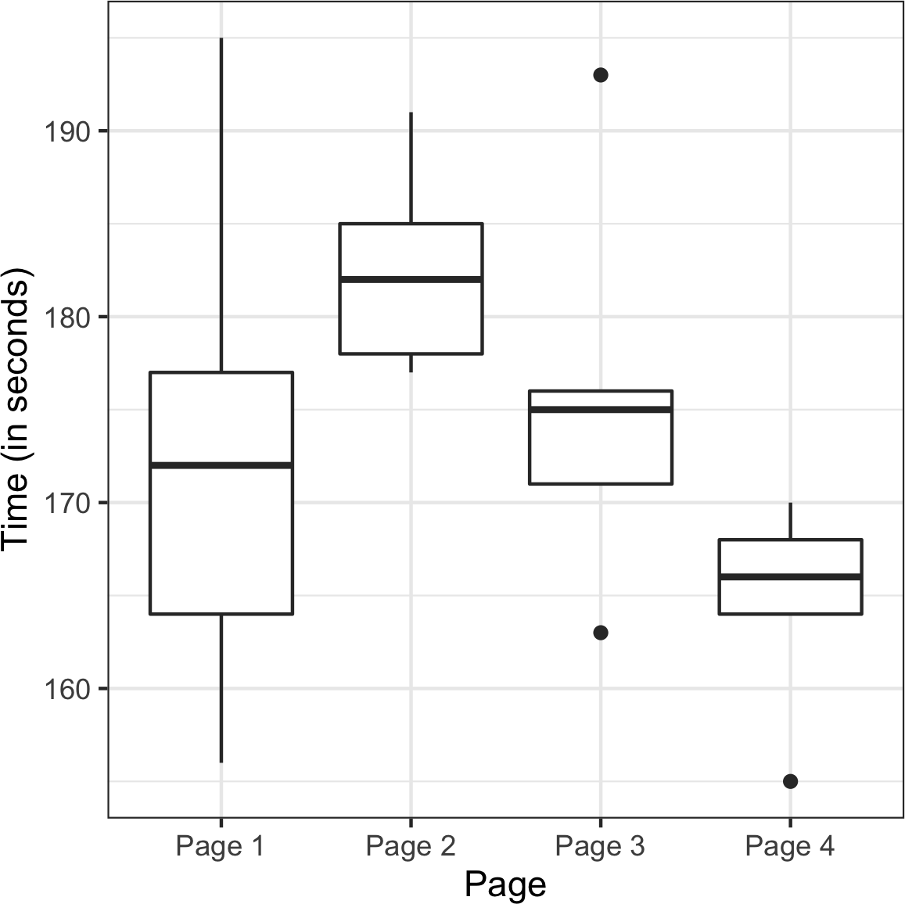

作者：Peter Bruce、Andrew Bruce 和 Peter Gedeck
版权所有 © 2020 Peter Bruce、Andrew Bruce 和 Peter Gedeck。保留所有权利。
在美国印刷。
由 O’Reilly Media, Inc. 出版，地址：1005 Gravenstein Highway North, Sebastopol, CA 95472。
O’Reilly 图书可用于教育、商业或销售推广用途。大多数书籍也提供在线版本（http://oreilly.com）。如需更多信息，请联系我们的企业/机构销售部门：800-998-9938 或 corporate@oreilly.com。
发布详情请参见 http://oreilly.com/catalog/errata.csp?isbn=9781492072942。
O’Reilly 标志是 O’Reilly Media, Inc. 的注册商标。《数据科学家实用统计学》、封面图像及相关商业外观均为 O’Reilly Media, Inc. 的商标。
本作品中表达的观点为作者观点，不代表出版商立场。虽然出版商和作者已尽善意努力确保本作品中包含的信息和说明准确无误，但出版商和作者对所有错误或遗漏不承担责任，包括但不限于因使用或依赖本作品而造成的损害责任。使用本作品中包含的信息和说明风险自负。如果本作品包含或描述的任何代码示例或其他技术受开源许可证或他人知识产权约束，您有责任确保您的使用符合此类许可证和/或权利。
978-1-492-07294-2
[LSI]
Peter Bruce 和 Andrew Bruce 谨将本书献给我们已故的父母 Victor G. Bruce 和 Nancy C. Bruce，他们培养了我们对数学和科学的热情；以及我们的早期导师 John W. Tukey 和 Julian Simon，还有我们的终生挚友 Geoff Watson，他们激励我们投身统计学事业。
Peter Gedeck 谨将本书献给 Tim Clark 和 Christian Kramer，深深感谢他们的科学合作和友谊。
本书面向具有一定 R 和/或 Python 编程语言基础，且曾经接触过统计学（可能是零散或短暂的）的数据科学家。两位作者从统计学领域进入数据科学世界，对统计学在数据科学艺术中所能做出的贡献有一定的认识。同时，我们也深知传统统计学教学的局限性：统计学作为一门学科已有一个半世纪的历史，大多数统计学教科书和课程都承载着如海轮般的惯性和惰性。本书中的所有方法都与统计学学科在历史或方法论上有某种联系。主要从计算机科学发展而来的方法，如neural nets，不包括在内。
本书的两个目标：
以易于理解、便于导航、易于查阅的形式列出与数据科学相关的统计学核心概念。
从数据科学的角度解释哪些概念重要且有用，哪些不那么重要，以及原因。
本书使用以下印刷约定：
表示新术语、URL、电子邮件地址、文件名和文件扩展名。
等宽字体用于程序清单，以及段落中引用程序元素，如变量或函数名、数据库、数据类型、环境变量、语句和关键字。
等宽粗体显示用户应该直接输入的命令或其他文本。
Data science 是多个学科的融合，包括统计学、计算机科学、信息技术和特定领域学科。因此，可能使用几个不同的术语来引用给定的概念。关键术语及其同义词将在全书中以此类侧边栏的形式突出显示。
此元素表示提示或建议。
此元素表示一般说明。
此元素表示警告或注意事项。
在所有情况下，本书首先给出 R 代码示例，然后是 Python 代码示例。为了避免不必要的重复，我们通常只显示由 R 代码创建的输出和图表。我们也跳过了加载所需package和数据集的代码。您可以在 https://github.com/gedeck/practical-statistics-for-data-scientists 找到完整的代码以及数据集的下载。
本书旨在帮助您完成工作。一般来说，如果本书提供了示例代码，您可以在您的程序和文档中使用它。除非您要复制代码的重要部分，否则无需联系我们获得许可。例如，编写使用本书中几个代码块的程序不需要许可。销售或分发 O’Reilly 图书中的示例需要许可。通过引用本书和引用示例代码来回答问题不需要许可。将本书中大量示例代码合并到您产品的文档中需要许可。
我们很感谢，但不要求署名。署名通常包括标题、作者、出版商和ISBN。例如：“Practical Statistics for Data Scientists by Peter Bruce, Andrew Bruce, and Peter Gedeck (O’Reilly). Copyright 2020 Peter Bruce, Andrew Bruce, and Peter Gedeck, 978-1-492-07294-2.”
如果您认为您对代码示例的使用超出了合理使用或上述许可的范围，请随时通过 permissions@oreilly.com 联系我们。
40多年来，O’Reilly Media 一直提供技术和商业培训、知识和洞察，帮助公司取得成功。
我们独特的专家和创新者网络通过书籍、文章和我们的在线学习平台分享他们的知识和专业技能。O’Reilly的在线学习平台为您提供实时培训课程、深度学习路径、交互式编程环境，以及来自O’Reilly和200多家其他出版商的大量文本和视频资源的按需访问。更多信息，请访问 http://oreilly.com。
请将有关本书的评论和问题发送给出版商：
我们为这本书建立了一个网页，在那里我们列出了勘误表、示例和任何其他信息。您可以在 https://oreil.ly/practicalStats_dataSci_2e 访问此页面。
发送邮件至 bookquestions@oreilly.com 来评论或询问有关本书的技术问题。
有关我们的书籍和课程的新闻和更多信息，请访问我们的网站 http://oreilly.com。
在Facebook上找到我们：http://facebook.com/oreilly
在Twitter上关注我们：http://twitter.com/oreillymedia
在YouTube上观看我们：http://www.youtube.com/oreillymedia
作者感谢许多帮助使这本书成为现实的人们。
数据挖掘公司Elder Research的CEO Gerhard Pilcher看过本书的早期草稿，给了我们详细和有帮助的更正和评论。同样，SAS的统计学家Anya McGuirk和Wei Xiao，以及O’Reilly作者Jay Hilfiger，对本书的初稿提供了有帮助的反馈。将第一版翻译成日语的Toshiaki Kurokawa在翻译过程中全面地进行了审查和更正工作。Aaron Schumacher和Walter Paczkowski彻底审查了本书的第二版，并提供了许多有帮助和有价值的建议，我们对此极其感激。不用说，任何遗留的错误都是我们自己的责任。
在O’Reilly，Shannon Cutt以良好的心情和适当的督促引导我们完成了出版过程，而Kristen Brown顺利地将我们的书带入了制作阶段。Rachel Monaghan和Eliahu Sussman细心耐心地更正和改进了我们的写作，而Ellen Troutman-Zaig准备了索引。Nicole Tache接管了第二版的工作，既有效地指导了整个过程，又提供了许多好的编辑建议来提高本书对广大读者的可读性。我们还要感谢Marie Beaugureau，她在O’Reilly发起了我们的项目，以及O’Reilly作者和Statistics.com讲师Ben Bengfort，他将我们介绍给了O’Reilly。
我们和这本书也受益于Peter多年来与其他书籍项目的合著者Galit Shmueli的许多对话。
最后，我们要特别感谢Elizabeth Bruce和Deborah Donnell，她们的耐心和支持使这项工作成为可能。
本章重点关注任何数据科学项目的第一步：探索数据。
古典统计学几乎完全专注于推断(inference)，这是一套有时复杂的程序集合，用于基于小样本对大总体得出结论。1962年，John W. Tukey（[图 1-1]）在他的开创性论文《数据分析的未来》中呼吁对统计学进行改革。他提出了一个称为数据分析(data analysis)的新科学学科，其中统计推断仅是其中一个组成部分。Tukey与工程和计算机科学社区建立了联系（他创造了bit一词，是binary digit的缩写，以及software一词），他的原始原则出人意料地持久，并构成了数据科学基础的一部分。探索性数据分析(exploratory data analysis)领域随着Tukey 1977年的经典著作《探索性数据分析》而建立。Tukey提出了简单的图表（例如，箱线图、散点图），这些图表与汇总统计量（均值、中位数、分位数等）一起，有助于描绘数据集的图像。
随着计算能力的便利可用性和表达性数据分析软件的出现，探索性数据分析已经远远超越了其原始范围。这一学科的主要驱动力是新技术的快速发展、对更多更大数据的访问，以及在各种学科中更多地使用定量分析。斯坦福大学统计学教授、Tukey的前本科学生David Donoho，基于他在新泽西州普林斯顿Tukey百年纪念研讨会上的演讲撰写了一篇优秀文章。Donoho追溯了数据科学的起源，可以追溯到Tukey在数据分析方面的开创性工作。
数据来自许多来源：传感器测量、事件、文本、图像和视频。物联网(Internet of Things, IoT)正在喷涌出信息流。这些数据大部分是非结构化的：图像是像素的集合，每个像素包含RGB（红、绿、蓝）颜色信息。文本是单词和非单词字符的序列，通常按章节、小节等组织。点击流是用户与应用程序或网页交互的操作序列。实际上，数据科学的一个主要挑战是将这种原始数据洪流转化为可操作的信息。要应用本书涵盖的统计概念，非结构化原始数据必须被加工和处理成结构化形式。结构化数据最常见的形式之一是带有行和列的表格——正如数据可能来自关系数据库或为研究而收集的数据。
结构化数据有两种基本类型：数值型(numeric)和分类型(categorical)。数值型数据有两种形式：连续型(continuous)，例如风速或持续时间，以及离散型(discrete)，例如事件发生的计数。分类型(categorical)数据只取固定的值集合，例如电视屏幕类型（等离子、LCD、LED等）或州名（阿拉巴马州、阿拉斯加州等）。二元型(binary)数据是分类数据的一个重要特例，只取两个值中的一个，例如0/1、是/否或真/假。另一种有用的分类数据类型是序数型(ordinal)数据，其中类别是有序的；一个例子是数值评级（1、2、3、4或5）。
为什么我们要费心建立数据类型的分类法？ 事实证明，对于数据分析和预测建模的目的而言，数据类型对于帮助确定视觉显示、数据分析或统计模型的类型非常重要。实际上，数据科学软件，如R和Python，使用这些数据类型来提高计算性能。更重要的是，变量的数据类型决定了软件如何处理该变量的计算。
在数值尺度上表达的数据。
可以在一个区间内取任何值的数据。(同义词: interval, float, numeric)
只能取整数值的数据，如计数。(同义词: integer, count)
只能取特定值集合的数据，表示一组可能的类别。(同义词: enums, enumerated, factors, nominal)
分类数据的一种特殊情况，只有两个类别的值，例如0/1、true/false。(同义词: dichotomous, logical, indicator, boolean)
具有明确排序的分类数据。(同义词: ordered factor)
软件工程师和数据库程序员可能会疑惑，为什么我们在分析中甚至需要分类型和有序型数据的概念。 毕竟，类别只是文本（或数值）值的集合，底层数据库会自动处理内部表示。然而，明确识别数据为分类型，与文本区分开来，确实提供了一些优势：
知道数据是分类型的可以作为一个信号，告诉软件统计程序（如生成图表或拟合模型）应该如何行为。特别是，有序数据可以在R中表示为ordered.factor，在图表、表格和模型中保持用户指定的排序。在Python中，scikit-learn通过sklearn.preprocessing.OrdinalEncoder支持有序数据。
存储和索引可以被优化（如在关系数据库中）。
给定分类变量可以取的可能值在软件中被强制执行（如enum）。
第三个”好处”可能导致意外或不期望的行为：R中数据导入函数（例如read.csv）的默认行为是自动将文本列转换为factor。
对该列的后续操作将假设该列只允许最初导入的值，分配新的文本值将引入警告并产生NA（缺失值）。Python中的pandas包不会自动进行这种转换。但是，您可以在read_csv函数中明确指定列为分类型。
数据通常在软件中按类型分类。
数据类型包括数值型（连续型、离散型）和分类型（二元型、有序型）。
软件中的数据类型作为软件如何处理数据的信号。
pandas文档描述了不同的数据类型以及如何在Python中操作它们。
数据类型可能令人困惑，因为类型可能重叠，一个软件中的分类法可能与另一个软件中的不同。 R
Tutorial网站涵盖了R的分类法。pandas文档描述了不同的数据类型以及如何在Python中操作它们。
数据库在数据类型分类方面更加详细，包含精度级别、固定或可变长度字段等考虑因素；参见W3Schools SQL指南。
数据科学分析的典型参考框架是一个矩形数据对象，如电子表格或数据库表。
矩形数据是二维矩阵的通用术语，行表示记录（案例），列表示特性（变量）；data frame是R和Python中的特定格式。数据并不总是以这种形式开始：非结构化数据（如文本）必须经过处理和操作，以便可以在矩形数据中表示为一组特性（参见[“结构化数据的要素”]）。关系数据库中的数据必须提取并放入单个表中，用于大多数数据分析和建模任务。
矩形数据（如电子表格）是统计和机器学习模型的基本数据结构。
表中的列通常称为feature。
attribute, input, predictor, variable
许多数据科学项目涉及预测一个outcome——通常是是/否结果（在表1-1中，它是”拍卖是否竞争激烈”）。features有时用于在实验或研究中预测outcome。
dependent variable, response, target, output
表中的行通常称为record。
case, example, instance, observation, pattern, sample
| Category | currency | sellerRating | Duration | endDay | ClosePrice | OpenPrice | Competitive? |
|---|---|---|---|---|---|---|---|
| Music/Movie/Game | US | 3249 | 5 | Mon | 0.01 | 0.01 | 0 |
| Music/Movie/Game | US | 3249 | 5 | Mon | 0.01 | 0.01 | 0 |
| Automotive | US | 3115 | 7 | Tue | 0.01 | 0.01 | 0 |
| Automotive | US | 3115 | 7 | Tue | 0.01 | 0.01 | 0 |
| Automotive | US | 3115 | 7 | Tue | 0.01 | 0.01 | 0 |
| Automotive | US | 3115 | 7 | Tue | 0.01 | 0.01 | 0 |
| Automotive | US | 3115 | 7 | Tue | 0.01 | 0.01 | 1 |
| Automotive | US | 3115 | 7 | Tue | 0.01 | 0.01 | 1 |
在表1-1中，有测量或计数数据（如持续时间和价格）和分类数据（如类别和货币）的混合。如前所述，分类变量的一种特殊形式是二元（是/否或0/1）变量，见表1-1最右列——一个指示变量，显示拍卖是否竞争激烈（有多个投标者）。当场景是预测拍卖是否竞争激烈时，这个指示变量恰好也是一个outcome变量。
传统数据库表有一个或多个列被指定为索引，本质上是行号。这可以大大提高某些数据库查询的效率。在Python中，使用pandas库，基本的矩形数据结构是DataFrame对象。默认情况下，基于行的顺序为DataFrame创建自动整数索引。在pandas中，还可以设置多级/分层索引来提高某些操作的效率。
在R中，基本的矩形数据结构是data.frame对象。data.frame也有基于行顺序的隐式整数索引。原生R
data.frame不支持用户指定或多级索引，尽管可以通过row.names属性创建自定义键。为了克服这一不足，两个新包正获得广泛使用：data.table和dplyr。两者都支持多级索引，并在处理data.frame时提供显著的速度提升。
矩形数据的术语可能会令人困惑。统计学家和数据科学家对同一事物使用不同的术语。对统计学家来说，predictor variables(预测变量)用于模型中预测response(响应)或dependent variable(因变量)。对数据科学家来说，features(特征)用于预测target(目标)。有一个同义词特别令人困惑：计算机科学家会使用术语sample(样本)来指代单行数据；而对统计学家来说，sample(样本)意味着行的集合。
除了矩形数据之外还有其他数据结构。
时间序列数据记录同一变量的连续测量值。它是统计预测方法的原材料，也是设备产生数据的关键组成部分——物联网。
空间数据结构用于地图和位置分析，比矩形数据结构更复杂且更多样化。在object(对象)表示法中，数据的焦点是一个对象(例如，一栋房子)及其空间坐标。相比之下，field(场)视图关注小的空间单元和相关指标的值(例如像素亮度)。
图(或网络)数据结构用于表示物理、社会和抽象关系。例如，社交网络(如Facebook或LinkedIn)的图可能表示网络中人与人之间的连接。通过道路连接的配送中心是物理网络的一个例子。图结构对某些类型的问题很有用，如网络优化和推荐系统。
这些数据类型中的每一种在数据科学中都有其专门的方法论。本书的重点是矩形数据，这是预测建模的基本构建块。
在计算机科学和信息技术中，术语graph(图)通常指实体间连接的描述，以及底层数据结构。在统计学中，graph(图)用于指代各种图表和visualizations(可视化)，不仅仅是实体间的连接，该术语仅适用于可视化，而不适用于数据结构。
数据科学中的基本数据结构是矩形矩阵，其中行是记录，列是变量(特征)。
术语可能令人困惑；由于对数据科学有贡献的不同学科(统计学、计算机科学和信息技术)，存在各种同义词。
具有测量或计数数据的变量可能有成千上万个不同的值。探索数据的基本步骤是获得每个特征(变量)的”典型值”：对大部分数据所在位置(即其中心趋势)的估计。
所有值的总和除以值的数量。
平均值
所有值乘以权重的总和除以权重的总和。
加权平均值
使得一半数据位于其上方和下方的值。
第50百分位数
使得P百分比的数据位于其下方的值。
分位数
使得权重总和的一半位于排序数据的上方和下方的值。
去除固定数量极值后所有值的平均值。
截断均值
对极值不敏感。
抗性的
与大多数数据差异很大的数据值。
极值
乍一看，数据汇总似乎相当简单：只需取数据的均值即可。实际上，虽然均值易于计算且使用方便，但它可能并不总是衡量中心值的最佳指标。因此，统计学家已经开发并推广了几种均值的替代估计方法。
统计学家经常使用术语估计值来表示从手头数据计算出的值，以区分我们从数据中看到的内容与理论上真实或确切的情况。数据科学家和业务分析师更倾向于将这样的值称为指标。这种差异反映了统计学与数据科学方法的不同：不确定性的考虑是统计学学科的核心，而具体的业务或组织目标是数据科学的重点。因此，统计学家进行估计，数据科学家进行测量。
位置的最基本估计是均值，即平均值。均值是所有值的总和除以值的数量。考虑以下数字集合：{3 5 1 2}。均值是(3 + 5 + 1 + 2) / 4 = 11 / 4 = 2.75。你会遇到符号(读作”x-bar”)用来表示总体样本的均值。计算一组n个值的均值公式是：
N(或n)指的是记录或观测值的总数。在统计学中，如果指的是总体，则大写；如果指的是总体的样本，则小写。在数据科学中，这种区别并不重要，所以你可能会看到两种形式。
均值的一个变体是修剪均值(trimmed mean)，它通过在每端去除固定数量的排序值，然后取剩余值的平均值来计算。用排序值表示，其中是最小值，是最大值，去除最小和最大值的修剪均值计算公式是：
修剪均值消除了极值的影响。例如，在国际跳水比赛中，从五位裁判的评分中去除最高分和最低分，最终得分是剩余三位裁判评分的平均值。这使得单个裁判难以操纵分数，可能偏向本国选手。修剪均值被广泛使用，在许多情况下比使用普通均值更可取——参见[“中位数和稳健估计”]了解进一步讨论。
另一种均值类型是加权均值(weighted mean)，它通过将每个数据值乘以用户指定的权重，然后将它们的总和除以权重的总和来计算。加权均值的公式是：
使用加权平均值的两个主要动机：
某些值本质上比其他值更具有可变性，高度可变的观察值被赋予较低的权重。例如，如果我们从多个传感器获取平均值，而其中一个传感器精度较低，那么我们可能会降低来自该传感器的数据权重。
收集的数据并不能平等地代表我们感兴趣测量的不同组别。例如，由于在线实验的进行方式，我们可能没有准确反映用户群体中所有组别的数据集。为了纠正这一点，我们可以对代表性不足的组别的数值给予更高的权重。
中位数是排序数据列表中的中间数。如果数据值是偶数个，则中间值实际上不在数据集中，而是将排序数据分为上半部分和下半部分的两个值的平均值。与使用所有观察值的平均值相比，中位数只依赖于排序数据中心的值。虽然这可能看起来是一个劣势，因为平均值对数据更加敏感，但在许多情况下，中位数是更好的位置度量指标。假设我们想要查看西雅图华盛顿湖周围社区的典型家庭收入。在比较梅迪纳社区和温德米尔社区时，使用平均值会产生截然不同的结果，因为比尔·盖茨住在梅迪纳。如果我们使用中位数，比尔·盖茨有多富有并不重要——中间观察值的位置将保持不变。
出于使用加权平均值的相同原因，也可以计算加权中位数。与中位数一样，我们首先对数据进行排序，尽管每个数据值都有一个相关的权重。加权中位数不是中间数，而是使排序列表的下半部分和上半部分的权重之和相等的值。与中位数一样，加权中位数对异常值具有稳健性。
中位数被称为位置的稳健估计，因为它不受可能使结果偏斜的异常值(extreme cases)的影响。异常值是数据集中与其他值距离很远的任何值。异常值的确切定义有些主观，尽管在各种数据摘要和图表中使用了某些约定(参见[“百分位数和箱线图”])。异常值本身并不使数据值无效或错误(如前面比尔·盖茨的例子)。然而，异常值通常是数据错误的结果，例如混合不同单位的数据(公里与米)或传感器的错误读数。当异常值是错误数据的结果时，平均值将导致位置估计不佳，而中位数仍然有效。无论如何，应该识别异常值，通常值得进一步调查。
与典型的数据分析形成对比，在典型数据分析中异常值有时是信息性的，有时是干扰，而在异常检测中，感兴趣的点是异常值，更大的数据量主要用于定义测量异常的”正常”标准。
中位数不是唯一的稳健位置估计。实际上，修剪平均值被广泛用于避免异常值的影响。例如，修剪数据的底部和顶部10%(常见选择)将在除最小数据集之外的所有数据集中提供针对异常值的保护。修剪平均值可以被认为是中位数和平均值之间的折中：它对数据中的极值具有稳健性，但使用更多数据来计算位置估计。
统计学家已经开发了大量其他位置估计器，主要目标是开发比平均值更稳健、效率更高(即更好地辨别数据集之间的小位置差异)的估计器。虽然这些方法对小数据集可能有用，但对于大型甚至中等规模的数据集，它们不太可能提供额外的好处。
表1-2显示了包含美国各州人口和谋杀率(单位：每年每10万人的谋杀数)的数据集中的前几行(2010年人口普查)。
State Population Murder rate Abbreviation
--- ------------- ------------ ------------- --------------
1 Alabama 4,779,736 5.7 AL
2 Alaska 710,231 5.6 AK
3 Arizona 6,392,017 4.7 AZ
4 Arkansas 2,915,918 5.6 AR
5 California 37,253,956 4.4 CA
6 Colorado 5,029,196 2.8 CO
7 Connecticut 3,574,097 2.4 CT
8 Delaware 897,934 5.8 DE: 表1-2. 各州人口和谋杀率data.frame状态的几行数据
使用R计算人口的均值、截尾均值和中位数：
> state <- read.csv('state.csv')
> mean(state[['Population']])
[1] 6162876
> mean(state[['Population']], trim=0.1)
[1] 4783697
> median(state[['Population']])
[1] 4436370要在Python中计算均值和中位数，我们可以使用数据框的pandas方法。截尾均值需要使用scipy.stats中的trim_mean函数：
state = pd.read_csv('state.csv')
state['Population'].mean()
trim_mean(state['Population'], 0.1)
state['Population'].median()均值大于截尾均值，截尾均值大于中位数。
这是因为截尾均值排除了最大和最小的五个州(trim=0.1从两端各去掉10%)。如果我们要计算全国的平均谋杀率，我们需要使用加权均值或中位数来考虑各州不同的人口。由于R基础包没有加权中位数函数，我们需要安装一个包，比如matrixStats：
> weighted.mean(state[['Murder.Rate']], w=state[['Population']])
[1] 4.445834
> library('matrixStats')
> weightedMedian(state[['Murder.Rate']], w=state[['Population']])
[1] 4.4NumPy提供了加权均值。对于加权中位数，我们可以使用专门的包wquantiles：
np.average(state['Murder.Rate'], weights=state['Population'])
wquantiles.median(state['Murder.Rate'], weights=state['Population'])在这种情况下，加权均值和加权中位数大致相同。
位置的基本度量是均值，但它对极值(异常值)可能敏感。
其他度量(中位数、截尾均值)对异常值和异常分布不太敏感，因此更稳健。
维基百科关于集中趋势的文章包含了对各种位置度量的广泛讨论。
John Tukey 1977年的经典著作探索性数据分析(Pearson)至今仍被广泛阅读。
位置只是概括特征的一个维度。第二个维度，变异性，也称为离散性，衡量数据值是紧密聚集还是分散的。变异性是统计学的核心：测量它、减少它、区分随机变异性和真实变异性、识别真实变异性的各种来源，以及在其存在下做出决策。
观察值与位置估计之间的差异。
误差、残差
均值平方偏差之和除以n - 1，其中n是数据值的数量。
均方误差
方差的平方根。
与均值偏差的绝对值的平均值。
l1-norm，Manhattan norm
与中位数偏差的绝对值的中位数。
数据集中最大值和最小值之间的差异。
基于从小到大排序的数据值的度量。
ranks
使得P百分比的值取此值或更小值，(100–P)百分比的值取此值或更大值的数值。
quantile
第75百分位数与第25百分位数之间的差异。
IQR
正如测量位置有不同方法（均值、中位数等），测量变异性也有不同方法。
最广泛使用的变异估计基于位置估计与观测数据之间的差异或偏差。对于数据集{1, 4, 4}，均值是3，中位数是4。与均值的偏差为：1 – 3 = –2，4 – 3 = 1，4 – 3 = 1。这些偏差告诉我们数据围绕中心值的分散程度。
测量变异性的一种方法是估计这些偏差的典型值。对偏差本身求平均值并不能告诉我们太多信息——负偏差抵消了正偏差。实际上，与均值偏差的总和恰好为零。相反，一个简单的方法是取与均值偏差绝对值的平均值。在前面的例子中，偏差的绝对值是{2 1 1}，它们的平均值是(2 + 1 + 1) / 3 = 1.33。这被称为mean absolute deviation，计算公式为：
其中是样本均值。
最著名的变异性估计是variance和standard deviation，它们基于平方偏差。Variance是平方偏差的平均值，standard deviation是variance的平方根：
Standard deviation比variance更容易解释，因为它与原始数据的尺度相同。尽管如此，由于其更复杂和不太直观的公式，standard deviation在统计学中比mean absolute deviation更受青睐可能看起来很奇怪。它的重要地位源于统计理论：从数学角度来说，处理平方值比绝对值方便得多，特别是对于统计模型。
在统计学教科书中，总是有一些关于为什么我们在variance公式的分母中使用n – 1而不是n的讨论，这引出了自由度的概念。这种区别并不重要，因为n通常足够大，无论你除以n还是n – 1都不会有太大差别。但如果你感兴趣，以下是原因。这基于你想要根据样本对总体进行估计的前提。
如果你在variance公式中使用直观的分母n，你将低估总体中variance和standard deviation的真实值。这被称为有偏估计。然而，如果你除以n – 1而不是n，variance就变成了无偏估计。
要完全解释为什么使用 n 会导致有偏估计，需要涉及自由度的概念，它考虑了计算估计值时的约束数量。在这种情况下，有 n - 1 个自由度，因为存在一个约束：标准差的计算依赖于样本均值的计算。对于大多数问题，数据科学家不需要担心自由度问题。
方差、标准差和平均绝对偏差都不能抵抗异常值和极值的影响（参见“中位数和稳健估计”中关于位置稳健估计的讨论）。方差和标准差对异常值特别敏感，因为它们基于平方偏差。
一个变异性的稳健估计是中位数绝对偏差或MAD：
其中 m 是中位数。与中位数一样，MAD不受极值影响。也可以计算类似于修剪均值的修剪标准差（参见“均值”）。
方差、标准差、平均绝对偏差和中位数绝对偏差不是等价的估计，即使在数据来自正态分布的情况下也是如此。实际上，标准差总是大于平均绝对偏差，而平均绝对偏差本身又大于中位数绝对偏差。有时，中位数绝对偏差会乘以一个常数缩放因子，以便在正态分布情况下将MAD与标准差置于同一尺度。常用的因子1.4826意味着50%的正态分布落在范围内（例如，参见https://oreil.ly/SfDk2）。
估计离散程度的另一种方法是基于观察排序数据的分布。基于排序（排名）数据的统计量称为顺序统计量。最基本的度量是范围：最大值和最小值之间的差值。最小值和最大值本身很有用，有助于识别异常值，但范围对异常值极其敏感，作为数据离散程度的一般度量不是很有用。
为了避免对异常值的敏感性，我们可以在从两端去除值后观察数据的范围。形式上，这些类型的估计基于百分位数之间的差值。在数据集中，第P个百分位数是这样一个值：至少P百分比的值取这个值或更小，至少(100 - P)百分比的值取这个值或更大。例如，要找到第80个百分位数，先对数据排序。然后，从最小值开始，前进到最大值的80%位置。注意中位数与第50个百分位数是同一概念。百分位数本质上与分位数相同，分位数用分数索引（所以0.8分位数与第80个百分位数相同）。
变异性的常见度量是第25个百分位数和第75个百分位数之间的差值，称为四分位距（或IQR）。这里是一个简单的示例：{3,1,5,3,6,7,2,9}。我们将其排序得到{1,2,3,3,5,6,7,9}。第25个百分位数是2.5，第75个百分位数是6.5，所以四分位距是6.5 - 2.5 = 4。软件可能采用略有不同的方法产生不同的答案（参见以下提示）；通常，这些差异较小。
对于非常大的数据集，计算精确的百分位数在计算上可能非常昂贵，因为它需要对所有数据值进行排序。机器学习和统计软件使用特殊算法，如[Zhang-Wang-2007]，来获得可以非常快速计算并保证具有一定精度的近似百分位数。
如果我们有偶数个数据（n是偶数），那么在前面的定义下百分位数是模糊的。实际上，我们可以取阶次统计量和之间的任何值，其中j满足：
形式上，百分位数是加权平均：
对于0到1之间的某个权重w。统计软件在选择w时有略微不同的方法。实际上，R函数quantile提供了九种不同的替代方法来计算quantile。除了小数据集，您通常不需要担心百分位数的精确计算方式。在撰写本文时，Python的numpy.quantile仅支持一种方法，即线性插值。
表1-3（为方便起见从表1-2重复）显示了包含每个州人口和谋杀率数据集的前几行。
| 州 | 人口 | 谋杀率 | 缩写 | |
|---|---|---|---|---|
| 1 | Alabama | 4,779,736 | 5.7 | AL |
| 2 | Alaska | 710,231 | 5.6 | AK |
| 3 | Arizona | 6,392,017 | 4.7 | AZ |
| 4 | Arkansas | 2,915,918 | 5.6 | AR |
| 5 | California | 37,253,956 | 4.4 | CA |
| 6 | Colorado | 5,029,196 | 2.8 | CO |
| 7 | Connecticut | 3,574,097 | 2.4 | CT |
| 8 | Delaware | 897,934 | 5.8 | DE |
使用R内置函数计算标准差、四分位距(IQR)和绝对中位差(MAD)，我们可以计算州人口数据的变异性估计：
> sd(state[['Population']])
[1] 6848235
> IQR(state[['Population']])
[1] 4847308
> mad(state[['Population']])
[1] 3849870pandas数据框提供了计算标准差和quantiles的方法。使用quantiles，我们可以轻松确定IQR。对于robust
MAD，我们使用statsmodels包中的robust.scale.mad函数：
state['Population'].std()
state['Population'].quantile(0.75) - state['Population'].quantile(0.25)
robust.scale.mad(state['Population'])标准差几乎是MAD的两倍（在R中，默认情况下，MAD的尺度被调整为与均值相同的尺度）。这并不奇怪，因为标准差对异常值敏感。
方差和标准差是最广泛和常规报告的变异性统计量。
两者都对异常值敏感。
更robust的指标包括平均绝对偏差、绝对中位差和百分位数(quantiles)。
我们涵盖的每个估计都用单个数字来总结数据，以描述数据的位置或变异性。探索数据的整体分布情况也很有用。
Tukey引入的一种快速可视化数据分布的图表。
box and whiskers plot
数值数据值落入一组区间(bins)的计数统计表。
以 x 轴表示组距、y 轴表示计数（或比例）的频数表图形。虽然视觉上相似，但柱状图不应与直方图混淆。参见[“探索二元和分类数据”]了解两者差异的讨论。
直方图的平滑版本，通常基于核密度估计 (kernel density estimate)。
在[“基于百分位数的估计”]中，我们探讨了如何使用百分位数来衡量数据的离散程度。百分位数对于总结整个分布也很有价值。通常报告四分位数（第25、50、75百分位数）和十分位数（第10、20、…、90百分位数）。百分位数对于总结分布的尾部(外围范围)特别有价值。流行文化创造了one-percenters这个词来指代财富处于第99百分位数顶端的人群。
[表 1-4]
显示了各州谋杀率的一些百分位数。在R中，这可以通过quantile函数生成：
quantile(state[['Murder.Rate']], p=c(.05, .25, .5, .75, .95))
5% 25% 50% 75% 95%
1.600 2.425 4.000 5.550 6.510Python中的pandas data
frame方法quantile提供了同样的功能：
state['Murder.Rate'].quantile([0.05, 0.25, 0.5, 0.75, 0.95])| 5% | 25% | 50% | 75% | 95% |
|---|---|---|---|---|
| 1.60 | 2.42 | 4.00 | 5.55 | 6.51 |
中位数是每10万人中有4起谋杀案，但存在相当大的变异性：第5百分位数仅为1.6，第95百分位数为6.51。
箱线图 (Boxplots)由Tukey引入，基于百分位数，提供了一种快速可视化数据分布的方法。[图 1-2] 显示了R生成的各州人口箱线图：
boxplot(state[['Population']]/1000000, ylab='Population (millions)')pandas为data
frame提供了许多基本的探索性图表；其中之一就是箱线图：
ax = (state['Population']/1_000_000).plot.box()
ax.set_ylabel('Population (millions)')从这个箱线图我们可以立即看出，各州人口的中位数约为500万，一半的州人口在约200万到约700万之间，还有一些高人口离群值。箱子的顶部和底部分别是第75和第25百分位数。中位数由箱子中的水平线表示。从箱子顶部和底部延伸出的虚线称为须线
(whiskers)，表示大部分数据的范围。箱线图有许多变体；例如，参见R函数boxplot的文档。默认情况下，R函数将须线延伸到箱子外最远的点，但不会超过IQR的1.5倍。Matplotlib使用相同的实现；其他软件可能使用不同的规则。
须线之外的任何数据都会绘制为单独的点或圆圈（通常被认为是离群值）。
变量的频率表将变量范围划分为等间距的段，并告诉我们有多少值落在每个段内。[表1-5]显示了在R中计算的各州人口频率表：
breaks <- seq(from=min(state[['Population']]),
to=max(state[['Population']]), length=11)
pop_freq <- cut(state[['Population']], breaks=breaks,
right=TRUE, include.lowest=TRUE)
table(pop_freq)函数pandas.cut创建一个将值映射到段中的series。使用value_counts方法，我们得到频率表：
binnedPopulation = pd.cut(state['Population'], 10)
binnedPopulation.value_counts()| BinNumber | BinRange | Count | States |
|---|---|---|---|
| 1 | 563,626–4,232,658 | 24 | WY,VT,ND,AK,SD,DE,MT,RI,NH,ME,HI,ID,NE,WV,NM,NV,UT,KS,AR,MS,IA,CT,OK,OR |
| 2 | 4,232,659–7,901,691 | 14 | KY,LA,SC,AL,CO,MN,WI,MD,MO,TN,AZ,IN,MA,WA |
| 3 | 7,901,692–11,570,724 | 6 | VA,NJ,NC,GA,MI,OH |
| 4 | 11,570,725–15,239,757 | 2 | PA,IL |
| 5 | 15,239,758–18,908,790 | 1 | FL |
| 6 | 18,908,791–22,577,823 | 1 | NY |
| 7 | 22,577,824–26,246,856 | 1 | TX |
| 8 | 26,246,857–29,915,889 | 0 | |
| 9 | 29,915,890–33,584,922 | 0 | |
| 10 | 33,584,923–37,253,956 | 1 | CA |
表1-5. 各州人口频率表
人口最少的州是Wyoming，有563,626人，人口最多的是California，有37,253,956人。这给我们一个范围37,253,956 – 563,626 = 36,690,330，我们必须将其划分为等大小的bins——比如说10个bins。使用10个等大小的bins，每个bin的宽度为3,669,033，所以第一个bin将从563,626跨越到4,232,658。相比之下，顶部的bin，33,584,923到37,253,956，只有一个州：California。California下面的两个bins是空的，直到我们到达Texas。包含空bins是很重要的；这些bins中没有值的事实是有用的信息。使用不同的bin大小进行实验也是有用的。如果它们太大，分布的重要特征可能被遮蔽。如果它们太小，结果过于细粒度，看到大局的能力就会丢失。
频率表和百分位数都通过创建bins来汇总数据。一般来说，四分位数和十分位数在每个bin中将有相同的计数（等计数bins），但bin大小会不同。相比之下，频率表在bins中会有不同的计数（等大小bins），bin大小会相同。
histogram是可视化频率表的一种方式，x轴为bins，y轴为数据计数。例如在[图1-3]中，以1000万为中心的bin大约从800万跨越到1200万，该bin中有六个州。要在R中创建对应[表1-5]的histogram，使用带有breaks参数的hist函数：
hist(state[['Population']], breaks=breaks)pandas使用DataFrame.plot.hist方法为data
frames支持histograms。使用关键字参数bins来定义bins的数量。各种plot方法返回一个axis对象，允许使用Matplotlib进一步微调可视化：
ax = (state['Population'] / 1_000_000).plot.hist(figsize=(4, 4))
ax.set_xlabel('Population (millions)')histogram如[图1-3]所示。一般来说，histograms是这样绘制的：
空bins包含在图中。
Bins具有相等的宽度。
bins的数量（或等价地，bin大小）由用户决定。
条形图是连续的——条形图之间不显示空白空间，除非有空bin。
在统计学理论中，位置和变异性被称为分布的第一和第二moments。 第三和第四个moments被称为skewness和kurtosis。 Skewness指的是数据是否向较大或较小的值偏斜，而kurtosis表示数据具有极值的倾向性。通常，不使用度量来测量skewness和kurtosis；相反，这些是通过可视化显示来发现的，如图1-2和1-3所示。
与直方图相关的是密度图，它将数据值的分布显示为连续的线。 密度图可以被认为是平滑的直方图，尽管它通常通过kernel
density estimate（内核密度估计）直接从数据计算得出（参见[Duong-2001]的简短教程）。图1-4显示了叠加在直方图上的密度估计。在R中，您可以使用density函数计算密度估计：
hist(state[['Murder.Rate']], freq=FALSE)
lines(density(state[['Murder.Rate']]), lwd=3, col='blue')pandas提供了density方法来创建密度图。使用参数bw_method来控制密度曲线的平滑度：
ax = state['Murder.Rate'].plot.hist(density=True, xlim=[0,12], bins=range(1,12))
state['Murder.Rate'].plot.density(ax=ax)
ax.set_xlabel('Murder Rate (per 100,000)')
绘图函数通常接受一个可选的轴（ax）参数，这将使绘图添加到同一图形中。
与图1-3中绘制的直方图的一个关键区别是y轴的比例：密度图对应于将直方图绘制为比例而不是计数（在R中使用参数freq=FALSE指定此选项）。请注意，密度曲线下的总面积=1，而不是在箱中计数，您计算x轴上任意两点之间曲线下的面积，这对应于分布在这两点之间的比例。

密度估计是统计文献中历史悠久的丰富主题。实际上，已经发布了20多个R包，提供密度估计功能。[Deng-Wickham-2011]对R包进行了全面评述，特别推荐了ASH或KernSmooth。pandas和scikit-learn中的密度估计方法也提供了良好的实现。对于许多数据科学问题，无需担心各种类型的密度估计；使用基础函数就足够了。
频率直方图在y轴上绘制频率计数，在x轴上绘制变量值；它可以一目了然地了解数据的分布。
频率表是在直方图中找到的频率计数的表格版本。
箱线图——箱子的顶部和底部分别位于第75和第25百分位数——也能快速了解数据的分布；它经常用于并排显示以比较分布。
密度图是直方图的平滑版本；它需要一个函数来基于数据估计图形（当然，可能有多个估计）。
SUNY Oswego教授提供了一个创建箱线图的分步指南。
R中的密度估计在Henry Deng和Hadley Wickham的同名论文中有所涵盖。
R-Bloggers有一个关于R中直方图的有用帖子，包括自定义元素，如分箱（breaks）。
R-Bloggers也有一篇关于R中boxplot的类似文章。
Matthew Conlen发布了一个交互式演示，展示了选择不同kernel和bandwidth对kernel密度估计的影响。
对于分类数据，简单的比例或百分比就能讲述数据的故事。
数据集中出现最频繁的类别或值。
当类别可以与数值相关联时，这给出了基于类别出现概率的平均值。
每个类别的频率或比例以条形图的形式绘制。
每个类别的频率或比例以饼图中的扇形绘制。
获取二元变量或具有少数几个类别的分类变量的摘要是相当容易的事情：我们只需要计算出1的比例，或重要类别的比例。例如，表1-6显示了2010年以来达拉斯/沃思堡机场按延误原因分类的延误航班百分比。延误被分类为承运人控制因素、空管系统(ATC)延误、天气、安全或晚到的入港航班等原因。
| 承运人 | ATC | 天气 | 安全 | 入港 |
|---|---|---|---|---|
| 23.02 | 30.40 | 4.03 | 0.12 | 42.43 |
Bar
charts在大众媒体中经常看到，是显示单个分类变量的常见可视化工具。类别列在x轴上，频率或比例列在y轴上。图1-5显示了达拉斯/沃思堡(DFW)按原因分类的年度机场延误情况，它是用R函数barplot生成的：
barplot(as.matrix(dfw) / 6, cex.axis=0.8, cex.names=0.7,
xlab='Cause of delay', ylab='Count')pandas也支持数据框的bar charts：
ax = dfw.transpose().plot.bar(figsize=(4, 4), legend=False)
ax.set_xlabel('Cause of delay')
ax.set_ylabel('Count')注意bar chart类似于histogram；在bar chart中，x轴代表因子变量的不同类别，而在histogram中，x轴代表单个变量在数值尺度上的值。在histogram中，条形通常显示为相互接触，间隙表示数据中未出现的值。在bar chart中，条形彼此分离显示。
Pie charts是bar charts的替代选择，尽管统计学家和数据可视化专家通常避免使用pie charts，认为它们在视觉信息方面不够有效（参见[Few-2007]）。
在“频率表和直方图”中，我们查看了基于数据分箱的频率表。这隐式地将数值数据转换为有序因子。 从这个意义上说，直方图和柱状图是相似的，除了柱状图中x轴上的类别没有排序。将数值数据转换为分类数据是数据分析中一个重要且广泛使用的步骤，因为它降低了数据的复杂性（和大小）。这有助于发现特征之间的关系，特别是在分析的初始阶段。
众数是在数据中出现最频繁的值——如果有并列的情况则是多个值。 例如，达拉斯/沃斯堡机场延误原因的众数是”入港”。再比如，在美国大部分地区，宗教偏好的众数应该是基督教。众数是分类数据的一个简单汇总统计量，通常不用于数值数据。
一种特殊类型的分类数据是其类别表示或可以映射到同一尺度上离散值的数据。 例如，一个新云技术的营销人员提供两个服务级别，一个定价为每月300美元，另一个为每月50美元。营销人员提供免费网络研讨会来产生潜在客户，公司估计5%的参与者会注册300美元的服务，15%会注册50美元的服务，80%不会注册任何服务。出于财务目的，这些数据可以汇总为一个”期望值”，这是一种加权平均的形式，其中权重是概率。
期望值的计算如下：
将每个结果乘以其发生概率。
将这些值相加。
在云服务示例中，网络研讨会参与者的期望值因此为每月22.50美元，计算如下：
期望值实际上是加权平均的一种形式：它结合了未来期望和概率权重的概念，通常基于主观判断。期望值是企业估值和资本预算中的基本概念——例如，新收购项目五年利润的期望值，或诊所新患者管理软件的期望成本节约。
我们在上面提到了一个值发生的概率。 大多数人对概率有直观的理解，在天气预报（下雨的可能性）或体育分析（获胜的概率）中经常遇到这个概念。体育和游戏更常用赔率表示，赔率可以很容易地转换为概率（如果一个团队获胜的赔率是2比1，其获胜概率为2/(2+1) = 2/3）。然而，令人惊讶的是，在定义概率概念时，它可能成为深入哲学讨论的源泉。幸运的是，我们这里不需要正式的数学或哲学定义。就我们的目的而言，事件发生的概率是如果情况可以无数次重复，它发生的次数比例。这通常是一个想象的构造，但它是对概率的充分操作理解。
分类数据通常以比例汇总，可以在柱状图中可视化。
类别可能代表不同的事物（苹果和橙子，男性和女性），因子变量的水平（低、中、高），或已分箱的数值数据。
期望值是值乘以其发生概率的总和，通常用于汇总因子变量水平。
没有一门统计学课程是完整的，如果没有关于误导性图表的课程，这通常涉及柱状图和饼图。
许多建模项目（无论是在data science还是研究中）的exploratory data analysis都涉及检查预测变量之间以及预测变量与目标变量之间的correlation。如果变量X的高值对应变量Y的高值，X的低值对应Y的低值，则称变量X和Y（每个都有测量数据）呈正相关。如果X的高值对应Y的低值，反之亦然，则变量呈负相关。
一个衡量数值变量之间关联程度的度量（范围从-1到+1）。
一个表格，其中变量显示在行和列上，单元格值是变量之间的correlation。
一个图表，其中x轴是一个变量的值，y轴是另一个变量的值。
考虑这两个变量，在每个都从低到高的意义上完全相关：
乘积的向量和是。现在尝试打乱其中一个并重新计算——乘积的向量和永远不会高于32。因此这个乘积和可以用作度量；也就是说，观察到的32可以与大量随机打乱进行比较（实际上，这个想法与基于重采样的估计相关；参见”Permutation Test”）。不过，除了参考重采样分布外，这个度量产生的值并不那么有意义。
更有用的是标准化变体：correlation coefficient，它提供了两个变量之间correlation的估计，总是位于相同的尺度上。要计算Pearson’s correlation coefficient，我们将变量1与均值的偏差乘以变量2的偏差，然后除以标准差的乘积：
注意我们除以n-1而不是n；更多详情请参见”Degrees of Freedom, and n or n-1?“。Correlation coefficient总是介于+1（完全正相关）和-1（完全负相关）之间；0表示无相关性。
变量可能有非线性的关联，在这种情况下correlation coefficient可能不是有用的度量。税率与税收收入之间的关系就是一个例子：当税率从零开始增加时，税收收入也增加。然而，一旦税率达到高水平并接近100%，避税行为增加，税收收入实际上会下降。
表1-7，称为correlation matrix，显示了2012年7月至2015年6月期间电信股票日收益之间的correlation。从表中可以看出，Verizon (VZ)和ATT (T)具有最高的correlation。Level 3 (LVLT)是一家基础设施公司，与其他公司的correlation最低。注意对角线上的1（股票与自身的correlation为1）以及对角线上方和下方信息的冗余。
| T | CTL | FTR | VZ | LVLT | |
|---|---|---|---|---|---|
| T | 1.000 | 0.475 | 0.328 | 0.678 | 0.279 |
| CTL | 0.475 | 1.000 | 0.420 | 0.417 | 0.287 |
| FTR | 0.328 | 0.420 | 1.000 | 0.287 | 0.260 |
| VZ | 0.678 | 0.417 | 0.287 | 1.000 | 0.242 |
| LVLT | 0.279 | 0.287 | 0.260 | 0.242 | 1.000 |
表1-7. 电信股票收益之间的Correlation
像表1-7这样的correlation表通常被绘制出来以直观显示多个变量之间的关系。图1-6显示了主要exchange-traded
funds
(ETFs)日收益之间的correlation。在R中，我们可以使用corrplot包轻松创建这个图：
etfs <- sp500_px[row.names(sp500_px) > '2012-07-01',
sp500_sym[sp500_sym$sector == 'etf', 'symbol']]
library(corrplot)
corrplot(cor(etfs), method='ellipse')在Python中创建相同的图是可能的，但在常见包中没有实现。然而，大多数都支持使用热力图(heatmaps)可视化correlation
matrices。以下代码使用seaborn.heatmap包演示了这一点。在随附的源代码库中，我们包含了生成更全面可视化的Python代码：
etfs = sp500_px.loc[sp500_px.index > '2012-07-01',
```python
sp500_sym[sp500_sym['sector'] == 'etf']['symbol']]
sns.heatmap(etfs.corr(), vmin=-1, vmax=1,
cmap=sns.diverging_palette(20, 220, as_cmap=True))S&P 500的ETF（SPY）和道琼斯指数的ETF（DIA）具有高度相关性。同样，主要由科技公司组成的QQQ和XLK呈正相关。防御性ETF，如追踪黄金价格（GLD）、石油价格（USO）或市场波动率（VXX）的ETF，往往与其他ETF呈弱相关或负相关。椭圆的方向表示两个变量是正相关（椭圆指向右上方）还是负相关（椭圆指向左上方）。椭圆的阴影和宽度表示关联强度：更细更暗的椭圆对应更强的关系。
与均值和标准差一样，相关系数对数据中的异常值很敏感。软件包提供了经典相关系数的robust替代方案。例如，R包robust使用函数covRob来计算相关性的robust估计。scikit-learn模块sklearn.covariance中的方法实现了各种方法。
统计学家很久以前就提出了其他类型的相关系数，如Spearman’s rho或Kendall’s tau。这些是基于数据排名的相关系数。由于它们使用排名而不是数值，这些估计对异常值具有鲁棒性，并且可以处理某些类型的非线性关系。然而，数据科学家通常可以坚持使用Pearson相关系数及其robust替代方案进行探索性分析。基于排名的估计主要适用于较小的数据集和特定的假设检验。
可视化两个测量数据变量之间关系的标准方法是散点图。x轴代表一个变量，y轴代表另一个变量，图上的每个点都是一个记录。参见图1-7，展示了ATT和Verizon日回报率之间的相关性图。这在R中使用以下命令生成：
plot(telecom$T, telecom$VZ, xlab='ATT (T)', ylab='Verizon (VZ)')同样的图形可以在Python中使用pandas的scatter方法生成：
ax = telecom.plot.scatter(x='T', y='VZ', figsize=(4, 4), marker='$\u25EF$')
ax.set_xlabel('ATT (T)')
ax.set_ylabel('Verizon (VZ)')
ax.axhline(0, color='grey', lw=1)
ax.axvline(0, color='grey', lw=1)回报率表现出正相关关系：虽然它们围绕零聚集，但在大多数日子里，这两只股票同涨同跌（右上和左下象限）。很少有日子出现一只股票大幅下跌而另一只股票上涨的情况，反之亦然（右下和左上象限）。
虽然图1-7只显示了754个数据点，但很明显在图的中间部分识别细节是多么困难。我们稍后将看到如何通过为点添加透明度，或使用六角形分箱和密度图，来帮助发现数据中的额外结构。
相关系数测量两个配对变量（例如，个体的身高和体重）之间的关联程度。
当v1的高值与v2的高值相伴时，v1和v2呈正关联。
当 v1 的高值对应 v2 的低值时，v1 和 v2 呈负相关。
相关系数是一个标准化度量，始终在 -1（完全负相关）到 +1（完全正相关）之间变化。
相关系数为零表示无相关性，但需要注意的是，数据的随机排列仅凭偶然也会产生正负相关系数值。
David Freedman、Robert Pisani 和 Roger Purves 合著的《Statistics》第4版（W. W. Norton，2007）对相关性有精彩的讨论。
类似均值和方差这样的常见估计量一次只观察一个变量（单变量分析）。相关性分析（参见”相关性”）是比较两个变量的重要方法（双变量分析）。在本节中，我们将探讨额外的估计和图表，以及两个以上的变量（多变量分析）。
两个或多个分类变量之间计数的统计表。
将记录分箱到六边形中的两个数值变量图表。
显示两个数值变量密度的图表，类似地形图。
类似箱线图但显示密度估计。
与单变量分析一样，双变量分析涉及计算汇总统计量和制作可视化显示。适当的双变量或多变量分析类型取决于数据的性质：数值型与分类型。
当数据值相对较少时，散点图很有效。图1-7中的股票收益图大约只涉及750个点。对于有数十万或数百万记录的数据集，散点图会过于密集，因此我们需要不同的方式来可视化关系。为了说明这一点，考虑数据集kc_tax，它包含华盛顿州金县住宅物业的税收评估值。为了专注于数据的主要部分，我们使用subset函数剔除了非常昂贵和非常小或大的住宅：
kc_tax0 <- subset(kc_tax, TaxAssessedValue < 750000 &
SqFtTotLiving > 100 &
SqFtTotLiving < 3500)
nrow(kc_tax0)在pandas中，我们如下过滤数据集：
kc_tax0 = kc_tax.loc[(kc_tax.TaxAssessedValue < 750000) &
(kc_tax.SqFtTotLiving > 100) &
(kc_tax.SqFtTotLiving < 3500), :]
kc_tax0.shape
(432693, 3)[图1-8]是King County住宅的完工平方英尺与税收评估价值之间关系的六边形分箱图。该图没有绘制点（这会显示为单一的黑色云团），而是将记录分组到六边形分箱中，并用颜色表示该分箱中记录数量的六边形来绘制。在此图表中，平方英尺与税收评估价值之间的正相关关系非常明显。一个有趣的特征是主要（最暗）底部区带之上还有额外区带的迹象，表明有些住宅与主要区带中的住宅具有相同的平方英尺，但税收评估价值更高。
[图1-8]是由Hadley
Wickham开发的强大R包ggplot2生成的。ggplot2是用于数据高级探索性可视化分析的几个新软件库之一；参见[“多变量可视化”]：
ggplot(kc_tax0, (aes(x=SqFtTotLiving, y=TaxAssessedValue))) +
stat_binhex(color='white') +
theme_bw() +
scale_fill_gradient(low='white', high='black') +
labs(x='Finished Square Feet', y='Tax-Assessed Value')在Python中，使用pandas data
frame方法hexbin可以轻松创建六边形分箱图：
ax = kc_tax0.plot.hexbin(x='SqFtTotLiving', y='TaxAssessedValue',
gridsize=30, sharex=False, figsize=(5, 4))
ax.set_xlabel('Finished Square Feet')
ax.set_ylabel('Tax-Assessed Value')[图1-9]使用覆盖在散点图上的等高线来可视化两个数值变量之间的关系。等高线本质上是两个变量的地形图；每个等高线带代表特定的点密度，随着接近”峰值”而增加。此图显示了与[图1-8]类似的情况：在主峰的”北部”有一个次峰。此图表也是使用ggplot2的内置geom_density2d函数创建的：
ggplot(kc_tax0, aes(SqFtTotLiving, TaxAssessedValue)) +
theme_bw() +
geom_point(alpha=0.1) +
geom_density2d(color='white') +
labs(x='Finished Square Feet', y='Tax-Assessed Value')Python中的seaborn
kdeplot函数可以创建等高线图：
ax = sns.kdeplot(kc_tax0.SqFtTotLiving, kc_tax0.TaxAssessedValue, ax=ax)
ax.set_xlabel('Finished Square Feet')
ax.set_ylabel('Tax-Assessed Value')其他类型的图表也用于显示两个数值变量之间的关系，包括热力图。热力图、六边形分箱和等高线图都提供了二维密度的可视化表示。这样，它们是直方图和密度图的自然类比。
汇总两个categorical变量的一个有用方法是列联表——按类别计数的表格。表1-8显示了个人贷款等级与该贷款结果之间的列联表。这些数据来自Lending Club，一家peer-to-peer借贷业务的领导者。等级从A（高）到G（低）。结果要么是完全还清、当前、逾期或核销（预计不会收回贷款余额）。这个表格显示了计数和行百分比。与低等级贷款相比，高等级贷款的逾期/核销百分比非常低。
| 等级 | 核销 | 当前 | 完全还清 | 逾期 | 总计 |
|---|---|---|---|---|---|
| A | 1562 | 50051 | 20408 | 469 | 72490 |
| 0.022 | 0.690 | 0.282 | 0.006 | 0.161 | |
| B | 5302 | 93852 | 31160 | 2056 | 132370 |
| 0.040 | 0.709 | 0.235 | 0.016 | 0.294 | |
| C | 6023 | 88928 | 23147 | 2777 | 120875 |
| 0.050 | 0.736 | 0.191 | 0.023 | 0.268 | |
| D | 5007 | 53281 | 13681 | 2308 | 74277 |
| 0.067 | 0.717 | 0.184 | 0.031 | 0.165 | |
| E | 2842 | 24639 | 5949 | 1374 | 34804 |
| 0.082 | 0.708 | 0.171 | 0.039 | 0.077 | |
| F | 1526 | 8444 | 2328 | 606 | 12904 |
| 0.118 | 0.654 | 0.180 | 0.047 | 0.029 | |
| G | 409 | 1990 | 643 | 199 | 3241 |
| 0.126 | 0.614 | 0.198 | 0.061 | 0.007 | |
| 总计 | 22671 | 321185 | 97316 | 9789 | 450961 |
表1-8. 贷款等级和状态的列联表
列联表可以只查看计数，也可以包括列百分比和总百分比。Excel中的pivot
table可能是创建列联表最常用的工具。在R中，descr包中的CrossTable函数产生列联表，以下代码用于创建表1-8：
library(descr)
x_tab <- CrossTable(lc_loans$grade, lc_loans$status,
prop.c=FALSE, prop.chisq=FALSE, prop.t=FALSE)pivot_table方法在Python中创建pivot
table。aggfunc参数允许我们获得计数。计算百分比稍微复杂一些：
crosstab = lc_loans.pivot_table(index='grade', columns='status',
aggfunc=lambda x: len(x), margins=True)
df = crosstab.loc['A':'G',:].copy()
df.loc[:,'Charged Off':'Late'] = df.loc[:,'Charged Off':'Late'].div(df['All'],
axis=0)
df['All'] = df['All'] / sum(df['All'])
perc_crosstab = dfmargins关键字参数将添加列和行的总和。

我们创建pivot table的副本，忽略列总和。

我们用行总和除以行。

我们用'All'列的总和除以该列。
Boxplot（见”百分位数和Boxplot”）是一种简单的方法，可以直观地比较根据categorical变量分组的numeric变量的分布。例如，我们可能想比较航班延误百分比在不同航空公司之间的变化情况。图1-10显示了一个月内航班延误的百分比，其中延误在承运商控制范围内：
boxplot(pct_carrier_delay ~ airline, data=airline_stats, ylim=c(0, 50))pandas的boxplot方法采用by参数，将数据集分成组并创建单独的boxplot：
ax = airline_stats.boxplot(by='airline', column='pct_carrier_delay')
ax.set_xlabel('')
ax.set_ylabel('Daily % of Delayed Flights')
plt.suptitle('')Alaska航空延误最少，而American航空延误最多：American航空的下四分位数高于Alaska航空的上四分位数。
violin plot（小提琴图）由[Hintze-Nelson-1998]提出，是对箱线图的增强，它绘制密度估计，密度在y轴上。密度被镜像和翻转，生成的形状被填充，创建一个类似小提琴的图像。小提琴图的优势在于它可以显示箱线图无法感知的分布细节。另一方面，箱线图更清楚地显示数据中的异常值。在ggplot2中，可以使用geom_violin函数创建小提琴图：
ggplot(data=airline_stats, aes(airline, pct_carrier_delay)) +
ylim(0, 50) +
geom_violin() +
labs(x='', y='Daily % of Delayed Flights')小提琴图可通过seaborn包的violinplot方法获得：
ax = sns.violinplot(airline_stats.airline, airline_stats.pct_carrier_delay,
inner='quartile', color='white')
ax.set_xlabel('')
ax.set_ylabel('Daily % of Delayed Flights')对应的图表显示在图1-11中。小提琴图显示Alaska航空的分布在接近零处有集中现象，Delta航空也有类似但程度较轻的现象。这一现象在箱线图中不那么明显。你可以通过添加geom_boxplot将小提琴图与箱线图结合（尽管这在使用颜色时效果最佳）。
用于比较两个变量的图表类型——散点图、六边形分箱和箱线图——通过条件化的概念可以轻松扩展到更多变量。作为示例，回顾图1-8，该图显示了住宅建筑面积与税务评估价值之间的关系。我们观察到似乎有一群住宅的每平方英尺税务评估价值更高。深入研究，图1-12通过绘制一组邮政编码的数据来解释位置的影响。现在图片更加清晰：某些邮政编码（98105, 98126）的税务评估价值比其他邮政编码（98108, 98188）高得多。这种差异导致了图1-8中观察到的聚类现象。
我们使用ggplot2和facets（面）的概念创建了图1-12，或者称为条件变量（在这种情况下是邮政编码）：
ggplot(subset(kc_tax0, ZipCode %in% c(98188, 98105, 98108, 98126)),
aes(x=SqFtTotLiving, y=TaxAssessedValue)) +
stat_binhex(color='white') +
theme_bw() +
scale_fill_gradient(low='white', high='blue') +
labs(x='Finished Square Feet', y='Tax-Assessed Value') +
facet_wrap('ZipCode') 使用ggplot函数facet_wrap和facet_grid来指定条件变量。
大多数 Python 包的可视化都基于
Matplotlib。虽然原则上可以使用 Matplotlib
创建分面图，但代码可能会很复杂。幸运的是，seaborn
有一种相对简单的方法来创建这些图：
zip_codes = [98188, 98105, 98108, 98126]
kc_tax_zip = kc_tax0.loc[kc_tax0.ZipCode.isin(zip_codes),:]
kc_tax_zip
def hexbin(x, y, color, **kwargs):
cmap = sns.light_palette(color, as_cmap=True)
plt.hexbin(x, y, gridsize=25, cmap=cmap, **kwargs)
g = sns.FacetGrid(kc_tax_zip, col='ZipCode', col_wrap=2)
g.map(hexbin, 'SqFtTotLiving', 'TaxAssessedValue',
extent=[0, 3500, 0, 700000])
g.set_axis_labels('Finished Square Feet', 'Tax-Assessed Value')
g.set_titles('Zip code {col_name:.0f}')使用参数 col 和 row
来指定条件变量。对于单个条件变量，使用 col 配合
col_wrap 将分面图包装成多行。
map 方法调用 hexbin
函数，使用原始数据集的子集处理不同的邮政编码。extent 定义了
x 轴和 y 轴的范围。
图形系统中条件变量的概念是由 Trellis graphics 开创的，由
Rick Becker、Bill Cleveland
和其他人在贝尔实验室开发。这一理念已经传播到各种现代图形系统，如
R 中的 lattice 和 ggplot2 包，以及
Python 中的 seaborn 和 Bokeh
模块。条件变量也是商业智能平台（如 Tableau 和
Spotfire）的核心组成部分。随着强大计算能力的出现，现代可视化平台已经远远超越了探索性数据分析的简陋起点。然而，半个世纪前开发的关键概念和工具（例如简单的箱线图）仍然构成了这些系统的基础。
六边形分组(hexagonal binning)和等高线图是有用的工具，允许对两个数值变量进行图形检查，而不会被大量数据淹没。
列联表(contingency tables)是查看两个分类变量计数的标准工具。
箱线图和小提琴图允许您将数值变量与分类变量对比绘制。
Benjamin Baumer、Daniel Kaplan 和 Nicholas Horton 的《Modern Data
Science with R》(Chapman & Hall/CRC Press, 2017)
对”图形语法”(ggplot 中的”gg”)有出色的阐述。
Hadley Wickham 的《ggplot2: Elegant Graphics for Data
Analysis》(Springer, 2009) 是 ggplot2
创建者提供的优秀资源。
Josef Fruehwald 有一个关于 ggplot2
的网络教程。
探索性数据分析(EDA)由 John Tukey 开创，为数据科学领域奠定了基础。EDA 的核心思想是，任何基于数据的项目中第一个也是最重要的步骤是观察数据。通过总结和可视化数据，您可以获得有价值的直觉和对项目的理解。
本章回顾了从简单指标（如位置和变异性估计）到探索多个变量之间关系的丰富视觉展示等概念，如图 1-12 所示。开源社区开发的多样化工具和技术，结合 R 和 Python 语言的表达力，创造了大量探索和分析数据的方法。探索性分析应该成为任何数据科学项目的基石。
一个流行的误解认为大数据时代意味着不再需要抽样。实际上，各种质量和相关性数据的大量增加强化了抽样作为有效处理各种数据和最小化偏差工具的需求。即使在大数据项目中，预测模型通常也是用样本开发和试验的。样本也用于各种测试（例如，比较网页设计对点击的影响）。
图2-1显示了一个概念图，它支撑着我们将在本章讨论的概念——数据和抽样分布。左侧代表一个总体，在统计学中，假设它遵循一个潜在但未知的分布。所有可用的只是样本数据及其经验分布，如右侧所示。从左侧到右侧，使用了一个抽样程序（用箭头表示）。传统统计学非常关注左侧，使用基于对总体强假设的理论。现代统计学已转向右侧，在这里不需要这样的假设。
一般来说，数据科学家不需要担心左侧的理论性质，而应该专注于抽样程序和手头的数据。但有一些值得注意的例外。有时数据是由可以建模的物理过程产生的。最简单的例子是抛硬币：这遵循二项分布。任何现实生活中的二项情况（买或不买，欺诈或无欺诈，点击或不点击）都可以通过硬币有效建模（当然，正面朝上的概率会修改）。在这些情况下，我们可以通过理解总体来获得额外的洞察。
样本是来自更大数据集的数据子集；统计学家称这个更大的数据集为总体。统计学中的总体与生物学中的不同——它是一个大的、定义的（但有时是理论的或想象的）数据集。
随机抽样是一个过程，其中被抽样总体的每个可用成员在每次抽取时都有相等的被选中机会。由此产生的样本称为简单随机样本。抽样可以有放回进行，其中观察值在每次抽取后被放回总体中，以备将来可能重新选择。或者可以无放回进行，在这种情况下，观察值一旦被选中，就不可用于未来的抽取。
在基于样本进行估计或建模时，数据质量往往比数据数量更重要。数据科学中的数据质量涉及完整性、格式一致性、清洁度和单个数据点的准确性。统计学增加了代表性的概念。
来自更大数据集的子集。
更大的数据集或数据集的概念。
总体（样本）的大小。
随机将元素抽入样本。
将总体分成层，并从每层随机抽样。
具有共同特征的总体的同质子群。
从未分层的总体中随机抽样得到的样本。
系统性误差。
错误代表总体的样本。
经典例子是1936年Literary Digest的民意调查，它预测Alf Landon战胜Franklin Roosevelt。当时的主要期刊Literary Digest调查了其全部订阅者以及其他个人名单，总共超过1000万人，并预测Landon会取得压倒性胜利。Gallup Poll的创始人George Gallup仅对2000人进行双周调查，准确预测了Roosevelt的胜利。差异在于被调查者的选择。
《Literary Digest》选择了数量而非方法，他们对选择方法几乎不加注意。他们最终调查的是那些相对较高社会经济地位的人群（他们自己的订阅者，加上那些因拥有电话和汽车等奢侈品而出现在营销商名单上的人）。结果产生了样本偏差；也就是说，样本在某种有意义且非随机的方式上与它所要代表的更大总体不同。非随机这个词很重要——几乎任何样本，包括随机样本，都不会完全代表总体。样本偏差发生在差异有意义时，并且可以预期以同样方式抽取的其他样本会继续存在这种差异。
你在Yelp等社交媒体网站上阅读的餐厅、酒店、咖啡厅等评论容易产生偏差，因为提交评论的人不是随机选择的；相反，他们自己主动写了评论。这导致了自选择偏差——有写评论动机的人可能有过糟糕的体验，可能与该机构有关联，或者可能只是与那些不写评论的人有着不同的人格类型。需要注意的是，虽然自选择样本可能不是真实情况的可靠指标，但在简单比较一个机构与类似机构时可能更可靠；同样的自选择偏差可能适用于每个机构。
统计偏差指的是由测量或抽样过程产生的系统性测量或抽样误差。应该区分由于随机机会导致的误差和由于偏差导致的误差。考虑枪射击目标的物理过程。它不会每次都击中目标的绝对中心，甚至很少击中。无偏差的过程会产生误差，但它是随机的，不会强烈倾向于任何方向（见图2-2）。图2-3中显示的结果表明了一个有偏差的过程——在x和y方向上仍然存在随机误差，但也存在偏差。射击倾向于落在右上象限。
偏差有不同形式，可能是可观察的或不可见的。当结果确实表明存在偏差时（例如，通过参考基准或实际值），它通常表明统计或机器学习模型被错误指定，或者遗漏了重要变量。
为了避免导致《Literary Digest》预测Landon而非Roosevelt的样本偏差问题，George Gallup（如图2-4所示）选择了更科学的方法来获得代表美国选民的样本。现在有多种方法来实现代表性，但所有这些方法的核心都是随机抽样。
随机抽样并不总是容易的。正确定义可获得的总体是关键。假设我们想要生成客户的代表性档案，我们需要进行客户调查试点。调查需要具有代表性，但劳动密集。
首先，我们需要定义谁是客户。我们可能选择所有购买金额>0的客户记录。我们是否包括所有过去的客户？我们是否包括退款？内部测试购买？转销商？账单代理和客户都包括吗？
接下来，我们需要指定一个抽样程序。它可能是”随机选择100名客户”。当涉及到从流中抽样时（例如，实时客户交易或网站访问者），时间考虑可能很重要（例如，工作日上午10点的网站访问者可能与周末晚上10点的网站访问者不同）。
在分层抽样中，总体被分为层，并从每一层中进行随机抽样。政治民调者可能试图了解白人、黑人和西班牙裔的选举偏好。从总体中抽取的简单随机样本产生的黑人和西班牙裔太少，因此在分层抽样中可以对这些层进行过度加权，以产生相等的样本量。
在大数据时代，有时令人惊讶的是，较小的反而更好。花费在随机抽样上的时间和精力不仅减少了偏差，还允许更多地关注数据探索和数据质量。例如，缺失数据和异常值可能包含有用信息。在数百万条记录中追踪缺失值或评估异常值可能成本过高，但在几千条记录的样本中这样做可能是可行的。如果数据太多，数据绘图和人工检查会陷入困境。
那么什么时候需要大量数据呢？
大数据价值的经典场景是当数据不仅庞大而且稀疏时。考虑Google接收的搜索查询，其中列是术语，行是单个搜索查询，单元格值为0或1，取决于查询是否包含术语。目标是确定给定查询的最佳预测搜索目标。英语中有超过150,000个单词，Google每年处理超过一万亿个查询。这产生了一个巨大的矩阵，其绝大多数条目都是”0”。
这是一个真正的大数据问题——只有积累了如此巨大数量的数据，才能为大多数查询返回有效的搜索结果。积累的数据越多，结果越好。对于热门搜索词来说，这不是什么问题——可以相当快地为特定时间趋势的少数极其热门话题找到有效数据。现代搜索技术的真正价值在于能够为大量搜索查询返回详细和有用的结果，包括那些频率只有百万分之一的查询。
考虑搜索短语”Ricky Ricardo and Little Red Riding Hood”。在互联网早期，这个查询可能会返回关于乐队指挥Ricky Ricardo、该角色出现的电视节目I Love Lucy以及儿童故事Little Red Riding Hood的结果。这些单个项目都会有很多搜索引用，但组合的搜索会很少。后来，现在已经积累了数万亿个搜索查询，这个搜索查询返回确切的I Love Lucy剧集，其中Ricky以戏剧性的方式向他的婴儿儿子讲述Little Red Riding Hood故事，用英语和西班牙语的滑稽混合。
请记住，实际相关记录的数量——那些出现这个确切搜索查询或非常相似的查询（以及人们最终点击了什么链接的信息）——可能只需要数千个就有效。然而，需要数万亿个数据点才能获得这些相关记录（当然，随机抽样不会有帮助）。另请参见“长尾分布”。
符号（读作”x-bar”）用于表示来自总体的样本均值，而用于表示总体均值。为什么要做这种区分？关于样本的信息是观察到的，而关于大总体的信息通常是从较小的样本中推断出来的。统计学家喜欢在符号体系中将这两件事分开。
即使在大数据时代，随机抽样仍然是数据科学家工具箱中的重要武器。
当测量或观察由于不代表完整总体而系统性错误时，就会发生偏差。
数据质量往往比数据数量更重要，随机抽样可以减少偏差并促进质量改进，否则这种改进的成本将过于昂贵。
关于抽样程序的有用综述可以在Ronald Fricker的章节”在线调查的抽样方法”中找到，该章节收录在Nigel G. Fielding、Raymond M. Lee和Grant Blank编辑的《在线研究方法SAGE手册》第2版中(SAGE Publications, 2016)。该章节包括对随机抽样修改方法的综述，这些修改方法通常出于成本或可行性的实际原因而使用。
《文学文摘》民调失败的故事可以在Capital Century网站上找到。
套用Yogi Berra的话：如果你不知道要找什么，那就努力寻找，你总会找到的。
选择偏差是指有意识或无意识地选择性地选择数据的做法，这种做法会导致误导性或短暂性的结论。
由观察结果选择方式造成的偏差。
在数据中大量搜寻以寻找有趣内容。
由重复数据建模或使用大量预测变量建模数据而导致的偏差或不可重现性。
如果你指定一个假设并进行精心设计的实验来测试它，你可以对结论有很高的信心。然而，实际情况往往并非如此。通常，人们会查看可用数据并尝试识别模式。但是这些模式是真实的吗？还是它们只是数据窥探的产物——即在数据中大量搜寻直到有趣的内容出现？ 统计学家中有句谚语：“如果你折磨数据足够长时间，它迟早会招供的。”
使用实验测试假设时验证的现象与通过查看可用数据发现的现象之间的区别可以通过以下思想实验来说明。
想象有人告诉你他们可以抛硬币并让接下来的10次都正面朝上。你挑战他们（相当于一个实验），他们继续抛硬币10次，所有抛掷都是正面朝上。显然你会认为这个人有某种特殊才能——10次抛硬币都是正面朝上的概率仅为千分之一。
现在想象体育场的播音员要求在场的20,000人每人抛硬币10次，如果连续得到10个正面就向引座员报告。体育场中有人得到10个正面的概率极高（超过99%——这是1减去没有人得到10个正面的概率）。显然，事后选择在体育场得到10个正面的人并不表明他们有任何特殊才能——这很可能只是运气。
由于反复审查大数据集是数据科学的一个关键价值主张，选择偏差是需要担心的问题。数据科学家特别关心的一种选择偏差形式是John Elder（Elder Research的创始人，一家受人尊敬的数据挖掘咨询公司）所称的大量搜索效应。 如果你用大数据集反复运行不同的模型并询问不同的问题，你必然会找到有趣的东西。但是你发现的结果真的是有趣的东西，还是偶然的异常值？
我们可以通过使用留置集来防范这种情况，有时甚至使用多个留置集来验证性能。Elder还倡导使用他所谓的目标洗牌(本质上是置换检验)来测试数据挖掘模型建议的预测关联的有效性。
统计学中典型的选择偏差形式，除了大量搜索效应外，还包括非随机抽样（见“随机抽样和样本偏差”）、挑选数据、选择强化特定统计效应的时间间隔，以及当结果看起来”有趣”时停止实验。
Regression to the mean 是指涉及给定变量连续测量的一种现象：极端观测值往往会被更接近中心的值所跟随。将特殊关注和意义赋予极端值可能导致一种选择偏差的形式。
体育迷对”年度新秀，二年级低迷”现象很熟悉。在某个赛季开始职业生涯的运动员（新秀班）中，总有一个表现比其他所有人都好。通常，这个”年度新秀”在第二年表现不如第一年。为什么会这样？
在几乎所有主要体育项目中，至少是那些用球或冰球进行的项目，有两个因素影响整体表现：
技能
运气
Regression to the mean 是特定形式选择偏差的结果。当我们选择表现最佳的新秀时，技能和好运气可能都在起作用。在他的下个赛季，技能仍然存在，但运气通常不会再有，所以他的表现会下降——会回归。这一现象最初由Francis Galton在1886年发现 [Galton-1886]，他在遗传倾向方面对此进行了描述；例如，极高男性的孩子往往不如他们的父亲高（见图 2-5）。
Regression to the mean，意思是”回归”，与linear regression的统计建模方法不同，后者是在预测变量和结果变量之间估计线性关系。
指定假设然后遵循随机化和随机抽样原则收集数据确保避免偏差。
所有其他形式的数据分析都存在由数据收集/分析过程导致偏差的风险（data mining中重复运行模型、研究中的data snooping，以及事后选择有趣事件）。
Christopher J. Pannucci和Edwin G. Wilkins在（令人惊讶的不是统计学期刊）Plastic and Reconstructive Surgery（2010年8月）中的文章”Identifying and Avoiding Bias in Research”对可能进入研究的各种偏差类型进行了出色的回顾，包括选择偏差。
Michael Harris的文章“Fooled by Randomness Through Selection Bias”从交易员的角度对股票市场交易方案中的选择偏差考虑因素进行了有趣的回顾。
抽样分布这一术语指的是从同一总体中抽取的许多样本上某个样本统计量的分布。经典统计学的大部分内容都涉及从（小）样本对（非常大的）总体进行推断。
为从更大总体中抽取的数据样本计算的度量。
数据集中个别值的频率分布。
样本统计量在许多样本或重抽样中的频率分布。
随着样本量增加，抽样分布趋向于呈正态分布形状的趋势。
样本统计量在多个样本中的变异性(标准差)(不要与标准差本身混淆，标准差本身指的是单个数据值的变异性)。
通常，抽取样本的目标是测量某些内容(使用样本统计量)或建模某些内容(使用统计或机器学习模型)。由于我们的估计或模型基于样本，它可能存在误差；如果我们抽取不同的样本，结果可能会不同。因此我们关心结果可能有多大差异——一个关键问题是抽样变异性。如果我们有大量数据，我们可以抽取额外的样本并直接观察样本统计量的分布。通常，我们会使用尽可能多的可用数据来计算估计值或模型，所以从总体中抽取额外样本的选择并不容易获得。
区分单个数据点的分布(称为数据分布)和样本统计量的分布(称为抽样分布)是很重要的。
样本统计量(如均值)的分布可能比数据本身的分布更规律、更呈钟形。统计量所基于的样本越大，这一点越正确。同样，样本越大，样本统计量分布越窄。
这通过一个使用LendingClub贷款申请人年收入的例子来说明(有关数据描述，请参见”小例子：预测贷款违约”)。从这些数据中取三个样本：1,000个值的样本、1,000个5值均值的样本，以及1,000个20值均值的样本。然后绘制每个样本的直方图以生成图2-6。
单个数据值的直方图分布广泛且向较高值偏斜，这在收入数据中是预期的。5个和20个值均值的直方图越来越紧凑，更呈钟形。以下是使用可视化包ggplot2生成这些直方图的R代码：
library(ggplot2)
# 取一个简单随机样本
samp_data <- data.frame(income=sample(loans_income, 1000),
type='data_dist')
# 取5个值均值的样本
samp_mean_05 <- data.frame(
income = tapply(sample(loans_income, 1000*5),
rep(1:1000, rep(5, 1000)), FUN=mean),
type = 'mean_of_5')
# 取20个值均值的样本
samp_mean_20 <- data.frame(
income = tapply(sample(loans_income, 1000*20),
rep(1:1000, rep(20, 1000)), FUN=mean),
type = 'mean_of_20')
# 绑定data.frames并将type转换为因子
income <- rbind(samp_data, samp_mean_05, samp_mean_20)
income$type = factor(income$type,
levels=c('data_dist', 'mean_of_5', 'mean_of_20'),
labels=c('Data', 'Mean of 5', 'Mean of 20'))
# 绘制直方图
ggplot(income, aes(x=income)) +
geom_histogram(bins=40) +
facet_grid(type ~ .)Python代码使用seaborn的FacetGrid来显示三个直方图：
import pandas as pd
import seaborn as sns
sample_data = pd.DataFrame({
'income': loans_income.sample(1000),
'type': 'Data',
})
sample_mean_05 = pd.DataFrame({
'income': [loans_income.sample(5).mean() for _ in range(1000)],
'type': 'Mean of 5',
})
sample_mean_20 = pd.DataFrame({
'income': [loans_income.sample(20).mean() for _ in range(1000)],
'type': 'Mean of 20',
})
results = pd.concat([sample_data, sample_mean_05, sample_mean_20])
g = sns.FacetGrid(results, col='type', col_wrap=1, height=2, aspect=2)
g.map(plt.hist, 'income', range=[0, 200000], bins=40)
g.set_axis_labels('Income', 'Count')
g.set_titles('{col_name}')我们刚才描述的现象被称为中心极限定理。它说明从多个样本中抽取的均值将呈现熟悉的钟形正态曲线（参见[“正态分布”]），即使源总体不是正态分布的，只要样本量足够大且数据偏离正态性的程度不是太大。中心极限定理允许在计算用于推断的抽样分布时使用正态近似公式（如t分布），即置信区间和假设检验。
中心极限定理在传统统计学教科书中受到很多关注，因为它是假设检验和置信区间机制的基础，而这些内容本身占据了此类教科书一半的篇幅。数据科学家应该了解这一作用；然而，由于正式的假设检验和置信区间在数据科学中作用很小，而且bootstrap（参见[“Bootstrap方法”]）在任何情况下都可以使用，所以中心极限定理在数据科学实践中并不那么重要。
标准误差是一个单一指标，它总结了统计量抽样分布中的变异性。标准误差可以使用基于样本值标准差s和样本量n的统计量来估计：
随着样本量的增加，标准误差减少，这与图2-6中观察到的情况相符。标准误差与样本量之间的关系有时被称为n的平方根规则：要将标准误差减少2倍，样本量必须增加4倍。
标准误差公式的有效性源于中心极限定理。实际上，你不需要依赖中心极限定理来理解标准误差。考虑以下测量标准误差的方法：
从总体中收集许多全新的样本。
对于每个新样本，计算统计量（例如，均值）。
计算步骤2中计算的统计量的标准差；将此作为标准误差的估计。
在实践中，这种收集新样本来估计标准误差的方法通常不可行（而且在统计上非常浪费）。幸运的是，事实证明没有必要抽取全新的样本；相反，你可以使用bootstrap重抽样。在现代统计学中，bootstrap已成为估计标准误差的标准方法。它几乎可以用于任何统计量，且不依赖于中心极限定理或其他分布假设。
不要混淆标准差（衡量单个数据点的变异性）和标准误差（衡量样本指标的变异性）。
样本统计量的频率分布告诉我们该指标在不同样本中会如何不同地表现。
这种抽样分布可以通过bootstrap或依赖于中心极限定理的公式来估计。
总结样本统计量变异性的一个关键指标是其标准误差。
David Lane的统计学在线多媒体资源有一个有用的模拟工具，允许你选择样本统计量、样本量和迭代次数，并可视化结果频率分布的直方图。
估计统计量或模型参数抽样分布的一种简单有效的方法是从样本本身有放回地抽取额外样本，并为每个重抽样重新计算统计量或模型。这个过程称为bootstrap，它不一定涉及关于数据或样本统计量正态分布的任何假设。
从观察数据集中进行有放回抽样得到的样本。
从观察数据中进行重复抽样的过程；包括bootstrap和permutation(排列)程序。
从概念上讲，你可以将bootstrap想象为将原始样本复制数千或数百万次，这样你就有了一个假设总体，它包含了原始样本的所有知识（只是规模更大）。然后你可以从这个假设总体中抽取样本，用于估计抽样分布；见图2-7。
在实践中，并不需要真的将样本复制大量次数。我们只需在每次抽取后替换每个观察值；也就是说，我们进行有放回抽样。通过这种方式，我们有效地创建了一个无限总体，其中元素被抽取的概率在每次抽取中保持不变。对于大小为n的样本，均值bootstrap重采样的算法如下：
抽取一个样本值，记录它，然后替换它。
重复n次。
记录n个重采样值的均值。
重复步骤1-3共R次。
使用R个结果来：
计算它们的标准差（这估计了样本均值的标准误差）。
产生直方图或箱线图。
找到置信区间。
R，bootstrap的迭代次数，设置得相当任意。你做的迭代越多，对标准误差或置信区间的估计就越准确。这个程序的结果是一个bootstrap样本统计量集合或估计的模型参数，然后你可以检查它们的变异性。
R包boot将这些步骤合并在一个函数中。例如，以下将bootstrap应用于贷款人的收入：
library(boot)
stat_fun <- function(x, idx) median(x[idx])
boot_obj <- boot(loans_income, R=1000, statistic=stat_fun)函数stat_fun为由索引idx指定的给定样本计算中位数。结果如下：
Bootstrap Statistics :
original bias std. error
t1* 62000 -70.5595 209.1515中位数的原始估计是$62,000。bootstrap分布表明该估计有大约-$70的偏差和$209的标准误差。算法连续运行之间的结果会略有不同。
主要的Python包没有提供bootstrap方法的实现。它可以使用scikit-learn方法resample来实现：
results = []
for nrepeat in range(1000):
sample = resample(loans_income)
results.append(sample.median())
results = pd.Series(results)
print('Bootstrap Statistics:')
print(f'original: {loans_income.median()}')
print(f'bias: {results.mean() - loans_income.median()}')
print(f'std. error: {results.std()}')Bootstrap可以用于多变量数据，其中行作为单位进行抽样（见图2-8）。然后可以在bootstrap数据上运行模型，例如，估计模型参数的稳定性（变异性），或提高预测能力。对于分类和回归树（也称为决策树），在bootstrap样本上运行多个树然后平均它们的预测（或者，对于分类，采用多数投票）通常比使用单个树表现更好。这个过程称为bagging（“bootstrap聚合”的缩写；见”Bagging和Random Forest”）。
Bootstrap的重复抽样在概念上很简单，经济学家和人口学家Julian Simon在其1969年的著作Basic Research Methods in Social Science (Random House)中发表了包括bootstrap在内的抽样示例汇编。然而，这种方法在计算上也很密集，在计算能力广泛普及之前并不是一个可行的选择。该技术在1970年代末和1980年代初通过斯坦福统计学家Bradley Efron发表的几篇期刊文章和一本书而得名并流行起来。它在使用统计学但不是统计学家的研究人员中特别受欢迎，并且用于没有现成数学近似的指标或模型。均值的抽样分布自1908年以来就已经很好地建立了；许多其他指标的抽样分布却没有。Bootstrap可用于样本量确定；尝试不同的n值来看抽样分布如何受到影响。
Bootstrap在首次引入时遇到了相当大的怀疑；对许多人来说，它有着点石成金的光环。这种怀疑源于对bootstrap目的的误解。
Bootstrap不能补偿小样本量；它不会创造新数据，也不会填补现有数据集中的空洞。它只是告诉我们，当从像我们原始样本这样的总体中抽取时，大量额外样本将如何表现。
有时resampling一词与bootstrapping一词同义使用，如刚才所述。 更常见的是，resampling一词还包括置换程序(permutation procedures)（参见“Permutation Test”），其中多个样本被合并，抽样可能在不放回的情况下进行。无论如何，bootstrap一词总是意味着从观察到的数据集中进行有放回抽样。
Bootstrap（从数据集中有放回抽样）是评估样本统计量变异性的强大工具。
Bootstrap可以在各种不同情况下以类似方式应用，无需对抽样分布的数学近似进行广泛研究。
它还允许我们估计尚未开发数学近似的统计量的抽样分布。
当应用于预测模型时，聚合多个bootstrap样本预测(bagging)比使用单一模型表现更好。
Bradley Efron和Robert Tibshirani的An Introduction to the Bootstrap (Chapman & Hall, 1993)是第一本关于bootstrap的书籍长度处理。它仍然被广泛阅读。
Statistical Science 2003年5月号(vol. 18, no. 2)中关于bootstrap的回顾文章讨论了（在Peter Hall的”A Short Prehistory of the Bootstrap”中的其他先例中）Julian Simon在1969年对bootstrap的初步发表。
参见Gareth James、Daniela Witten、Trevor Hastie和Robert Tibshirani的An Introduction to Statistical Learning (Springer, 2013)中关于bootstrap特别是bagging的章节。
频率表、直方图、箱线图和标准误差都是理解样本估计中潜在误差的方法。 Confidence intervals是另一种方法。
从同一总体以相同方式构建的confidence intervals中，预期包含感兴趣统计量的百分比。
Confidence interval的上限和下限。
人类对不确定性有天然的厌恶；人们（特别是专家）很少说”我不知道”。分析师和管理者，虽然承认不确定性，但当估计以单一数字（点估计）形式呈现时，仍然对估计过度信任。 将估计不作为单一数字而是作为一个范围来呈现是对抗这种倾向的一种方式。Confidence intervals以基于统计抽样原理的方式做到这一点。
Confidence intervals总是带有覆盖水平，表示为（高）百分比，比如90%或95%。思考90% confidence interval的一种方式如下：它是包围样本统计量bootstrap抽样分布中央90%的区间（参见“The Bootstrap”）。更一般地，围绕样本估计的x% confidence interval平均应该在x%的时间内包含类似的样本估计（当遵循类似的抽样程序时）。
给定大小为 n 的样本和感兴趣的样本统计量，bootstrap confidence interval 的算法如下：
从数据中有放回地抽取大小为 n 的随机样本（重采样）。
记录重采样的感兴趣统计量。
重复步骤 1-2 多次（R 次）。
对于 x% confidence interval，从分布的两端修剪 [(100-x) / 2]% 的 R 个重采样结果。
修剪点是 x% bootstrap confidence interval 的端点。
图 2-9 显示了基于 20 个样本的贷款申请人年收入均值的 90% confidence interval，其中均值为 $62,231。
Bootstrap 是一个通用工具，可用于为大多数统计量或模型参数生成 confidence intervals。统计教科书和软件，其根源在于超过半个世纪的无计算机统计分析，也会引用由公式生成的 confidence intervals，特别是 t-distribution（参见”Student’s t-Distribution”）。
当然，当我们有样本结果时，我们真正感兴趣的是：“真实值位于某个区间内的概率是多少？” 这并不是 confidence interval 真正回答的问题，但最终这是大多数人解释答案的方式。
与 confidence interval 相关的概率问题以”给定采样程序和总体，…的概率是多少”这一短语开始。要反向思考，“给定样本结果，（关于总体的某事为真）的概率是多少？”涉及更复杂的计算和更深层的难题。
与 confidence interval 相关的百分比称为 level of confidence。confidence level 越高，区间越宽。同样，样本越小，区间越宽（即不确定性越大）。两者都有道理：你想要的信心越强，拥有的数据越少，就必须使 confidence interval 越宽，以充分确保捕获真实值。
对于 data scientist 来说，confidence interval 是一个可用于了解样本结果可能有多大变异性的工具。Data scientists 使用这些信息不是为了发表学术论文或向监管机构提交结果（如研究人员可能做的），而很可能是为了传达估计中的潜在误差，也许是为了了解是否需要更大的样本。
Confidence intervals 是将估计作为区间范围呈现的典型方式。
拥有的数据越多，样本估计的变异性就越小。
你能容忍的 confidence level 越低，confidence interval 就越窄。
Bootstrap 是构建 confidence intervals 的有效方法。
关于 confidence intervals 的 bootstrap 方法，参见 Peter Bruce 的《Introductory Statistics and Analytics: A Resampling Perspective》（Wiley, 2014）或 Robin Lock 和其他四位 Lock 家族成员的《Statistics: Unlocking the Power of Data》第 2 版（Wiley, 2016）。
工程师需要了解其测量的精度，可能比大多数学科更多地使用 confidence intervals，Thomas Ryan 的《Modern Engineering Statistics》（Wiley, 2007）讨论了 confidence intervals。它还回顾了一个同样有用但关注较少的工具：prediction intervals（围绕单个值的区间，而不是均值或其他汇总统计量）。
钟形的normal distribution（正态分布）是传统统计学中的标志性分布。1 样本统计量的分布通常呈正态分布这一事实，使其成为开发近似这些distributions的数学公式的强大工具。
数据点与预测值或平均值之间的差异。
减去均值并除以标准差。
个体数据点标准化的结果。
均值=0、标准差=1的正态分布。
用于可视化样本分布与指定分布（如正态分布）接近程度的图形。
在正态分布中（Figure 2-10），68%的数据位于均值的一个标准差范围内，95%位于两个标准差范围内。
一个常见的误解是认为正态分布之所以被称为”正态”是因为大多数数据都遵循正态分布——即这是正常的情况。 在典型的数据科学项目中使用的大多数变量——实际上大多数原始数据——都不是正态分布的：参见“Long-Tailed Distributions”。正态分布的效用来自这样一个事实：许多统计量在其抽样分布中是正态分布的。即便如此，正态性假设通常是最后的手段，只有在经验概率分布或bootstrap分布不可用时才使用。
正态分布也被称为Gaussian分布，以Carl Friedrich Gauss的名字命名，他是18世纪末19世纪初德国的杰出数学家。 正态分布以前使用的另一个名称是”error”分布。从统计学角度来说，error是实际值与统计估计值（如样本均值）之间的差异。例如，标准差（参见“Estimates of Variability”）是基于数据均值的误差。Gauss对正态分布的发展来自他对天文测量误差的研究，这些误差被发现是正态分布的。
Standard normal分布是指x轴上的单位以距离均值的标准差数量来表示的分布。 要将数据与标准正态分布进行比较，你需要减去均值然后除以标准差；这也被称为normalization或standardization（参见“Standardization (Normalization, z-Scores)”）。请注意，这里的”standardization”与数据库记录标准化（转换为通用格式）无关。 变换后的值称为z-score，正态分布有时也被称为z-distribution。
QQ-Plot
用于直观地确定一个样本与指定分布（在这种情况下是正态分布）的接近程度。QQ-Plot
将 z 分数从低到高排序，并在 y 轴上绘制每个值的 z
分数；x
轴是该值排名对应的正态分布分位数。由于数据已标准化，单位对应于距离均值的标准差数量。如果点大致落在对角线上，则可以认为样本分布接近正态。图 2-11 显示了从正态分布中随机生成的 100
个值样本的 QQ-Plot；如预期的那样，这些点紧密跟随该线。这个图可以在
R 中使用 qqnorm 函数产生：
norm_samp <- rnorm(100)
qqnorm(norm_samp)
abline(a=0, b=1, col='grey')在 Python 中，使用方法 scipy.stats.probplot
创建 QQ-Plot：
fig, ax = plt.subplots(figsize=(4, 4))
norm_sample = stats.norm.rvs(size=100)
stats.probplot(norm_sample, plot=ax)将数据转换为 z 分数（即标准化或归一化数据）不会使数据呈正态分布。 它只是将数据放在与标准正态分布相同的尺度上，通常用于比较目的。
正态分布对统计学的历史发展至关重要，因为它允许对不确定性和变异性进行数学近似。
虽然原始数据通常不呈正态分布，但误差通常是正态分布的，大样本中的平均值和总和也是如此。
要将数据转换为 z 分数，你需要减去数据的均值并除以标准差；然后你可以将数据与正态分布进行比较。
尽管正态分布在统计学历史上很重要，并且与名称所暗示的相反，数据通常不呈正态分布。
频率分布的长而窄的部分，其中相对极值以低频率出现。
分布的一条尾部比另一条更长的情况。
虽然正态分布在误差分布和样本统计量的分布方面通常是适当和有用的，但它通常不能描述原始数据的分布特征。有时，分布是高度偏斜的（不对称），如收入数据；或者分布可以是离散的，如二项式数据。对称和不对称分布都可能有长尾。分布的尾部对应于极值（小值和大值）。长尾及其防范在实际工作中被广泛认知。Nassim Taleb 提出了黑天鹅理论，该理论预测异常事件（如股市崩盘）比正态分布所预测的更可能发生。
说明数据长尾性质的一个好例子是股票回报。图 2-12 显示了 Netflix (NFLX) 日股票回报的 QQ-Plot。这在 R 中通过以下方式生成：
nflx <- sp500_px[,'NFLX']
nflx <- diff(log(nflx[nflx>0]))
qqnorm(nflx)
abline(a=0, b=1, col='grey')相应的 Python 代码是：
nflx = sp500_px.NFLX
nflx = np.diff(np.log(nflx[nflx>0]))
fig, ax = plt.subplots(figsize=(4, 4))
stats.probplot(nflx, plot=ax)与[图2-11]相比，这些点在低值时远低于直线，在高值时远高于直线，表明数据不是正态分布的。这意味着我们观察到极值的可能性远远大于数据具有正态分布时的预期。[图2-12]显示了另一个常见现象：对于均值一个标准差范围内的数据，这些点接近直线。Tukey将这种现象称为数据”中间正态”但具有更长的尾部（参见[Tukey-1987]）。
关于将统计分布拟合到观测数据的任务，有大量的统计文献。要警惕过度以数据为中心的方法，这项工作既是艺术也是科学。数据是可变的，表面上通常与多种形状和类型的分布一致。通常情况下，必须运用领域知识和统计知识来确定哪种类型的分布适合模拟给定情况。例如，我们可能有关于服务器在许多连续五秒时间段内互联网流量水平的数据。了解建模”每个时间段的事件”的最佳分布是Poisson分布是有用的（参见[“Poisson分布”]）。
大多数数据不是正态分布的。
假设正态分布可能导致对极端事件（“黑天鹅”）的低估。
《黑天鹅》第2版，纳西姆·尼古拉斯·塔勒布著（Random House出版社，2010年）
《统计分布手册及其应用》第2版，K. Krishnamoorthy著（Chapman & Hall/CRC Press出版社，2016年）
t-分布是一个正态形状的分布，除了它在尾部稍微更厚更长。它被广泛用于描述样本统计量的分布。样本均值的分布通常形状像t-分布，并且有一系列t-分布根据样本大小的不同而不同。样本越大，t-分布就越接近正态形状。
样本大小。
一个参数，允许t-分布适应不同的样本大小、统计量和组数。
t-分布通常被称为Student’s t，因为它是由W. S. Gosset在1908年以”Student”的名字在《Biometrika》上发表的。Gosset的雇主，吉尼斯啤酒厂，不希望竞争对手知道它正在使用统计方法，因此坚持要求Gosset不要在文章上使用他的真名。
Gosset想要回答这个问题：“从更大总体中抽取的样本均值的抽样分布是什么？”他从一个重抽样实验开始——从包含3000个罪犯身高和左中指长度测量值的数据集中随机抽取大小为4的样本。（这是优生学时代，人们对罪犯数据非常感兴趣，并且热衷于发现犯罪倾向与身体或心理特征之间的相关性。）Gosset将标准化结果（z-分数）绘制在x轴上，将频率绘制在y轴上。另外，他推导出了一个现在被称为Student’s t的函数，并且他将这个函数拟合到样本结果上，绘制了比较图（见[图2-13]）。
许多不同的统计量在标准化后都可以与t-分布进行比较，以便在考虑抽样变异的情况下估计置信区间。考虑一个大小为n的样本，已计算出样本均值。如果s是样本标准差，则样本均值周围的90%置信区间由以下公式给出：
其中t统计量的值具有(n - 1)个自由度(见[“自由度”]),在t分布的两端各”切掉”5%。t分布已被用作样本均值分布、两个样本均值之间差异、回归参数和其他统计量分布的参考。
如果在1908年计算能力就已广泛可得，统计学无疑会从一开始就更多地依赖计算密集型的重采样方法。由于缺乏计算机，统计学家转向数学和t分布等函数来近似抽样分布。计算机能力在1980年代使实用的重采样实验成为可能，但到那时，t分布和类似分布的使用已经深深嵌入教科书和软件中。
t分布在描述样本统计量行为方面的准确性要求该样本统计量的分布像正态分布一样成形。事实证明，样本统计量通常是正态分布的，即使底层总体数据不是正态分布(这一事实导致了t分布的广泛应用)。这让我们回到了被称为central limit theorem(见[“Central Limit Theorem”])的现象。
data scientist需要了解t分布和central limit theorem的哪些内容？不是很多。t分布在经典统计推断中使用，但对data science的目的并不那么核心。理解和量化不确定性和变异对data scientist很重要，但经验bootstrap抽样可以回答关于抽样误差的大多数问题。但是，data scientist会在统计软件和R中的统计程序输出中经常遇到t统计量——例如，在A/B测试和回归中——因此熟悉其目的是有帮助的。
t分布实际上是一个分布族，类似于正态分布但具有更厚的尾部。
t分布被广泛用作样本均值分布、两个样本均值之间差异、回归参数等的参考基础。
是/否(binomial)结果位于analytics的核心，因为它们通常是决策或其他过程的结果；买/不买、点击/不点击、生存/死亡等等。理解binomial distribution的核心是一组试验的概念，每次试验有两个具有确定概率的可能结果。
例如，抛硬币10次是一个有10次试验的binomial实验，每次试验有两个可能的结果(正面或反面)；见图2-14。这样的是/否或0/1结果被称为binary结果，它们不需要有50/50的概率。任何总和为1.0的概率都是可能的。在统计学中，通常将”1”结果称为success结果；也通常将”1”分配给更罕见的结果。使用术语success并不意味着结果是理想的或有益的，但它确实倾向于指示感兴趣的结果。例如，贷款违约或欺诈交易是我们可能有兴趣预测的相对不常见的事件，因此它们被称为”1”或”success”。
具有离散结果的事件(例如，抛硬币)。
试验感兴趣的结果。
“1”（相对于”0”）
有两个结果。
是/否，0/1，binary
有两个结果的试验。
Bernoulli trial
x 次试验中成功次数的分布。
Bernoulli distribution
Binomial distribution是在给定试验次数（n）中成功次数（x）的频率分布，每次试验的成功概率为（p）。根据n和p的值，存在一系列binomial distribution。Binomial distribution可以回答如下问题：
如果点击转化为销售的概率是0.02，那么在200次点击中观察到0次销售的概率是多少？
R函数dbinom计算binomial概率。例如：
dbinom(x=2, size=5, p=0.1)将返回0.0729，即在5次试验中观察到恰好x =
2次成功的概率，其中每次试验的成功概率为p =
0.1。对于我们上面的例子，我们使用x = 0，size =
200，和p =
0.02。使用这些参数，dbinom返回概率0.0176。
通常我们感兴趣的是确定在n次试验中x次或更少成功的概率。在这种情况下，我们使用函数pbinom：
pbinom(2, 5, 0.1)这将返回0.9914，即在5次试验中观察到两次或更少成功的概率，其中每次试验的成功概率为0.1。
scipy.stats模块实现了大量的统计分布。对于binomial
distribution，使用函数stats.binom.pmf和stats.binom.cdf：
stats.binom.pmf(2, n=5, p=0.1)
stats.binom.cdf(2, n=5, p=0.1)Binomial distribution的均值是；你也可以将其视为在n次试验中的期望成功次数，成功概率 = p。
方差是。在足够多的试验次数下（特别是当p接近0.50时），binomial distribution实际上与normal distribution无法区分。事实上，用大样本量计算binomial概率在计算上是很繁重的，大多数统计程序使用normal distribution作为近似，其均值和方差。
Binomial结果很重要需要建模，因为它们代表了基本决策（购买或不购买，点击或不点击，生存或死亡等）。
Binomial trial是一个有两种可能结果的实验：一个概率为p，另一个概率为1 – p。
当n很大，且p不太接近0或1时，binomial distribution可以用normal distribution近似。
阅读关于“quincunx”的内容，这是一个类似弹球的模拟装置，用于说明binomial distribution。
Binomial distribution是统计学入门的基础内容，所有统计学入门教材都会有一到两章专门讲述它。
统计学中一个重要概念是偏离期望，特别是关于类别计数。期望被宽泛地定义为”数据中没有异常或值得注意的东西”（例如，变量之间没有相关性或可预测的模式）。这也被称为”null hypothesis”或”null model”（见“The Null Hypothesis”）。例如，你可能想测试一个变量（比如代表性别的行变量）是否独立于另一个变量（比如代表”工作中是否得到晋升”的列变量），并且你有数据表中每个单元格的计数。测量结果偏离独立性null期望程度的统计量是chi-square统计量。它是观察值和期望值之间的差异，除以期望值的平方根，然后平方，再在所有类别中求和。这个过程标准化了统计量，使其可以与参考分布进行比较。更一般的表述方式是注意到chi-square统计量是衡量一组观察值”拟合”指定分布程度的度量（“goodness-of-fit”检验）。它对于确定多个处理（“A/B/C…检验”）在效果上是否彼此不同很有用。
Chi-square分布是在从零假设模型的重复重采样抽取中该统计量的分布—详细算法请参见[“Chi-Square Test”]和数据表的chi-square公式。对于一组计数，较低的chi-square值表明它们与期望分布密切相符。较高的chi-square值表明它们与期望值明显不同。存在多种与不同自由度相关的chi-square分布（例如，观察数量—参见[“Degrees of Freedom”]）。
Chi-square分布通常涉及落入各类别中的主体或项目的计数。
Chi-square统计量衡量偏离零假设模型期望值的程度。
Chi-square分布在现代统计学中的地位要归功于伟大的统计学家Karl Pearson和假设检验的诞生—在David Salsburg的《The Lady Tasting Tea: How Statistics Revolutionized Science in the Twentieth Century》(W. H. Freeman, 2001)中了解更多信息。
有关更详细的阐述，请参见本书中关于chi-square检验的章节([“Chi-Square Test”])。
科学实验中的一个常见程序是在各组之间测试多种处理—例如，在田地的不同区块上使用不同的肥料。这类似于chi-square分布中提到的A/B/C测试（参见[“Chi-Square Distribution”]），除了我们处理的是测量的连续值而不是计数。在这种情况下，我们关心的是组间均值的差异在多大程度上超出了正常随机变异下的预期。F统计量衡量这一点，它是组间均值变异性与各组内变异性（也称为残差变异性）的比值。这种比较被称为方差分析（参见[“ANOVA”]）。F统计量的分布是在所有组均值相等的情况下（即零假设模型）随机排列数据所产生的所有值的频率分布。存在多种与不同自由度相关的F分布（例如，组数—参见[“Degrees of Freedom”]）。F的计算在ANOVA章节中有说明。F统计量也用于线性回归中，比较回归模型解释的变异与数据总变异。F统计量由R和Python作为回归和ANOVA例程的一部分自动生成。
F分布用于涉及测量数据的实验和线性模型。
F统计量比较感兴趣因素引起的变异与总体变异。
George Cobb的《Introduction to Design and Analysis of Experiments》(Wiley, 2008)包含了方差成分分解的出色阐述，有助于理解ANOVA和F统计量。
许多过程以给定的总体速率随机产生事件—访问者到达网站，或汽车到达收费站（事件在时间上分布）；一平方米织物中的缺陷，或每100行代码中的错字（事件在空间上分布）。
事件发生的速率（每单位时间或空间）。
在采样的时间或空间单位中事件数量的频率分布。
从一个事件到下一个事件的时间或距离的频率分布。
指数分布的泛化版本，其中事件速率允许随时间变化。
根据先前的汇总数据（例如，每年流感感染的数量），我们可以估计每单位时间或空间内事件的平均数量（例如，每日感染人数，或每个普查单位的感染人数）。我们也可能想知道不同时间/空间单位之间的差异程度。Poisson分布告诉我们当采样许多这样的单位时，每单位时间或空间内事件的分布情况。它在解决排队问题时很有用，比如”我们需要多少容量才能95%确信能完全处理服务器在任何五秒钟内到达的互联网流量？”
Poisson分布的关键参数是λ，或lambda。这是在指定时间或空间间隔内发生的事件的平均数量。Poisson分布的方差也是λ。
一种常见技术是从Poisson分布生成随机数作为排队仿真的一部分。R中的rpois函数可以做到这一点，只需要两个参数——所需随机数的数量和lambda：
rpois(100, lambda=2)相应的scipy函数是stats.poisson.rvs：
stats.poisson.rvs(2, size=100)这段代码将从λ = 2的Poisson分布生成100个随机数。例如，如果入站客户服务电话平均每分钟两个，这段代码将模拟100分钟，返回这100分钟中每分钟的通话数量。
使用我们在Poisson分布中使用的相同参数，我们还可以对事件之间的时间分布进行建模：网站访问之间的时间或汽车到达收费站之间的时间。它也用于工程中对故障时间建模，以及在流程管理中建模，例如，每次服务调用所需的时间。R代码从指数分布生成随机数需要两个参数：n（要生成的数字数量）和rate（每时间段的事件数量）。例如：
rexp(n=100, rate=0.2)在函数stats.expon.rvs中，参数的顺序是相反的：
stats.expon.rvs(0.2, size=100)这段代码将从指数分布生成100个随机数，其中每时间段的平均事件数量是0.2。因此，您可以使用它来模拟100个服务调用之间的间隔（以分钟为单位），其中入站调用的平均速率是每分钟0.2次。
Poisson分布或指数分布的任何仿真研究中的一个关键假设是速率λ在所考虑的期间内保持恒定。这在全局意义上很少是合理的；例如，道路或数据网络上的流量因一天中的时间和一周中的天数而变化。然而，时间段或空间区域通常可以分为足够同质的段，使得在这些期间内的分析或仿真是有效的。
在许多应用中，事件率λ是已知的或可以从先前数据估计出来。然而，对于罕见事件，这并不一定如此。例如，飞机发动机失效足够罕见（幸运的是），对于给定的发动机类型，可能很少有数据可以作为估计失效间隔时间的基础。没有数据时，几乎没有基础来估计事件率。然而，您可以做一些猜测：如果在20小时后没有看到事件，您可以很确定速率不是每小时1次。通过仿真或概率的直接计算，您可以评估不同的假设事件率，并估计速率不太可能低于的阈值。如果有一些数据但不足以提供精确、可靠的速率估计，可以将拟合优度检验（参见”卡方检验”）应用于各种速率，以确定它们与观察数据的拟合程度。
在许多情况下，事件率并不会随时间保持恒定。如果其变化的时间段远长于事件之间的典型间隔，就没有问题；你只需将分析细分为事件率相对恒定的片段，如前所述。然而，如果事件率在间隔时间内发生变化，指数（或Poisson）分布就不再有用了。这在机械故障中很可能出现——故障风险随着时间推移而增加。Weibull分布是指数分布的扩展，其中允许事件率根据形状参数的规定而改变。如果>1，事件概率随时间增加；如果<1，概率下降。由于Weibull分布用于时间-故障分析而非事件率，第二个参数以特征寿命而非每间隔事件率来表示。使用的符号是，希腊字母eta。它也被称为尺度参数。
对于Weibull分布，估计任务现在包括对两个参数和的估计。使用软件对数据建模并产生最佳拟合Weibull分布的估计。
R代码从Weibull分布生成随机数需要三个参数：n（要生成的数字数量）、shape和scale。例如，以下代码将从形状为1.5、特征寿命为5,000的Weibull分布生成100个随机数（寿命）：
rweibull(100, 1.5, 5000)要在Python中实现相同功能，使用函数stats.weibull_min.rvs：
stats.weibull_min.rvs(1.5, scale=5000, size=100)对于以恒定速率发生的事件，每单位时间或空间的事件数量可以建模为Poisson分布。
你也可以将一个事件到下一个事件之间的时间或距离建模为指数分布。
随时间变化的事件率（例如，设备故障概率的增加）可以用Weibull分布建模。
Thomas Ryan的Modern Engineering Statistics（Wiley，2007）有一章专门介绍工程应用中使用的概率分布。
在大数据时代，当需要准确估计时，随机抽样的原则仍然重要。数据的随机选择可以减少偏差，产生比仅使用方便可得数据更高质量的数据集。对各种抽样和数据生成分布的了解使我们能够量化由于随机变异可能导致的估计中的潜在误差。同时，bootstrap（从观察到的数据集中有放回抽样）是一种有吸引力的”一刀切”方法，用于确定样本估计中可能的误差。
1 钟形曲线具有标志性但可能被高估了。乔治·W·科布(George W. Cobb)，这位以对统计学入门教学哲学贡献而闻名的蒙特霍利约克统计学家，在2015年11月《美国统计学家》的一篇社论中论证，“以正态分布为中心的标准入门课程，其中心地位的有用性已经过时。”
实验设计是统计学实践的基石，几乎在所有研究领域都有应用。目标是设计实验以确认或拒绝假设。数据科学家通常需要进行持续的实验，特别是在用户界面和产品营销方面。本章回顾传统实验设计，讨论数据科学中的一些常见挑战。它还涵盖统计推断中一些经常引用的概念，并解释它们对数据科学的意义和相关性（或缺乏相关性）。
每当你看到统计显著性(statistical significance)、t-tests或p-values的引用时，通常都是在经典统计推断”pipeline”的背景下（见图3-1）。这个过程从一个假设开始（“药物A比现有标准药物更好”，或”价格A比现有价格B更有利可图”）。设计一个实验（可能是A/B测试）来检验假设——以这样一种方式设计，希望能够提供结论性的结果。收集和分析数据，然后得出结论。术语推断(inference)反映了将涉及有限数据集的实验结果应用到更大过程或总体的意图。
A/B测试是一个有两个组的实验，用来确定两种treatment、产品、程序等中哪一种更优。通常两种treatment中的一种是标准的现有treatment，或者没有treatment。如果使用标准（或无）treatment，则称为对照组(control)。典型的假设是新treatment比对照组更好。
受试者接触的某种东西（药物、价格、网页标题）。
接触特定treatment的受试者组。
接触无（或标准）treatment的受试者组。
将受试者随机分配到treatment的过程。
接触treatment的项目（网站访问者、患者等）。
用于衡量treatment效果的指标。
A/B测试在网页设计和营销中很常见，因为结果很容易测量。A/B测试的一些例子包括：
测试两种土壤treatment以确定哪种产生更好的种子发芽
测试两种疗法以确定哪种更有效地抑制癌症
测试两种价格以确定哪种产生更多的净利润
测试两个网页标题以确定哪个产生更多点击（图3-2）
测试两个网页广告以确定哪个产生更多转化
适当的A/B测试有可以分配到一种或另一种treatment的受试者。受试者可能是一个人、一粒植物种子、一个网站访问者；关键是受试者接触treatment。理想情况下，受试者被随机化（随机分配）到treatment。这样，你知道treatment组之间的任何差异都是由以下两种情况之一造成的：
不同treatment的效果
哪些受试者被分配到哪些treatment的抽签运气（即，随机分配可能导致自然表现更好的受试者集中在A或B中）
你还需要注意用于比较A组和B组的测试统计量或指标。也许data science中最常见的指标是二元变量：点击或不点击，购买或不购买，欺诈或无欺诈，等等。这些结果将汇总在2×2表中。表3-1是实际价格测试的2×2表（参见”统计显著性和p-Values”以进一步讨论这些结果）。
| 结果 | 价格A | 价格B |
|---|---|---|
| 转化 | 200 | 182 |
| 无转化 | 23,539 | 22,406 |
表3-1. 电商实验结果的2×2表
如果指标是连续变量（购买金额、利润等）或计数变量（如住院天数、访问页面数），结果可能会以不同方式显示。如果感兴趣的不是转化率而是每页面浏览收入，那么表3-1中价格测试的结果在典型的默认软件输出中可能看起来像这样：
价格A的收入/页面浏览：均值 = 3.87，SD = 51.10
价格B的收入/页面浏览：均值 = 4.11，SD = 62.98
“SD”指的是每组内数值的标准差。
仅仅因为统计软件——包括R和Python——默认生成输出，并不意味着所有输出都有用或相关。你可以看到前面的标准差并不是很有用；表面上它们暗示许多值可能是负数，而负收入是不可能的。这些数据由一小部分相对较高的值（有转化的页面浏览）和大量的0值（无转化的页面浏览）组成。用单一数字来总结这类数据的变异性是困难的，尽管平均绝对偏差（A为7.68，B为8.15）比标准差更合理。
为什么不跳过对照组，只对一个组进行感兴趣的处理实验，然后将结果与之前的经验进行比较？
没有对照组，就无法保证”其他所有条件都相等”，任何差异真的是由于处理（或偶然）造成的。当你有对照组时，它与处理组受到相同的条件影响（除了感兴趣的处理）。如果你只是与”基线”或之前的经验进行比较，除了处理之外的其他因素可能会有所不同。
盲法研究是指受试者不知道自己接受的是处理A还是处理B的研究。知道接受特定处理可能会影响反应。双盲研究是指研究者和协助者（如医学研究中的医生和护士）也不知道哪些受试者接受哪种处理的研究。当处理的性质是透明的时候，盲法是不可能的——例如，计算机认知疗法与心理学家认知疗法的比较。
数据科学中的A/B测试通常用于网络环境。处理可能是网页设计、产品价格、标题措辞或其他项目。需要一些思考来保持随机化原则。通常实验中的受试者是网站访问者，我们感兴趣测量的结果是点击、购买、访问时长、访问页面数、是否访问特定页面等。在标准A/B实验中，你需要提前决定一个指标。可能会收集多个行为指标并且都感兴趣，但如果实验预期会导致在处理A和处理B之间做出决定，就需要事先建立单一指标或测试统计量。在实验完成之后选择测试统计量会为研究者偏见打开大门。
A/B测试在营销和电子商务领域很受欢迎，但远非唯一的统计实验类型。可以包含额外的处理。受试者可能进行重复测量。在受试者稀缺、昂贵且随时间获得的药物试验中，有时会设计多次停止实验并得出结论的机会。
传统的统计实验设计专注于回答关于指定处理效果的静态问题。数据科学家对以下问题较少感兴趣：
价格A和价格B之间的差异在统计上是否显著？
而对以下问题更感兴趣：
在多个可能的价格中，哪个是最好的？
为此，使用了一种相对较新的实验设计：multi-arm bandit（参见“Multi-Arm Bandit Algorithm”）。
在涉及人类受试者的科学和医学研究中，通常需要获得他们的许可，以及获得机构审查委员会的批准。作为日常运营一部分进行的商业实验几乎从不这样做。在大多数情况下（例如，定价实验，或关于显示哪个标题或应该提供哪个优惠的实验），这种做法被广泛接受。然而，Facebook 在2014年进行用户新闻提要情感倾向实验时违背了这种普遍接受度。Facebook 使用情感分析将新闻提要帖子分类为积极或消极，然后改变向用户显示内容的积极/消极平衡。一些随机选择的用户体验到更多积极帖子，而其他用户体验到更多消极帖子。Facebook 发现体验到更积极新闻提要的用户更有可能自己发布积极帖子，反之亦然。然而，效果的幅度很小，Facebook 因在用户不知情的情况下进行实验而面临很多批评。一些用户推测，如果极度抑郁的用户收到消极版本的提要，Facebook 可能会把他们推向崩溃边缘。
受试者被分配到两个（或更多）组，这些组的处理方式完全相同，除了所研究的处理在不同组之间有所不同。
理想情况下，受试者被随机分配到各组。
两组比较（A/B测试）是传统统计的基础，几乎任何入门统计教材都会广泛涵盖设计原则和推理程序。如需将A/B测试置于更多数据科学背景并使用重采样的讨论，请参见 Peter Bruce 的《Introductory Statistics and Analytics: A Resampling Perspective》（Wiley，2014）。
对于网页测试，测试的后勤方面可能与统计方面一样具有挑战性。一个好的起点是 Google Analytics 实验帮助部分。
当心在网络上随处可见的A/B测试指南中找到的建议，比如某个指南中的这些话：“等待大约1000个总访客，确保测试运行一周。”这种一般的经验法则在统计上没有意义；更多细节请参见[“功效和样本大小”]。
假设检验，也称为显著性检验，在已发表研究的传统统计分析中无处不在。其目的是帮助您了解随机机会是否可能是观察到的效应的原因。
机会是罪魁祸首的假设。
零假设的对立面（您希望证明的内容）。
仅在一个方向上计算机会结果的假设检验。
在两个方向上计算机会结果的假设检验。
A/B测试（参见[“A/B测试”]）通常是在心中有假设的情况下构建的。例如，假设可能是价格B产生更高利润。为什么我们需要假设？为什么不直接查看实验结果，选择表现更好的处理方法呢？
答案在于人类心理倾向于低估自然随机行为的范围。这种表现的一个方面是未能预料到极端事件，或所谓的”黑天鹅”（参见“长尾分布”）。另一个表现是倾向于将随机事件误解为具有某种重要意义的模式。统计假设检验被发明用来保护研究人员免受随机机会的欺骗。
你可以在这个实验中观察到人类低估随机性的倾向。让几个朋友发明一系列50次抛硬币：让他们写下一系列随机的H和T。然后让他们实际抛硬币50次并写下结果。让他们把真实的抛硬币结果放在一堆，把编造的结果放在另一堆。很容易辨别哪些结果是真实的：真实的结果会有更长的H或T的连续序列。在50次真实抛硬币中，连续出现五六次H或T是完全正常的。然而，当我们大多数人在编造随机抛硬币结果时，如果连续得到三四次H，我们会告诉自己，为了让序列看起来随机，我们最好转换到T。
这个硬币的另一面是，当我们确实看到现实世界中相当于连续六次H的情况（例如，当一个标题比另一个表现好10%），我们倾向于将其归因于某种真实的原因，而不仅仅是偶然。
在设计良好的A/B测试中，你以这样的方式收集处理A和B的数据，即A和B之间任何观察到的差异必须归因于：
受试者分配中的随机机会
A和B之间的真实差异
统计假设检验是对A/B测试或任何随机实验的进一步分析，用来评估随机机会是否是观察到的A组和B组之间差异的合理解释。
假设检验使用以下逻辑：“鉴于人类倾向于对不寻常但随机的行为做出反应并将其解释为有意义和真实的东西，在我们的实验中，我们将要求证明组间差异比机会可能合理产生的更极端。”这涉及一个基线假设，即处理是等效的，组间任何差异都是由于机会。这个基线假设被称为零假设。然后，我们的希望是实际上能够证明零假设错误，并表明A组和B组的结果比机会可能产生的更不同。
做到这一点的一种方法是通过重采样置换程序，我们将A组和B组的结果混合在一起，然后反复将数据分成相似大小的组，然后观察我们得到与观察到的差异一样极端的差异的频率。来自A组和B组的合并混合结果，以及从中重采样的程序，体现了A组和B组等效且可互换的零假设，称为零模型。更多详细内容请参见“重采样”。
假设检验本质上不仅涉及零假设，还涉及相对的备择假设。以下是一些例子：
零假设 = “A组和B组的均值没有差异”；备择假设 = “A与B不同”（可能更大或更小）
零假设 = “A ≤ B”；备择假设 = “A > B”
零假设 = “B不比A大X%”；备择假设 = “B比A大X%”
零假设和备择假设结合起来，必须涵盖所有可能性。零假设的性质决定了假设检验的结构。
在A/B测试中，你通常会测试一个新选项（比如B）对比一个已确立的默认选项（A），而假设是你会坚持使用默认选项，除非新选项证明自己明显更好。在这种情况下，你希望hypothesis test保护你不被偏向B方向的随机性所愚弄。你不关心另一个方向的随机愚弄，因为除非B明确证明更好，否则你会坚持使用A。所以你需要一个定向的备择假设（B比A更好）。在这种情况下，你使用单向（或单尾）hypothesis test。这意味着只有一个方向的极端随机结果会计入p-value。
如果你希望hypothesis test保护你不被任何方向的随机性愚弄，备择假设是双向的（A与B不同；可能更大或更小）。在这种情况下，你使用双向（或双尾）hypothesis test。这意味着两个方向的极端随机结果都会计入p-value。
单尾hypothesis
test通常符合A/B决策的性质，在这种决策中需要做出决定，一个选项通常被指定为”默认”状态，除非另一个选项证明更好。然而，软件（包括R和Python中的scipy）通常在其默认输出中提供双尾测试，许多统计学家选择更保守的双尾测试只是为了避免争议。单尾versus双尾是一个令人困惑的主题，对数据科学来说不是特别相关，因为p-value计算的精确性并不十分重要。
零假设是一个逻辑构造，体现了没有发生特殊事情的概念，你观察到的任何效应都是由于随机机会。
Hypothesis test假设零假设为真，创建一个”零模型”（概率模型），并测试你观察到的效应是否是该模型的合理结果。
Leonard Mlodinow的The Drunkard’s Walk（Pantheon出版社，2008年）是对”随机性统治我们生活”方式的可读性调查。
David Freedman、Robert Pisani和Roger Purves的经典统计学教材Statistics第4版（W. W. Norton出版社，2007年），对包括hypothesis testing在内的大多数统计学主题都有出色的非数学处理。
Peter Bruce的Introductory Statistics and Analytics: A Resampling Perspective（Wiley出版社，2014年）使用resampling开发hypothesis testing概念。
统计学中的Resampling意味着从观察数据中重复抽样值，一般目标是评估统计量的随机变异性。它还可以用于评估和改进某些机器学习模型的准确性（例如，在多个bootstrapped数据集上构建的决策树模型的预测可以在称为bagging的过程中进行平均——参见”Bagging and the Random Forest”）。
有两种主要类型的resampling程序：bootstrap和permutation tests。Bootstrap用于评估估计的可靠性；在前一章中讨论过（参见”The Bootstrap”）。Permutation tests用于测试假设，通常涉及两个或更多组，我们在本节中讨论这些。
将两个或更多样本组合在一起，并随机（或穷尽地）将观察值重新分配给重采样的程序。
Randomization test、random permutation test、exact test
从观察数据集中抽取额外样本（“重新样本”）。
在抽样中，是否在下次抽取前将项目放回样本中。
在permutation程序中，涉及两个或更多样本，通常是A/B或其他假设检验中的组别。Permute意味着改变一组数值的顺序。假设permutation test的第一步是将A组和B组（如果使用的话，还有C、D…组）的结果合并。这是零假设的逻辑体现，即各组所接受的处理没有差异。然后我们通过从这个合并集中随机抽取组别并观察它们之间的差异程度来检验该假设。Permutation程序如下：
将不同组别的结果合并到单一数据集中。
打乱合并后的数据，然后随机抽取（无放回）一个与A组大小相同的重新样本（显然它会包含来自其他组的一些数据）。
从剩余数据中，随机抽取（无放回）一个与B组大小相同的重新样本。
对C、D组等做同样操作。现在你已经收集了一组反映原始样本大小的重新样本。
无论为原始样本计算了什么统计量或估计值（例如，组间比例差异），现在为重新样本计算它，并记录；这构成一次permutation迭代。
重复前面的步骤R次，以产生检验统计量的permutation分布。
现在回到观察到的组间差异，将其与permutation差异集进行比较。如果观察到的差异完全处于permutation差异集的范围内，那么我们没有证明任何东西——观察到的差异在偶然可能产生的范围内。然而，如果观察到的差异位于大部分permutation分布之外，那么我们得出结论认为偶然不是原因。用技术术语来说，差异是统计显著的。（参见[“Statistical Significance and p-Values”]）
一家销售相对高价值服务的公司想要测试两种web展示中哪一种能更好地完成销售工作。由于所销售服务的高价值，销售不频繁且销售周期很长；积累足够的销售数据来了解哪种展示更优秀需要太长时间。因此公司决定使用proxy变量来衡量结果，使用描述服务的详细内页。
Proxy变量是代替真正感兴趣变量的变量，后者可能不可获得、成本太高或测量耗时太长。例如，在气候研究中，古代冰芯的氧含量被用作温度的proxy。至少拥有一些关于真正感兴趣变量的数据是有用的，这样可以评估它与proxy的关联强度。
对我们公司来说，一个潜在的proxy变量是详细着陆页的点击次数。更好的一个是人们在页面上花费的时间。合理地认为，能够更长时间吸引人们注意力的web展示（页面）将带来更多销售。因此，我们的指标是平均会话时间，比较页面A与页面B。
由于这是一个内部的、特殊用途的页面，它没有接收到大量访问者。还要注意，Google
Analytics（我们测量会话时间的方式）无法测量某人访问的最后一个会话的会话时间。Google
Analytics不是从数据中删除该会话，而是将其记录为零，因此数据需要额外处理来移除这些会话。结果是两种不同展示总共有36个会话，页面A有21个，页面B有15个。使用ggplot，我们可以使用并排箱线图直观地比较会话时间：
ggplot(session_times, aes(x=Page, y=Time)) +
geom_boxplot()pandas的boxplot命令使用关键字参数by创建图形：
ax = session_times.boxplot(by='Page', column='Time')
ax.set_xlabel('')
ax.set_ylabel('Time (in seconds)')
plt.suptitle('')如图 Figure 3-3 所示的箱形图表明，页面B比页面A带来更长的会话时间。在R中，每组的均值可以按如下方式计算：
mean_a <- mean(session_times[session_times['Page'] == 'Page A', 'Time'])
mean_b <- mean(session_times[session_times['Page'] == 'Page B', 'Time'])
mean_b - mean_a
[1] 35.66667在Python中，我们首先按页面过滤pandas数据框，然后确定Time列的均值：
mean_a = session_times[session_times.Page == 'Page A'].Time.mean()
mean_b = session_times[session_times.Page == 'Page B'].Time.mean()
mean_b - mean_a页面B的会话时间平均比页面A长35.67秒。问题是这种差异是否在随机机会可能产生的范围内，即是否具有统计显著性。回答这个问题的一种方法是应用permutation test——将所有会话时间合并在一起，然后重复打乱并将它们分为21个一组（回想一下，这是页面A的数量）和15个一组（页面B的数量）。
要应用permutation test，我们需要一个函数来随机将36个会话时间分配给21个一组（页面A）和15个一组（页面B）。这个函数的R版本是：
perm_fun <- function(x, nA, nB)
{
n <- nA + nB
idx_b <- sample(1:n, nB)
idx_a <- setdiff(1:n, idx_b)
mean_diff <- mean(x[idx_b]) - mean(x[idx_a])
return(mean_diff)
}这个permutation test的Python版本如下：
def perm_fun(x, nA, nB):
n = nA + nB
idx_B = set(random.sample(range(n), nB))
idx_A = set(range(n)) - idx_B
return x.loc[idx_B].mean() - x.loc[idx_A].mean()这个函数通过采样（不放回）索引并将它们分配给B组来工作；剩余的索引被分配给A组。返回两个均值之间的差异。调用这个函数R
=
1,000次并指定参数，会产生会话时间差异的分布，可以绘制成直方图。在R中，使用hist函数可以这样做：
perm_diffs <- rep(0, 1000)
for (i in 1:1000) {
perm_diffs[i] = perm_fun(session_times[, 'Time'], 21, 15)
}
hist(perm_diffs, xlab='Session time differences (in seconds)')
abline(v=mean_b - mean_a)在Python中，我们可以使用matplotlib创建类似的图形：
perm_diffs = [perm_fun(session_times.Time, nA, nB) for _ in range(1000)]
fig, ax = plt.subplots(figsize=(5, 5))
ax.hist(perm_diffs, bins=11, rwidth=0.9)
ax.axvline(x = mean_b - mean_a, color='black', lw=2)
ax.text(50, 190, 'Observed\ndifference', bbox={'facecolor':'white'})
ax.set_xlabel('Session time differences (in seconds)')
ax.set_ylabel('Frequency')如图 Figure 3-4 所示的直方图显示，随机permutation的均值差异经常超过观察到的会话时间差异（垂直线）。在我们的结果中，这种情况在12.6%的案例中发生：
mean(perm_diffs > (mean_b - mean_a))
---
0.126由于模拟使用随机数，百分比会有所变化。例如，在Python版本中，我们得到了12.1%：
np.mean(perm_diffs > mean_b - mean_a)
---
0.121这表明页面A和页面B之间观察到的会话时间差异完全在偶然变异的范围内，因此不具有统计显著性。
除了前面的随机打乱程序，也称为随机permutation test或随机化测试，还有两种permutation test的变体：
穷举permutation test
bootstrap permutation test
在穷尽排列检验中，我们不是仅仅随机洗牌和划分数据，而是实际计算出所有可能的划分方式。这只对相对较小的样本量才实用。通过大量重复洗牌，随机排列检验结果会接近穷尽排列检验的结果，并在极限情况下收敛。穷尽排列检验有时也被称为精确检验，这是由于它们具有统计性质，能够保证零模型不会以超过检验的 alpha 水平的频率被测试为”显著”（参见“统计显著性和 p 值”）。
在 bootstrap 排列检验中，随机排列检验第2步和第3步中概述的抽取是有放回的，而不是无放回的。这样，重抽样程序不仅模拟了治疗分配给受试者的随机要素，还模拟了从总体中选择受试者的随机要素。这两种程序在统计学中都会遇到，它们之间的区别有些复杂，在数据科学实践中并不重要。
排列检验是探索随机变异作用的有用启发式程序。它们相对容易编码、解释和说明，并且提供了一个有用的绕道，避开了基于公式统计的形式主义和”虚假决定论”，在这种方法中，公式”答案”的精确性往往暗示着不当的确定性。
与公式方法相比，重抽样的一个优点是它更接近于一种适用于所有推断的万能方法。数据可以是数值型或二元型。样本量可以相同或不同。不需要关于正态分布数据的假设。
在排列检验中，将多个样本组合然后洗牌。
然后将洗牌后的值分成重抽样，并计算感兴趣的统计量。
重复这个过程，并制表重抽样统计量。
将观察到的统计量值与重抽样分布进行比较，可以让你判断样本间观察到的差异是否可能由于偶然发生。
Eugene Edgington 和 Patrick Onghena 著《随机化检验》第4版（Chapman & Hall/CRC Press, 2007）——但不要过于深入非随机抽样的复杂问题
Peter Bruce 著《统计学和分析学入门：重抽样视角》（Wiley, 2014）
统计显著性是统计学家衡量实验（甚至是对现有数据的研究）是否产生比偶然可能产生的结果更极端结果的方法。如果结果超出了随机变异的范围，就被称为统计显著的。
给定一个体现零假设的偶然模型，p 值是获得与观察结果一样异常或极端的结果的概率。
偶然结果必须超越的”异常性”概率阈值，实际结果才能被认为是统计显著的。
错误地得出结论认为某种效应是真实的（当它实际上是由于偶然）。
第二类错误
：错误地认为某个效应是由偶然因素造成的（实际上是真实的）。
考虑[表3-2]中所示的早期网络测试结果。
| 结果 | 价格A | 价格B |
|---|---|---|
| 转化 | 200 | 182 |
| 未转化 | 23,539 | 22,406 |
价格A的转化率比价格B高出近5%（0.8425% = 200/(23539+200)100，对比0.8057% = 182/(22406+182)100——差异为0.0368个百分点），在高流量业务中这种差异足够有意义。我们这里有超过45,000个数据点，很容易将其视为”大数据”，不需要统计显著性检验（主要用于解释小样本中的抽样变异性）。然而，转化率非常低（不到1%），真正有意义的数值——转化数——只有几百个，所需的样本量实际上由这些转化数决定。我们可以检验价格A和B之间的转化差异是否在偶然变异范围内，使用重抽样程序。偶然变异是指概率模型产生的随机变异，该模型体现了两个价格之间没有差异的零假设（见[“零假设”]）。以下排列程序提出问题：“如果两个价格具有相同的转化率，偶然变异能否产生5%这样大的差异？”
在一个盒子里放标记为1和0的卡片：这代表假设的共同转化率，382个1和45,945个0 = 0.008246 = 0.8246%。
洗牌并抽取大小为23,739的重抽样（与价格A相同的n），记录有多少个1。
记录剩余22,588个中1的数量（与价格B相同的n）。
记录1的比例差异。
重复步骤2-4。
差异>=0.0368的频率是多少？
重用在[“示例：网站粘性”]中定义的函数perm_fun，我们可以在R中创建随机排列的转化率差异直方图：
obs_pct_diff <- 100 * (200 / 23739 - 182 / 22588)
conversion <- c(rep(0, 45945), rep(1, 382))
perm_diffs <- rep(0, 1000)
for (i in 1:1000) {
perm_diffs[i] = 100 * perm_fun(conversion, 23739, 22588)
}
hist(perm_diffs, xlab='Conversion rate (percent)', main='')
abline(v=obs_pct_diff)对应的Python代码是：
obs_pct_diff = 100 * (200 / 23739 - 182 / 22588)
print(f'Observed difference: {obs_pct_diff:.4f}%')
conversion = [0] * 45945
conversion.extend([1] * 382)
conversion = pd.Series(conversion)
perm_diffs = [100 * perm_fun(conversion, 23739, 22588)
for _ in range(1000)]
fig, ax = plt.subplots(figsize=(5, 5))
ax.hist(perm_diffs, bins=11, rwidth=0.9)
ax.axvline(x=obs_pct_diff, color='black', lw=2)
ax.text(0.06, 200, 'Observed\ndifference', bbox={'facecolor':'white'})
ax.set_xlabel('Conversion rate (percent)')
ax.set_ylabel('Frequency')参见[图3-5]中1,000次重抽样结果的直方图：在这种情况下，观察到的0.0368%的差异恰好在偶然变异的范围内。
仅仅看图表并不是测量统计显著性的精确方法，所以更重要的是p值。这是偶然模型产生比观察结果更极端结果的频率。我们可以通过计算排列检验产生等于或大于观察差异的比例来估计排列检验的p值：
mean(perm_diffs > obs_pct_diff)
[1] 0.308np.mean([diff > obs_pct_diff for diff in perm_diffs])这里，R和Python都利用了true被解释为1而false被解释为0的特性。
p值为0.308，这意味着我们预期仅凭随机偶然因素就能在超过30%的时间里获得如此极端或更极端的结果。
在这种情况下，我们不需要使用排列检验来获取p值。由于我们有二项分布，我们可以近似p值。在R代码中，我们使用函数prop.test来做这件事：
> prop.test(x=c(200, 182), n=c(23739, 22588), alternative='greater')
2-sample test for equality of proportions with continuity correction
data: c(200, 182) out of c(23739, 22588)
X-squared = 0.14893, df = 1, p-value = 0.3498
alternative hypothesis: greater
95 percent confidence interval:
-0.001057439 1.000000000
sample estimates:
prop 1 prop 2
0.008424955 0.008057376参数 x 是每组的成功次数，参数 n
是试验次数。
方法 scipy.stats.chi2_contingency
接受如表3-2所示的值：
survivors = np.array([[200, 23739 - 200], [182, 22588 - 182]])
chi2, p_value, df, _ = stats.chi2_contingency(survivors)
print(f'p-value for single sided test: {p_value / 2:.4f}')正态近似产生的p值为0.3498，这与置换检验得到的p值接近。
统计学家反对将结果是否”太不寻常而不可能由偶然发生”的判断留给研究者自行决定的做法。相反，应该预先指定一个阈值，如”比5%的偶然（零假设）结果更极端”；这个阈值被称为alpha。典型的alpha水平是5%和1%。任何选择的水平都是任意决定——没有什么过程能保证在x%的时间内做出正确决定。这是因为要回答的概率问题不是”这种情况由偶然发生的概率是多少？“而是”给定一个偶然模型，出现如此极端结果的概率是多少？“然后我们反向推断偶然模型的适当性，但这种判断不带有概率。这一点一直是混淆的根源。
近年来，p值的使用引起了相当大的争议。一本心理学期刊甚至”禁止”在投稿论文中使用p值，理由是仅基于p值做出的发表决定导致了劣质研究的发表。太多研究者只是模糊地知道p值的真正含义，在数据中四处挖掘，在不同可能的假设中寻找，直到他们找到一个产生显著p值的组合，因此得到一篇适合发表的论文。
真正的问题是人们希望从p值中获得比它所包含的更多含义。以下是我们希望p值传达的内容：
结果由偶然引起的概率。
我们希望得到一个低值，这样我们就可以得出我们已经证明了某些东西的结论。这是许多期刊编辑解释p值的方式。但这是p值实际代表的内容：
在给定偶然模型的情况下，出现与观察结果一样极端的结果的概率。
差异细微但真实。显著的p值并不能像看起来那样将你带到”证明”的道路上那么远。当理解p值的真实含义时，“统计显著”结论的逻辑基础有些薄弱。
2016年3月，美国统计协会经过大量内部讨论后，发布了一份关于p值使用的警告声明，揭示了对p值误解的程度。ASA声明强调了研究者和期刊编辑应遵循的六项原则：
P值可以表明数据与指定统计模型的不兼容程度。
P值不能衡量所研究假设为真的概率，或数据仅由随机偶然产生的概率。
科学结论和商业或政策决策不应仅基于p值是否通过特定阈值。
适当的推论需要完整的报告和透明度。
P值或统计显著性不能衡量效应的大小或结果的重要性。
P值本身不能为模型或假设提供良好的证据衡量。
即使结果在统计上显著，也不意味着它具有实际意义。如果样本量足够大，一个没有实际意义的微小差异也可能在统计上显著。大样本确保即使是微小的、无意义的效应也足以排除偶然性作为解释。排除偶然性并不能神奇地使本质上不重要的结果变得重要。
在评估统计显著性时，可能出现两种类型的错误：
Type 1 错误，即你错误地认为一个效应是真实的，而实际上它只是由于偶然性造成的
Type 2 错误，即你错误地认为一个效应不是真实的（即由于偶然性），而实际上它是真实的
实际上，Type 2 错误与其说是错误，不如说是判断样本量太小而无法检测到效应。当p值未达到统计显著性（例如，超过5%）时，我们实际上是在说”效应未被证明”。更大的样本可能会产生更小的p值。
显著性检验（也称为假设检验）的基本功能是防止被随机偶然性愚弄；因此它们通常被设计为最小化Type 1错误。
Data scientist所做的工作通常不是为了在科学期刊上发表，所以关于p值价值的争论在某种程度上是学术性的。对于data scientist来说，p值是一个有用的指标，适用于你想知道一个看起来有趣和有用的模型结果是否在正常偶然变异范围内的情况。作为实验中的决策工具，p值不应被视为控制性的，而只是影响决策的另一个信息点。例如，p值有时被用作某些统计或机器学习模型的中间输入——一个特征可能根据其p值被包含在模型中或从模型中排除。
显著性检验用于确定观察到的效应是否在null hypothesis模型的偶然变异范围内。
p值是在给定null hypothesis模型的情况下，可能出现与观察结果一样极端结果的概率。
alpha值是null hypothesis偶然模型中”异常性”的阈值。
显著性检验对正式的研究报告比对data science更相关（但最近即使对前者也在减少）。
Stephen Stigler，“Fisher and the 5% Level”，Chance 21，no. 4 (2008): 12。这篇文章是对Ronald Fisher 1925年著作Statistical Methods for Research Workers (Oliver & Boyd)的简短评论，以及对Fisher强调5%显著性水平的评论。
另见[“假设检验”]和那里提到的延伸阅读。
根据数据是计数数据还是测量数据、样本数量以及测量内容的不同，存在多种类型的significance tests。一个非常常见的检验是t-test，以Student’s t-distribution命名，最初由W. S. Gosset开发，用于近似单个样本均值的分布（参见“Student’s t-Distribution”）。
衡量感兴趣的差异或效应的指标。
常见test statistics（如均值）的标准化版本。
一个参考分布（在这种情况下来源于原假设），可以将观察到的t-statistic与之进行比较。
所有significance tests都要求您指定一个test statistic来衡量您感兴趣的效应，并帮助您确定观察到的效应是否位于正常偶然变异的范围内。在resampling test中（参见“Permutation Test”中关于排列的讨论），数据的规模并不重要。您从数据本身创建参考（原假设）分布，并按原样使用test statistic。
在20世纪20年代和30年代，当统计假设检验正在发展时，随机打乱数据数千次来进行resampling test是不可行的。统计学家发现，基于Gosset’s t-distribution的t-test是排列（打乱）分布的良好近似。它用于非常常见的双样本比较——A/B test——其中数据是数值型的。但为了在不考虑规模的情况下使用t-distribution，必须使用test statistic的标准化形式。
经典统计学教科书在这个阶段会展示各种包含Gosset’s
distribution的公式，并演示如何标准化数据以将其与标准t-distribution进行比较。这里不展示这些公式，因为所有统计软件以及R和Python都包含体现这些公式的命令。在R中，函数是t.test：
> t.test(Time ~ Page, data=session_times, alternative='less')
Welch Two Sample t-test
data: Time by Page
t = -1.0983, df = 27.693, p-value = 0.1408
alternative hypothesis: true difference in means is less than 0
95 percent confidence interval:
-Inf 19.59674
sample estimates:
mean in group Page A mean in group Page B
126.3333 162.0000在Python中可以使用函数scipy.stats.ttest_ind：
res = stats.ttest_ind(session_times[session_times.Page == 'Page A'].Time,
session_times[session_times.Page == 'Page B'].Time,
equal_var=False)
print(f'p-value for single sided test: {res.pvalue / 2:.4f}')备择假设是页面A的会话时间均值小于页面B的均值。p-value为0.1408，与permutation test的p-values 0.121和0.126相当接近（参见“Example: Web Stickiness”）。
在resampling模式中，我们构造解决方案来反映观察到的数据和要检验的假设，而不用担心数据是数值型还是二元型、样本大小是否平衡、样本方差或其他各种因素。在公式世界中，出现了许多变体，它们可能令人困惑。统计学家需要导航那个世界并学习其地图，但数据科学家不需要——他们通常不像准备论文发表的研究人员那样需要在假设检验和置信区间的细节上下功夫。
在计算机出现之前，resampling tests不实用，统计学家使用标准参考分布。
然后可以将test statistic标准化并与参考distribution进行比较。
其中一个广泛使用的标准化统计量是t-statistic。
任何统计学入门教科书都会有t-statistic及其用法的例子；其中两本好书是David Freedman、Robert Pisani和Roger Purves的Statistics第4版（W. W. Norton，2007年），以及David S. Moore、William I. Notz和Michael A. Fligner的The Basic Practice of Statistics第8版（W. H. Freeman，2017年）。
关于t检验和重采样程序的并行处理，请参见Peter Bruce的《统计学和分析入门：重采样视角》(Wiley, 2014)或Robin Lock和其他四位Lock家族成员的《统计学：释放数据的力量》第2版(Wiley, 2016)。
正如我们之前提到的，统计学中有一句话：“只要折磨数据足够长时间，它就会招供。”这意味着如果你从足够多的不同角度审视数据并提出足够多的问题，几乎总是会发现一个统计显著效应。
例如，如果你有20个预测变量和一个结果变量，全部都是随机生成的，如果你在alpha = 0.05水平上进行一系列20次显著性检验，至少有一个预测变量（错误地）显示为统计显著的几率相当高。如前所述，这被称为Type 1错误。你可以通过首先找出所有变量在0.05水平上正确地检验为不显著的概率来计算这个概率。一个变量正确检验为不显著的概率是0.95，所以所有20个变量都正确检验为不显著的概率是0.95 × 0.95 × 0.95…，或0.9520 = 0.36。至少一个预测变量（错误地）检验为显著的概率是这个概率的另一面，或1 – (所有变量都不显著的概率) = 0.64。这被称为alpha膨胀。
这个问题与数据挖掘中的过拟合问题相关，或称为”将模型拟合到噪声”。你添加的变量越多，或运行的模型越多，某些东西仅仅因为偶然而显示为”显著”的概率就越大。
错误地得出一个效应具有统计显著性的结论。
在多重检验中，犯Type 1错误的比率。
多重检验现象，其中alpha（犯Type 1错误的概率）随着你进行更多检验而增加。
对同一数据进行多重检验的解释。
拟合噪声。
在监督学习任务中，模型在未见过的数据上进行评估的保留集可以缓解这种风险。在不涉及标记保留集的统计和机器学习任务中，基于统计噪声得出结论的风险依然存在。
在统计学中，有一些程序旨在处理非常特定情况下的这个问题。例如，如果你要比较多个处理组的结果，你可能会问多个问题。所以，对于处理A-C，你可能会问：
A与B是否不同？
B与C是否不同？
A与C是否不同？
或者，在临床试验中，你可能想要查看治疗在多个阶段的结果。在每种情况下，你都在问多个问题，每问一个问题，就增加被偶然性愚弄的机会。统计学中的调整程序可以通过设置比单一假设检验更严格的统计显著性标准来补偿这一点。这些调整程序通常涉及根据检验数量”分配alpha”。这导致每个检验的alpha更小（即统计显著性的标准更严格）。其中一个程序，Bonferroni调整，简单地将alpha除以比较次数。另一个用于比较多个组均值的程序是Tukey的”诚实显著差异”，或Tukey’s HSD。这个检验适用于组均值间的最大差异，将其与基于t分布的基准进行比较（大致相当于将所有值混合在一起，重新分配与原始组相同大小的重采样组，并找到重采样组均值间的最大差异）。
然而，多重比较问题超越了这些高度结构化的情况，与反复数据”挖掘”现象相关，这种现象产生了关于折磨数据的说法。换句话说，给定足够复杂的数据，如果你没有发现有趣的东西，你只是没有足够长时间地努力寻找。现在比以往任何时候都有更多数据可用，期刊文章发表数量在2002年到2010年间几乎翻了一番。这产生了大量在数据中找到有趣内容的机会，包括多重性问题，如：
检查组间多个成对差异
查看多个子组结果（“我们在总体上没有发现显著的治疗效果，但我们确实在30岁以下未婚女性中发现了效果”）
尝试大量统计模型
在模型中包含大量变量
问许多不同的问题（即不同的可能结果）
假发现率这个术语最初用来描述给定的一组假设检验错误识别显著效应的比率。它在基因组研究出现时变得特别有用，在基因组研究中，作为基因测序项目的一部分，可能会进行大量的统计检验。在这些情况下，该术语适用于检验协议，单个错误”发现”指的是假设检验的结果（例如，两个样本之间）。研究人员试图设置检验过程的参数，以将假发现率控制在指定水平。该术语也用于数据挖掘中的分类；它是类别1预测中的误分类率。或者换句话说，它是”发现”（将记录标记为”1”）为假的概率。这里我们通常处理0很丰富而1有趣且稀少的情况（见第5章和“稀有类别问题”）。
由于各种原因，特别是这个”多重性”的一般问题，更多的研究不一定意味着更好的研究。例如，制药公司拜耳在2011年发现，当它试图复制67项科学研究时，只能完全复制其中14项。近三分之二根本无法复制。
无论如何，针对高度定义和结构化统计检验的调整程序太具体和不灵活，无法为数据科学家普遍使用。数据科学家关于多重性的底线是：
对于预测建模，获得表面效力主要是随机机会产物的虚幻模型的风险通过交叉验证（见“交叉验证”）和使用保留样本来缓解。
对于没有标记保留集来检查模型的其他程序，你必须依赖：
意识到你查询和操作数据越多，偶然性可能发挥的作用就越大。
重采样和仿真启发法提供随机机会基准，可以与观察结果进行比较。
研究或数据挖掘项目中的多重性（多重比较、多个变量、多个模型等）增加了仅凭偶然就得出某事显著的风险。
对于涉及多重统计比较（即多重显著性检验）的情况，有统计调整程序。
在数据挖掘情况下，使用带有标记结果变量的保留样本可以帮助避免误导性结果。
关于调整多重比较的一个程序（Dunnett检验）的简短说明，见David Lane的在线统计教材。
Megan Goldman 提供了一个关于Bonferroni调整程序的较长处理方法。
要深入了解调整p值的更灵活统计程序，请参阅Peter Westfall和Stanley Young的《基于重采样的多重检验》（Wiley，1993）。
关于数据分割和预测建模中holdout样本使用的讨论，请参阅Galit Shmueli、Peter Bruce、Nitin Patel、Peter Gedeck、Inbal Yahav和Kenneth Lichtendahl合著的《商业分析数据挖掘》第2章（Wiley，2007-2020，有R、Python、Excel和JMP版本）。
在许多统计检验和概率分布的文档和设置中，你会看到对”自由度”的引用。这个概念应用于从样本数据计算得出的统计量，指的是可以自由变化的值的数量。例如，如果你知道10个值样本的均值，那么有9个自由度（一旦你知道了9个样本值，第10个值就可以计算出来，不能自由变化）。自由度参数应用于许多概率分布，会影响分布的形状。
自由度的数量是许多统计检验的输入。例如，自由度是在方差和标准差计算中看到的n - 1分母的名称。为什么这很重要？当你使用样本来估计总体的方差时，如果在分母中使用n，你会得到一个略微向下偏倚的估计。如果在分母中使用n - 1，估计将不存在这种偏倚。
数据中观测值的数量（也称为行或记录）。
自由度。
传统统计学课程或教科书的很大一部分都被各种标准假设检验（t检验、F检验等）所占据。当样本统计量被标准化用于传统统计公式时，自由度是标准化计算的一部分，以确保你的标准化数据与适当的参考分布（t分布、F分布等）匹配。
这对数据科学重要吗？不太重要，至少在显著性检验的背景下。首先，正式统计检验在数据科学中使用得很少。其次，数据量通常足够大，对于数据科学家来说，分母是n还是n - 1很少会产生实际差异。（随着n变大，在分母中使用n产生的偏倚会消失。）
不过，有一个相关的背景：在回归（包括logistic回归）中使用因子变量。如果存在完全冗余的预测变量，一些回归算法会出错。这最常发生在将分类变量因子化为二进制指标（dummy variables）时。考虑变量”星期几”。虽然一周有七天，但在指定星期几时只有六个自由度。例如，一旦你知道星期几不是周一到周六，你就知道它必须是周日。因此包含周一到周六的指标意味着同时包含周日会导致回归失败，这是由于多重共线性错误。
自由度(d.f.)的数量构成了标准化检验统计量计算的一部分，使它们能够与参考分布（t分布、F分布等）进行比较。
自由度的概念是在进行回归时将分类变量因子化为n - 1个指标或dummy变量的基础（以避免多重共线性）。
关于自由度有几个网络教程。
假设我们不是进行A/B测试，而是比较多个组，比如A/B/C/D，每个组都有数值数据。检验组间是否存在统计显著差异的统计程序称为方差分析，或ANOVA。
多个组中任意两组之间的假设检验（例如，均值检验）。
对多个组均值间总体方差的单一假设检验。
分离构成单个值的各个组成部分（例如，来自总体平均值、处理均值和残差的部分）。
一个标准化统计量，用于衡量组间均值差异超出随机模型预期程度的程度。
“平方和(Sum of squares)”，指与某个平均值的偏差。
表3-3显示了四个网页的粘性，定义为访问者在页面上停留的秒数。四个页面随机切换，每个网络访问者随机获得其中一个。每个页面总共有五个访问者，在表3-3中，每一列都是一组独立的数据。页面1的第一个访问者与页面2的第一个访问者没有关联。需要注意的是，在这样的网络测试中，我们无法完全实施经典的随机抽样设计，即从某个庞大的总体中随机选择每个访问者。我们必须按照访问者的实际情况进行测试。访问者可能因为一天中的时间、一周中的时间、一年中的季节、网络条件、使用设备等因素而系统性地不同。在审查实验结果时，应将这些因素视为潜在的偏差。
| 页面1 | 页面2 | 页面3 | 页面4 | |
|---|---|---|---|---|
| 164 | 178 | 175 | 155 | |
| 172 | 191 | 193 | 166 | |
| 177 | 182 | 171 | 164 | |
| 156 | 185 | 163 | 170 | |
| 195 | 177 | 176 | 168 | |
| 平均值 | 172 | 185 | 176 | 162 |
| 总平均值 | 173.75 |
现在我们面临一个难题（见图3-6）。当我们只比较两个组时，这很简单；我们只需要查看每组均值之间的差异。对于四个均值，组间有六种可能的比较：
页面1与页面2比较
页面1与页面3比较
页面1与页面4比较
页面2与页面3比较
页面2与页面4比较
页面3与页面4比较
我们进行的两两比较越多，被随机机会欺骗的可能性就越大（见”多重检验”）。与其担心我们可能进行的各个页面之间的所有不同比较，我们可以进行一个单一的总体检验来解决这个问题：“所有页面是否可能具有相同的潜在粘性，它们之间的差异是否由于一组常见会话时间在四个页面间的随机分配所致？”

用于测试这一点的程序是ANOVA。其基础可以在以下重抽样程序中看到（这里针对网页粘性的A/B/C/D测试进行说明）：
将所有数据合并到一个单独的盒子中。
随机打乱并抽取四个各包含五个值的重抽样。
记录四组中每组的均值。
记录四组均值之间的方差。
重复步骤2-4多次（比如1,000次）。
重抽样方差超过观察方差的比例是多少？这就是p值。
这种置换检验比“置换检验”中使用的类型更复杂一些。幸运的是，lmPerm包中的aovp函数可以为这种情况计算置换检验：
> library(lmPerm)
> summary(aovp(Time ~ Page, data=four_sessions))
[1] "Settings: unique SS "
Component 1 :
Df R Sum Sq R Mean Sq Iter Pr(Prob)
Page 3 831.4 277.13 3104 0.09278 .
Residuals 16 1618.4 101.15
---
Signif. codes: 0 '***' 0.001 '**' 0.01 '*' 0.05 '.' 0.1 ' ' 1由Pr(Prob)给出的p值为0.09278。换句话说，在相同的底层粘性条件下，四个页面之间的响应率差异达到实际观察到的程度仅仅由于偶然因素的概率是9.3%。这种不太可能的程度未达到传统统计阈值5%，所以我们得出结论：四个页面之间的差异可能由偶然产生。
Iter列列出了置换检验中采用的迭代次数。其他列对应于传统的ANOVA表，接下来将进行描述。
在Python中，我们可以使用以下代码计算置换检验：
observed_variance = four_sessions.groupby('Page').mean().var()[0]
print('Observed means:', four_sessions.groupby('Page').mean().values.ravel())
print('Variance:', observed_variance)
def perm_test(df):
df = df.copy()
df['Time'] = np.random.permutation(df['Time'].values)
return df.groupby('Page').mean().var()[0]
perm_variance = [perm_test(four_sessions) for _ in range(3000)]
print('Pr(Prob)', np.mean([var > observed_variance for var in perm_variance]))就像t检验可以用来代替置换检验来比较两组的均值一样，基于F统计量的统计检验可以用于ANOVA。F统计量基于组间均值方差（即处理效应）与残差误差方差的比率。这个比率越高，结果在统计上越显著。如果数据遵循正态分布，那么统计理论规定该统计量应该具有某种分布。基于此，可以计算p值。
在R中，我们可以使用aov函数计算ANOVA表：
> summary(aov(Time ~ Page, data=four_sessions))
Df Sum Sq Mean Sq F value Pr(>F)
Page 3 831.4 277.1 2.74 0.0776 .
Residuals 16 1618.4 101.2
---
Signif. codes: 0 '***' 0.001 '**' 0.01 '*' 0.05 '.' 0.1 ' ' 1statsmodels包在Python中提供ANOVA实现：
model = smf.ols('Time ~ Page', data=four_sessions).fit()
aov_table = sm.stats.anova_lm(model)
aov_tablePython代码的输出几乎与R的输出完全相同。
Df是”自由度”，Sum Sq是”平方和”，Mean Sq是”均方”（均方偏差的简称），F value是F统计量。对于总均值，平方和是总均值与0的偏差的平方乘以20（观察数量）。根据定义，总均值的自由度为1。
对于处理均值，自由度为3（一旦设定了三个值，然后设定了总均值，其他处理均值就不能变化）。处理均值的平方和是处理均值与总均值之间平方偏差的总和。
对于残差，自由度为20（所有观察值都可以变化），SS是个体观察值与处理均值之间平方差的总和。均方(MS)是平方和除以自由度。
F统计量是MS(处理)/MS(误差)。因此F值仅依赖于这个比率，可以与标准F分布进行比较，以确定处理均值之间的差异是否大于随机偶然变异中预期的差异。
数据集中观察到的值可以被认为是不同成分的总和。对于数据集中任何观察到的数据值，我们可以将其分解为总体平均值、处理效应和残差误差。我们称这为”方差分解”：
从总体平均值开始（网页粘性数据为173.75）。
加上处理效应，可能为负值（自变量 = 网页）。
加上残差误差，可能为负值。
因此A/B/C/D测试表格左上角值的方差分解如下：
从总体平均值开始：173.75。
加上处理（组）效应：-1.75（172 - 173.75）。
加上残差：-8（164 - 172）。
等于：164。
刚才描述的A/B/C/D测试是”单因素”ANOVA，其中我们有一个变化的因子（组）。我们可能涉及第二个因子——比如”周末与工作日”——收集每种组合的数据（A组周末、A组工作日、B组周末等）。这将是”双因素ANOVA”，我们会通过识别”交互效应”以类似于单因素ANOVA的方式处理。在识别总体平均效应和处理效应后，我们将每组的周末和工作日观察值分开，找出这些子集平均值与处理平均值之间的差异。
你可以看到ANOVA和双因素ANOVA是通向完整统计模型（如regression和logistic regression）道路上的第一步，在这些模型中可以建模多个因子及其效应（见第4章）。
ANOVA是用于分析多组实验结果的统计程序。
它是A/B测试类似程序的扩展，用于评估组间的整体变异是否在随机变异范围内。
ANOVA的有用结果是识别与组处理、交互效应和误差相关的方差成分。
Peter Bruce的《Introductory Statistics and Analytics: A Resampling Perspective》（Wiley出版社，2014年）有一章关于ANOVA。
George Cobb的《Introduction to Design and Analysis of Experiments》（Wiley出版社，2008年）是对该主题全面且易读的处理。
Web测试通常超越A/B测试，同时测试多种处理。chi-square检验用于计数数据，测试其与某些期望分布的拟合程度。在统计实践中，chi-square统计量最常见的用途是列联表，评估变量间独立性的零假设是否合理（另见”Chi-Square分布”）。
chi-square检验最初由Karl Pearson在1900年开发。术语chi来自Pearson在文章中使用的希腊字母Χ。
衡量某些观察数据偏离期望程度的指标。
在某种假设（通常是零假设）下我们期望数据的结果。
表示”行×列”——2×3表格有两行三列。
假设你正在测试三个不同的标题—A、B和C—并且你在1,000名访问者上分别运行它们，结果如表3-4所示。
| 标题A | 标题B | 标题C | |
|---|---|---|---|
| 点击 | 14 | 8 | 12 |
| 未点击 | 986 | 992 | 988 |
这些标题看起来确实存在差异。标题A的点击率几乎是B的两倍。不过，实际数字很小。resampling程序可以测试点击率的差异是否超出了偶然性可能导致的程度。对于这个测试，我们需要有点击的”期望”分布，在这种情况下，那将是在null hypothesis假设下，即所有三个标题共享相同的点击率，总体点击率为34/3,000。在这个假设下，我们的列联表看起来像表3-5。
| 标题A | 标题B | 标题C | |
|---|---|---|---|
| 点击 | 11.33 | 11.33 | 11.33 |
| 未点击 | 988.67 | 988.67 | 988.67 |
Pearson残差定义为：
R衡量了实际计数与这些期望计数的差异程度（见表3-6）。
| 标题A | 标题B | 标题C | |
|---|---|---|---|
| 点击 | 0.792 | –0.990 | 0.198 |
| 未点击 | –0.085 | 0.106 | –0.021 |
chi-square统计量定义为Pearson残差的平方和：
其中r和c分别是行数和列数。这个例子的chi-square统计量是1.666。这是否超出了在偶然模型中合理发生的范围？
我们可以用这个resampling算法进行测试：
构建一个包含34个1（点击）和2,966个0（未点击）的盒子。
洗牌，取三个1,000的独立样本，计算每个样本中的点击次数。
找出洗牌计数与期望计数之间的平方差并求和。
重复步骤2和3，比如说1,000次。
resampled的平方偏差和超过观察值的频率是多少？那就是p值。
函数chisq.test可以用来在R中计算resampled
chi-square统计量。对于点击数据，chi-square测试是：
> chisq.test(clicks, simulate.p.value=TRUE)
Pearson's Chi-squared test with simulated p-value (based on 2000 replicates)
data: clicks
X-squared = 1.6659, df = NA, p-value = 0.4853测试显示这个结果很容易通过随机性获得。
要在Python中运行permutation测试，使用以下实现：
box = [1] * 34
box.extend([0] * 2966)
random.shuffle(box)
def chi2(observed, expected):
pearson_residuals = []
for row, expect in zip(observed, expected):
pearson_residuals.append([(observe - expect) ** 2 / expect
for observe in row])
# return sum of squares
return np.sum(pearson_residuals)
expected_clicks = 34 / 3
expected_noclicks = 1000 - expected_clicks
expected = [34 / 3, 1000 - 34 / 3]
chi2observed = chi2(clicks.values, expected)
def perm_fun(box):
sample_clicks = [sum(random.sample(box, 1000)),
sum(random.sample(box, 1000)),
sum(random.sample(box, 1000))]
sample_noclicks = [1000 - n for n in sample_clicks]
return chi2([sample_clicks, sample_noclicks], expected)
perm_chi2 = [perm_fun(box) for _ in range(2000)]
resampled_p_value = sum(perm_chi2 > chi2observed) / len(perm_chi2)
print(f'Observed chi2: {chi2observed:.4f}')
print(f'Resampled p-value: {resampled_p_value:.4f}')渐近统计理论表明，chi-square统计量的分布可以用chi-square distribution（见“Chi-Square Distribution”）来近似。适当的标准chi-square分布由degrees of freedom（见“Degrees of Freedom”）决定。对于列联表，degrees of freedom与行数(r)和列数(c)的关系如下：
chi-square分布通常是偏斜的，右侧有一个长尾；参见图3-7，显示了degrees of freedom为1、2、5和20的分布。观察到的统计量在chi-square分布上越靠外，p-value就越低。
函数chisq.test可以用来使用chi-square分布作为参考来计算p-value：
> chisq.test(clicks, simulate.p.value=FALSE)
Pearson's Chi-squared test
data: clicks
X-squared = 1.6659, df = 2, p-value = 0.4348在Python中，使用函数scipy.stats.chi2_contingency：
chisq, pvalue, df, expected = stats.chi2_contingency(clicks)
print(f'Observed chi2: {chi2observed:.4f}')
print(f'p-value: {pvalue:.4f}')这个p-value比重采样p-value略小；这是因为chi-square分布只是统计量实际分布的一个近似。
chi-square分布是刚才描述的随机重采样测试的良好近似，除非计数极低（个位数，特别是五个或更少）。在这种情况下，重采样程序将产生更准确的p-values。实际上，大多数统计软件都有一个程序来实际枚举所有可能发生的重排列(permutations)，统计它们的频率，并确定观察结果到底有多极端。这被称为Fisher’s exact test，以伟大的统计学家R. A. Fisher命名。R中Fisher’s exact test的代码在基本形式下很简单：
> fisher.test(clicks)
Fisher's Exact Test for Count Data
data: clicks
p-value = 0.4824
alternative hypothesis: two.sided这个p-value与使用重采样方法获得的0.4853的p-value非常接近。
当某些计数很低但其他计数相当高时（例如，转换率的分母），可能需要做随机permutation测试而不是完整的exact
test，因为计算所有可能的permutations很困难。前面的R函数有几个参数来控制是否使用这种近似(simulate.p.value=TRUE or FALSE)，应该使用多少次迭代(B=...)，以及一个计算约束(workspace=...)来限制exact结果的计算应该进行到什么程度。
在Python中没有容易获得的Fisher’s exact test的实现。
塔夫茨大学研究员Thereza Imanishi-Kari的案例提供了一个有趣的例子，她在1991年被指控在研究中伪造数据。国会议员John Dingell卷入其中，这个案例最终导致她的同事David Baltimore从洛克菲勒大学校长职位辞职。
这个案例的一个要素基于统计证据，涉及她实验室数据中数字的预期分布，其中每个观察值都有许多数字。调查人员关注内部数字（忽略数字的第一位和最后一位），这些数字预期遵循uniform random分布。也就是说，它们会随机出现，每个数字出现的概率相等（首位数字可能主要是一个值，最后一位数字可能受舍入影响）。表3-7列出了案例中实际数据的内部数字频率。
| 数字 频 | 率 |
|---|---|
| 0 | 14 |
| 1 | 71 |
| 数字 | 频率 |
|---|---|
| 2 | 7 |
| 3 | 65 |
| 4 | 23 |
| 5 | 19 |
| 6 | 12 |
| 7 | 45 |
| 8 | 53 |
| 9 | 6 |
：表3-7. 实验室数据中内部数字的频率
315个数字的分布如图3-8所示，看起来确实不是随机的。
研究人员计算了与期望值的偏差（31.5——这是严格均匀分布中每个数字应该出现的频率），并使用chi-square检验（也可以使用重抽样过程）来证明实际分布远远超出了正常机会变异的范围，表明数据可能是伪造的。（注：Imanishi-Kari最终在漫长的程序后被证明无罪。）
图3-8. Imanishi-Kari实验室数据频率直方图
chi-square检验或Fisher’s exact test用于确定某种效应是否真实存在，或者可能是偶然的产物。在chi-square检验的大多数经典统计应用中，其作用是建立统计显著性，这通常是研究或实验能够发表之前所需要的。这对data scientists来说并不那么重要。在大多数data science实验中，无论是A/B还是A/B/C…测试，目标不仅仅是建立统计显著性，而是找到最佳处理方案。为此，multi-armed bandits（参见”Multi-Arm Bandit Algorithm”）提供了更完整的解决方案。
chi-square检验在data science中的一个应用，特别是Fisher’s exact版本，是确定web实验的适当样本量。这些实验通常点击率很低，尽管有数千次曝光，计数率可能太小，无法在实验中得出明确结论。在这种情况下，Fisher’s exact test、chi-square检验和其他检验可以作为功效和样本量计算的有用组成部分（参见”Power and Sample Size”）。
chi-square检验被寻求难以捉摸的统计显著p值以允许发表的研究人员广泛使用。chi-square检验或类似的重抽样模拟在data science应用中更多地用作过滤器来确定效应或特征是否值得进一步考虑，而不是作为显著性的正式检验。例如，它们用于空间统计和映射，以确定空间数据是否符合指定的零分布（例如，犯罪是否在某个区域的集中程度超过随机机会所允许的程度？）。它们还可以用于machine learning中的自动特征选择，评估跨特征的类别流行率，并识别某个类别的流行率异常高或低的特征，其方式与随机变异不兼容。
统计学中的一个常见程序是测试观察到的数据计数是否与独立性假设一致（例如，购买特定物品的倾向与性别无关）。
chi-square分布是参考分布（它体现了独立性假设），观察到的计算出的chi-square统计量必须与此进行比较。
R. A. Fisher在20世纪初著名的”品茶女士”例子仍然是他的exact test的简单而有效的说明。搜索”Lady Tasting Tea”，你会找到许多好的介绍。
Stat Trek提供了关于chi-square检验的良好教程。
Multi-arm bandits 提供了一种测试方法，特别是网络测试方法，相比传统的统计实验设计方法，它允许明确的优化和更快速的决策制定。
一个想象中的老虎机，有多个拉杆供顾客选择，每个拉杆有不同的回报，这里被用作多处理实验的类比。
实验中的一个处理（例如，“网络测试中的标题A”）。
老虎机中奖的实验类比（例如，“顾客点击链接”）。
传统的A/B测试涉及根据指定设计在实验中收集的数据，以回答特定问题，如”处理A和处理B哪个更好？“假设是一旦我们得到这个问题的答案，实验就结束了，我们继续根据结果采取行动。
你可能会察觉到这种方法的几个困难。首先，我们的答案可能是不确定的：“效果未得到证实。”换句话说，实验的结果可能暗示有效果，但如果确实有效果，我们没有足够大的样本来证明它（达到传统统计标准的满意程度）。我们该做什么决定？其次，我们可能希望在实验结束之前就开始利用获得的结果。第三，我们可能希望有权根据实验结束后获得的额外数据改变想法或尝试不同的方法。传统的实验和假设检验方法可以追溯到1920年代，相当不灵活。计算机能力和软件的出现使得更强大、更灵活的方法成为可能。此外，数据科学（以及一般的商业）并不那么担心统计显著性，而是更关心优化整体努力和结果。
Bandit algorithms 在网络测试中非常流行，允许你同时测试多个处理，并比传统统计设计更快地得出结论。它们的名字来源于赌博中使用的老虎机，也称为独臂强盗(one-armed bandits)（因为它们被配置成以稳定的流量从赌徒那里提取金钱）。如果你想象一台有多于一个拉杆的老虎机，每个拉杆以不同的速率支付，你就有了一个multi-armed bandit，这是这个算法的全名。
你的目标是赢得尽可能多的钱，更具体地说，是尽早而不是较晚地识别并确定获胜的拉杆。挑战在于你不知道拉杆的总体支付率——你只知道拉动拉杆的个别结果。假设每次”获胜”的金额相同，无论哪个拉杆。不同的是获胜的概率。进一步假设你最初尝试每个拉杆50次，得到以下结果：
一个极端的方法是说，“看起来拉杆A是赢家——让我们停止尝试其他拉杆，坚持使用A。”这充分利用了初始试验的信息。如果A确实更优，我们早期就能获得这种好处。另一方面，如果B或C确实更好，我们就失去了发现这一点的任何机会。另一个极端的方法是说，“这一切看起来都在偶然性范围内——让我们继续平等地拉动它们。”这为A的替代品提供了最大的表现机会。然而，在这个过程中，我们正在部署看似劣等的处理。我们允许这种情况持续多长时间？Bandit algorithms 采用混合方法：我们开始更频繁地拉动A，以利用其明显的优势，但我们不放弃B和C。我们只是减少拉动它们的频率。如果A继续表现出色，我们继续将资源（拉动次数）从B和C转移，更频繁地拉动A。另一方面，如果C开始表现更好，而A开始表现更差，我们可以将拉动次数从A转回C。如果其中一个被证明优于A，而这在初始试验中由于机会而隐藏，现在它有机会通过进一步的测试显现出来。
现在考虑将这应用到网络测试中。不是多个老虎机拉杆，你可能有多个优惠、标题、颜色等在网站上被测试。顾客要么点击（对商家来说是”获胜”）要么不点击。最初，优惠是随机且平等地显示的。然而，如果一个优惠开始超过其他优惠，它可以更频繁地被显示（“拉动”）。但是修改拉动率的算法的参数应该是什么？我们应该将”拉动率”改变到什么程度，何时应该改变？
这里有一个简单的算法，用于A/B测试的epsilon-greedy算法：
生成一个0到1之间的均匀分布随机数。
如果这个数字在0到epsilon之间（其中epsilon是0到1之间的数字，通常相当小），则抛一枚公平硬币（50/50概率），然后：
如果硬币正面朝上，显示方案A。
如果硬币反面朝上，显示方案B。
如果数字≥epsilon，则显示迄今为止响应率最高的方案。
Epsilon是控制该算法的单一参数。如果epsilon为1，我们最终得到标准的简单A/B实验（每个受试者在A和B之间随机分配）。如果epsilon为0，我们最终得到纯粹的贪婪算法——选择最佳可用即时选项的算法（局部最优）。它不寻求进一步的实验，而是简单地将受试者（网站访问者）分配给表现最佳的处理方案。
一个更复杂的算法使用”Thompson’s sampling”。这个过程在每个阶段”采样”（拉动bandit臂）以最大化选择最佳臂的概率。当然，你不知道哪个是最佳臂——这就是整个问题！——但随着你观察每次连续抽取的回报，你会获得更多信息。Thompson’s sampling使用Bayesian方法：最初假设奖励的某种先验分布，使用所谓的beta distribution（这是在Bayesian问题中指定先验信息的常见机制）。随着每次抽取信息的积累，这些信息可以被更新，从而允许更好地优化下次抽取的选择，以便选择正确的臂。
Bandit算法可以有效处理3+处理方案，并朝着”最佳”的最优选择发展。对于传统的统计测试程序，3+处理方案的决策复杂性远远超过传统A/B测试，bandit算法的优势要大得多。
传统A/B测试设想一个随机抽样过程，这可能导致对劣势处理方案的过度暴露。
相比之下，Multi-arm bandits改变抽样过程，纳入实验期间学到的信息，并减少劣势处理方案的频率。
它们还有助于有效处理两个以上的处理方案。
有不同的算法将抽样概率从劣势处理方案转移到（假定的）优势处理方案。
John Myles White的Bandit Algorithms for Website Optimization（O’Reilly，2012）中可以找到关于multi-arm bandit算法的优秀简短论述。White包含了Python代码以及用于评估bandits性能的仿真结果。
有关Thompson sampling的更多（稍显技术性的）信息，请参见Shipra Agrawal和Navin Goyal的“Analysis of Thompson Sampling for the Multi-armed Bandit Problem”。
如果你运行一个网络测试，你如何决定它应该运行多长时间（即每个处理方案需要多少次印象）？尽管你可能在许多网络测试指南中读到，但没有好的一般指导——这主要取决于期望目标实现的频率。
你希望能够在统计测试中检测到的效应的最小大小，比如”点击率提高20%“。
在给定样本大小下检测到给定效应大小的概率。
进行测试的统计显著性水平。
统计学样本量计算中的一个步骤是询问”假设检验真的能揭示处理A和处理B之间的差异吗？“假设检验的结果——p值——取决于处理A和处理B之间的实际差异是什么。它还取决于抽签的运气——谁被选入实验组。但很明显，处理A和B之间的实际差异越大，我们的实验揭示它的概率就越大；差异越小，就需要更多数据来检测它。要区分棒球中的.350打者和.200打者，不需要那么多次击球。要区分.300打者和.280打者，就需要更多的击球次数。
Power是在指定样本特征（大小和变异性）下检测指定效应量的概率。例如，我们可能会说（假设性地）在25次击球中区分.330打者和.200打者的概率是0.75。这里的效应量是.130的差异。“检测”意味着假设检验将拒绝”无差异”的零假设，并得出存在真实效应的结论。因此，两个打者25次击球的实验（n = 25），效应量为0.130，具有（假设的）0.75或75%的power。
你可以看到这里有几个变动的部分，很容易在众多统计假设和所需公式中纠缠不清（指定样本变异性、效应量、样本量、假设检验的alpha水平等，以及计算power）。实际上，有专门的统计软件来计算power。大多数数据科学家不需要经历所有正式步骤来报告power，例如在发表的论文中。然而，他们可能面临想要为A/B测试收集一些数据的情况，而收集或处理数据涉及一些成本。在这种情况下，大致了解要收集多少数据可以帮助避免这样的情况：你费力收集数据，结果却是不确定的。这里有一个相当直观的替代方法：
从一些假设数据开始，这些数据代表你对将产生的数据的最佳猜测（可能基于先前数据）——例如，一个装有20个1和80个0的盒子来代表.200打者，或者一个装有一些”网站停留时间”观察值的盒子。
通过简单地将所需的效应量添加到第一个样本来创建第二个样本——例如，第二个装有33个1和67个0的盒子，或者第二个盒子，每个初始”网站停留时间”都加上25秒。
从每个盒子中抽取大小为n的bootstrap样本。
对两个bootstrap样本进行置换（或基于公式的）假设检验，并记录它们之间的差异是否在统计上显著。
重复前面两个步骤多次，并确定差异显著的频率——这就是估计的power。
Power计算最常见的用途是估计你需要多大的样本。
例如，假设你正在查看点击率（点击占曝光的百分比），并测试新广告与现有广告的对比。你需要在研究中积累多少次点击？如果你只对显示巨大差异（比如50%差异）的结果感兴趣，相对较小的样本可能就足够了。另一方面，如果即使是微小的差异也很有意义，那么就需要更大的样本。标准方法是制定一个政策，即新广告必须比现有广告表现好某个百分比，比如10%；否则，现有广告将继续使用。这个目标，即”效应量”，然后驱动样本量。
例如，假设当前点击率约为1.1%，你寻求10%的提升至1.21%。所以我们有两个盒子：盒子A有1.1%的1（比如110个1和9,890个0），盒子B有1.21%的1（比如121个1和9,879个0）。首先，让我们尝试从每个盒子中抽取300次（这就像每个广告有300次”印象”）。假设我们第一次抽取得到以下结果：
我们立即可以看到，任何假设检验都会显示这种差异（5对3）完全在偶然变异的范围内。这种样本量（每组n = 300）和效应量（10%差异）的组合太小，任何假设检验都无法可靠地显示差异。
所以我们可以尝试增加样本量（让我们尝试2,000次印象），并要求更大的改进（50%而不是10%）。
例如，假设当前点击率仍为1.1%，但我们现在寻求50%的提升至1.65%。所以我们有两个盒子：盒子A仍有1.1%的1（比如110个1和9,890个0），盒子B有1.65%的1（比如165个1和9,868个0）。现在我们将从每个盒子中抽取2,000次。假设我们第一次抽取得到以下结果：
对这种差异（34-19）的显著性检验显示它仍然记录为”不显著”（尽管比之前5-3的差异更接近显著性）。要计算power，我们需要重复之前的程序多次，或使用可以计算power的统计软件，但我们的初始抽取向我们表明，即使检测50%的改进也需要几千次广告印象。
总结来说，对于计算power或所需sample size，有四个变动部分：
Sample size
你想要检测的effect size
进行测试的significance level (alpha)
Power
指定其中任意三个，第四个就可以计算出来。最常见的是，你想要计算sample
size，所以必须指定其他三个。使用R和Python时，你还必须将alternative
hypothesis指定为”greater”或”larger”来获得单侧检验；参见“单向与双向假设检验”了解更多关于单向与双向检验的讨论。这里是涉及两个比例的测试的R代码，其中两个样本大小相同（这使用了pwr包）：
effect_size = ES.h(p1=0.0121, p2=0.011)
pwr.2p.test(h=effect_size, sig.level=0.05, power=0.8, alternative='greater')
--
Difference of proportion power calculation for binomial distribution
(arcsine transformation)
h = 0.01029785
n = 116601.7
sig.level = 0.05
power = 0.8
alternative = greater
NOTE: same sample sizes函数ES.h计算effect
size。我们看到如果我们想要80%的power，我们需要将近120,000次展示的sample
size。如果我们寻求50%的提升（p1=0.0165），sample
size就会减少到5,500次展示。
statsmodels包包含几种power计算方法。这里，我们使用proportion_effectsize来计算effect
size，使用TTestIndPower来解决sample size：
effect_size = sm.stats.proportion_effectsize(0.0121, 0.011)
analysis = sm.stats.TTestIndPower()
result = analysis.solve_power(effect_size=effect_size,
alpha=0.05, power=0.8, alternative='larger')
print('Sample Size: %.3f' % result)
--
Sample Size: 116602.393找出你需要多大的sample size需要提前考虑你计划进行的统计检验。
你必须指定想要检测的effect的最小size。
你还必须指定检测到该effect size的所需概率(power)。
最后，你必须指定进行测试的significance level (alpha)。
Thomas Ryan的Sample Size Determination and Power（Wiley出版社，2013年）是对这一主题全面且易读的综述。
统计咨询师Steve Simon写了一篇关于这一主题非常引人入胜的叙述风格文章。
实验设计的原则——将被试随机分配到接受不同处理的两个或多个组——允许我们对处理的效果得出有效结论。最好包括一个”不做改变”的控制处理。正式统计推断的主题——假设检验、p-values、t-tests，以及这些方面的更多内容——在传统统计学课程或教科书中占用了大量时间和篇幅，但从data science的角度来看，这种形式化大多是不必要的。然而，认识到随机变异在愚弄人类大脑方面可能发挥的作用仍然很重要。直观的重抽样程序(permutation和bootstrap)允许data scientists评估偶然变异在他们的数据分析中可能发挥作用的程度。
1 乘法法则表明，n个独立事件全部发生的概率是各个概率的乘积。例如，如果你和我各抛一次硬币，你的硬币和我的硬币都正面朝上的概率是0.5 × 0.5 = 0.25。
也许统计学中最常见的目标是回答这个问题：“变量X（或更可能是变量集）与变量Y相关吗？如果相关，关系是什么，我们能用它来预测Y吗？”
统计学和数据科学之间的联系在预测领域最为紧密——具体来说，是基于其他”预测”变量的值来预测结果（目标）变量。这种在已知结果的数据上训练模型，然后应用于结果未知的数据的过程，被称为监督学习。数据科学和统计学之间的另一个重要联系在于异常检测领域，其中最初用于数据分析和改进回归模型的回归诊断可以用来检测异常记录。
简单线性回归提供了一个变量的大小与第二个变量之间关系的模型——例如，随着X的增加，Y也增加。或者随着X的增加，Y减少。相关性是衡量两个变量如何相关的另一种方法——请参见[“相关性”]部分。区别在于，相关性衡量两个变量之间关联的强度，而回归量化关系的性质。
我们试图预测的变量。
因变量、Y变量、目标、结果
用于预测响应变量的变量。
X变量、特征、属性、预测器
特定个体或案例的预测器和结果值的向量。
行、案例、实例、示例
回归线的截距——即当时的预测值。
,
回归线的斜率。
斜率、、、参数估计、权重
从回归线获得的估计值。
预测值
观测值与拟合值之间的差异。
误差
通过最小化残差平方和来拟合回归的方法。
普通最小二乘法、OLS
简单线性回归估计当X变化一定量时，Y会变化多少。对于相关系数，变量X和Y是可互换的。对于回归，我们试图使用线性关系（即一条直线）从X预测Y变量：
我们将此解读为”Y 等于 b1 乘以 X，再加上常数 b0。” 符号被称为intercept（或常数），符号被称为 X 的slope。两者在 R 输出中都显示为coefficients，尽管在一般使用中，术语coefficient通常专指 。Y 变量被称为response或dependent变量，因为它依赖于 X。X 变量被称为predictor或independent变量。machine learning 社区倾向于使用其他术语，将 Y 称为target，将 X 称为feature向量。在本书中，我们将交替使用predictor和feature这两个术语。
考虑Figure
4-1中的散点图，显示了工人接触棉尘的年数（Exposure）与肺活量测量值（PEFR或”peak
expiratory flow rate”）的关系。PEFR 与
Exposure 的关系如何？仅凭图片很难判断。
简单线性回归试图找到”最佳”直线来预测响应变量 PEFR
作为预测变量 Exposure 的函数：
R 中的 lm 函数可用于拟合线性回归：
model <- lm(PEFR ~ Exposure, data=lung)lm 代表linear model，~ 符号表示
PEFR 由 Exposure
预测。在这个模型定义中，intercept 会自动包含并拟合。如果你想从模型中排除
intercept，需要将模型定义写成如下形式：
PEFR ~ Exposure - 1打印 model 对象产生以下输出：
Call:
lm(formula = PEFR ~ Exposure, data = lung)
Coefficients:
(Intercept) Exposure
424.583 -4.185intercept 或 为 424.583，可以解释为零年接触工人的预测
PEFR。regression coefficient 或
可以解释如下：工人每多接触棉尘一年，该工人的 PEFR
测量值就减少 -4.185。
在 Python 中，我们可以使用 scikit-learn 包中的
LinearRegression。（statsmodels
包有一个更类似于
R（sm.OLS）的线性回归实现；我们将在本章后面使用它）：
predictors = ['Exposure']
outcome = 'PEFR'
model = LinearRegression()
model.fit(lung[predictors], lung[outcome])
print(f'Intercept: {model.intercept_:.3f}')
print(f'Coefficient Exposure: {model.coef_[0]:.3f}')来自此模型的回归线显示在Figure 4-2中。
回归分析中的重要概念是fitted values（预测值）和residuals（预测误差）。一般来说，数据不会完全落在一条直线上，因此回归方程应该包含一个明确的误差项：
fitted values，也称为predicted values（预测值），通常用Ŷ（Y-hat）表示。它们由以下公式给出：
符号b̂和â表示这些系数是估计值而非已知值。
“hat”符号用于区分估计值和已知值。因此符号b̂（“b-hat”）是未知参数β的估计值。为什么统计学家要区分估计值和真实值？估计值具有不确定性，而真实值是固定的。2
我们通过从原始数据中减去预测值来计算residuals：
在R中，我们可以使用predict和residuals函数获得fitted
values和residuals：
fitted <- predict(model)
resid <- residuals(model)使用scikit-learn的LinearRegression模型，我们在训练数据上使用predict方法获得fitted值，然后计算residuals。正如我们将看到的，这是scikit-learn中所有模型遵循的一般模式：
fitted = model.predict(lung[predictors])
residuals = lung[outcome] - fitted图4-3说明了从拟合到肺部数据的回归线得出的residuals。residuals是从数据点到直线的垂直虚线的长度。
模型如何拟合数据？当存在明确关系时，你可以想象手工拟合直线。在实践中，回归线是使残差值平方和最小的估计，也称为residual sum of squares或RSS：
估计值â和b̂是使RSS最小的值。
最小化平方残差和的方法被称为least squares回归，或ordinary least squares (OLS)回归。这一方法通常归功于德国数学家Carl Friedrich Gauss，但首次发表是由法国数学家Adrien-Marie Legendre在1805年完成的。Least squares回归可以使用任何标准统计软件快速简便地计算。
从历史上看，计算便利性是least squares在回归中广泛使用的一个原因。随着大数据时代的到来，计算速度仍然是一个重要因素。Least squares像均值一样(参见[“中位数和稳健估计”])，对异常值很敏感，尽管这通常只在小型或中等规模的数据集中才是一个重大问题。关于回归中的异常值讨论，请参见[“异常值”]。
当分析师和研究人员单独使用回归这个术语时，他们通常指的是线性回归；重点通常是开发一个线性模型来解释预测变量和数值结果变量之间的关系。在其正式的统计意义上，回归还包括产生预测变量和结果变量之间函数关系的非线性模型。在机器学习社区中，这个术语有时也被宽泛地用来指代使用任何产生预测数值结果的预测模型(相对于预测二元或分类结果的分类方法)。
从历史上看，回归的主要用途是阐明预测变量和结果变量之间假定的线性关系。目标是理解一种关系并使用回归拟合的数据来解释它。在这种情况下，主要关注点是回归方程的估计斜率。经济学家想了解消费支出和GDP增长之间的关系。公共卫生官员可能想了解公共信息宣传活动在促进安全性行为实践方面是否有效。在这些情况下，重点不是预测个别案例，而是理解变量之间的整体关系。
随着大数据时代的到来，回归被广泛用于形成一个模型来预测新数据的个别结果(即预测模型)，而不是解释现有数据。在这种情况下，主要关注的项目是拟合值。在市场营销中，回归可以用来预测收入变化对广告活动规模的响应。大学使用回归来根据学生的SAT分数预测他们的GPA。
拟合数据良好的回归模型被设置为X的变化导致Y的变化。然而，回归方程本身并不能证明因果关系的方向。关于因果关系的结论必须来自对关系的更广泛理解。例如，回归方程可能显示网络广告点击次数和转化次数之间的明确关系。是我们对营销过程的了解，而不是回归方程，让我们得出广告点击导致销售的结论，而不是相反。
回归方程将响应变量Y和预测变量X之间的关系建模为一条直线。
回归模型产生拟合值和残差——响应的预测和预测的误差。
回归模型通常通过least squares方法拟合。
回归既用于预测也用于解释。
关于prediction与explanation的深入讨论，请参见Galit Shmueli的文章“To Explain or to Predict?”。
当有多个预测变量时，方程式可以简单地扩展来容纳它们：
我们现在有的不是一条线，而是一个线性模型——每个系数与其变量（特征）之间的关系是线性的。
回归的平均平方误差的平方根（这是比较回归模型最广泛使用的指标）。
RMSE
与均方根误差相同，但根据自由度进行了调整。
RSE
模型解释的方差比例，从0到1。
决定系数
预测变量的系数除以系数的标准误差，提供一个比较模型中变量重要性的指标。参见[“t-Tests”]。
记录具有不同权重的回归。
简单线性回归中的所有其他概念，如通过最小二乘法拟合以及拟合值和残差的定义，都扩展到多元线性回归设置中。例如，拟合值由以下公式给出：
使用多元线性回归的一个例子是估算房屋价值。县评估员必须估算房屋价值以评估税收。房地产专业人士和购房者会咨询Zillow等热门网站来确定公平价格。以下是来自华盛顿州King
County（西雅图）的一些住房数据行，来自house data.frame：
head(house[, c('AdjSalePrice', 'SqFtTotLiving', 'SqFtLot', 'Bathrooms',
'Bedrooms', 'BldgGrade')])
Source: local data frame [6 x 6]
AdjSalePrice SqFtTotLiving SqFtLot Bathrooms Bedrooms BldgGrade
(dbl) (int) (int) (dbl) (int) (int)
1 300805 2400 9373 3.00 6 7
2 1076162 3764 20156 3.75 4 10
3 761805 2060 26036 1.75 4 8
4 442065 3200 8618 3.75 5 7
5 297065 1720 8620 1.75 4 7
6 411781 930 1012 1.50 2 8pandas数据框的head方法列出顶部行：
subset = ['AdjSalePrice', 'SqFtTotLiving', 'SqFtLot', 'Bathrooms',
'Bedrooms', 'BldgGrade']
house[subset].head()目标是从其他变量预测销售价格。lm函数通过在方程右侧包含更多项来简单处理多元回归情况；参数na.action=na.omit使模型删除具有缺失值的记录：
house_lm <- lm(AdjSalePrice ~ SqFtTotLiving + SqFtLot + Bathrooms +
Bedrooms + BldgGrade,
data=house, na.action=na.omit)scikit-learn的LinearRegression也可以用于多元线性回归：
predictors = ['SqFtTotLiving', 'SqFtLot', 'Bathrooms', 'Bedrooms', 'BldgGrade']
outcome = 'AdjSalePrice'
house_lm = LinearRegression()
house_lm.fit(house[predictors], house[outcome])打印house_lm对象产生以下输出：
house_lm
Call:
lm(formula = AdjSalePrice ~ SqFtTotLiving + SqFtLot + Bathrooms +
Bedrooms + BldgGrade, data = house, na.action = na.omit)
Coefficients:
(Intercept) SqFtTotLiving SqFtLot Bathrooms
-5.219e+05 2.288e+02 -6.047e-02 -1.944e+04
Bedrooms BldgGrade
-4.777e+04 1.061e+05对于LinearRegression模型，截距和系数是拟合模型的intercept_和coef_字段：
print(f'Intercept: {house_lm.intercept_:.3f}')
print('Coefficients:')
for name, coef in zip(predictors, house_lm.coef_):
print(f' {name}: {coef}')系数的解释与简单线性回归相同：假设所有其他变量保持不变，预测值会随着系数的每个单位变化而改变。例如，为房屋增加一平方英尺的完工面积会使估值增加大约$229；增加1000平方英尺的完工面积意味着价值将增加$228,800。
从数据科学角度来看，最重要的性能指标是均方根误差(root mean squared error)，或RMSE。RMSE是预测值中平均平方误差的平方根：
这衡量了模型的整体准确性，是与其他模型（包括使用机器学习技术拟合的模型）进行比较的基础。与RMSE类似的是残差标准误差(residual standard error)，或RSE。在这种情况下，我们有p个预测变量，RSE由以下公式给出：
唯一的区别是分母是自由度，而不是记录数（参见”自由度”）。实际上，对于线性回归，RMSE和RSE之间的差异非常小，特别是在大数据应用中。
R中的summary函数计算RSE以及回归模型的其他指标：
summary(house_lm)
Call:
lm(formula = AdjSalePrice ~ SqFtTotLiving + SqFtLot + Bathrooms +
Bedrooms + BldgGrade, data = house, na.action = na.omit)
Residuals:
Min 1Q Median 3Q Max
-1199479 -118908 -20977 87435 9473035
Coefficients:
Estimate Std. Error t value Pr(>|t|)
(Intercept) -5.219e+05 1.565e+04 -33.342 < 2e-16 ***
SqFtTotLiving 2.288e+02 3.899e+00 58.694 < 2e-16 ***
SqFtLot -6.047e-02 6.118e-02 -0.988 0.323
Bathrooms -1.944e+04 3.625e+03 -5.363 8.27e-08 ***
Bedrooms -4.777e+04 2.490e+03 -19.187 < 2e-16 ***
BldgGrade 1.061e+05 2.396e+03 44.277 < 2e-16 ***
---
Signif. codes: 0 '***' 0.001 '**' 0.01 '*' 0.05 '.' 0.1 ' ' 1
Residual standard error: 261300 on 22681 degrees of freedom
Multiple R-squared: 0.5406, Adjusted R-squared: 0.5405
F-statistic: 5338 on 5 and 22681 DF, p-value: < 2.2e-16scikit-learn为回归和分类提供了多种指标。在这里，我们使用mean_squared_error来获取RMSE，使用r2_score来获取决定系数：
fitted = house_lm.predict(house[predictors])
RMSE = np.sqrt(mean_squared_error(house[outcome], fitted))
r2 = r2_score(house[outcome], fitted)
print(f'RMSE: {RMSE:.0f}')
print(f'r2: {r2:.4f}')使用statsmodels在Python中获得回归模型的更详细分析：
model = sm.OLS(house[outcome], house[predictors].assign(const=1))
results = model.fit()
results.summary()pandas方法assign在这里的使用为预测变量添加了一个值为1的常数列。这是建模截距所必需的。
您在软件输出中看到的另一个有用指标是决定系数(coefficient of determination)，也称为R-squared统计量或。R-squared的范围从0到1，衡量模型中数据变异的比例。它主要在回归的解释性用途中有用，您想要评估模型与数据的拟合程度。的公式是：
分母与Y的方差成比例。R的输出还报告一个adjusted R-squared，它针对自由度进行调整，有效地惩罚向模型添加更多预测变量。在具有大数据集的多元回归中，这与R-squared很少有显著差异。
除了估计系数外，R和statsmodels还报告系数的标准误差(SE)和t-statistic：
t-statistic及其镜像——p-value——衡量系数”统计显著性”的程度，即超出预测变量和目标变量随机排列可能产生的范围。t-statistic越高(p-value越低)，预测变量就越显著。由于简约性是模型的一个宝贵特征，拥有这样的工具来指导选择包含哪些变量作为预测变量是有用的(参见”Model Selection and Stepwise Regression”)。
除了t-statistic外，R和其他软件包通常还会报告p-value(R输出中的Pr(>|t|))和F-statistic。数据科学家通常不会过多涉及这些统计量的解释，也不会涉及统计显著性问题。数据科学家主要关注t-statistic，将其作为是否在模型中包含预测变量的有用指南。高t-statistics(伴随接近0的p-values)表明预测变量应该保留在模型中，而非常低的t-statistics表明预测变量可以被删除。更多讨论请参见”p-Value”。
经典的统计回归指标(R2、F-statistics和p-values)都是”样本内”指标——它们应用于用来拟合模型的相同数据。直观地说，你可以看到将原始数据的一部分留出，不用它来拟合模型，然后将模型应用于留出的(holdout)数据来看它的表现如何，这样做是非常有意义的。通常，你会使用大部分数据来拟合模型，使用较小的部分来测试模型。
这种”样本外”验证的想法并不新颖，但直到更大的数据集变得更加普遍时才真正流行起来；对于小数据集，分析师通常希望使用所有数据并拟合最佳可能的模型。
然而，使用holdout样本会让你受到一些不确定性的影响，这种不确定性仅仅来自小holdout样本的变异性。如果你选择不同的holdout样本，评估会有多大差异？
Cross-validation将holdout样本的想法扩展到多个连续的holdout样本。基本k-fold cross-validation的算法如下：
将1/k的数据留作holdout样本。
在剩余数据上训练模型。
将模型应用(评分)到1/k holdout，并记录所需的模型评估指标。
恢复第一个1/k的数据，并留出下一个1/k(排除第一次被选中的任何记录)。
重复步骤2和3。
重复直到每个记录都被用在holdout部分。
平均或以其他方式组合模型评估指标。
将数据划分为训练样本和holdout样本也称为fold。
在某些问题中，许多变量可以用作回归中的预测变量。例如，为了预测房屋价值，可以使用地下室大小或建造年份等额外变量。在R中，这些变量很容易添加到回归方程中：
house_full <- lm(AdjSalePrice ~ SqFtTotLiving + SqFtLot + Bathrooms +
Bedrooms + BldgGrade + PropertyType + NbrLivingUnits +
SqFtFinBasement + YrBuilt + YrRenovated +
NewConstruction,
data=house, na.action=na.omit)在Python中，我们需要将分类变量和布尔变量转换为数字：
predictors = ['SqFtTotLiving', 'SqFtLot', 'Bathrooms', 'Bedrooms', 'BldgGrade',
'PropertyType', 'NbrLivingUnits', 'SqFtFinBasement', 'YrBuilt',
'YrRenovated', 'NewConstruction']
X = pd.get_dummies(house[predictors], drop_first=True)
X['NewConstruction'] = [1 if nc else 0 for nc in X['NewConstruction']]
house_full = sm.OLS(house[outcome], X.assign(const=1))
results = house_full.fit()
results.summary()然而，添加更多变量并不一定意味着我们有了更好的模型。统计学家使用奥卡姆剃刀原则来指导模型选择：在其他条件相同的情况下，应该优先使用较简单的模型而不是较复杂的模型。
包含额外变量总是会减少训练数据的RMSE并增加R²。因此，这些指标不适合用来指导模型选择。考虑模型复杂性的一种方法是使用调整后的R²：
这里，n是记录数，P是模型中变量的数量。
在1970年代，著名的日本统计学家赤池弘次开发了一个称为AIC（Akaike’s Information Criteria，赤池信息准则）的指标，它对向模型添加项进行惩罚。在回归的情况下，AIC的形式为：
RSS/n)其中P是变量数，n是记录数。目标是找到使AIC最小化的模型；有k个额外变量的模型会被惩罚2k。
AIC的公式可能看起来有点神秘，但实际上它基于信息论中的渐近结果。AIC有几个变体：
一个针对小样本量修正的AIC版本。
类似于AIC，但对向模型包含额外变量有更强的惩罚。
由Colin Mallows开发的AIC变体。
这些通常作为样本内指标（即在训练数据上）报告，使用holdout数据进行模型评估的数据科学家不需要担心它们之间的差异或背后的理论基础。
我们如何找到使AIC最小化或使调整后的R²最大化的模型？一种方法是搜索所有可能的模型，这种方法称为全子集回归。这在计算上是昂贵的，对于大数据和多变量问题是不可行的。一个有吸引力的替代方案是使用stepwise
regression（逐步回归）。它可以从完整模型开始，然后连续删除没有意义贡献的变量。这称为backward
elimination（后向消除）。或者，可以从常数模型开始，连续添加变量（forward
selection，前向选择）。作为第三个选项，我们也可以连续添加和删除预测变量来找到降低AIC或调整后的R²的模型。Venebles和Ripley的R包MASS提供了一个称为stepAIC的逐步回归函数：
library(MASS)
step <- stepAIC(house_full, direction="both")
step
Call:
lm(formula = AdjSalePrice ~ SqFtTotLiving + Bathrooms + Bedrooms +
BldgGrade + PropertyType + SqFtFinBasement + YrBuilt, data = house,
na.action = na.omit)
Coefficients:
(Intercept) SqFtTotLiving
6.179e+06 1.993e+02
Bathrooms Bedrooms
4.240e+04 -5.195e+04
BldgGrade PropertyTypeSingle Family
1.372e+05 2.291e+04
PropertyTypeTownhouse SqFtFinBasement
8.448e+04 7.047e+00
YrBuilt-3.565e+03
`scikit-learn` 没有逐步回归的实现。我们在 `dmba` 包中实现了 `stepwise_selection`、`forward_selection` 和 `backward_elimination` 函数：
y = house[outcome]
def train_model(variables): if len(variables) == 0: return None model = LinearRegression() model.fit(X[variables], y) return model
def score_model(model, variables): if len(variables) == 0: return AIC_score(y, [y.mean()] * len(y), model, df=1) return AIC_score(y, model.predict(X[variables]), model)
best_model, best_variables = stepwise_selection(X.columns, train_model, score_model, verbose=True)
print(f’Intercept: {best_model.intercept_:.3f}‘) print(’Coefficients:’) for name, coef in zip(best_variables, best_model.coef_): print(f’ {name}: {coef}’)
[]{#calibre_link-355 .pcalibre3 .pcalibre1 .calibre6 .pcalibre2 .pcalibre}
: 定义一个函数，为给定的变量集返回一个拟合的模型。
[]{#calibre_link-356 .pcalibre3 .pcalibre1 .calibre6 .pcalibre2 .pcalibre}
: 定义一个函数，为给定的模型和变量集返回一个分数。在这种情况下，我们使用 `dmba` 包中实现的 `AIC_score`。
该函数选择了一个模型，其中从 `house_full` 中删除了几个变量：`SqFtLot`、`NbrLivingUnits`、`YrRenovated` 和 `NewConstruction`。
更简单的是*前向选择*和*后向选择*。在前向选择中，你从没有预测变量开始，逐个添加它们，在每一步中添加对R²贡献最大的预测变量，当贡献不再具有统计显著性时停止。在后向选择或*后向消除*中，你从完整模型开始，去除没有统计显著性的预测变量，直到剩下一个所有预测变量都具有统计显著性的模型。
*惩罚回归*在精神上类似于 AIC。惩罚回归不是明确搜索一组离散的模型，而是在模型拟合方程中加入一个约束，对变量（参数）过多的模型进行惩罚。惩罚回归不是完全消除预测变量——如逐步选择、前向选择和后向选择那样——而是通过减少系数来应用惩罚，在某些情况下接近零。常见的惩罚回归方法是*ridge regression*和*lasso regression*。
逐步回归和全子集回归是评估和调整模型的*样本内*方法。这意味着模型选择可能受到过拟合（拟合数据中的噪声）的影响，在应用于新数据时可能表现不佳。避免这种情况的一种常见方法是使用交叉验证来验证模型。在线性回归中，由于对数据施加的简单（线性）全局结构，过拟合通常不是主要问题。对于更复杂的模型类型，特别是响应局部数据结构的迭代程序，交叉验证是一个非常重要的工具；详情请参见["交叉验证"]。
## 加权回归
统计学家将加权回归用于各种目的；特别是，它对复杂调查的分析很重要。数据科学家可能在两种情况下发现加权回归有用：
- 当不同观测值以不同精度测量时的逆方差加权；方差较高的观测值获得较低的权重。
- 分析行代表多个案例的数据；权重变量编码每行代表多少个原始观测值。
例如，对于房屋数据，较旧的销售记录不如较新的销售记录可靠。使用 `DocumentDate` 确定销售年份，我们可以计算一个 `Weight`，即自2005年（数据开始）以来的年数：
*R*
library(lubridate) houseYear = year(houseDocumentDate) houseWeight = houseYear - 2005
*Python*
house[‘Year’] = [int(date.split(‘-’)[0]) for date in house.DocumentDate] house[‘Weight’] = house.Year - 2005
我们可以使用`lm`函数的`weight`参数来计算加权回归：
house_wt <- lm(AdjSalePrice ~ SqFtTotLiving + SqFtLot + Bathrooms + Bedrooms + BldgGrade, data=house, weight=Weight) round(cbind(house_lm=house_lmcoefficients, housewt = housewtcoefficients), digits=3)
house_lm house_wt(Intercept) -521871.368 -584189.329 SqFtTotLiving 228.831 245.024 SqFtLot -0.060 -0.292 Bathrooms -19442.840 -26085.970 Bedrooms -47769.955 -53608.876 BldgGrade 106106.963 115242.435
加权回归中的系数与原始回归略有不同。
`scikit-learn`中的大多数模型在调用`fit`方法时接受权重作为关键字参数`sample_weight`：
predictors = [‘SqFtTotLiving’, ‘SqFtLot’, ‘Bathrooms’, ‘Bedrooms’, ‘BldgGrade’] outcome = ‘AdjSalePrice’
house_wt = LinearRegression() house_wt.fit(house[predictors], house[outcome], sample_weight=house.Weight)
##### 关键要点
- 多元线性回归建模响应变量*Y*与多个预测变量之间的关系。
- 评估模型最重要的指标是均方根误差(RMSE)和R平方(*R*^2^)。
- 系数的标准误差可以用来衡量变量对模型贡献的可靠性。
- 逐步回归是一种自动确定哪些变量应该包含在模型中的方法。
- 加权回归用于在拟合方程时给某些记录赋予更多或更少的权重。
## 进一步阅读
关于交叉验证和重采样的优秀论述可以在Gareth James、Daniela Witten、Trevor Hastie和Robert Tibshirani所著的《统计学习导论》(Springer, 2013)中找到。
# 使用回归进行预测
回归在数据科学中的主要目的是预测。这一点很重要需要记住，因为回归作为一种古老且成熟的统计方法，带有一些包袱，这些包袱对于其传统角色作为解释性建模工具比对预测更相关。
##### 使用回归进行预测的关键术语
***预测区间(Prediction interval)***
: 围绕单个预测值的不确定性区间。
***外推(Extrapolation)***
: 将模型扩展到用于拟合模型的数据范围之外。
## 外推的危险
回归模型不应用于外推超出用于拟合模型的数据范围(除了将回归用于时间序列预测的情况)。模型仅对有足够数据值的预测变量值有效(即使在有足够数据可用的情况下，也可能存在其他问题——参见"回归诊断")。作为极端情况，假设`model_lm`用于预测5000平方英尺空地的价值。在这种情况下，所有与建筑物相关的预测变量值都为0，回归方程将产生荒谬的预测：-521,900 + 5,000 × -0.0605 = -$522,202。为什么会发生这种情况？数据只包含有建筑物的地块——没有对应于空地的记录。因此，模型没有信息来告诉它如何预测空地的销售价格。
## 置信区间和预测区间
统计学的很大部分涉及理解和测量变异性（不确定性）。回归输出中报告的t-statistics和p值以正式的方式处理这个问题，这有时对变量选择很有用（见["评估模型"]{.pcalibre3 .pcalibre1 .calibre6 .pcalibre2 .pcalibre data-type="xref"}）。更有用的指标是置信区间，它们是围绕回归系数和预测值放置的不确定性区间。理解这个问题的一个简单方法是通过bootstrap（有关一般bootstrap程序的更多详细信息，请参见["Bootstrap"]{.pcalibre3 .pcalibre1 .calibre6 .pcalibre2 .pcalibre data-type="xref"}）。在软件输出中遇到的最常见的回归置信区间是回归参数（系数）的置信区间。这里是一个为具有*P*个预测器和*n*个记录（行）的数据集生成回归参数（系数）置信区间的bootstrap算法：
1. 将每一行（包括结果变量）视为一张"票"，并将所有*n*张票放在一个盒子里。
2. 随机抽取一张票，记录数值，然后将其放回盒子中。
3. 重复步骤2 *n*次；现在你有了一个bootstrap重采样。
4. 对bootstrap样本拟合回归，并记录估计的系数。
5. 重复步骤2到4，比如1,000次。
6. 现在你有了每个系数的1,000个bootstrap值；找到每个系数的适当百分位数（例如，90%置信区间的第5和第95百分位数）。
你可以使用*R*中的`Boot`函数来生成系数的实际bootstrap置信区间，或者你可以简单地使用基于公式的区间，这是*R*的常规输出。概念意义和解释是相同的，对数据科学家来说不是核心重要的，因为它们涉及回归系数。对数据科学家更感兴趣的是围绕预测*y*值的区间。围绕的不确定性来自两个来源：
- 关于相关预测变量及其系数的不确定性（见前面的bootstrap算法）
- 个别数据点固有的额外误差
个别数据点误差可以这样思考：即使我们确定知道回归方程是什么（例如，如果我们有大量记录来拟合它），给定预测变量值集合的*实际*结果值也会变化。例如，几栋房子——每栋都有8个房间、6,500平方英尺的地块、3个浴室和一个地下室——可能有不同的价值。我们可以用拟合值的残差来建模这种个别误差。用于建模回归模型误差和个别数据点误差的bootstrap算法如下：
1. 从数据中取一个bootstrap样本（前面有更详细的说明）。
2. 拟合回归，并预测新值。
3. 从原始回归拟合中随机取一个残差，将其添加到预测值中，并记录结果。
4. 重复步骤1到3，比如1,000次。
5. 找到结果的第2.5和第97.5百分位数。
##### 关键思想
- 超出数据范围的外推可能导致误差。
- 置信区间量化回归系数周围的不确定性。
- 预测区间量化个别预测中的不确定性。
- 大多数软件，包括*R*，将在默认或指定输出中使用公式产生预测和置信区间。
- Bootstrap也可以用来产生预测和置信区间；解释和思想是相同的。
## 预测区间还是置信区间？
prediction interval与单个值周围的不确定性有关，而confidence interval与从多个值计算出的均值或其他统计量有关。因此，对于相同的值，prediction interval通常会比confidence interval宽得多。我们在bootstrap模型中通过选择一个单独的残差添加到预测值上来建模这种个体值误差。应该使用哪一个？这取决于上下文和分析的目的，但一般来说，data scientists对特定的个体预测感兴趣，因此prediction interval会更合适。当你应该使用prediction interval时却使用confidence interval，会大大低估给定预测值的不确定性。
# regression中的Factor Variables
*Factor*变量，也称为*categorical*变量，取有限数量的离散值。例如，贷款目的可以是"debt consolidation"、"wedding"、"car"等等。binary(是/否)变量，也称为*indicator*变量，是factor变量的特殊情况。Regression需要数值输入，因此factor变量需要重新编码才能在模型中使用。最常见的方法是将变量转换为一组binary *dummy*变量。
##### Factor Variables的关键术语
***Dummy variables***
: 通过重新编码factor数据衍生的binary 0-1变量，用于regression和其他模型。
***Reference coding***
: 统计学家使用的最常见编码类型，其中factor的一个水平用作参考，其他factors与该水平进行比较。
同义词
: treatment coding
***One hot encoder***
: 机器学习社区中使用的常见编码类型，其中保留所有factor水平。虽然对某些机器学习算法有用，但这种方法不适用于多元线性regression。
***Deviation coding***
: 一种编码类型，将每个水平与整体均值进行比较，而不是与参考水平进行比较。
同义词
: sum contrasts
## Dummy Variables表示
在King County房屋数据中，有一个property type的factor变量；下面显示了六条记录的小子集：
*R*:
head(house[, ‘PropertyType’]) Source: local data frame [6 x 1]
PropertyType (fctr) 1 Multiplex 2 Single Family 3 Single Family 4 Single Family 5 Single Family 6 Townhouse
*Python*:
house.PropertyType.head()
有三种可能的值：`Multiplex`、`Single Family` 和 `Townhouse`。要使用这个因子变量，我们需要将其转换为一组二进制变量。我们通过为因子变量的每个可能值创建一个二进制变量来实现这一点。在*R*中，我们使用`model.matrix`函数：^[3]{#calibre_link-387 .pcalibre3 .pcalibre1 .pcalibre2 .pcalibre .calibre82 data-type="noteref"}^
prop_type_dummies <- model.matrix(~PropertyType -1, data=house) head(prop_type_dummies) PropertyTypeMultiplex PropertyTypeSingle Family PropertyTypeTownhouse 1 1 0 0 2 0 1 0 3 0 1 0 4 0 1 0 5 0 1 0 6 0 0 1
函数`model.matrix`将数据框转换为适合线性模型的矩阵。具有三个不同级别的因子变量`PropertyType`被表示为具有三列的矩阵。[]{#calibre_link-1250 .pcalibre3 .pcalibre1 .calibre6 .pcalibre2 .pcalibre data-type="indexterm" primary="one hot encoding"}在机器学习社区中，这种表示方法被称为*one hot encoding*（参见["One Hot Encoder"]{.pcalibre3 .pcalibre1 .calibre6 .pcalibre2 .pcalibre data-type="xref"}）。
在*Python*中，我们可以使用`pandas`方法`get_dummies`将categorical variables转换为虚拟变量：[]{#calibre_link-588 .pcalibre3 .pcalibre1 .calibre6 .pcalibre2 .pcalibre data-type="indexterm" primary="categorical variables" secondary="converting to dummy variables"}
pd.get_dummies(house[‘PropertyType’]).head() pd.get_dummies(house[‘PropertyType’], drop_first=True).head()
[]{#calibre_link-360 .pcalibre3 .pcalibre1 .calibre6 .pcalibre2 .pcalibre}
: 默认情况下，返回categorical variable的one hot encoding。
[]{#calibre_link-361 .pcalibre3 .pcalibre1 .calibre6 .pcalibre2 .pcalibre}
: 关键字参数`drop_first`将返回*P* -- 1列。使用此选项可避免multicollinearity问题。
在某些机器学习算法中，如nearest neighbors和tree models，one hot encoding是表示因子变量的标准方法（例如，参见["Tree Models"]{.pcalibre3 .pcalibre1 .calibre6 .pcalibre2 .pcalibre data-type="xref"}）。
在回归设置中，具有*P*个不同级别的因子变量通常由仅具有*P* -- 1列的矩阵表示。这是因为回归模型通常包含一个截距项。有了截距，一旦你定义了[*P* -- 1]{.keep-together}个二进制变量的值，第*P*个的值就是已知的，可能被[]{#calibre_link-1190 .pcalibre3 .pcalibre1 .calibre6 .pcalibre2 .pcalibre data-type="indexterm" primary="multicollinearity errors"}认为是冗余的。添加第*P*列将导致multicollinearity错误（参见["Multicollinearity"]{.pcalibre3 .pcalibre1 .calibre6 .pcalibre2 .pcalibre data-type="xref"}）。
*R*中的默认表示是使用第一个[]{#calibre_link-1454 .pcalibre3 .pcalibre1 .calibre6 .pcalibre2 .pcalibre data-type="indexterm" primary="reference coding"}因子级别作为*reference*，并相对于该因子解释其余级别：
lm(AdjSalePrice ~ SqFtTotLiving + SqFtLot + Bathrooms + Bedrooms + BldgGrade + PropertyType, data=house)
Call: lm(formula = AdjSalePrice ~ SqFtTotLiving + SqFtLot + Bathrooms + Bedrooms + BldgGrade + PropertyType, data = house)
Coefficients: (Intercept) SqFtTotLiving -4.468e+05 2.234e+02 SqFtLot Bathrooms -7.037e-02 -1.598e+04 Bedrooms BldgGrade -5.089e+04 1.094e+05 PropertyTypeSingle Family PropertyTypeTownhouse -8.468e+04 -1.151e+05
方法`get_dummies`接受可选的关键字参数`drop_first`以排除第一个因子作为*reference*：
predictors = [‘SqFtTotLiving’, ‘SqFtLot’, ‘Bathrooms’, ‘Bedrooms’, ‘BldgGrade’, ‘PropertyType’]
X = pd.get_dummies(house[predictors], drop_first=True)
house_lm_factor = LinearRegression() house_lm_factor.fit(X, house[outcome])
print(f’Intercept: {house_lm_factor.intercept_:.3f}‘) print(’Coefficients:’) for name, coef in zip(X.columns, house_lm_factor.coef_): print(f’ {name}: {coef}’)
*R*回归的输出显示了对应于`PropertyType`的两个系数：`PropertyTypeSingle Family`和`PropertyTypeTownhouse`。没有`Multiplex`的系数，因为当`PropertyTypeSingle Family == 0`和`PropertyTypeTownhouse == 0`时，它被隐式定义。这些系数被解释为相对于`Multiplex`，所以`Single Family`住房的价值几乎低$85,000，而`Townhouse`住房的价值低超过$150,000。^[4]{#calibre_link-388 .pcalibre3 .pcalibre1 .pcalibre2 .pcalibre .calibre82 data-type="noteref"}^
# 不同的因子编码 {#different-factor-codings .calibre51}
有几种不同的方法来编码因子变量，称为*contrast coding*系统。例如，*deviation coding*，也称为*sum contrasts*，将每个水平与总体均值进行比较。另一种对比是*polynomial coding*，适用于有序因子；参见["有序因子变量"]{.pcalibre3 .pcalibre1 .calibre6 .pcalibre2 .pcalibre data-type="xref"}部分。除有序因子外，数据科学家通常不会遇到除reference coding或one hot encoder之外的任何编码类型。
## 具有多个水平的因子变量 {#factor-variables-with-many-levels .calibre40}
某些因子变量可能产生大量的二进制dummy变量——邮政编码是因子变量，美国有43,000个邮政编码。在这种情况下，探索数据以及预测变量与结果之间的关系是有用的，以确定类别中是否包含有用信息。如果是这样，您必须进一步决定是否保留所有因子是有用的，或者是否应该合并水平。
在King County，有80个邮政编码有房屋销售：
table(house$ZipCode)
98001 98002 98003 98004 98005 98006 98007 98008 98010 98011 98014 98019 358 180 241 293 133 460 112 291 56 163 85 242 98022 98023 98024 98027 98028 98029 98030 98031 98032 98033 98034 98038 188 455 31 366 252 475 263 308 121 517 575 788 98039 98040 98042 98043 98045 98047 98050 98051 98052 98053 98055 98056 47 244 641 1 222 48 7 32 614 499 332 402 98057 98058 98059 98065 98068 98070 98072 98074 98075 98077 98092 98102 4 420 513 430 1 89 245 502 388 204 289 106 98103 98105 98106 98107 98108 98109 98112 98113 98115 98116 98117 98118 671 313 361 296 155 149 357 1 620 364 619 492 98119 98122 98125 98126 98133 98136 98144 98146 98148 98155 98166 98168 260 380 409 473 465 310 332 287 40 358 193 332 98177 98178 98188 98198 98199 98224 98288 98354 216 266 101 225 393 3 4 9
`pandas` data frames的`value_counts`方法返回相同的信息：
pd.DataFrame(house[‘ZipCode’].value_counts()).transpose()
`ZipCode`是一个重要变量，因为它是位置对房屋价值影响的代理变量。包含所有水平需要79个系数，对应79个自由度。原始模型`house_lm`只有5个自由度；参见["评估模型"]{.pcalibre3 .pcalibre1 .calibre6 .pcalibre2 .pcalibre data-type="xref"}。此外，几个邮政编码只有一次销售。在某些问题中，您可以使用前两位或三位数字来合并邮政编码，对应一个次都市级地理区域。对于King County，几乎所有销售都发生在980xx或981xx，所以这并不有帮助。
另一种方法是根据另一个变量（如销售价格）对邮政编码进行分组。更好的方法是使用初始模型的残差来形成邮政编码组。以下*R*中的`dplyr`代码基于`house_lm`回归残差的中位数将80个邮政编码合并为五组：
zip_groups <- house %>% mutate(resid = residuals(house_lm)) %>% group_by(ZipCode) %>% summarize(med_resid = median(resid), cnt = n()) %>% arrange(med_resid) %>% mutate(cum_cnt = cumsum(cnt), ZipGroup = ntile(cum_cnt, 5)) house <- house %>% left_join(select(zip_groups, ZipCode, ZipGroup), by=‘ZipCode’)
为每个邮政编码计算残差中位数，并使用`ntile`函数将按中位数排序的邮政编码分成五组。参见["混淆变量"]{.pcalibre3 .pcalibre1 .calibre6 .pcalibre2 .pcalibre data-type="xref"}，了解如何将其用作回归中的项来改进原始拟合的示例。
在*Python*中，我们可以按如下方式计算此信息：
zip_groups = pd.DataFrame([ *pd.DataFrame({ ‘ZipCode’: house[‘ZipCode’], ‘residual’ : house[outcome] - house_lm.predict(house[predictors]), }) .groupby([‘ZipCode’]) .apply(lambda x: { ‘ZipCode’: x.iloc[0,0], ‘count’: len(x), ‘median_residual’: x.residual.median() })]).sort_values(‘median_residual’) zip_groups[‘cum_count’] = np.cumsum(zip_groups[‘count’]) zip_groups[‘ZipGroup’] = pd.qcut(zip_groups[‘cum_count’], 5, labels=False, retbins=False)
to_join = zip_groups[[‘ZipCode’, ‘ZipGroup’]].set_index(‘ZipCode’) house = house.join(to_join, on=‘ZipCode’) house[‘ZipGroup’] = house[‘ZipGroup’].astype(‘category’)
使用residuals指导regression拟合的概念是建模过程中的一个基本步骤；参见["Regression Diagnostics"]{.pcalibre3 .pcalibre1 .calibre6 .pcalibre2 .pcalibre data-type="xref"}。
## 有序因子变量 {#ordered-factor-variables .calibre40}
某些因子变量反映了因子的层级；这些被称为*有序因子变量*或*有序分类变量*。例如，贷款等级可以是A、B、C等等——每个等级都比之前的等级承担更多风险。通常，有序因子变量可以转换为数值并直接使用。例如，变量`BldgGrade`是一个有序因子变量。[Table 4-1]{.pcalibre3 .pcalibre1 .calibre6 .pcalibre2 .pcalibre data-type="xref"}显示了几种等级类型。虽然等级有特定含义，但数值是从低到高排序的，对应更高等级的住宅。在["Multiple Linear Regression"]{.pcalibre3 .pcalibre1 .calibre6 .pcalibre2 .pcalibre data-type="xref"}中拟合的regression模型`house_lm`中，`BldgGrade`被视为数值变量。
Value Description
------- -------------
1 小屋
2 次标准
5 一般
10 很好
12 豪华
13 豪宅
: [Table 4-1. ]{.keep-together}建筑等级和数值等价物 {#calibre_link-365}
将有序因子视为数值变量保留了排序中包含的信息，如果转换为因子变量，这些信息就会丢失。
##### 核心思想 {#key-ideas-34 .calibre28}
- 因子变量需要转换为数值变量才能在regression中使用。
- 将具有P个不同值的因子变量编码的最常见方法是使用P-1个虚拟变量来表示它们。
- 即使在非常大的数据集中，具有许多层级的因子变量也可能需要合并为层级较少的变量。
- 某些因子具有有序的层级，可以表示为单个数值变量。
# 解释Regression方程 {#interpreting-the-regression-equation .calibre19}
在数据科学中，regression最重要的用途是预测某个因变量(结果变量)。然而，在某些情况下，从方程本身获得洞察以理解预测变量和结果之间关系的性质可能有价值。本节提供检查regression方程并解释它的指导。
##### 解释Regression方程的关键术语 {#key-terms-for-interpreting-the-regression-equation .calibre28}
***相关变量***
: 当预测变量高度相关时，很难解释单个系数。
***Multicollinearity***
: 当预测变量具有完全或近乎完全的相关性时，regression可能不稳定或无法计算。
同义词
: collinearity
***混淆变量***
: 一个重要的预测变量，当被省略时，会导致regression方程中的虚假关系。
***主效应***
: 预测变量与结果变量之间的关系，独立于其他变量。
***交互作用***
: 两个或多个预测变量与响应之间的相互依赖关系。
## 相关预测变量 {#correlated-predictors .calibre40}
在multiple regression中，predictor variables通常彼此相关。[]{#calibre_link-1374 .pcalibre3 .pcalibre1 .calibre6 .pcalibre2 .pcalibre data-type="indexterm" primary="predictor variables" secondary="correlated"}[]{#calibre_link-713 .pcalibre3 .pcalibre1 .calibre6 .pcalibre2 .pcalibre data-type="indexterm" primary="correlated predictor variables"}[]{#calibre_link-1479 .pcalibre3 .pcalibre1 .calibre6 .pcalibre2 .pcalibre data-type="indexterm" primary="regression" secondary="interpreting the regression equation" tertiary="correlated predictor variables"} 例如，检查在["Model Selection and Stepwise Regression"]{.pcalibre3 .pcalibre1 .calibre6 .pcalibre2 .pcalibre data-type="xref"}中拟合的模型`step_lm`的regression coefficients。
*R*:
step_lm$coefficients (Intercept) SqFtTotLiving Bathrooms 6.178645e+06 1.992776e+02 4.239616e+04 Bedrooms BldgGrade PropertyTypeSingle Family -5.194738e+04 1.371596e+05 2.291206e+04 PropertyTypeTownhouse SqFtFinBasement YrBuilt 8.447916e+04 7.046975e+00 -3.565425e+03
*Python*:
print(f’Intercept: {best_model.intercept_:.3f}‘) print(’Coefficients:’) for name, coef in zip(best_variables, best_model.coef_): print(f’ {name}: {coef}’)
`Bedrooms`的coefficient是负数！这意味着给房子增加一间卧室会降低其价值。这怎么可能？这是因为predictor variables相关：更大的房子往往有更多卧室，而驱动房价的是面积，不是卧室数量。考虑两套完全相同面积的房子：可以合理预期，一套有更多但更小卧室的房子会被认为不太理想。
拥有相关的predictors会使得解释regression coefficients的符号和数值变得困难（并且会增大估计的标准误差）。[]{#calibre_link-1522 .pcalibre3 .pcalibre1 .calibre6 .pcalibre2 .pcalibre data-type="indexterm" primary="regression coefficients" secondary="correlated predictors and"} 卧室、房屋面积和浴室数量的变量都是相关的。这通过*R*中的以下示例说明，该示例拟合了另一个regression，从方程中移除了变量`SqFtTotLiving`、`SqFtFinBasement`和`Bathrooms`：
update(step_lm, . ~ . - SqFtTotLiving - SqFtFinBasement - Bathrooms)
Call: lm(formula = AdjSalePrice ~ Bedrooms + BldgGrade + PropertyType + YrBuilt, data = house, na.action = na.omit)
Coefficients: (Intercept) Bedrooms 4913973 27151 BldgGrade PropertyTypeSingle Family 248998 -19898 PropertyTypeTownhouse YrBuilt -47355 -3212
`update`函数可用于从模型中添加或移除变量。现在卧室的coefficient是正数——符合我们的预期（尽管它实际上是房屋面积的代理，现在那些变量已被移除）。
在*Python*中，没有与*R*的`update`函数等价的功能。我们需要使用修改后的predictor列表重新拟合模型：
predictors = [‘Bedrooms’, ‘BldgGrade’, ‘PropertyType’, ‘YrBuilt’] outcome = ‘AdjSalePrice’
X = pd.get_dummies(house[predictors], drop_first=True)
reduced_lm = LinearRegression() reduced_lm.fit(X, house[outcome])
相关变量只是解释regression coefficients的一个问题。在`house_lm`中，没有变量来解释房屋的位置，模型混合了非常不同类型的地区。[]{#calibre_link-697 .pcalibre3 .pcalibre1 .calibre6 .pcalibre2 .pcalibre data-type="indexterm" primary="confounding variables"} 位置可能是一个*confounding*变量；参见["Confounding Variables"]{.pcalibre3 .pcalibre1 .calibre6 .pcalibre2 .pcalibre data-type="xref"}以获取进一步讨论。
## Multicollinearity {#multicollinearity .calibre40}
相关变量的极端情况产生multicollinearity——predictor variables之间存在冗余的条件。[]{#calibre_link-1380 .pcalibre3 .pcalibre1 .calibre6 .pcalibre2 .pcalibre data-type="indexterm" primary="predictor variables" secondary="redundancy in"}[]{#calibre_link-1482 .pcalibre3 .pcalibre1 .calibre6 .pcalibre2 .pcalibre data-type="indexterm" primary="regression" secondary="interpreting the regression equation" tertiary="multicollinearity"}[]{#calibre_link-1186 .pcalibre3 .pcalibre1 .calibre6 .pcalibre2 .pcalibre data-type="indexterm" primary="multicollinearity"} 完全multicollinearity发生在一个predictor variable可以表示为其他变量的线性组合时。Multicollinearity发生在以下情况：
- 一个变量被错误地多次包含。
- 从factor variable创建了*P*个dummy variables，而不是*P* - 1个（参见["Factor Variables in Regression"]{.pcalibre3 .pcalibre1 .calibre6 .pcalibre2 .pcalibre data-type="xref"}）。
- 两个变量彼此几乎完全相关。
Regression中的multicollinearity必须被解决——应该移除变量直到multicollinearity消失。在存在完全multicollinearity的情况下，regression没有明确定义的解。许多软件包，包括*R*和*Python*，会自动处理某些类型的multicollinearity。例如，如果在`house`数据的regression中`SqFtTotLiving`被包含两次，结果与`house_lm`模型相同。在非完全multicollinearity的情况下，软件可能获得解，但结果可能不稳定。
###### Note {#note-11 .calibre31}
多重共线性(Multicollinearity)对于像树形、聚类和最近邻等非线性回归方法来说并不是什么大问题，在这些方法中，建议保留*P*个虚拟变量（而不是*P* -- 1）。尽管如此，即使在这些方法中，预测变量的非冗余性仍然是一个优点。
## 混杂变量
对于相关变量，问题出现在包含方面：包含了与响应变量有相似预测关系的不同变量。对于*混杂变量(confounding variables)*，问题出现在遗漏方面：回归方程中未包含一个重要变量。对方程系数的简单解释可能导致无效的结论。
以金县(King County)回归方程`house_lm`为例，来自["示例：金县住房数据"]。`SqFtLot`、`Bathrooms`和`Bedrooms`的回归系数都是负数。原始回归模型不包含表示位置的变量——这是房价的一个非常重要的预测因子。为了对位置建模，包含一个将邮政编码分为五组的变量`ZipGroup`，从最便宜的(1)到最昂贵的(5)：
lm(formula = AdjSalePrice ~ SqFtTotLiving + SqFtLot + Bathrooms + Bedrooms + BldgGrade + PropertyType + ZipGroup, data = house, na.action = na.omit)
Coefficients: (Intercept) SqFtTotLiving -6.666e+05 2.106e+02 SqFtLot Bathrooms 4.550e-01 5.928e+03 Bedrooms BldgGrade -4.168e+04 9.854e+04 PropertyTypeSingle Family PropertyTypeTownhouse 1.932e+04 -7.820e+04 ZipGroup2 ZipGroup3 5.332e+04 1.163e+05 ZipGroup4 ZipGroup5 1.784e+05 3.384e+05
*Python*中的相同模型：
predictors = [‘SqFtTotLiving’, ‘SqFtLot’, ‘Bathrooms’, ‘Bedrooms’, ‘BldgGrade’, ‘PropertyType’, ‘ZipGroup’] outcome = ‘AdjSalePrice’
X = pd.get_dummies(house[predictors], drop_first=True)
confounding_lm = LinearRegression() confounding_lm.fit(X, house[outcome])
print(f’Intercept: {confounding_lm.intercept_:.3f}‘) print(’Coefficients:’) for name, coef in zip(X.columns, confounding_lm.coef_): print(f’ {name}: {coef}’)
`ZipGroup`显然是一个重要变量：位于最昂贵邮政编码组的房屋估计销售价格会高出近$340,000。`SqFtLot`和`Bathrooms`的系数现在是正数，增加一个浴室会使销售价格增加$5,928。
`Bedrooms`的系数仍然是负数。虽然这看起来不直观，但这是房地产中一个众所周知的现象。对于具有相同居住面积和浴室数量的房屋，拥有更多因而更小的卧室与较低价值的房屋相关。
## 交互作用和主效应
统计学家喜欢区分*主效应(main effects)*或自变量，以及主效应之间的*交互作用(interactions)*。主效应通常被称为回归方程中的*预测变量(predictor variables)*。当模型中仅使用主效应时，一个隐含假设是预测变量与响应之间的关系独立于其他预测变量。但情况往往并非如此。
例如，在["混杂变量"]中拟合金县住房数据的模型包括几个作为主效应的变量，包括`ZipCode`。在房地产中位置就是一切，很自然地假设房屋大小与销售价格之间的关系取决于位置。建在低租金区域的大房子不会保持与建在昂贵区域的大房子相同的价值。在*R*中使用`*`操作符包含变量之间的交互作用。对于金县数据，以下代码拟合了`SqFtTotLiving`和`ZipGroup`之间的交互作用：
lm(formula = AdjSalePrice ~ SqFtTotLiving * ZipGroup + SqFtLot + Bathrooms + Bedrooms + BldgGrade + PropertyType, data = house, na.action = na.omit)
Coefficients:
(Intercept) SqFtTotLiving -4.853e+05 1.148e+02 ZipGroup2 ZipGroup3 -1.113e+04 2.032e+04 ZipGroup4 ZipGroup5 2.050e+04 -1.499e+05 SqFtLot Bathrooms 6.869e-01 -3.619e+03 Bedrooms BldgGrade -4.180e+04 1.047e+05 PropertyTypeSingle Family PropertyTypeTownhouse 1.357e+04 -5.884e+04 SqFtTotLiving:ZipGroup2 SqFtTotLiving:ZipGroup3 3.260e+01 4.178e+01 SqFtTotLiving:ZipGroup4 SqFtTotLiving:ZipGroup5 6.934e+01 2.267e+02
生成的模型有四个新项：`SqFtTotLiving:ZipGroup2`、`SqFtTotLiving:ZipGroup3` 等。
在 *Python* 中，我们需要使用 `statsmodels` 包来训练带有交互作用的线性回归模型。这个包的设计类似于 *R*，允许使用公式接口定义模型：
model = smf.ols(formula=’AdjSalePrice ~ SqFtTotLiving*ZipGroup + SqFtLot + ’ + ‘Bathrooms + Bedrooms + BldgGrade + PropertyType’, data=house) results = model.fit() results.summary()
`statsmodels` 包会处理分类变量（如 `ZipGroup[T.1]`、`PropertyType[T.Single Family]`）和交互项（如 `SqFtTotLiving:ZipGroup[T.1]`）。
位置和房屋面积似乎有很强的交互作用。对于最低 `ZipGroup` 中的房屋，斜率与主效应 `SqFtTotLiving` 的斜率相同，即每平方英尺118美元（这是因为 *R* 对因子变量使用 *reference* 编码；参见["回归中的因子变量"]）。对于最高 `ZipGroup` 中的房屋，斜率是主效应加上 `SqFtTotLiving:ZipGroup5` 的总和，即 $115 + $227 = $342 每平方英尺。换句话说，在最昂贵的邮编组中增加一平方英尺，与增加一平方英尺的平均提升相比，预测售价的提升几乎是三倍。
## 带有交互项的模型选择
在涉及许多变量的问题中，决定应该在模型中包含哪些交互项可能很有挑战性。通常采用几种不同的方法：
- 在某些问题中，先验知识和直觉可以指导选择在模型中包含哪些交互项。
- 逐步选择（参见["模型选择和逐步回归"]）可用于筛选各种模型。
- 惩罚回归(Penalized regression)可以自动拟合大量可能的交互项。
- 也许最常见的方法是使用 *tree models*，以及它们的衍生模型 *random forest* 和 *gradient boosted trees*。这类模型会自动搜索最优交互项；参见["Tree Models"]。
##### 关键思想
- 由于预测变量之间的相关性，在解释多元线性回归的系数时必须小心。
- 多重共线性(Multicollinearity)会导致回归方程拟合过程中的数值不稳定性。
- 混淆变量(Confounding variable)是从模型中遗漏的重要预测变量，可能导致回归方程出现虚假关系。
- 如果两个变量与响应变量之间的关系是相互依赖的，则需要它们之间的交互项。
## 回归诊断
在解释性建模（即在研究环境中），除了前面提到的指标（参见["评估模型"]）外，还需要采取各种步骤来评估模型与数据的拟合程度；大多数步骤基于残差分析。这些步骤不直接涉及预测精度，但它们可以在预测设置中提供有用的见解。
##### 回归诊断的关键术语
***标准化残差(Standardized residuals)***
: 残差除以残差的标准误差。
***Outliers***
: 距离其余数据（或预测结果）较远的记录（或结果值）。
***Influential value***
: 其存在或缺失对回归方程产生重大影响的值或记录。
***Leverage***
: 单个记录对回归方程的影响程度。
同义词
: 帽值(hat-value)
***Non-normal residuals***
: 非正态分布的残差可能会违反回归的某些技术要求，但在数据科学中通常不是问题。
***Heteroskedasticity***
: 当结果的某些范围出现具有更高方差的残差时（可能表明方程中缺少一个预测变量）。
***Partial residual plots***
: 用于阐明结果变量与单个预测变量之间关系的诊断图。
同义词
: 增加变量图(added variables plot)
## Outliers
一般来说，极值，也称为*outlier*，是指距离大多数其他观测值较远的值。正如需要处理位置和变异性估计的outliers一样（参见["位置估计"]{.pcalibre3 .pcalibre1 .calibre6 .pcalibre2 .pcalibre data-type="xref"}和["变异性估计"]{.pcalibre3 .pcalibre1 .calibre6 .pcalibre2 .pcalibre data-type="xref"}），outliers可能会对回归模型造成问题。在回归中，outlier是指其实际*y*值与预测值相距较远的记录。您可以通过检查*标准化残差*来检测outliers，标准化残差是残差除以残差的标准误差。
没有统计理论可以将outliers与非outliers分开。相反，有一些（任意的）经验法则来确定观测值需要距离数据主体多远才能被称为outlier。例如，在箱线图中，outliers是那些距离箱体边界太远的数据点（参见["百分位数和箱线图"]{.pcalibre3 .pcalibre1 .calibre6 .pcalibre2 .pcalibre data-type="xref"}），其中"太远"="超过四分位距的1.5倍"。在回归中，标准化残差是通常用来确定记录是否被归类为outlier的指标。标准化残差可以解释为"距离回归线的标准误差数量"。
让我们在*R*中对King County房屋销售数据中邮政编码98105的所有销售进行回归拟合：
house_98105 <- house[house$ZipCode == 98105,] lm_98105 <- lm(AdjSalePrice ~ SqFtTotLiving + SqFtLot + Bathrooms + Bedrooms + BldgGrade, data=house_98105)
在*Python*中：
house_98105 = house.loc[house[‘ZipCode’] == 98105, ]
predictors = [‘SqFtTotLiving’, ‘SqFtLot’, ‘Bathrooms’, ‘Bedrooms’, ‘BldgGrade’] outcome = ‘AdjSalePrice’
house_outlier = sm.OLS(house_98105[outcome], house_98105[predictors].assign(const=1)) result_98105 = house_outlier.fit()
我们在*R*中使用`rstandard`函数提取标准化残差，并使用`order`函数获取最小残差的索引：
sresid <- rstandard(lm_98105) idx <- order(sresid) sresid[idx[1]] -4.326732
在`statsmodels`中，使用`OLSInfluence`来分析残差：
influence = OLSInfluence(result_98105) sresiduals = influence.resid_studentized_internal sresiduals.idxmin(), sresiduals.min()
模型的最大高估超过回归线四个标准误差，对应于757,754美元的高估。在*R*中，对应于此outlier的原始数据记录如下：
house_98105[idx[1], c(‘AdjSalePrice’, ‘SqFtTotLiving’, ‘SqFtLot’, ‘Bathrooms’, ‘Bedrooms’, ‘BldgGrade’)]
AdjSalePrice SqFtTotLiving SqFtLot Bathrooms Bedrooms BldgGrade (dbl) (int) (int) (dbl) (int) (int) 20429 119748 2900 7276 3 6 7
在*Python*中：
outlier = house_98105.loc[sresiduals.idxmin(), :] print(‘AdjSalePrice’, outlier[outcome]) print(outlier[predictors])
在这种情况下，记录中似乎有问题：在那个邮政编码中，那种规模的房屋通常的售价远高于119,748美元。[图4-4]显示了这次销售的法定契约摘录：很明显，该销售只涉及房产的部分权益。在这种情况下，异常值对应于一个反常的销售，不应包含在回归中。异常值也可能是其他问题的结果，比如数据录入中的"胖手指"错误或单位不匹配（例如，以千美元而不是简单的美元报告销售）。

对于大数据问题，异常值通常在拟合用于预测新数据的回归时不是问题。然而，异常值对异常检测至关重要，在那里发现异常值就是全部目的。异常值也可能对应于欺诈案例或意外行为。无论如何，检测异常值可能是关键的业务需求。
## 影响值
一个值如果缺失会显著改变回归方程，则被称为*影响观测值*。在回归中，这样的值不一定与大残差相关。例如，考虑[图4-5]中的回归线。实线对应于使用所有数据的回归，而虚线对应于移除右上角点后的回归。显然，那个数据值对回归有巨大影响，尽管它与大异常值无关（从完整回归来看）。这个数据值被认为对回归具有高*杠杆作用*。
除了标准化残差（参见["异常值"]），统计学家已经开发了几个指标来确定单个记录对回归的影响。杠杆作用的常见度量是*hat值*；超过的值表示高杠杆数据值。

另一个指标是*Cook距离*，它将影响定义为杠杆作用和残差大小的组合。经验法则是，如果Cook距离超过，观测值具有高影响。
*影响图*或*气泡图*在单个图中结合了标准化残差、hat值和Cook距离。[图4-6]显示了King County房屋数据的影响图，可以用以下R代码创建：
std_resid <- rstandard(lm_98105) cooks_D <- cooks.distance(lm_98105) hat_values <- hatvalues(lm_98105) plot(subset(hat_values, cooks_D > 0.08), subset(std_resid, cooks_D > 0.08), xlab=‘hat_values’, ylab=‘std_resid’, cex=10sqrt(subset(cooks_D, cooks_D > 0.08)), pch=16, col=‘lightgrey’) points(hat_values, std_resid, cex=10sqrt(cooks_D)) abline(h=c(-2.5, 2.5), lty=2)
以下是创建类似图形的Python代码：
influence = OLSInfluence(result_98105) fig, ax = plt.subplots(figsize=(5, 5)) ax.axhline(-2.5, linestyle=‘–’, color=‘C1’) ax.axhline(2.5, linestyle=‘–’, color=‘C1’) ax.scatter(influence.hat_matrix_diag, influence.resid_studentized_internal, s=1000 * np.sqrt(influence.cooks_distance[0]), alpha=0.5) ax.set_xlabel(‘hat values’) ax.set_ylabel(‘studentized residuals’)
显然有几个数据点在回归中表现出很大的影响。Cook距离可以使用函数`cooks.distance`计算，您可以使用`hatvalues`来计算诊断指标。hat值绘制在x轴上，残差绘制在y轴上，点的大小与Cook距离的值相关。

##### 图4-6. 高影响力观察值判定图；Cook距离大于0.08的点用灰色突出显示
表4-2比较了完整数据集的回归结果与移除高影响力数据点后(Cook距离 > 0.08)的回归结果。
`Bathrooms`的回归系数变化相当显著。
原始 移除影响力点后
--------------- ----------- ---------------------
(Intercept) --772,550 --647,137
SqFtTotLiving 210 230
SqFtLot 39 33
Bathrooms 2282 --16,132
Bedrooms --26,320 --22,888
BldgGrade 130,000 114,871
##### 表4-2. 完整数据与移除影响力数据后回归系数的比较
为了拟合能够可靠预测未来数据的回归模型，识别影响力观察值仅在较小数据集中有用。对于涉及大量记录的回归，任何单个观察值都不太可能具有足够的权重来对拟合方程产生极端影响(尽管回归可能仍然有很大的异常值)。但是，为了异常检测的目的，识别影响力观察值可能非常有用。
## 异方差性(Heteroskedasticity)、非正态性和相关误差
统计学家相当关注残差的分布。事实证明，在广泛的分布假设下，普通最小二乘法(见"最小二乘法")是无偏的，在某些情况下是"最优"估计器。这意味着在大多数问题中，数据科学家不需要过分关注残差的分布。
残差的分布主要与形式统计推断(假设检验和p值)的有效性相关，这对主要关心预测准确性的数据科学家来说重要性很小。正态分布的误差表明模型是完整的；非正态分布的误差表明模型可能遗漏了某些内容。为了使形式推断完全有效，假设残差是正态分布的，具有相同的方差，并且是独立的。数据科学家可能关心的一个领域是预测值置信区间的标准计算，它基于关于残差的假设(见"置信区间和预测区间")。
*异方差性(Heteroskedasticity)*是指在预测值范围内缺乏恒定的残差方差。换句话说，在某些范围内误差比其他范围更大。可视化数据是分析残差的便捷方法。
以下R代码绘制了"异常值"中`lm_98105`回归拟合的绝对残差与预测值的关系图：
df <- data.frame(resid = residuals(lm_98105), pred = predict(lm_98105)) ggplot(df, aes(pred, abs(resid))) + geom_point() + geom_smooth()
图4-7显示了结果图。使用`geom_smooth`，很容易叠加绝对残差的平滑曲线。该函数调用`loess`方法(局部估计散点图平滑)来产生散点图中x轴和y轴变量之间关系的平滑估计(见"散点图平滑器")。
在Python中，`seaborn`包的`regplot`函数可以创建类似的图形：
fig, ax = plt.subplots(figsize=(5, 5)) sns.regplot(result_98105.fittedvalues, np.abs(result_98105.resid), scatter_kws={‘alpha’: 0.25}, line_kws={‘color’: ‘C1’}, lowess=True, ax=ax) ax.set_xlabel(‘predicted’) ax.set_ylabel(‘abs(residual)’)

##### 图4-7. 残差绝对值与预测值的关系图
显然，残差的方差在高价值房屋中趋向于增加，但在低价值房屋中也很大。[]{#calibre_link-963 .pcalibre3 .pcalibre1 .calibre6 .pcalibre2 .pcalibre data-type="indexterm" primary="heteroskedastic errors"} 这个图表明 `lm_98105` 具有*异方差*误差。
# 数据科学家为什么要关心异方差性？ {#why-would-a-data-scientist-care-about-heteroskedasticity .calibre52}
异方差性表明预测误差在预测值的不同范围内有所不同，可能表明模型不完整。[]{#calibre_link-766 .pcalibre3 .pcalibre1 .calibre6 .pcalibre2 .pcalibre data-type="indexterm" primary="data science" secondary="value of heteroskedasticity for"}[]{#calibre_link-966 .pcalibre3 .pcalibre1 .calibre6 .pcalibre2 .pcalibre data-type="indexterm" primary="heteroskedasticity" secondary="value to data science"} 例如，`lm_98105` 中的异方差性可能表明回归在高价值和低价值房屋范围内存在未考虑的因素。
[图4-8]{.pcalibre3 .pcalibre1 .calibre6 .pcalibre2 .pcalibre data-type="xref"} 是 `lm_98105` 回归标准化残差的直方图。[]{#calibre_link-1695 .pcalibre3 .pcalibre1 .calibre6 .pcalibre2 .pcalibre data-type="indexterm" primary="standardized residuals" secondary="histogram of, for housing data regression"} 该分布的尾部明显比正态分布更长，并且表现出向较大残差的轻微偏斜。
<figure class="calibre34">
<div id="calibre_link-375" class="figure">
<img src="images/000046.png" class="calibre116" alt="房屋数据回归残差的直方图" />
<h6 id="figure-4-8.-a-histogram-of-the-residuals-from-the-regression-of-the-housing-data" class="calibre36"><span class="keep-together">图4-8. </span>房屋数据回归残差的直方图</h6>
</div>
</figure>
统计学家还可能检查误差独立性的假设。这对于按时间或空间收集的数据尤其重要。*Durbin-Watson* 统计量[]{#calibre_link-831 .pcalibre3 .pcalibre1 .calibre6 .pcalibre2 .pcalibre data-type="indexterm" primary="Durbin-Watson statistic"}可用于检测涉及时间序列数据的回归中是否存在显著的自相关。如果回归模型的误差相关，那么这些信息在进行短期预测时很有用，应该构建到模型中。请参阅 Galit Shmueli 和 Kenneth Lichtendahl 的《R语言实用时间序列预测》第2版（Axelrod Schnall，2018）了解更多关于如何将自相关信息构建到时间序列数据回归模型中。如果目标是长期预测或解释性模型，微观层面过度的自相关数据可能会分散注意力。在这种情况下，可能需要进行平滑处理，或者首先进行粒度较粗的数据收集。
即使回归可能违反某个分布假设，我们应该在意吗？在数据科学中，最常见的兴趣主要在于预测准确性，因此可能需要对异方差性进行一些审查。你可能会发现数据中存在一些模型未捕获的信号。然而，仅仅为了验证正式统计推断（p值、F统计量等）而满足分布假设对数据科学家来说并不那么重要。
# 散点图平滑器 {#scatterplot-smoothers .calibre52}
回归是关于建模响应变量和预测变量之间关系的。[]{#calibre_link-1635 .pcalibre3 .pcalibre1 .calibre6 .pcalibre2 .pcalibre data-type="indexterm" primary="scatterplot smoothers"} 在评估回归模型时，使用*散点图平滑器*来可视化突出两个变量之间的关系是有用的。
例如，在[图4-7]{.pcalibre3 .pcalibre1 .calibre6 .pcalibre2 .pcalibre data-type="xref"}中，绝对残差与预测值之间关系的平滑显示残差的方差取决于残差的值。在这种情况下，使用了 `loess` 函数；`loess` 通过反复对连续子集拟合一系列局部回归来得出平滑结果。虽然 `loess` 可能是最常用的平滑器，但*R*中还有其他散点图平滑器可用，如超级平滑（`supsmu`）和核平滑（`ksmooth`）。在*Python*中，我们可以在 `scipy`（`wiener` 或 `sav`）和 `statsmodels`（`kernel_regression`）中找到额外的平滑器。对于评估回归模型的目的，通常无需担心这些散点图平滑的细节。[]{#calibre_link-1464 .pcalibre3 .pcalibre1 .calibre6 .pcalibre2 .pcalibre data-type="indexterm" primary="regression" secondary="diagnostics" tertiary="heteroskedasticity, non-normality, and correlated errors" startref="ix_regrdiagHNCE"}
## 偏残差图和非线性 {#partial-residual-plots-and-nonlinearity .calibre40}
*Partial residual plots* 是一种可视化方法，用于展示估计拟合如何解释预测变量与结果之间关系的好坏。[]{#calibre_link-1467 .pcalibre3 .pcalibre1 .calibre6 .pcalibre2 .pcalibre data-type="indexterm" primary="regression" secondary="diagnostics" tertiary="partial residual plots and nonlinearity"}[]{#calibre_link-1291 .pcalibre3 .pcalibre1 .calibre6 .pcalibre2 .pcalibre data-type="indexterm" primary="partial residual plots"} Partial residual plot的基本思想是分离预测变量与响应之间的关系，*同时考虑所有其他预测变量*。[]{#calibre_link-1375 .pcalibre3 .pcalibre1 .calibre6 .pcalibre2 .pcalibre data-type="indexterm" primary="predictor variables" secondary="isolating relationship between response and"}[]{#calibre_link-1563 .pcalibre3 .pcalibre1 .calibre6 .pcalibre2 .pcalibre data-type="indexterm" primary="response" secondary="isolating relationship between predictor variable and"} Partial residual可以被视为一个"合成结果"值，它将基于单个预测变量的预测与完整回归方程的实际残差相结合。预测变量的partial residual是普通残差加上与相关的回归项：
其中是估计的回归系数。*R*中的`predict`函数有一个选项可以返回单独的回归项：
terms <- predict(lm_98105, type=‘terms’) partial_resid <- resid(lm_98105) + terms
Partial residual plot在x轴显示预测变量，在y轴显示partial residuals。使用`ggplot2`可以轻松叠加partial residuals的平滑曲线：
df <- data.frame(SqFtTotLiving = house_98105[, ‘SqFtTotLiving’], Terms = terms[, ‘SqFtTotLiving’], PartialResid = partial_resid[, ‘SqFtTotLiving’]) ggplot(df, aes(SqFtTotLiving, PartialResid)) + geom_point(shape=1) + scale_shape(solid = FALSE) + geom_smooth(linetype=2) + geom_line(aes(SqFtTotLiving, Terms))
`statsmodels`包有`sm.graphics.plot_ccpr`方法，可以创建类似的partial residual plot：
sm.graphics.plot_ccpr(result_98105, ‘SqFtTotLiving’)
*R*和*Python*的图形由一个常数偏移而有所不同。在*R*中，添加一个常数使得项的均值为零。
结果图如[图4-9]{.pcalibre3 .pcalibre1 .calibre6 .pcalibre2 .pcalibre data-type="xref"}所示。Partial residual是`SqFtTotLiving`对销售价格贡献的估计。`SqFtTotLiving`与销售价格之间的关系显然是非线性的（虚线）。回归线（实线）低估了面积小于1,000平方英尺房屋的销售价格，高估了面积在2,000到3,000平方英尺之间房屋的价格。面积超过4,000平方英尺的数据点太少，无法对这些房屋得出结论。
<figure class="calibre34">
<div id="calibre_link-376" class="figure">
<img src="images/000047.png" class="calibre68" alt="变量SqFtTotLiving的partial residual plot" />
<h6 id="figure-4-9.-a-partial-residual-plot-for-the-variable-sqfttotliving" class="calibre36"><span class="keep-together">图4-9. </span>变量<code class="calibre24">SqFtTotLiving</code>的partial residual plot</h6>
</div>
</figure>
这种[]{#calibre_link-1294 .pcalibre3 .pcalibre1 .calibre6 .pcalibre2 .pcalibre data-type="indexterm" primary="partial residual plots" secondary="nonlinearity and"}非线性在这种情况下是有道理的：在小房子中增加500平方英尺比在大房子中增加500平方英尺产生的影响要大得多。这表明，对于`SqFtTotLiving`，应该考虑非线性项而不是简单的线性项（参见["多项式和样条回归"]{.pcalibre3 .pcalibre1 .calibre6 .pcalibre2 .pcalibre data-type="xref"}）。
##### 关键要点 {#key-ideas-36 .calibre28}
- 虽然outliers可能对小数据集造成问题，但outliers的主要意义在于识别数据问题或定位异常。
- 单个记录（包括回归outliers）可能对小数据的回归方程产生很大影响，但这种影响在大数据中会被稀释。
- 如果回归模型用于正式推断（p值等），那么应该检查关于残差分布的某些假设。然而，在数据科学中，残差的分布通常不是关键问题。
- Partial residuals plot可以用来定性评估每个回归项的拟合效果，可能会导致替代模型规范。
# 多项式和样条回归 {#polynomial-and-spline-regression .calibre19}
响应与预测变量之间的关系不一定是线性的。[]{#calibre_link-1462 .pcalibre3 .pcalibre1 .calibre6 .pcalibre2 .pcalibre data-type="indexterm" primary="regression" secondary="diagnostics" startref="ix_regrdiag"} 对药物剂量的响应通常是非线性的：剂量加倍通常不会导致响应加倍。[]{#calibre_link-1498 .pcalibre3 .pcalibre1 .calibre6 .pcalibre2 .pcalibre data-type="indexterm" primary="regression" secondary="polynomial and spline regression"} 产品需求不是营销支出的线性函数；在某种程度上，需求可能会达到饱和。有许多方法可以扩展回归以捕获这些非线性效应。
##### 非线性回归的关键术语 {#key-terms-for-nonlinear-regression .calibre28}
***多项式回归(Polynomial regression)***
: 在回归中添加多项式项（平方、立方等）。
***样条回归(Spline regression)***
: 用一系列多项式段拟合平滑曲线。[]{#calibre_link-1672 .pcalibre3 .pcalibre1 .calibre6 .pcalibre2 .pcalibre data-type="indexterm" primary="spline regression"}
***节点(Knots)***
: 分离样条段的值。[]{#calibre_link-1062 .pcalibre3 .pcalibre1 .calibre6 .pcalibre2 .pcalibre data-type="indexterm" primary="knots"}
***广义加性模型***
: 具有自动节点选择功能的样条模型。[]{#calibre_link-940 .pcalibre3 .pcalibre1 .calibre6 .pcalibre2 .pcalibre data-type="indexterm" primary="generalized additive models (GAM)"}
同义词
: GAM
# 非线性回归 {#nonlinear-regression .calibre52}
当统计学家谈论*非线性回归*时，他们指的是无法使用最小二乘法拟合的模型。什么样的模型是非线性的？[]{#calibre_link-1214 .pcalibre3 .pcalibre1 .calibre6 .pcalibre2 .pcalibre data-type="indexterm" primary="nonlinear regression"} 本质上，所有响应变量无法表示为预测变量或预测变量某种变换的线性组合的模型都是非线性的。非线性回归模型更难拟合，计算量也更大，因为它们需要数值优化。因此，如果可能的话，通常首选使用线性模型。
## 多项式 {#polynomial .calibre40}
*多项式回归*涉及在回归方程中包含多项式项。[]{#calibre_link-1333 .pcalibre3 .pcalibre1 .calibre6 .pcalibre2 .pcalibre data-type="indexterm" primary="polynomial regression"}[]{#calibre_link-1502 .pcalibre3 .pcalibre1 .calibre6 .pcalibre2 .pcalibre data-type="indexterm" primary="regression" secondary="polynomial and spline regression" tertiary="polynomial"} 多项式回归的使用可以追溯到回归本身发展的早期，Gergonne在1815年发表了相关论文。例如，响应变量*Y*和预测变量*X*之间的二次回归形式为：
多项式回归可以通过*R*中的`poly`函数来拟合。例如，以下代码使用King County房价数据为`SqFtTotLiving`拟合二次多项式：
lm(AdjSalePrice ~ poly(SqFtTotLiving, 2) + SqFtLot + BldgGrade + Bathrooms + Bedrooms, data=house_98105)
Call: lm(formula = AdjSalePrice ~ poly(SqFtTotLiving, 2) + SqFtLot + BldgGrade + Bathrooms + Bedrooms, data = house_98105)
Coefficients: (Intercept) poly(SqFtTotLiving, 2)1 poly(SqFtTotLiving, 2)2 -402530.47 3271519.49 776934.02 SqFtLot BldgGrade Bathrooms 32.56 135717.06 -1435.12 Bedrooms -9191.94
在`statsmodels`中，我们使用`I(SqFtTotLiving**2)`将平方项添加到模型定义中：
model_poly = smf.ols(formula=‘AdjSalePrice ~ SqFtTotLiving +’ + ’+ I(SqFtTotLiving**2) + ’ + ‘SqFtLot + Bathrooms + Bedrooms + BldgGrade’, data=house_98105) result_poly = model_poly.fit() result_poly.summary()
[]{#calibre_link-377 .pcalibre3 .pcalibre1 .calibre6 .pcalibre2 .pcalibre}
: 与*R*相比，截距和多项式系数有所不同。这是由于不同的实现方式造成的。其余系数和预测结果是等价的。
现在与`SqFtTotLiving`相关的有两个系数：一个用于线性项，一个用于二次项。
偏残差图（参见["偏残差图和非线性"]{.pcalibre3 .pcalibre1 .calibre6 .pcalibre2 .pcalibre data-type="xref"}）表明与`SqFtTotLiving`相关的回归方程存在一些曲率。与线性拟合相比，拟合线更贴近偏残差的平滑曲线（参见["样条"]{.pcalibre3 .pcalibre1 .calibre6 .pcalibre2 .pcalibre data-type="xref"}）（参见[图4-10]{.pcalibre3 .pcalibre1 .calibre6 .pcalibre2 .pcalibre data-type="xref"}）。
`statsmodels`实现仅适用于线性项。随附的源代码提供了一个也适用于多项式回归的实现。
<figure class="calibre34">
<div id="calibre_link-379" class="figure">
<img src="images/000048.png" class="calibre68" alt="变量SqFtTotLiving的多项式回归拟合（实线）与平滑曲线（虚线）的对比" />
<h6 id="figure-4-10.-a-polynomial-regression-fit-for-the-variable-sqfttotliving-solid-line-versus-a-smooth-dashed-line-see-the-following-section-about-splines" class="calibre36"><span class="keep-together">图4-10. </span>变量<code class="calibre24">SqFtTotLiving</code>的多项式回归拟合（实线）与平滑曲线（虚线；参见关于样条的下一节）</h6>
</div>
</figure>
## 样条 {#splines .calibre40}
多项式回归只能捕捉非线性关系中一定程度的曲率。[]{#calibre_link-1503 .pcalibre3 .pcalibre1 .calibre6 .pcalibre2 .pcalibre data-type="indexterm" primary="regression" secondary="polynomial and spline regression" tertiary="splines"}[]{#calibre_link-1673 .pcalibre3 .pcalibre1 .calibre6 .pcalibre2 .pcalibre data-type="indexterm" primary="spline regression"} 添加高阶项，如三次或四次多项式，往往会导致回归方程中出现不理想的"摆动性"。建模非线性关系的另一种方法，通常也是更优的方法，是使用*样条*。*样条*提供了一种在固定点之间平滑插值的方法。样条最初被制图员用来绘制平滑曲线，特别是在船舶和飞机制造中。
样条是通过使用称为"鸭子"的重物弯曲一根细木条制成的；参见[图4-11]{.pcalibre3 .pcalibre1 .calibre6 .pcalibre2 .pcalibre data-type="xref"}。
<figure class="calibre34">
<div id="calibre_link-380" class="figure">
<img src="images/000049.png" class="calibre117" alt="样条最初是使用可弯曲的木材和"鸭子"制成的，被用作制图员拟合曲线的工具。照片由Bob Perry提供。" />
<h6 id="figure-4-11.-splines-were-originally-created-using-bendable-wood-and-ducks-and-were-used-as-a-draftsmans-tool-to-fit-curves-photo-courtesy-of-bob-perry" class="calibre36"><span class="keep-together">图 4-11. </span>样条最初是使用可弯曲的木材和"鸭子"创建的，被用作绘图员拟合曲线的工具（照片由Bob Perry提供）</h6>
</div>
</figure>
样条的技术定义是一系列分段连续多项式。它们最初是在第二次世界大战期间由罗马尼亚数学家I. J. Schoenberg在美国阿伯丁试验场开发的。多项式片段在预测变量中的一系列固定点处平滑连接，这些固定点被称为*节点*。[]{#calibre_link-1063 .pcalibre3 .pcalibre1 .calibre6 .pcalibre2 .pcalibre data-type="indexterm" primary="knots"} 样条的公式化比polynomial regression复杂得多；统计软件通常处理拟合样条的细节。*R*包`splines`包含函数`bs`来在regression模型中创建*b-spline*（基础样条）项。[]{#calibre_link-502 .pcalibre3 .pcalibre1 .calibre6 .pcalibre2 .pcalibre data-type="indexterm" primary="b-spline (basis spline)"} 例如，以下代码向房屋regression模型添加了一个b-spline项：
library(splines) knots <- quantile(house_98105$SqFtTotLiving, p=c(.25, .5, .75)) lm_spline <- lm(AdjSalePrice ~ bs(SqFtTotLiving, knots=knots, degree=3) + SqFtLot + Bathrooms + Bedrooms + BldgGrade, data=house_98105)
需要指定两个参数：多项式的次数和节点的位置。在这种情况下，预测变量`SqFtTotLiving`使用立方样条（`degree=3`）包含在模型中。默认情况下，`bs`在边界处放置节点；此外，节点还被放置在下[四分位数]{.keep-together}、中位四分位数和上四分位数处。
`statsmodels`公式接口支持以类似*R*的方式使用样条。这里，我们使用`df`（自由度）指定*b-spline*。这将创建`df` -- `degree` = 6 -- 3 = 3个内部节点，其位置计算方式与上面的*R*代码相同：
formula = ‘AdjSalePrice ~ bs(SqFtTotLiving, df=6, degree=3) +’ + ‘SqFtLot + Bathrooms + Bedrooms + BldgGrade’ model_spline = smf.ols(formula=formula, data=house_98105) result_spline = model_spline.fit()
与线性项（其系数具有直接意义）相比，样条项的系数是不可解释的。相反，使用视觉显示来揭示样条拟合的性质更有用。[]{#calibre_link-1292 .pcalibre3 .pcalibre1 .calibre6 .pcalibre2 .pcalibre data-type="indexterm" primary="partial residual plots" secondary="for spline regression"} [图 4-12]{.pcalibre3 .pcalibre1 .calibre6 .pcalibre2 .pcalibre data-type="xref"}显示了regression的偏残差图。与polynomial模型相比，样条模型更接近平滑线，展示了样条的更大灵活性。在这种情况下，直线更紧密地拟合数据。这意味着样条regression是更好的模型吗？不一定：非常小的房屋（少于1,000平方英尺）比稍大的房屋具有更高价值在经济上没有意义。这可能是混杂变量的假象；参见["混杂变量"]{.pcalibre3 .pcalibre1 .calibre6 .pcalibre2 .pcalibre data-type="xref"}。
<figure class="calibre34">
<div id="calibre_link-381" class="figure">
<img src="images/000050.png" class="calibre68" alt="变量SqFtTotLiving的样条回归拟合（实线）与平滑线（虚线）的比较" />
<h6 id="figure-4-12.-a-spline-regression-fit-for-the-variable-sqfttotliving-solid-line-compared-to-a-smooth-dashed-line" class="calibre36"><span class="keep-together">图 4-12. </span>变量<code class="calibre24">SqFtTotLiving</code>的样条regression拟合（实线）与平滑线（虚线）的比较</h6>
</div>
</figure>
## 广义加性模型 {#generalized-additive-models .calibre40}
假设您怀疑响应和预测变量之间存在非线性[]{#calibre_link-1500 .pcalibre3 .pcalibre1 .calibre6 .pcalibre2 .pcalibre data-type="indexterm" primary="regression" secondary="polynomial and spline regression" tertiary="generalized additive models"}[]{#calibre_link-941 .pcalibre3 .pcalibre1 .calibre6 .pcalibre2 .pcalibre data-type="indexterm" primary="generalized additive models (GAM)"}关系，要么通过先验知识，要么通过检查regression诊断。Polynomial项可能不够灵活以捕获这种关系，而样条项需要指定节点。*广义加性模型*，或*GAM*，是一种灵活的建模技术，可以用来自动拟合样条regression。*R*中的`mgcv`包可以用来为房屋数据拟合GAM模型：
library(mgcv) lm_gam <- gam(AdjSalePrice ~ s(SqFtTotLiving) + SqFtLot + Bathrooms + Bedrooms + BldgGrade, data=house_98105)
项`s(SqFtTotLiving)`告诉`gam`函数为样条项找到"最佳"节点（参见[图 4-13]{.pcalibre3 .pcalibre1 .calibre6 .pcalibre2 .pcalibre data-type="xref"}）。
<figure class="calibre34">
<div id="calibre_link-382" class="figure">
<img src="images/000051.png" class="calibre68" alt="变量SqFtTotLiving的GAM回归拟合（实线）与平滑线（虚线）的比较" />
<h6 id="figure-4-13.-a-gam-regression-fit-for-the-variable-sqfttotliving-solid-line-compared-to-a-smooth-dashed-line" class="calibre36"><span class="keep-together">图 4-13. </span>变量<code class="calibre24">SqFtTotLiving</code>的GAM regression拟合（实线）与平滑线（虚线）的比较</h6>
</div>
</figure>
在 *Python* 中，我们可以使用 `pyGAM` 包。它提供了回归和分类的方法。这里，我们使用 `LinearGAM` 创建一个回归模型：
predictors = [‘SqFtTotLiving’, ‘SqFtLot’, ‘Bathrooms’, ‘Bedrooms’, ‘BldgGrade’] outcome = ‘AdjSalePrice’ X = house_98105[predictors].values y = house_98105[outcome]
gam = LinearGAM(s(0, n_splines=12) + l(1) + l(2) + l(3) + l(4))
gam.gridsearch(X, y)
[]{#calibre_link-383 .pcalibre3 .pcalibre1 .calibre6 .pcalibre2 .pcalibre}
: `n_splines` 的默认值是 20。这会导致较大 `SqFtTotLiving` 值的过拟合。值为 12 会产生更合理的拟合。
##### 关键思想 {#key-ideas-37 .calibre28}
- 回归中的异常值是具有大残差的记录。
- 多重共线性可能导致拟合回归[方程]{.keep-together}时的数值不稳定性。
- 混杂变量是从模型中遗漏的重要预测变量，可能导致回归方程出现虚假关系。
- 如果一个变量的效应取决于另一个变量的水平或大小，则需要两个变量之间的交互项。
- 多项式回归可以拟合预测变量和结果变量之间的非线性关系。
- 样条是一系列连接在结点处的多项式段。
- 我们可以使用广义加性模型 (GAM) 自动化指定样条中结点的过程。[]{#calibre_link-1501 .pcalibre3 .pcalibre1 .calibre6 .pcalibre2 .pcalibre data-type="indexterm" primary="regression" secondary="polynomial and spline regression" tertiary="generalized additive models" startref="ix_regrpolyGAM"}[]{#calibre_link-942 .pcalibre3 .pcalibre1 .calibre6 .pcalibre2 .pcalibre data-type="indexterm" primary="generalized additive models (GAM)" startref="ix_GAMs"}
## 延伸阅读 {#further-reading-32 .calibre40}
- 有关样条模型和 GAM 的更多信息，请参阅 Trevor Hastie、Robert Tibshirani 和 Jerome Friedman (2009) 的《统计学习要素》第2版，以及基于 *R* 的简化版本，由 Gareth James、Daniela Witten、Trevor Hastie 和 Robert Tibshirani (2013) 编写的《统计学习导论》；两本都是 Springer 出版社的书籍。
- 要了解更多关于使用回归模型进行时间序列预测的信息，请参阅 Galit Shmueli 和 Kenneth Lichtendahl 的《R语言实用时间序列预测》(Axelrod Schnall, 2018)。[]{#calibre_link-1499 .pcalibre3 .pcalibre1 .calibre6 .pcalibre2 .pcalibre data-type="indexterm" primary="regression" secondary="polynomial and spline regression" startref="ix_regrpoly"}
# 总结 {#summary-3 .calibre19}
也许没有其他统计方法比回归使用得更广泛——建立多个预测变量和结果变量之间关系的过程。基本形式是线性的：每个预测变量都有一个系数，描述预测变量和结果之间的线性关系。更高级的回归形式，如多项式和样条回归，允许关系是非线性的。在经典统计学中，重点是找到对观察数据的良好拟合来解释或描述某种现象，这种拟合的强度是如何使用传统的*样本内*指标来评估模型的。相比之下，在数据科学中，目标通常是预测新数据的值，因此使用基于样本外数据预测准确性的指标。变量[]{#calibre_link-1458 .pcalibre3 .pcalibre1 .calibre6 .pcalibre2 .pcalibre data-type="indexterm" primary="regression" startref="ix_regr"}选择方法用于降低维度并创建更紧凑的[模型]{.keep-together}。
^[1]{.pcalibre3 .pcalibre1 .pcalibre2 .pcalibre .calibre82}^ 本章的这一节及后续章节 © 2020 Datastats, LLC, Peter Bruce, Andrew Bruce, and Peter Gedeck；经许可使用。
^[2]{.pcalibre3 .pcalibre1 .pcalibre2 .pcalibre .calibre82}^ 在贝叶斯统计中，真实值被假设为具有指定分布的随机变量。在贝叶斯背景下，不是未知参数的估计，而是后验和先验分布。
^[3]{.pcalibre3 .pcalibre1 .pcalibre2 .pcalibre .calibre82}^ `model.matrix` 中的 `-1` 参数产生独热编码表示（通过移除截距，因此是"-"）。否则，*R* 中的默认值是产生具有 *P* -- 1 列的矩阵，第一个因子水平作为参考。
^[4]{.pcalibre3 .pcalibre1 .pcalibre2 .pcalibre .calibre82}^ 这是不直观的，但可以通过位置作为混杂变量的影响来解释；参见["混杂变量"]{.pcalibre3 .pcalibre1 .calibre6 .pcalibre2 .pcalibre data-type="xref"}。
^[5]{.pcalibre3 .pcalibre1 .pcalibre2 .pcalibre .calibre82}^ 金县有 80 个邮政编码，其中几个只有少数销售记录。作为直接使用邮政编码作为因子变量的替代方案，`ZipGroup` 将相似的邮政编码聚类到单个组中。有关详细信息，请参见["具有多个级别的因子变量"]{.pcalibre3 .pcalibre1 .calibre6 .pcalibre2 .pcalibre data-type="xref"}。
^[6]{.pcalibre3 .pcalibre1 .pcalibre2 .pcalibre .calibre82}^ 术语 *hat-value* 来自回归中 hat 矩阵的概念。多元线性回归可以用公式表示，其中是 hat 矩阵。hat 值对应于的对角线。
^[7]{.pcalibre3 .pcalibre1 .pcalibre2 .pcalibre .calibre82}^ `Bathrooms` 的系数变为负数，这是不直观的。位置尚未考虑在内，邮政编码 98105 包含不同类型住宅的区域。有关混杂变量的讨论，请参见["混杂变量"]{.pcalibre3 .pcalibre1 .calibre6 .pcalibre2 .pcalibre data-type="xref"}。
# [第5章。]{.keep-together}分类 {#chapter-5.-classification .calibre17}
数据科学家经常需要为业务问题自动化决策。一封邮件是否是钓鱼邮件？客户是否可能流失？网络用户是否可能点击广告？这些都是*classification*问题，这是*supervised learning*的一种形式，我们首先在已知结果的数据上训练模型，然后将模型应用到结果未知的数据上。Classification也许是最重要的预测形式：目标是预测记录是1还是0（钓鱼/非钓鱼，点击/不点击，流失/不流失），或者在某些情况下，预测几个类别中的一个（例如，Gmail将您的收件箱过滤为"主要"、"社交"、"促销"或"论坛"）。
通常，我们需要的不仅仅是简单的二元分类：我们想知道案例属于某个类别的预测概率。大多数算法不是简单地分配二元分类，而是可以返回属于感兴趣类别的概率分数（propensity）。实际上，在logistic regression中，*R*的默认输出是对数几率尺度，必须转换为propensity。在*Python*的`scikit-learn`中，logistic regression与大多数classification方法一样，提供两种预测方法：`predict`（返回类别）和`predict_proba`（返回每个类别的概率）。然后可以使用滑动阈值将propensity分数转换为决策。一般方法如下：
1. 为感兴趣的类别建立阈值概率，高于该概率时我们认为记录属于该类别。
2. 估计（使用任何模型）记录属于感兴趣类别的概率。
3. 如果该概率高于阈值概率，将新记录分配给感兴趣的类别。
阈值越高，预测为1的记录越少——即属于感兴趣类别的记录越少。阈值越低，预测为1的记录越多。
本章涵盖了classification和估计propensities的几种关键技术；既可用于classification又可用于数值预测的其他方法将在下一章中描述。
##### 超过两个类别？
绝大多数问题涉及二元响应。然而，一些classification问题涉及具有两个以上可能结果的响应。例如，在客户订阅合同的周年纪念日，可能有三种结果：客户离开或"流失"（*Y* = 2），转为按月合同（*Y* = 1），或签署新的长期合同（*Y* = 0）。目标是预测*Y = j*，其中*j =* 0、1或2。本章中的大多数classification方法都可以直接应用或稍作调整后应用于具有两个以上结果的响应。即使在有两个以上结果的情况下，问题通常可以使用条件概率重新表述为一系列二元问题。例如，要预测合同的结果，您可以解决两个二元预测问题：
- 预测*Y* = 0还是*Y* > 0。
- 给定*Y* > 0，预测*Y* = 1还是*Y* = 2。
在这种情况下，将问题分解为两种情况是有意义的：（1）客户是否流失；（2）如果他们不流失，他们会选择哪种类型的合同。从模型拟合的角度来看，将多类问题转换为一系列二元问题通常是有利的。当一个类别比其他类别更常见时，这一点特别正确。
# Naive Bayes
naive Bayes算法使用给定结果时观察预测变量值的概率来估计真正感兴趣的内容：给定一组预测变量值时观察结果*Y = i*的概率。
##### Naive Bayes的关键术语
***Conditional probability***
: 给定某个其他事件（比如*Y = i*）观察某个事件（比如*X = i*）的概率，写作。
***Posterior probability***
: 在纳入预测变量信息后结果的概率（与不考虑预测变量信息的结果的*prior probability*相对）。
为了理解naive Bayesian分类，我们可以从想象完整或精确的Bayesian分类开始。对于每个要分类的记录：
1. 找到所有具有相同预测变量轮廓的其他记录（即预测变量值相同的记录）。
2. 确定这些记录属于哪些类别，以及哪个类别最普遍（即最可能）。
3. 将该类别分配给新记录。
前述方法相当于在样本中找到所有与要分类的新记录完全相同的记录，即所有预测变量值都相同。
###### 注意
在标准naive Bayes算法中，预测变量必须是分类（因子）变量。关于使用连续变量的两种变通方法，请参见["数值预测变量"](#numeric-predictor-variables)。
## 为什么精确Bayesian分类不实用
当预测变量的数量超过少数几个时，许多要分类的记录将没有精确匹配。考虑一个基于人口统计变量预测投票的模型。即使是相当大的样本也可能不包含哪怕一个新记录的匹配，该记录是一个来自美国中西部的高收入男性Hispanic，在上次选举中投票，在之前的选举中没有投票，有三个女儿和一个儿子，并且离婚了。这仅仅是八个变量，对于大多数分类问题来说是一个很小的数字。仅仅添加一个具有五个等频类别的新变量就会将匹配概率降低5倍。
## Naive解决方案
在naive Bayes解决方案中，我们不再将概率计算限制在那些与要分类记录匹配的记录上。相反，我们使用整个数据集。naive Bayes修改如下：
1. 对于二元响应*Y = i*（*i* = 0或1），估计每个预测变量的个别条件概率；这些是当我们观察到*Y = i*时，预测变量值在记录中的概率。这个概率通过训练集中*Y = i*记录中*X~j~*值的比例来估计。
2. 将这些概率相乘，然后乘以属于*Y = i*的记录比例。
3. 对所有类别重复步骤1和2。
4. 通过取步骤2中为类别*i*计算的值并除以所有类别的此类值之和来估计结果*i*的概率。
5. 将记录分配给该预测变量值集合概率最高的类别。
这个naive Bayes算法也可以表述为观察结果*Y = i*的概率方程，给定一组预测变量值：
以下是使用精确Bayes分类计算类别概率的完整公式：
在条件独立的naive Bayes假设下，此方程变为：
为什么这个公式被称为"naive"？我们做了一个简化假设，即给定观察结果，预测变量值向量的*精确条件概率*可以通过各个条件概率的乘积充分估计。换句话说，在估计而不是时，我们假设对于来说，是*独立*于所有其他预测变量的。
*R*中的几个包可以用来估计naive Bayes模型。以下使用`klaR`包对贷款支付数据拟合模型：
library(klaR) naive_model <- NaiveBayes(outcome ~ purpose_ + home_ + emp_len_, data = na.omit(loan_data)) naive_modeltablepurpose_ var grouping credit_card debt_consolidation home_improvement major_purchase paid off 0.18759649 0.55215915 0.07150104 0.05359270 default 0.15151515 0.57571347 0.05981209 0.03727229 var grouping medical other small_business paid off 0.01424728 0.09990737 0.02099599 default 0.01433549 0.11561025 0.04574126
$home_ var grouping MORTGAGE OWN RENT paid off 0.4894800 0.0808963 0.4296237 default 0.4313440 0.0832782 0.4853778
$emp_len_ var grouping < 1 Year > 1 Year paid off 0.03105289 0.96894711 default 0.04728508 0.95271492
模型的输出是条件概率。
在*Python*中，我们可以使用`scikit-learn`的`sklearn.naive_bayes.MultinomialNB`。在拟合模型之前，我们需要将分类特征转换为虚拟变量：
predictors = [‘purpose_’, ‘home_’, ‘emp_len_’] outcome = ‘outcome’ X = pd.get_dummies(loan_data[predictors], prefix=’‘, prefix_sep=’’) y = loan_data[outcome]
naive_model = MultinomialNB(alpha=0.01, fit_prior=True) naive_model.fit(X, y)
可以使用属性`feature_log_prob_`从拟合模型中导出条件概率。
该模型可以用于预测新贷款的结果。我们使用数据集的最后一个值进行测试：
new_loan <- loan_data[147, c(‘purpose_’, ‘home_’, ‘emp_len_’)] row.names(new_loan) <- NULL new_loan purpose_ home_ emp_len_ 1 small_business MORTGAGE > 1 Year
在*Python*中，我们通过以下方式获取此值：
new_loan = X.loc[146:146, :]
在这种情况下，模型预测违约(*R*)：
predict(naive_model, new_loan) $class [1] default Levels: paid off default
$posterior paid off default [1,] 0.3463013 0.6536987
正如我们讨论的，`scikit-learn`的分类模型有两个方法——`predict`，返回预测的类别，和`predict_proba`，返回类别[概率]{.keep-together}：
print(‘predicted class:’, naive_model.predict(new_loan)[0])
probabilities = pd.DataFrame(naive_model.predict_proba(new_loan), columns=loan_data[outcome].cat.categories) print(‘predicted probabilities’, probabilities) – predicted class: default predicted probabilities default paid off 0 0.653696 0.346304
预测还返回了违约概率的`posterior`估计。朴素贝叶斯分类器以产生*有偏的*估计而闻名。然而，当目标是根据*Y* = 1的概率对记录进行*排序*时，不需要无偏的概率估计，朴素贝叶斯产生良好的结果。
## 数值预测变量 {#numeric-predictor-variables .calibre40}
贝叶斯分类器只适用于分类预测器（例如，在垃圾邮件分类中，单词、短语、字符等的存在或缺失是预测任务的核心）。要将朴素贝叶斯应用于数值预测器，必须采用以下两种方法之一：
- 分箱并将数值预测器转换为分类预测器，然后应用前一节的算法。
- 使用概率模型——例如，正态分布（参见["正态分布"]{.pcalibre3 .pcalibre1 .calibre6 .pcalibre2 .pcalibre data-type="xref"}）——来估计条件概率。
###### 注意 {#caution .calibre33}
当训练数据中缺少预测器类别时，算法对新数据中的结果变量分配*零概率*，而不是像其他方法可能做的那样简单地忽略此变量并使用来自其他变量的信息。大多数朴素贝叶斯实现使用平滑参数(Laplace Smoothing)来防止这种情况。
##### 关键思想 {#key-ideas-38 .calibre28}
- 朴素贝叶斯适用于分类（因子）预测器和结果。
- 它问道："在每个结果类别中，哪些预测器类别最可能？"
- 然后将该信息反转，以估计在给定预测器值的情况下结果类别的概率。
## 延伸阅读 {#further-reading-33 .calibre40}
- *The Elements of Statistical Learning*，第2版，作者Trevor Hastie、Robert Tibshirani和Jerome Friedman（Springer，2009）。
- 在*Data Mining for Business Analytics*一书中有关于朴素贝叶斯的完整章节，作者Galit Shmueli、Peter Bruce、Nitin Patel、Peter Gedeck、Inbal Yahav和Kenneth Lichtendahl（Wiley，2007-2020，有*R*、*Python*、Excel和JMP版本）。
# 判别分析 {#discriminant-analysis .calibre19}
*判别分析*是最早的统计分类器；它由R. A. Fisher于1936年在发表于*Annals of Eugenics*期刊的一篇文章中介绍。^[2]{#calibre_link-409 .pcalibre3 .pcalibre1 .pcalibre2 .pcalibre .calibre82 data-type="noteref"}^
##### 判别分析的关键术语 {#key-terms-for-discriminant-analysis .calibre28}
**协方差(Covariance)**
: 衡量一个变量与另一个变量协同变化程度的指标（即相似的幅度和方向）。
**判别函数(Discriminant function)**
: 当应用于预测变量时，能够最大化分类间分离的函数。
## Discriminant weights
: 通过应用discriminant function产生的得分，用于估计属于某一类或另一类的概率。
虽然discriminant analysis包含多种技术，但最常用的是*linear discriminant analysis*，或*LDA*。Fisher最初提出的方法实际上与LDA略有不同，但其机制基本相同。随着更复杂技术（如树模型和logistic regression）的出现，LDA现在使用得不那么广泛。
然而，您可能仍会在某些应用中遇到LDA，它与其他更广泛使用的方法有关联（如principal components analysis；见"Principal Components Analysis"）。
###### 警告
Linear discriminant analysis不应与Latent Dirichlet Allocation混淆，后者也称为LDA。Latent Dirichlet Allocation用于文本和自然语言处理，与linear discriminant analysis无关。
## Covariance Matrix
要理解discriminant analysis，首先需要介绍两个或多个变量间*covariance*的概念。Covariance测量两个变量和之间的关系。用和表示每个变量的均值（见"Mean"）。和之间的covariance由以下公式给出：
其中*n*是记录数（注意我们除以*n* -- 1而不是*n*；见"Degrees of Freedom, and *n* or *n* -- 1?"）。
与correlation coefficient（见"Correlation"）一样，正值表示正相关关系，负值表示负相关关系。然而，correlation被限制在--1和1之间，而covariance的尺度取决于变量和的尺度。和的*covariance matrix*由对角线上的各变量方差和组成（其中行和列是同一变量），非对角线上是变量对之间的covariance：
###### 注意
回想一下，standard deviation用于将变量标准化为*z*-score；covariance matrix用于这种标准化过程的多变量扩展。这被称为Mahalanobis distance（见"Other Distance Metrics"），与LDA函数相关。
## Fisher's Linear Discriminant
为了简化，让我们专注于一个分类问题，在这个问题中，我们想要使用两个连续数值变量来预测二进制结果*y*。从技术上讲，discriminant analysis假设预测变量是正态分布的连续变量，但在实践中，即使对于偏离正态性的非极端情况以及二进制预测变量，该方法也表现良好。Fisher's linear discriminant区分组间变异与组内变异。具体而言，为了将记录分为两组，linear discriminant analysis (LDA)专注于最大化"组间"平方和（测量两组之间的变异）相对于"组内"平方和（测量组内变异）的比值。在这种情况下，两组对应于*y* = 0的记录和*y* = 1的记录。该方法找到最大化平方和比率的线性组合：
组间平方和是两个组均值之间的平方距离，而组内平方和是每个组内围绕均值的分散程度，由协方差矩阵加权。直观地说，通过最大化组间平方和并最小化组内平方和，该方法产生两组之间的最大分离。
## 一个简单示例
`MASS`包与W. N. Venables和B. D. Ripley的书籍*Modern Applied Statistics with S* (Springer, 1994)相关联，为*R*中的LDA提供了一个函数。以下代码将此函数应用于使用两个预测变量`borrower_score`和`payment_inc_ratio`的贷款数据样本，并打印出估计的linear discriminator权重：
library(MASS) loan_lda <- lda(outcome ~ borrower_score + payment_inc_ratio, data=loan3000) loan_lda$scaling LD1 borrower_score 7.17583880 payment_inc_ratio -0.09967559
在*Python*中，我们可以使用`sklearn.discriminant_analysis`中的`LinearDiscriminantAnalysis`。`scalings_`属性给出估计的权重：
loan3000.outcome = loan3000.outcome.astype(‘category’)
predictors = [‘borrower_score’, ‘payment_inc_ratio’] outcome = ‘outcome’
X = loan3000[predictors] y = loan3000[outcome]
loan_lda = LinearDiscriminantAnalysis() loan_lda.fit(X, y) pd.DataFrame(loan_lda.scalings_, index=X.columns)
# 使用Discriminant Analysis进行Feature Selection
如果预测变量在运行LDA之前被标准化，discriminator权重就是变量重要性的度量，从而提供了一种计算效率高的feature selection方法。
`lda`函数可以预测"default"与"paid off"的概率：
pred <- predict(loan_lda) head(pred$posterior) paid off default 1 0.4464563 0.5535437 2 0.4410466 0.5589534 3 0.7273038 0.2726962 4 0.4937462 0.5062538 5 0.3900475 0.6099525 6 0.5892594 0.4107406
拟合模型的`predict_proba`方法返回"default"和"paid off"结果的概率：
pred = pd.DataFrame(loan_lda.predict_proba(loan3000[predictors]), columns=loan_lda.classes_) pred.head()
预测结果的图表有助于说明LDA的工作原理。使用`predict`函数的输出，可以按如下方式生成违约估计概率的图表：
center <- 0.5 * (loan_ldamean[1, ] + loanldamean[2, ]) slope <- -loan_ldascaling[1]/loanldascaling[2] intercept <- center[2] - center[1] * slope
ggplot(data=lda_df, aes(x=borrower_score, y=payment_inc_ratio, color=prob_default)) + geom_point(alpha=.6) + scale_color_gradientn(colors=c(‘#ca0020’, ‘#f7f7f7’, ‘#0571b0’)) + scale_x_continuous(expand=c(0,0)) + scale_y_continuous(expand=c(0,0), lim=c(0, 20)) + geom_abline(slope=slope, intercept=intercept, color=‘darkgreen’)
在Python中使用以下代码创建类似的图表：
center = np.mean(loan_lda.means_, axis=0) slope = - loan_lda.scalings_[0] / loan_lda.scalings_[1] intercept = center[1] - center[0] * slope
x_0 = (0 - intercept) / slope x_20 = (20 - intercept) / slope
lda_df = pd.concat([loan3000, pred[‘default’]], axis=1) lda_df.head()
fig, ax = plt.subplots(figsize=(4, 4)) g = sns.scatterplot(x=‘borrower_score’, y=‘payment_inc_ratio’, hue=‘default’, data=lda_df, palette=sns.diverging_palette(240, 10, n=9, as_cmap=True), ax=ax, legend=False)
ax.set_ylim(0, 20) ax.set_xlim(0.15, 0.8) ax.plot((x_0, x_20), (0, 20), linewidth=3) ax.plot(*loan_lda.means_.transpose())
结果图显示在[图5-1]中。对角线左侧的数据点被预测为违约（概率大于0.5）。

使用判别函数权重，LDA将预测空间分为两个区域，如实线所示。在两个方向上距离线越远的预测具有更高的置信度（即概率距离0.5越远）。
# 判别分析的扩展
更多预测变量：虽然本节的文本和示例仅使用了两个预测变量，但LDA同样适用于两个以上的预测变量。唯一的限制因素是记录数量（估计协方差矩阵需要每个变量有足够数量的记录，这在数据科学应用中通常不是问题）。
判别分析还有其他变体。最著名的是二次判别分析(quadratic discriminant analysis, QDA)。尽管名称如此，QDA仍然是一个线性判别函数。主要区别在于，在LDA中，假设对应于*Y* = 0和*Y* = 1的两组的协方差矩阵相同。在QDA中，允许两组的协方差矩阵不同。在实践中，大多数应用中的差异并不关键。
##### 关键要点
- 判别分析适用于连续或分类预测变量，以及分类结果。
- 使用协方差矩阵，它计算一个*线性判别函数*，用于区分属于一个类别的记录与属于另一个类别的记录。
- 该函数应用于记录以导出每个记录的权重或分数（每个可能类别一个权重），从而确定其估计类别。
## 延伸阅读
- Trevor Hastie、Robert Tibshirani和Jerome Friedman的《The Elements of Statistical Learning》第2版（Springer，2009）及其简化版Gareth James、Daniela Witten、Trevor Hastie和Robert Tibshirani的《An Introduction to Statistical Learning》（Springer，2013）都有关于判别分析的章节。
- Galit Shmueli、Peter Bruce、Nitin Patel、Peter Gedeck、Inbal Yahav和Kenneth Lichtendahl的《Data Mining for Business Analytics》（Wiley，2007-2020，有*R*、*Python*、Excel和JMP版本）有完整的判别分析章节。
- 出于历史兴趣，Fisher在该主题上的原始文章"The Use of Multiple Measurements in Taxonomic Problems"发表于1936年的《Annals of Eugenics》（现称为《Annals of Genetics》），可以在[线上](https://oreil.ly/_TCR8)找到。
# Logistic Regression
Logistic regression类似于多元线性回归（见第4章），除了结果是二元的。采用各种变换将问题转换为可以拟合线性模型的问题。与判别分析一样，与*K*-Nearest Neighbor和naive Bayes不同，logistic regression是一种结构化模型方法而非以数据为中心的方法。由于其快速的计算速度和输出的模型便于对新数据进行快速评分，它是一种流行的方法。
##### Logistic Regression的关键术语 {#key-terms-for-logistic-regression .calibre28}
***Logit***
: 将类别成员概率映射到±∞范围内（而非0到1）的函数。
*同义词*
: Log odds（见下文）
***Odds***
: "成功"（1）与"不成功"（0）的比率。
***Log odds***
: 转换模型中的响应（现在是线性的），将被映射回概率。
## Logistic Response Function和Logit {#logistic-response-function-and-logit .calibre40}
Logistic regression的关键要素是*logistic response function*和*logit*，我们将概率（0-1尺度）映射到更适合线性建模的扩展尺度上。[]{#calibre_link-634 .pcalibre3 .pcalibre1 .calibre6 .pcalibre2 .pcalibre data-type="indexterm" primary="classification" secondary="logistic regression" tertiary="logistic response function and logit"}[]{#calibre_link-1129 .pcalibre3 .pcalibre1 .calibre6 .pcalibre2 .pcalibre data-type="indexterm" primary="logistic regression" secondary="logistic response function and logit"}[]{#calibre_link-1134 .pcalibre3 .pcalibre1 .calibre6 .pcalibre2 .pcalibre data-type="indexterm" primary="logit function"}
第一步是将结果变量不是作为二元标签，而是作为标签为"1"的概率*p*来考虑。天真地，我们可能试图将*p*建模为预测变量的线性函数：
然而，拟合这个模型并不能确保*p*最终在0和1之间，正如概率必须满足的条件。
相反，我们通过对[预测变量]{.keep-together}应用*logistic response*或*inverse logit*函数[]{#calibre_link-1132 .pcalibre3 .pcalibre1 .calibre6 .pcalibre2 .pcalibre data-type="indexterm" primary="logistic response function"}[]{#calibre_link-1028 .pcalibre3 .pcalibre1 .calibre6 .pcalibre2 .pcalibre data-type="indexterm" primary="inverse logit function"}来建模*p*：
这种变换确保*p*保持在0和1之间。
为了从分母中取出指数表达式，我们考虑*odds*而不是概率。[]{#calibre_link-1244 .pcalibre3 .pcalibre1 .calibre6 .pcalibre2 .pcalibre data-type="indexterm" primary="odds"} Odds，对所有投注者来说都很熟悉，是"成功"（1）与"不成功"（0）的比率。就概率而言，odds是事件发生的概率除以事件不发生的概率。例如，如果一匹马获胜的概率是0.5，"不会获胜"的概率是（1 - 0.5）= 0.5，odds是1.0：
我们可以使用inverse odds函数从odds中获得概率[]{#calibre_link-1245 .pcalibre3 .pcalibre1 .calibre6 .pcalibre2 .pcalibre data-type="indexterm" primary="odds" secondary="obtaining probability from"}[]{#calibre_link-1029 .pcalibre3 .pcalibre1 .calibre6 .pcalibre2 .pcalibre data-type="indexterm" primary="inverse odds function"}：
我们将此与之前显示的[]{#calibre_link-1133 .pcalibre3 .pcalibre1 .calibre6 .pcalibre2 .pcalibre data-type="indexterm" primary="logistic response function"} logistic response function结合，得到：
最后，取两边的对数，我们得到一个涉及预测变量线性函数的表达式：
*Log-odds*函数，[]{#calibre_link-1135 .pcalibre3 .pcalibre1 .calibre6 .pcalibre2 .pcalibre data-type="indexterm" primary="logit function"}也称为*logit*函数，将概率*p*从映射到任何值——见[图5-2]{.pcalibre3 .pcalibre1 .calibre6 .pcalibre2 .pcalibre data-type="xref"}。转换循环完成；我们使用了线性模型来预测概率，然后通过应用截止规则将其映射到类别标签——任何概率大于截止值的记录都被分类为1。[]{#calibre_link-2061 .pcalibre3 .pcalibre1 .calibre6 .pcalibre2 .pcalibre data-type="indexterm" primary="log-odds function" see="logit function"}
<figure class="calibre34">
<div id="calibre_link-397" class="figure">
<img src="images/000053.png" class="calibre119" alt="将概率映射到适合线性模型尺度的logit函数图" />
<h6 id="figure-5-2.-graph-of-the-logit-function-that-maps-a-probability-to-a-scale-suitable-for-a-linear-model" class="calibre36"><span class="keep-together">图5-2. </span>将概率映射到适合线性模型尺度的logit函数图</h6>
</div>
</figure>
## Logistic Regression和GLM {#logistic-regression-and-the-glm .calibre40}
Logistic regression公式中的响应是二元结果为1的log odds。[]{#calibre_link-631 .pcalibre3 .pcalibre1 .calibre6 .pcalibre2 .pcalibre data-type="indexterm" primary="classification" secondary="logistic regression" tertiary="generalized linear models"}[]{#calibre_link-1126 .pcalibre3 .pcalibre1 .calibre6 .pcalibre2 .pcalibre data-type="indexterm" primary="logistic regression" secondary="and the generalized linear model" secondary-sortas="generalized"}[]{#calibre_link-944 .pcalibre3 .pcalibre1 .calibre6 .pcalibre2 .pcalibre data-type="indexterm" primary="generalized linear models (GLMs)"} 我们只观察到二元结果，而不是log odds，因此需要特殊的统计方法来拟合方程。Logistic regression是*generalized linear model* (GLM)的一个特殊实例，GLM是为了将linear regression扩展到其他设置而开发的。[]{#calibre_link-1090 .pcalibre3 .pcalibre1 .calibre6 .pcalibre2 .pcalibre data-type="indexterm" primary="linear regression" secondary="generalized linear model (GLM)"}
在*R*中，要拟合logistic regression，使用`glm`函数并将`family`参数设置为`binomial`。以下代码对["K-Nearest Neighbors"]{.pcalibre3 .pcalibre1 .calibre6 .pcalibre2 .pcalibre data-type="xref"}中介绍的个人贷款数据拟合logistic regression：
logistic_model <- glm(outcome ~ payment_inc_ratio + purpose_ +
home_ + emp_len_ + borrower_score, data=loan_data, family=‘binomial’) logistic_model
Call: glm(formula = outcome ~ payment_inc_ratio + purpose_ + home_ + emp_len_ + borrower_score, family = “binomial”, data = loan_data)
Coefficients: (Intercept) payment_inc_ratio 1.63809 0.07974 purpose_debt_consolidation purpose_home_improvement 0.24937 0.40774 purpose_major_purchase purpose_medical 0.22963 0.51048 purpose_other purpose_small_business 0.62066 1.21526 home_OWN home_RENT 0.04833 0.15732 emp_len_ > 1 Year borrower_score -0.35673 -4.61264
Degrees of Freedom: 45341 Total (i.e. Null); 45330 Residual Null Deviance: 62860 Residual Deviance: 57510 AIC: 57540
响应变量是`outcome`，如果贷款已还清则取值0，如果贷款违约则取值1。`purpose_`和`home_`是分别代表贷款用途和房屋所有权状态的因子变量。与线性回归一样，具有*P*个水平的因子变量用*P* -- 1列表示。在*R*中默认使用参考编码，所有水平都与参考水平进行比较（参见["回归中的因子变量"]{.pcalibre3 .pcalibre1 .calibre6 .pcalibre2 .pcalibre data-type="xref"}）。这些因子的参考水平分别是`credit_card`和`MORTGAGE`。变量`borrower_score`是一个从0到1的分数，代表借款人的信用度（从差到优秀）。该变量是使用*K*-Nearest Neighbor从其他几个变量创建的---参见["KNN作为特征引擎"]{.pcalibre3 .pcalibre1 .calibre6 .pcalibre2 .pcalibre data-type="xref"}。
在*Python*中，我们使用`sklearn.linear_model`中的`scikit-learn`类`LogisticRegression`。参数`penalty`和`C`用于通过L1或L2正则化防止过拟合。正则化默认开启。为了在没有正则化的情况下拟合，我们将`C`设置为一个非常大的值。`solver`参数选择使用的最小化器；方法`liblinear`是默认值：
predictors = [‘payment_inc_ratio’, ‘purpose_’, ‘home_’, ‘emp_len_’, ‘borrower_score’] outcome = ‘outcome’ X = pd.get_dummies(loan_data[predictors], prefix=’‘, prefix_sep=’’, drop_first=True) y = loan_data[outcome]
logit_reg = LogisticRegression(penalty=‘l2’, C=1e42, solver=‘liblinear’) logit_reg.fit(X, y)
与*R*不同，`scikit-learn`从`y`中的唯一值（*已还清*和*违约*）派生类别。在内部，类别按字母顺序排列。由于这与*R*中使用的因子顺序相反，您会看到系数是相反的。`predict`方法返回类别标签，`predict_proba`返回按属性`logit_reg.classes_`可获得的顺序排列的概率。
## Generalized Linear Models {#generalized-linear-models .calibre40}
Generalized linear models (GLMs)具有以下两个主要特征：
- 概率分布或族（在logistic回归的情况下是二项分布）
- 链接函数---即将响应映射到预测变量的变换函数（在logistic回归的情况下是logit）
Logistic回归是迄今为止最常见的GLM形式。数据科学家会遇到其他类型的GLM。有时使用log链接函数而不是logit；在实践中，对于大多数应用程序，使用log链接不太可能导致非常不同的结果。Poisson分布通常用于建模计数数据（例如，用户在一定时间内访问网页的次数）。其他族包括负二项分布和gamma分布，通常用于建模经过时间（例如，故障时间）。与logistic回归相比，使用这些模型应用GLM更加细致，需要更加小心。除非您熟悉并理解这些方法的效用和陷阱，否则最好避免使用它们。
## 来自Logistic回归的预测值 {#predicted-values-from-logistic-regression .calibre40}
logistic regression的预测值以log odds的形式给出。预测概率由logistic响应函数给出：
例如，查看*R*中模型`logistic_model`的预测：
pred <- predict(logistic_model) summary(pred) Min. 1st Qu. Median Mean 3rd Qu. Max. -2.704774 -0.518825 -0.008539 0.002564 0.505061 3.509606
在*Python*中，我们可以将概率转换为data frame并使用`describe`方法获取分布的这些特征：
pred = pd.DataFrame(logit_reg.predict_log_proba(X), columns=loan_data[outcome].cat.categories) pred.describe()
将这些值转换为概率是一个简单的变换：
prob <- 1/(1 + exp(-pred)) > summary(prob) Min. 1st Qu. Median Mean 3rd Qu. Max. 0.06269 0.37313 0.49787 0.50000 0.62365 0.97096
在`scikit-learn`中可以直接使用`predict_proba`方法获得概率：
pred = pd.DataFrame(logit_reg.predict_proba(X), columns=loan_data[outcome].cat.categories) pred.describe()
这些值在0到1的范围内，尚未声明预测值是违约还是偿还。我们可以将任何大于0.5的值声明为违约。在实践中，如果目标是识别稀有类别的成员，通常适合使用更低的阈值（参见"稀有类问题"）。
## 解释系数和Odds Ratio
logistic regression的一个优势是它产生的模型可以快速对新数据进行评分，无需重新计算。另一个优势是与其他分类方法相比，模型相对容易解释。关键概念是理解*odds ratio*。对于二元因子变量*X*，odds ratio最容易理解：
这被解释为当*X* = 1时*Y* = 1的odds与当*X* = 0时*Y* = 1的odds的比较。如果odds ratio为2，那么当*X* = 1时*Y* = 1的odds是当*X* = 0时的两倍。
为什么要使用odds ratio而不是概率？我们使用odds是因为logistic regression中的系数是odds ratio的对数。
一个例子会使这更明确。对于在"Logistic Regression和GLM"中拟合的模型，`purpose_small_business`的回归系数是1.21526。这意味着与偿还信用卡债务的贷款相比，小企业贷款降低了违约相对于偿还的odds。显然，用于创建或扩展小企业的贷款比其他类型的贷款风险要大得多。
图5-3显示了对于大于1的odds ratio，odds ratio和log-odds ratio之间的关系。因为系数在对数尺度上，系数增加1会导致odds ratio增加。
<figure class="calibre34">
<div id="calibre_link-398" class="figure">
<img src="images/000054.png" class="calibre120" alt="odds ratio和log-odds ratio之间的关系" />
<h6 id="figure-5-3.-the-relationship-between-the-odds-ratio-and-the-log-odds-ratio" class="calibre36"><span class="keep-together">图5-3. </span>odds ratio和log-odds ratio之间的关系</h6>
</div>
</figure>
数值变量*X*的Odds ratio可以类似地解释：它们测量*X*单位变化时odds ratio的变化。例如，将支付收入比从5增加到6的效果使贷款违约的odds增加了一个因子。变量`borrower_score`是借款人信用度的评分，范围从0（低）到1（高）。最佳借款人相对于最差借款人违约贷款的odds小了一个因子。换句话说，信用度最差的借款人的违约风险是最佳借款人的100倍！
## Linear和Logistic Regression：相似性与差异
Linear regression和logistic regression有许多共同点。两者都假设预测变量与响应变量之间存在参数化的线性形式关系。探索和寻找最佳模型的方法非常相似。对线性模型的扩展，如使用预测变量的样条变换（见"Splines"），在logistic regression设置中同样适用。Logistic regression在两个基本方面有所不同：
- 模型拟合的方式（最小二乘法不适用）
- 模型残差的性质和分析
### 拟合模型
Linear regression使用最小二乘法拟合，拟合质量使用RMSE和R-squared统计量评估。在logistic regression中（与linear regression不同），没有闭式解，必须使用*maximum likelihood estimation* (MLE)拟合模型。Maximum likelihood estimation是一个试图找到最可能产生我们观察数据的模型的过程。在logistic regression方程中，响应不是0或1，而是响应为1的log odds的估计。MLE找到使估计的log odds最好地描述观察结果的解。算法的机制涉及准牛顿优化，该优化在基于当前参数的评分步骤（*Fisher's scoring*）和更新参数以改善拟合之间迭代。
##### Maximum Likelihood Estimation
如果您喜欢统计符号，这里有更多详细信息：从一组数据和依赖于一组参数的概率模型开始。MLE的目标是找到最大化值的参数集；也就是说，它最大化在给定模型下观察到的概率。在拟合过程中，模型使用称为*deviance*的指标进行评估：
较低的deviance对应更好的拟合。
幸运的是，大多数从业者不需要关心拟合算法的细节，因为这由软件处理。大多数数据科学家不需要担心拟合方法，除了理解它是在某些假设下找到好模型的一种方法。
# 处理Factor Variables
在logistic regression中，factor variables应该像在linear regression中一样编码；见"Factor Variables in Regression"。在*R*和其他软件中，这通常自动处理，通常使用reference encoding。本章涵盖的所有其他分类方法通常使用one hot encoder表示（见"One Hot Encoder"）。在*Python*的`scikit-learn`中，最容易使用one hot encoding，这意味着只能在回归中使用结果虚拟变量中的*n -- 1*个。
## 评估模型
与其他分类方法一样，logistic regression 的评估基于模型对新数据分类的准确性（参见["Evaluating Classification Models"]）。与linear regression一样，还有一些额外的标准统计工具可用于检查和改进模型。除了估计系数外，*R* 还报告系数的标准误（SE）、*z*值和p值：
summary(logistic_model)
Call: glm(formula = outcome ~ payment_inc_ratio + purpose_ + home_ + emp_len_ + borrower_score, family = “binomial”, data = loan_data)
Deviance Residuals: Min 1Q Median 3Q Max -2.51951 -1.06908 -0.05853 1.07421 2.15528
Coefficients: Estimate Std. Error z value Pr(>|z|) (Intercept) 1.638092 0.073708 22.224 < 2e-16 payment_inc_ratio 0.079737 0.002487 32.058 < 2e-16 purpose_debt_consolidation 0.249373 0.027615 9.030 < 2e-16 purpose_home_improvement 0.407743 0.046615 8.747 < 2e-16 purpose_major_purchase 0.229628 0.053683 4.277 1.89e-05 purpose_medical 0.510479 0.086780 5.882 4.04e-09 purpose_other 0.620663 0.039436 15.738 < 2e-16 purpose_small_business 1.215261 0.063320 19.192 < 2e-16 home_OWN 0.048330 0.038036 1.271 0.204 home_RENT 0.157320 0.021203 7.420 1.17e-13 emp_len_ > 1 Year -0.356731 0.052622 -6.779 1.21e-11 borrower_score -4.612638 0.083558 -55.203 < 2e-16 *** — Signif. codes: 0 ‘’ 0.001 ’’ 0.01 ’’ 0.05 ‘.’ 0.1 ’ ’ 1
(Dispersion parameter for binomial family taken to be 1)
Null deviance: 62857 on 45341 degrees of freedomResidual deviance: 57515 on 45330 degrees of freedom AIC: 57539
Number of Fisher Scoring iterations: 4
`statsmodels` 包有一个广义线性模型(`GLM`)的实现，提供类似的详细信息：
y_numbers = [1 if yi == ‘default’ else 0 for yi in y] logit_reg_sm = sm.GLM(y_numbers, X.assign(const=1), family=sm.families.Binomial()) logit_result = logit_reg_sm.fit() logit_result.summary()
p值的解释与回归中相同的警告，应该更多地视为变量重要性的相对指标（参见["Assessing the Model"]），而不是统计显著性的正式度量。logistic regression模型具有二元响应，没有相关的RMSE或R-squared。相反，logistic regression模型通常使用更通用的分类指标进行评估；参见["Evaluating Classification Models"]。
linear regression的许多其他概念也适用于logistic regression设置（以及其他GLM）。例如，您可以使用逐步回归、拟合交互项或包含样条项。关于混淆和相关变量的相同关注也适用于logistic regression（参见["Interpreting the Regression Equation"]）。您可以在*R*中使用`mgcv`包拟合广义加性模型（参见["Generalized Additive Models"]）：
logistic_gam <- gam(outcome ~ s(payment_inc_ratio) + purpose_ + home_ + emp_len_ + s(borrower_score), data=loan_data, family=‘binomial’)
`statsmodels`的公式接口在*Python*中也支持这些扩展：
import statsmodels.formula.api as smf formula = (‘outcome ~ bs(payment_inc_ratio, df=4) + purpose_ +’ + ‘home_ + emp_len_ + bs(borrower_score, df=4)’) model = smf.glm(formula=formula, data=loan_data, family=sm.families.Binomial()) results = model.fit()
### 残差分析
logistic regression与linear regression不同的一个领域是残差分析。与linear regression一样（参见Figure 4-9），在*R*中计算偏残差很简单：
terms <- predict(logistic_gam, type=‘terms’) partial_resid <- resid(logistic_model) + terms df <- data.frame(payment_inc_ratio = loan_data[, ‘payment_inc_ratio’], terms = terms[, ‘s(payment_inc_ratio)’], partial_resid = partial_resid[, ‘s(payment_inc_ratio)’]) ggplot(df, aes(x=payment_inc_ratio, y=partial_resid, solid = FALSE)) + geom_point(shape=46, alpha=0.4) + geom_line(aes(x=payment_inc_ratio, y=terms), color=‘red’, alpha=0.5, size=1.5) + labs(y=‘Partial Residual’)
生成的图表显示在[图5-4]{.pcalibre3 .pcalibre1 .calibre6 .pcalibre2 .pcalibre data-type="xref"}中。由线条显示的估计拟合位于两组点云之间。上方的云对应响应值1（违约贷款），下方的云对应响应值0（已偿还贷款）。这是logistic回归残差的典型特征，因为输出是二元的。预测值被测量为logit（odds比的对数），它总是某个有限值。实际值，绝对的0或1，对应无限大的logit，要么是正的要么是负的，所以残差（加到拟合值上）永远不会等于0。因此，在偏残差图中，绘制的点位于拟合线上方或下方的云中。logistic回归中的偏残差虽然不如回归中的有价值，但仍然有助于确认非线性行为和识别高影响力记录。
目前在任何主要的*Python*包中都没有偏残差的实现。我们在附带的源代码仓库中提供了创建偏残差图的*Python*代码。
<figure class="calibre34">
<div id="calibre_link-399" class="figure">
<img src="images/000055.png" class="calibre120" alt="logistic回归的偏残差" />
<h6 id="figure-5-4.-partial-residuals-from-logistic-regression" class="calibre36"><span class="keep-together">图5-4. </span>logistic回归的偏残差</h6>
</div>
</figure>
###### 警告 {#warning-9 .calibre33}
`summary`函数的某些输出实际上可以被忽略。离散参数不适用于logistic回归，它是为其他类型的GLM而存在的。残差偏差和评分迭代次数与maximum likelihood[]{#calibre_link-1122 .pcalibre3 .pcalibre1 .calibre6 .pcalibre2 .pcalibre data-type="indexterm" primary="logistic regression" secondary="assessing the model" startref="ix_logregmod"}[]{#calibre_link-2065 .pcalibre3 .pcalibre1 .calibre6 .pcalibre2 .pcalibre data-type="indexterm" primary="classification" secondary="logistic regression" tertiary="assessing the model" startref="ix_clsslogrmod"}[]{#calibre_link-1155 .pcalibre3 .pcalibre1 .calibre6 .pcalibre2 .pcalibre data-type="indexterm" primary="maximum likelihood estimation (MLE)"}拟合方法相关；请参见["Maximum Likelihood Estimation"]{.pcalibre3 .pcalibre1 .calibre6 .pcalibre2 .pcalibre data-type="xref"}。
##### 关键思想 {#key-ideas-40 .calibre28}
- Logistic回归类似于线性回归，除了结果是一个二元变量。
- 需要几个变换才能将模型转换为可以作为线性模型拟合的形式，以odds比的对数作为响应变量。
- 在线性模型拟合后（通过迭代过程），log odds被映射回概率。
- Logistic回归很受欢迎，因为它计算快速且产生的模型只需少量算术运算就能对新数据进行评分。
## 延伸阅读 {#further-reading-35 .calibre40}
- logistic回归的标准参考书是David Hosmer、Stanley Lemeshow和Rodney Sturdivant的*Applied Logistic Regression*，第3版（Wiley, 2013）。
- 同样受欢迎的是Joseph Hilbe的两本书：*Logistic Regression Models*（非常全面，2017）和*Practical Guide to Logistic Regression*（简洁版，2015），都来自Chapman & Hall/CRC Press。
- Trevor Hastie、Robert Tibshirani和Jerome Friedman的*The Elements of Statistical Learning*，第2版（Springer, 2009），以及其简化版*An Introduction to Statistical Learning*（由Gareth James、Daniela Witten、Trevor Hastie和Robert Tibshirani著，Springer, 2013），都有关于logistic回归的章节。
- Galit Shmueli、Peter Bruce、Nitin Patel、Peter Gedeck、Inbal Yahav和Kenneth Lichtendahl的*Data Mining for Business Analytics*（Wiley, 2007--2020，有*R*、*Python*、Excel和JMP版本）有一整章关于logistic回归。[]{#calibre_link-628 .pcalibre3 .pcalibre1 .calibre6 .pcalibre2 .pcalibre data-type="indexterm" primary="classification" secondary="logistic regression" startref="ix_clsslogr"}[]{#calibre_link-1484 .pcalibre3 .pcalibre1 .calibre6 .pcalibre2 .pcalibre data-type="indexterm" primary="regression" secondary="logistic regression" startref="ix_regrlog"}[]{#calibre_link-1120 .pcalibre3 .pcalibre1 .calibre6 .pcalibre2 .pcalibre data-type="indexterm" primary="logistic regression" startref="ix_logreg"}
# 评估分类模型 {#evaluating-classification-models .calibre19}
在预测建模中，训练多个不同的模型、将每个模型应用于holdout样本并评估其性能是很常见的。[]{#calibre_link-616 .pcalibre3 .pcalibre1 .calibre6 .pcalibre2 .pcalibre data-type="indexterm" primary="classification" secondary="evaluating models"} 有时，在评估和调优多个模型后，如果有足够的数据，会使用之前未使用过的第三个holdout样本来估计所选模型在全新数据上的表现如何。不同的学科和从业者也会使用术语*validation*和*test*来指代holdout样本。从根本上说，评估过程试图了解哪个模型产生最准确和最有用的预测。[]{#calibre_link-474 .pcalibre3 .pcalibre1 .calibre6 .pcalibre2 .pcalibre data-type="indexterm" primary="accuracy"}[]{#calibre_link-700 .pcalibre3 .pcalibre1 .calibre6 .pcalibre2 .pcalibre data-type="indexterm" primary="confusion matrix"}
##### 评估分类模型的关键术语 {#key-terms-for-evaluating-classification-models .calibre28}
***准确率(Accuracy)***
: 正确分类案例的百分比（或比例）。
***混淆矩阵(Confusion matrix)***
: 按预测和实际分类状态显示记录计数的表格显示（在二元情况下为2×2）。
***Sensitivity(敏感性)***
: 所有1中被正确分类为1的百分比（或比例）。
*同义词*
: Recall
***Specificity(特异性)***
: 所有0中被正确分类为0的百分比（或比例）。
***Precision(精确率)***
: 预测为1的结果中实际为1的百分比（比例）。
***ROC curve***
: sensitivity对specificity的图表。
***Lift***
: 模型在不同概率截断点识别（相对稀少的）1的有效性度量。
测量分类性能的一个简单方法是计算正确预测的比例，即测量*准确率(accuracy)*。准确率只是总误差的一个度量：
在大多数分类算法中，每个案例都被分配一个"被判定为1的估计概率"。默认的决策点或截断点通常是0.50或50%。如果概率高于0.5，分类结果为"1"；否则为"0"。另一个默认截断点是数据中1的流行概率。
## Confusion Matrix
分类指标的核心是*confusion matrix(混淆矩阵)*。混淆矩阵是一个表格，显示按响应类型分类的正确和错误预测的数量。在*R*和*Python*中有几个包可以计算混淆矩阵，但在二元情况下，手工计算一个很简单。
为了说明混淆矩阵，考虑在平衡数据集上训练的`logistic_gam`模型，该数据集具有相等数量的违约和偿还贷款（见图5-4）。按照通常的约定，*Y* = 1对应感兴趣的事件（例如，违约），*Y* = 0对应负面（或常见）事件（例如，偿还）。以下计算将`logistic_gam`模型应用于*R*中整个（不平衡）训练集的混淆矩阵：
pred <- predict(logistic_gam, newdata=train_set) pred_y <- as.numeric(pred > 0) true_y <- as.numeric(train_set$outcome==‘default’) true_pos <- (true_y==1) & (pred_y==1) true_neg <- (true_y==0) & (pred_y==0) false_pos <- (true_y==0) & (pred_y==1) false_neg <- (true_y==1) & (pred_y==0) conf_mat <- matrix(c(sum(true_pos), sum(false_pos), sum(false_neg), sum(true_neg)), 2, 2) colnames(conf_mat) <- c(‘Yhat = 1’, ‘Yhat = 0’) rownames(conf_mat) <- c(‘Y = 1’, ‘Y = 0’) conf_mat Yhat = 1 Yhat = 0 Y = 1 14295 8376 Y = 0 8052 14619
在*Python*中：
pred = logit_reg.predict(X) pred_y = logit_reg.predict(X) == ‘default’ true_y = y == ‘default’ true_pos = true_y & pred_y true_neg = ~true_y & ~pred_y false_pos = ~true_y & pred_y false_neg = true_y & ~pred_y
conf_mat = pd.DataFrame([[np.sum(true_pos), np.sum(false_neg)], [np.sum(false_pos), np.sum(true_neg)]], index=[‘Y = default’, ‘Y = paid off’], columns=[‘Yhat = default’, ‘Yhat = paid off’]) conf_mat
预测结果是列，真实结果是行。矩阵的对角线元素显示正确预测的数量，非对角线元素显示错误预测的数量。例如，14,295笔违约贷款被正确预测为违约，但8,376笔违约贷款被错误预测为偿还。
图5-5显示了二元响应*Y*的混淆矩阵与不同指标之间的关系（更多指标信息请参见"Precision, Recall, and Specificity"）。与贷款数据的示例一样，实际响应沿行排列，预测响应沿列排列。对角线框（左上，右下）显示预测正确预测响应的情况。一个没有明确指出的重要指标是false positive *rate*（precision的镜像）。当1很少见时，false positive与所有预测positive的比率可能很高，导致反直觉的情况，即预测的1最可能是0。这个问题困扰着广泛应用的医学筛查测试（例如，乳房X光检查）：由于病症的相对稀少，阳性测试结果很可能并不意味着乳腺癌。这在公众中造成了很多困惑。
<figure class="calibre34">
<div id="calibre_link-402" class="figure">
<img src="images/000056.png" class="calibre121" alt="images/confusion-matrix-terms.png" />
###### 图5-5. 二元响应的混淆矩阵和各种指标
###### 警告
在这里，我们将实际响应呈现在行中，将预测响应呈现在列中，但看到这种情况颠倒并不罕见。一个值得注意的例子是*R*中流行的`caret`包。
## 稀有类问题
在许多情况下，要预测的类别之间存在不平衡，其中一个类别比另一个类别更普遍——例如，合法保险索赔与欺诈性索赔，或网站上的浏览者与购买者。稀有类（例如，欺诈性索赔）通常是更感兴趣的类别，通常被指定为1，与更普遍的0形成对比。在典型情况下，1是更重要的情况，从某种意义上说，将它们错误分类为0比将0错误分类为1代价更高。例如，正确识别欺诈性保险索赔可能节省数千美元。另一方面，正确识别非欺诈性索赔只是节省了通过更仔细的审查手动处理索赔的成本和精力（如果索赔被标记为"欺诈性"，你就会这样做）。
在这种情况下，除非类别很容易分离，否则最准确的分类模型可能是简单地将所有内容分类为0的模型。例如，如果网店中只有0.1%的浏览者最终购买，那么预测每个浏览者都会离开而不购买的模型将有99.9%的准确率。然而，它将毫无用处。相反，我们会很高兴有一个整体准确性较低但善于挑选出购买者的模型，即使它在此过程中错误分类了一些非购买者。
## Precision、Recall和Specificity
除了纯粹的准确性之外的其他指标——更细致的指标——通常用于评估分类模型。其中一些在统计学中有着悠久的历史——特别是生物统计学，在那里它们被用来描述诊断测试的预期性能。*Precision*衡量预测正面结果的准确性（见图5-5）：
*Recall*，也称为*sensitivity*，衡量模型预测正面结果的强度——它正确识别的1的比例（见图5-5）。术语*sensitivity*在生物统计学和医学诊断中使用很多，而*recall*在机器学习社区中使用更多。Recall的定义是：
使用的另一个指标是*specificity*，它衡量模型预测负面结果的能力：
我们可以从*R*中的`conf_mat`计算这三个指标：
conf_mat[1, 1] / sum(conf_mat[,1]) # recall conf_mat[1, 1] / sum(conf_mat[1,]) # specificity conf_mat[2, 2] / sum(conf_mat[2,])
以下是在*Python*中计算指标的等效代码：
conf_mat = confusion_matrix(y, logit_reg.predict(X)) print(‘Precision’, conf_mat[0, 0] / sum(conf_mat[:, 0])) print(‘Recall’, conf_mat[0, 0] / sum(conf_mat[0, :])) print(‘Specificity’, conf_mat[1, 1] / sum(conf_mat[1, :]))
precision_recall_fscore_support(y, logit_reg.predict(X), labels=[‘default’, ‘paid off’])
`scikit-learn`有一个自定义方法`precision_recall_fscore_support`，可以一次性计算precision和recall/specificity。
## ROC曲线
你可以看到 recall 和 specificity 之间存在权衡。捕获更多的1通常意味着将更多的0错误分类为1。理想的分类器能够出色地对1进行分类，而不会将更多的0错误分类为1。
捕获这种权衡的指标是"Receiver Operating Characteristics"曲线，通常称为*ROC曲线*。ROC曲线在y轴上绘制 recall（sensitivity），在x轴上绘制 specificity。ROC曲线显示了当你改变切点来确定如何对记录进行分类时，recall 和 specificity 之间的权衡。Sensitivity（recall）绘制在y轴上，x轴标签可能有两种形式：
- Specificity 绘制在x轴上，左侧为1，右侧为0
- 1-Specificity 绘制在x轴上，左侧为0，右侧为1
无论采用哪种方式，曲线看起来都是相同的。计算ROC曲线的过程是：
1. 根据预测为1的概率对记录进行排序，从最可能的开始，到最不可能的结束。
2. 基于排序后的记录计算累积的 specificity 和 recall。
在*R*中计算ROC曲线很简单。以下代码为贷款数据计算ROC：
idx <- order(-pred) recall <- cumsum(true_y[idx] == 1) / sum(true_y == 1) specificity <- (sum(true_y == 0) - cumsum(true_y[idx] == 0)) / sum(true_y == 0) roc_df <- data.frame(recall = recall, specificity = specificity) ggplot(roc_df, aes(x=specificity, y=recall)) + geom_line(color=‘blue’) + scale_x_reverse(expand=c(0, 0)) + scale_y_continuous(expand=c(0, 0)) + geom_line(data=data.frame(x=(0:100) / 100), aes(x=x, y=1-x), linetype=‘dotted’, color=‘red’)
在*Python*中，我们可以使用`scikit-learn`函数`sklearn.metrics.roc_curve`来计算ROC曲线所需的信息。你可以在*R*中找到类似的包，例如`ROCR`：
fpr, tpr, thresholds = roc_curve(y, logit_reg.predict_proba(X)[:,0], pos_label=‘default’) roc_df = pd.DataFrame({‘recall’: tpr, ‘specificity’: 1 - fpr})
ax = roc_df.plot(x=‘specificity’, y=‘recall’, figsize=(4, 4), legend=False) ax.set_ylim(0, 1) ax.set_xlim(1, 0) ax.plot((1, 0), (0, 1)) ax.set_xlabel(‘specificity’) ax.set_ylabel(‘recall’)
结果如图5-6所示。虚线对角线对应于不比随机机会更好的分类器。极其有效的分类器（或在医疗情况下，极其有效的诊断测试）会有一个贴近左上角的ROC——它会正确识别大量的1，而不会将大量的0错误分类为1。对于这个模型，如果我们想要一个 specificity 至少为50%的分类器，那么 recall 大约是75%。
<figure class="calibre34">
<div id="calibre_link-404" class="figure">
<img src="images/000057.png" class="calibre122" alt="贷款数据的ROC曲线" />
<h6 id="figure-5-6.-roc-curve-for-the-loan-data" class="calibre36"><span class="keep-together">图5-6. </span>贷款数据的ROC曲线</h6>
</div>
</figure>
# Precision-Recall曲线
除了ROC曲线，检查[precision-recall (PR)曲线](https://oreil.ly/_89Pr)也很有启发性。PR曲线的计算方式类似，只是数据从最不可能到最可能排序，并计算累积的 precision 和 recall 统计量。PR曲线在评估具有高度不平衡结果的数据时特别有用。
## AUC
ROC曲线是一个有价值的图形工具，但它本身并不构成分类器性能的单一指标。然而，ROC曲线可以用来产生曲线下面积(AUC)指标。AUC就是ROC曲线下的总面积。AUC值越大，分类器越有效。AUC为1表示完美的分类器：它正确分类所有的1，并且不会将任何0错误分类为1。
一个完全无效的分类器——对角线——的AUC值为0.5。
[Figure 5-7]{.pcalibre3 .pcalibre1 .calibre6 .pcalibre2 .pcalibre data-type="xref"}显示了贷款模型的ROC曲线下面积。AUC值可以通过*R*中的数值积分来计算：
sum(roc_dfrecall[−1] * diff(1 − rocdfspecificity)) [1] 0.6926172
在*Python*中，我们可以像*R*中展示的那样计算准确率，或者使用`scikit-learn`的函数`sklearn.metrics.roc_auc_score`。你需要将期望值提供为0或1：
print(np.sum(roc_df.recall[:-1] * np.diff(1 - roc_df.specificity))) print(roc_auc_score([1 if yi == ‘default’ else 0 for yi in y], logit_reg.predict_proba(X)[:, 0]))
该模型的AUC约为0.69，对应一个相对较弱的分类器。
<figure class="calibre34">
<div id="calibre_link-405" class="figure">
<img src="images/000058.png" class="calibre122" alt="贷款数据的ROC曲线下面积" />
<h6 id="figure-5-7.-area-under-the-roc-curve-for-the-loan-data" class="calibre36"><span class="keep-together">图5-7. </span>贷款数据的ROC曲线下面积</h6>
</div>
</figure>
# 假阳性率混淆 {#false-positive-rate-confusion .calibre51}
假阳性/阴性率经常与特异性或敏感性混淆或合并（甚至在出版物和软件中！）。有时假阳性率被定义为检测结果为阳性的真阴性比例。在许多情况下（如网络入侵检测），该术语用于指代为真阴性的阳性信号比例。[]{#calibre_link-619 .pcalibre3 .pcalibre1 .calibre6 .pcalibre2 .pcalibre data-type="indexterm" primary="classification" secondary="evaluating models" tertiary="AUC metric" startref="ix_clssmodAUC"}[]{#calibre_link-1581 .pcalibre3 .pcalibre1 .calibre6 .pcalibre2 .pcalibre data-type="indexterm" primary="ROC curve" secondary="AUC metric" startref="ix_ROCAUC"}[]{#calibre_link-500 .pcalibre3 .pcalibre1 .calibre6 .pcalibre2 .pcalibre data-type="indexterm" primary="AUC (area under the ROC curve)" startref="ix_AUC"}
## Lift {#lift .calibre40}
使用AUC作为评估模型的指标相比简单的准确率是一个改进，因为它可以评估分类器处理整体准确率与识别更重要的1之间权衡的能力。[]{#calibre_link-1077 .pcalibre3 .pcalibre1 .calibre6 .pcalibre2 .pcalibre data-type="indexterm" primary="lift"}[]{#calibre_link-622 .pcalibre3 .pcalibre1 .calibre6 .pcalibre2 .pcalibre data-type="indexterm" primary="classification" secondary="evaluating models" tertiary="lift"}但它并不能完全解决稀有案例问题，在这种情况下，你需要将模型的概率截止值降到0.5以下，以避免所有记录都被分类为0。在这种情况下，要将记录分类为1，可能只需要0.4、0.3或更低的概率就足够了。实际上，我们最终会过度识别1，反映了它们更大的重要性。
改变这个截止值将提高你捕获1的机会（代价是将更多0错误分类为1）。但什么是最优截止值？
lift的概念让你可以推迟回答这个问题。相反，你按照记录被预测为1的概率顺序来考虑它们。比如说，在被分类为1的前10%中，与随机盲选的基准相比，算法的表现好了多少？如果你可以在这个前十分位中获得0.3%的响应率，而不是随机选择的总体0.1%，那么算法在前十分位中被称为具有3的*lift*（也称为*gains*）。[]{#calibre_link-934 .pcalibre3 .pcalibre1 .calibre6 .pcalibre2 .pcalibre data-type="indexterm" primary="gains" seealso="lift"}lift图（gains图）在数据范围内量化了这一点。它可以按十分位生成，或在数据范围内连续生成。
要计算lift图，你首先生成一个*累积gains图*，该图在y轴上显示recall，在x轴上显示记录总数。*lift曲线*是累积gains与对应随机选择的对角线的比率。[]{#calibre_link-1078 .pcalibre3 .pcalibre1 .calibre6 .pcalibre2 .pcalibre data-type="indexterm" primary="lift" secondary="lift curve"}[]{#calibre_link-739 .pcalibre3 .pcalibre1 .calibre6 .pcalibre2 .pcalibre data-type="indexterm" primary="cumulative gains chart"}*十分位gains图*是预测建模中最古老的技术之一，可以追溯到互联网商务之前的时代。[]{#calibre_link-773 .pcalibre3 .pcalibre1 .calibre6 .pcalibre2 .pcalibre data-type="indexterm" primary="decile gains charts"}它们在直邮专业人士中特别受欢迎。如果不加区别地应用，直邮是一种昂贵的广告方法，广告商使用预测模型（在早期是相当简单的模型）来识别最有可能获得回报的潜在客户。
# Uplift {#uplift .calibre51}
有时术语*uplift*的含义与lift相同。[]{#calibre_link-1883 .pcalibre3 .pcalibre1 .calibre6 .pcalibre2 .pcalibre data-type="indexterm" primary="uplift" seealso="lift"}[]{#calibre_link-1079 .pcalibre3 .pcalibre1 .calibre6 .pcalibre2 .pcalibre data-type="indexterm" primary="lift" secondary="uplift and"}另一种含义在更严格的设置中使用，当进行A/B测试时，处理方法（A或B）然后用作预测模型中的预测变量。uplift是*对于个体案例*预测的处理A与处理B相比响应的改进。这是通过首先用预测变量设置为A对个体案例评分，然后再次用预测变量切换为B来确定的。营销人员和政治竞选顾问使用这种方法来确定两种消息传递处理方法中哪一种应该用于哪些客户或选民。
lift curve让你可以查看为将记录分类为1设置不同概率cutoff(阈值)的后果。它可以是确定适当cutoff水平的中间步骤。例如，税务机关可能只有一定的资源可用于税务审计，并希望将这些资源用于最可能的逃税者。考虑到资源约束，该机关会使用lift图表来估计在哪里划分被选中进行审计的税务申报表和被忽略的税务申报表之间的界线。
##### 关键概念 {#key-ideas-41 .calibre28}
- Accuracy(准确率)(预测分类正确的百分比)只是评估模型的第一步。
- 其他指标(recall、specificity、precision)关注更具体的性能特征(例如，recall衡量模型在正确识别1方面的表现)。
- AUC(ROC曲线下面积)是衡量模型区分1和0能力的常用指标。
- 类似地，lift衡量模型在识别1方面的有效性，通常按十分位数计算，从最可能的1开始。
## 延伸阅读 {#further-reading-36 .calibre40}
评估和评价通常在特定模型的上下文中涵盖(例如，*K*-最近邻或决策树)；三本在独立章节中处理该主题的书籍是：
- *Data Mining*，第3版，Ian Whitten、Eibe Frank和Mark Hall著(Morgan Kaufmann，2011)。
- *Modern Data Science with R*，Benjamin Baumer、Daniel Kaplan和Nicholas Horton著(Chapman & Hall/CRC Press，2017)。
- *Data Mining for Business Analytics*，Galit Shmueli、Peter Bruce、Nitin Patel、Peter Gedeck、Inbal Yahav和Kenneth Lichtendahl著(Wiley，2007--2020，有*R*、*Python*、Excel和JMP版本)。[]{#calibre_link-617 .pcalibre3 .pcalibre1 .calibre6 .pcalibre2 .pcalibre data-type="indexterm" primary="classification" secondary="evaluating models" startref="ix_clssmod"}
# 不平衡数据的策略 {#strategies-for-imbalanced-data .calibre19}
前一节讨论了使用超越简单准确率并适用于不平衡数据的指标来评估分类模型---在这种数据中，感兴趣的结果(网站购买、保险欺诈等)是罕见的。[]{#calibre_link-996 .pcalibre3 .pcalibre1 .calibre6 .pcalibre2 .pcalibre data-type="indexterm" primary="imbalanced data strategies for classification models"}[]{#calibre_link-640 .pcalibre3 .pcalibre1 .calibre6 .pcalibre2 .pcalibre data-type="indexterm" primary="classification" secondary="strategies for imbalanced data"} 在本节中，我们探讨了可以改善不平衡数据预测建模性能的额外策略。
##### 不平衡数据的关键术语 {#key-terms-for-imbalanced-data .calibre28}
***Undersample(欠采样)***
: 在分类模型中使用较少的主导类记录。
*同义词*
: Downsample(下采样)
***Oversample(过采样)***
: 在分类模型中使用更多的稀有类记录，必要时进行bootstrapping(自助抽样)。[]{#calibre_link-1275 .pcalibre3 .pcalibre1 .calibre6 .pcalibre2 .pcalibre data-type="indexterm" primary="oversampling"}
*同义词*
: Upsample(上采样)
***Up weight或down weight(上权重或下权重)***
: 在模型中为稀有(或主导)类分配更多(或更少)权重。[]{#calibre_link-1881 .pcalibre3 .pcalibre1 .calibre6 .pcalibre2 .pcalibre data-type="indexterm" primary="up/down weighting"}
***Data generation(数据生成)***
: 类似于bootstrapping，但每个新的bootstrapped记录与其来源略有不同。[]{#calibre_link-756 .pcalibre3 .pcalibre1 .calibre6 .pcalibre2 .pcalibre data-type="indexterm" primary="data generation"}[]{#calibre_link-1942 .pcalibre3 .pcalibre1 .calibre6 .pcalibre2 .pcalibre data-type="indexterm" primary="z-scores"}
***z-score(z分数)***
: 标准化后得到的值。
***K***
: 在最近邻计算中考虑的邻居数量。[]{#calibre_link-1032 .pcalibre3 .pcalibre1 .calibre6 .pcalibre2 .pcalibre data-type="indexterm" primary="K (in K-Nearest Neighbors)"}
## Undersampling(欠采样) {#undersampling .calibre40}
如果你有足够的数据，如贷款数据的情况，一个解决方案是对主导类进行*undersample*(欠采样)(或downsample下采样)，使要建模的数据在0和1之间更加平衡。[]{#calibre_link-647 .pcalibre3 .pcalibre1 .calibre6 .pcalibre2 .pcalibre data-type="indexterm" primary="classification" secondary="strategies for imbalanced data" tertiary="undersampling"}[]{#calibre_link-1835 .pcalibre3 .pcalibre1 .calibre6 .pcalibre2 .pcalibre data-type="indexterm" primary="undersampling"} undersampling的基本思想是主导类的数据有许多冗余记录。处理更小、更平衡的数据集在模型性能方面带来好处，并且使准备数据以及探索和试验模型变得更容易。[]{#calibre_link-827 .pcalibre3 .pcalibre1 .calibre6 .pcalibre2 .pcalibre data-type="indexterm" primary="downsampling" seealso="undersampling"}
多少数据才够？这取决于应用，但一般来说，对于较少主导类有数万条记录就足够了。1与0越容易区分，需要的数据就越少。
在["Logistic Regression"]{.pcalibre3 .pcalibre1 .calibre6 .pcalibre2 .pcalibre data-type="xref"}中分析的贷款数据基于平衡的训练集：一半贷款已还清，另一半违约。预测值类似：一半概率小于0.5，一半大于0.5。在完整数据集中，只有约19%的贷款违约，如*R*中所示：
mean(full_train_set$outcome==‘default’) [1] 0.1889455
在*Python*中：
print(‘percentage of loans in default:’, 100 * np.mean(full_train_set.outcome == ‘default’))
如果我们使用完整数据集来训练模型会发生什么？让我们看看在*R*中这是什么样子：
full_model <- glm(outcome ~ payment_inc_ratio + purpose_ + home_ + emp_len_+ dti + revol_bal + revol_util, data=full_train_set, family=‘binomial’) pred <- predict(full_model) mean(pred > 0) [1] 0.003942094
在*Python*中：
predictors = [‘payment_inc_ratio’, ‘purpose_’, ‘home_’, ‘emp_len_’, ‘dti’, ‘revol_bal’, ‘revol_util’] outcome = ‘outcome’ X = pd.get_dummies(full_train_set[predictors], prefix=’‘, prefix_sep=’’, drop_first=True) y = full_train_set[outcome]
full_model = LogisticRegression(penalty=‘l2’, C=1e42, solver=‘liblinear’) full_model.fit(X, y) print(‘percentage of loans predicted to default:’, 100 * np.mean(full_model.predict(X) == ‘default’))
只有0.39%的贷款被预测为违约，这还不到预期数量的1/47。被还清的贷款数量远远超过违约贷款，因为模型使用所有数据进行同等训练。从直觉上思考，这么多非违约贷款的存在，加上预测变量数据中不可避免的变异性，意味着即使对于违约贷款，模型也很可能偶然地找到一些与之相似的非违约贷款。当使用平衡样本时，大约50%的贷款被预测为违约。
## 过采样和上/下权重 {#oversampling-and-updown-weighting .calibre40}
对欠采样方法的一个批评是它丢弃了数据，没有使用手头的所有信息。如果你有一个相对较小的数据集，而且稀有类包含几百或几千条记录，那么对主导类进行欠采样就有丢失有用信息的风险。在这种情况下，你应该通过有放回抽样(bootstrapping)来对稀有类进行过采样(上采样)，而不是对主导类进行下采样。
你可以通过数据加权来达到类似的效果。许多分类算法都有一个权重参数，允许你对数据进行上/下权重调整。例如，在*R*中使用`glm`的`weight`参数对贷款数据应用权重向量：
wt <- ifelse(full_train_setoutcome = =′default′, 1/mean(fulltrainsetoutcome == ‘default’), 1) full_model <- glm(outcome ~ payment_inc_ratio + purpose_ + home_ + emp_len_+ dti + revol_bal + revol_util, data=full_train_set, weight=wt, family=‘quasibinomial’) pred <- predict(full_model) mean(pred > 0) [1] 0.5767208
大多数`scikit-learn`方法允许在`fit`函数中使用关键字参数`sample_weight`来指定权重：
default_wt = 1 / np.mean(full_train_set.outcome == ‘default’) wt = [default_wt if outcome == ‘default’ else 1 for outcome in full_train_set.outcome]
full_model = LogisticRegression(penalty=“l2”, C=1e42, solver=‘liblinear’) full_model.fit(X, y, sample_weight=wt) print(‘percentage of loans predicted to default (weighting):’, 100 * np.mean(full_model.predict(X) == ‘default’))
违约贷款的权重设置为1/p，其中*p*是违约概率。非违约贷款的权重为1。违约贷款和非违约贷款的权重总和大致相等。预测值的均值现在约为58%，而不是0.39%。
注意，权重调整提供了一种替代方案，既可以代替对稀有类的上采样，也可以代替对主导类的下采样。
# 调整损失函数 {#adapting-the-loss-function .calibre52}
许多分类和回归算法会优化某个标准或*损失函数*。例如，logistic回归试图最小化偏差(deviance)。在文献中，有些人提议修改损失函数以避免稀有类造成的问题。在实践中，这很难做到：分类算法可能很复杂且难以修改。权重调整是改变损失函数的一种简单方法，它会降低低权重记录的错误重要性，而偏向于高权重记录。
## 数据生成 {#data-generation .calibre40}
通过 bootstrapping 进行上采样的一种变体（参见["过采样和上/下加权"]{.pcalibre3 .pcalibre1 .calibre6 .pcalibre2 .pcalibre data-type="xref"}）是通过扰动现有记录来创建新记录的*数据生成*。[]{#calibre_link-757 .pcalibre3 .pcalibre1 .calibre6 .pcalibre2 .pcalibre data-type="indexterm" primary="data generation"}[]{#calibre_link-1000 .pcalibre3 .pcalibre1 .calibre6 .pcalibre2 .pcalibre data-type="indexterm" primary="imbalanced data strategies for classification models" secondary="data generation"}[]{#calibre_link-643 .pcalibre3 .pcalibre1 .calibre6 .pcalibre2 .pcalibre data-type="indexterm" primary="classification" secondary="strategies for imbalanced data" tertiary="data generation"} 这个想法背后的直觉是，由于我们只观察到有限的实例集合，算法没有丰富的信息集来构建分类"规则"。通过创建与现有记录相似但不完全相同的新记录，算法有机会学习更稳健的规则集。这个概念在精神上类似于 boosting 和 bagging 等集成统计模型（参见[第6章]{.pcalibre3 .pcalibre1 .calibre6 .pcalibre2 .pcalibre data-type="xref"}）。
这个想法[]{#calibre_link-1666 .pcalibre3 .pcalibre1 .calibre6 .pcalibre2 .pcalibre data-type="indexterm" primary="SMOTE algorithm"}随着*SMOTE*算法的发表而获得关注，SMOTE代表"Synthetic Minority Oversampling Technique"。SMOTE算法找到与被上采样记录相似的记录（参见["K-最近邻"]{.pcalibre3 .pcalibre1 .calibre6 .pcalibre2 .pcalibre data-type="xref"}），并创建一个合成记录，该记录是原始记录和邻近记录的随机加权平均值，其中权重为每个预测变量单独生成。创建的合成过采样记录数量取决于使数据集在结果类别方面达到近似平衡所需的过采样比率。[]{#calibre_link-2071 .pcalibre3 .pcalibre1 .calibre6 .pcalibre2 .pcalibre data-type="indexterm" primary="Synthetic Minority Oversampling Technique" see="SMOTE algorithm"}
在*R*中有几种SMOTE的实现。处理不平衡数据最全面的包是`unbalanced`。它提供了多种技术，包括用于选择最佳方法的"Racing"算法。然而，SMOTE算法足够简单，可以使用`FNN`包直接在*R*中实现。
*Python*包`imbalanced-learn`实现了多种方法，其API与`scikit-learn`兼容。它提供了各种过采样和欠采样方法，并支持将这些技术与 boosting 和 bagging 分类器一起使用。
## 基于成本的分类 {#cost-based-classification .calibre40}
在实践中，准确性和AUC是选择分类规则的穷人方法。[]{#calibre_link-727 .pcalibre3 .pcalibre1 .calibre6 .pcalibre2 .pcalibre data-type="indexterm" primary="cost-based classification"}[]{#calibre_link-999 .pcalibre3 .pcalibre1 .calibre6 .pcalibre2 .pcalibre data-type="indexterm" primary="imbalanced data strategies for classification models" secondary="cost-based classification"}[]{#calibre_link-642 .pcalibre3 .pcalibre1 .calibre6 .pcalibre2 .pcalibre data-type="indexterm" primary="classification" secondary="strategies for imbalanced data" tertiary="cost-based classification"} 通常，可以为假阳性与假阴性分配估计成本，并且更适合结合这些成本来确定分类1和0时的最佳截止值。例如，假设新贷款违约的预期成本是，还清贷款的预期收益是。那么该贷款的预期收益是：
与其简单地将贷款标记为违约或还清，或确定违约概率，不如确定贷款是否具有正的预期收益更有意义。违约的预测概率是一个中间步骤，必须与贷款的总价值相结合来确定预期利润，这是业务的最终规划指标。例如，可能会放弃较小价值的贷款，而选择预测违约概率稍高但价值更大的贷款。
## 探索预测结果 {#exploring-the-predictions .calibre40}
单一指标（如AUC）无法评估模型在特定情况下的适用性的所有方面。[图5-8](#calibre_link-407)显示了四种不同模型在贷款数据上使用仅两个预测变量：`borrower_score`和`payment_inc_ratio`的决策规则。这些模型包括linear discriminant analysis (LDA)、logistic linear regression、使用generalized additive model (GAM)拟合的logistic regression，以及tree model（参见["Tree Models"](#)）。线条左上方的区域对应于预测的违约。在这种情况下，LDA和logistic linear regression给出了几乎相同的结果。tree model产生了最不规则的规则，有两个步骤。最后，logistic regression的GAM拟合代表了tree model和linear model之间的折衷。

在高维度情况下，或者对于GAM和tree model，甚至生成此类规则的区域，都不容易可视化预测规则。
无论如何，对预测值的探索性分析总是必要的。
##### 关键要点
- 高度不平衡的数据（即有趣的结果，即1，很少见）对分类算法来说是有问题的。
- 处理不平衡数据的一种策略是通过对充足案例进行欠采样（或对稀有案例进行过采样）来平衡训练数据。
- 如果使用所有的1仍然给你留下太少的1，你可以bootstrap稀有案例，或使用SMOTE来创建类似于现有稀有案例的合成数据。
- 不平衡数据通常表明正确分类一个类别（1）具有更高的价值，该价值比率应该构建到评估指标中。
## 进一步阅读
- Tom Fawcett，《Data Science for Business》的作者，有一篇[关于不平衡类别的好文章](https://oreil.ly/us2rd)。
- 有关SMOTE的更多信息，请参见Nitesh V. Chawla, Kevin W. Bowyer, Lawrence O. Hall, and W. Philip Kegelmeyer, ["SMOTE: Synthetic Minority Over-sampling Technique,"](https://oreil.ly/bwaIQ) *Journal of Artificial Intelligence Research* 16 (2002): 321--357。
- 另请参见Analytics Vidhya Content Team的["Practical Guide to Deal with Imbalanced Classification Problems in *R*,"](https://oreil.ly/gZUDs) March 28, 2016。
# 总结
Classification（分类），[]{#calibre_link-997 .pcalibre3 .pcalibre1 .calibre6 .pcalibre2 .pcalibre data-type="indexterm" primary="imbalanced data strategies for classification models" startref="ix_imbal"}[]{#calibre_link-641 .pcalibre3 .pcalibre1 .calibre6 .pcalibre2 .pcalibre data-type="indexterm" primary="classification" secondary="strategies for imbalanced data" startref="ix_clssmodimb"}即预测记录属于两个或多个类别中哪一个的过程，是预测分析的基本工具。贷款会违约吗（会或不会）？会提前还款吗？网站访问者会点击链接吗？他们会购买什么吗？保险索赔是欺诈性的吗？在分类问题中，通常有一个类别是主要关注的（例如，欺诈性保险索赔），在二元分类中，这个类别被指定为1，而其他更普遍的类别为0。通常，过程的一个关键部分是估计*倾向评分*，即属于感兴趣类别的概率。一个常见的情况是感兴趣的类别相对罕见。在评估分类器时，有各种超越简单准确性的模型评估指标；这些在罕见类别情况下很重要，当将所有记录分类为0时可以产生高准确性。[]{#calibre_link-609 .pcalibre3 .pcalibre1 .calibre6 .pcalibre2 .pcalibre data-type="indexterm" primary="classification" startref="ix_clss"}
^[1]{.pcalibre3 .pcalibre1 .pcalibre2 .pcalibre .calibre82}^ 本章中这一节和后续章节 © 2020 Datastats, LLC, Peter Bruce, Andrew Bruce, and Peter Gedeck；经许可使用。
^[2]{.pcalibre3 .pcalibre1 .pcalibre2 .pcalibre .calibre82}^ 第一篇关于统计分类的文章竟然发表在一本专门讨论优生学的期刊上，这确实令人惊讶。事实上，[统计学早期发展与优生学之间存在令人不安的联系](https://oreil.ly/eUJvR){.pcalibre3 .pcalibre1 .calibre6 .pcalibre2 .pcalibre}。
^[3]{.pcalibre3 .pcalibre1 .pcalibre2 .pcalibre .calibre82}^ 并非所有方法都提供概率的无偏估计。在大多数情况下，该方法提供等价于无偏概率估计所产生排序的排序就足够了；截断方法在功能上是等价的。
^[4]{.pcalibre3 .pcalibre1 .pcalibre2 .pcalibre .calibre82}^ ROC曲线最初在第二次世界大战期间用于描述雷达接收站的性能，其工作是正确识别（分类）反射雷达信号并向防御部队警报来袭[飞机]{.keep-together}。
^[5]{.pcalibre3 .pcalibre1 .pcalibre2 .pcalibre .calibre82}^ 由于实现上的差异，*Python*中的结果略有不同：1%，或约为预期[数量]{.keep-together}的1/18。
# [第6章 ]{.keep-together}Statistical Machine Learning {#chapter-6.-statistical-machine-learning .calibre17}
统计学的最新进展致力于开发更强大的自动化预测建模技术——包括回归和分类。[]{#calibre_link-1726 .pcalibre3 .pcalibre1 .calibre6 .pcalibre2 .pcalibre data-type="indexterm" primary="statistical machine learning"} 这些方法，就像前一章讨论的那些方法一样，是*监督方法*——它们在已知结果的数据上进行训练，并学习预测新数据中的结果。[]{#calibre_link-1786 .pcalibre3 .pcalibre1 .calibre6 .pcalibre2 .pcalibre data-type="indexterm" primary="supervised learning"} 它们属于*statistical machine learning*的范畴，与经典统计方法的区别在于它们是数据驱动的，不寻求对数据施加线性或其他整体结构。[]{#calibre_link-1141 .pcalibre3 .pcalibre1 .calibre6 .pcalibre2 .pcalibre data-type="indexterm" primary="machine learning" seealso="statistical machine learning; supervised learning; unsupervised learning"} 例如，*K*-Nearest Neighbors方法相当简单：根据相似记录的分类来对记录进行分类。[]{#calibre_link-1046 .pcalibre3 .pcalibre1 .calibre6 .pcalibre2 .pcalibre data-type="indexterm" primary="K-Nearest Neighbors"} 最成功和广泛使用的技术基于应用于*decision trees*的*ensemble learning*。[]{#calibre_link-837 .pcalibre3 .pcalibre1 .calibre6 .pcalibre2 .pcalibre data-type="indexterm" primary="ensemble learning"}[]{#calibre_link-775 .pcalibre3 .pcalibre1 .calibre6 .pcalibre2 .pcalibre data-type="indexterm" primary="decision trees" secondary="ensemble learning applied to"} ensemble learning的基本思想是使用多个模型来形成预测，而不是仅使用单个模型。Decision trees是一种灵活的自动化技术，用于学习预测变量和结果变量之间关系的规则。事实证明，ensemble learning与decision trees的结合产生了一些性能最佳的现成预测建模技术。
Statistical machine learning中许多技术的发展可以追溯到[]{#calibre_link-576 .pcalibre3 .pcalibre1 .calibre6 .pcalibre2 .pcalibre data-type="indexterm" primary="Breiman, Leo"}加州大学伯克利分校的统计学家Leo Breiman（见[图6-1]{.pcalibre3 .pcalibre1 .calibre6 .pcalibre2 .pcalibre data-type="xref"}）和斯坦福大学的Jerry Friedman。[]{#calibre_link-933 .pcalibre3 .pcalibre1 .calibre6 .pcalibre2 .pcalibre data-type="indexterm" primary="Friedman, Jerome H. (Jerry)"} 他们的工作，连同伯克利和斯坦福其他研究人员的工作，始于1984年树模型的开发。随后在1990年代bagging和boosting的ensemble方法的发展奠定了statistical machine learning的基础。
<figure class="calibre34">
<div id="calibre_link-414" class="figure">
<img src="images/000060.png" class="calibre124" alt="Leo Breiman是加州大学伯克利分校的统计学教授，他在当今数据科学家工具包中许多技术的发展方面处于前沿" />
##### 图6-1. Leo Breiman是加州大学伯克利分校的统计学教授，他在当今数据科学家工具包中许多技术的发展方面处于前沿
# Machine Learning与Statistics的对比
在预测建模的背景下，machine learning和statistics之间有什么区别？这两个学科之间并没有明确的分界线。Machine learning倾向于更专注于开发能够扩展到大数据的高效算法，以优化预测模型。Statistics通常更关注概率理论和模型的底层结构。Bagging和random forest（参见["Bagging和Random Forest"部分]）坚定地属于statistics阵营。另一方面，Boosting（参见["Boosting"部分]）在两个学科中都有发展，但在machine learning方面受到了更多关注。无论历史如何，boosting的前景确保它将作为一种技术在statistics和machine learning领域都蓬勃发展。
# K-Nearest Neighbors
K-Nearest Neighbors (KNN)背后的想法非常简单。对于每个要分类或预测的记录：
1. 找到K个具有相似特征（即相似预测变量值）的记录。
2. 对于分类，找出这些相似记录中的多数类别，并将该类别分配给新记录。
3. 对于预测（也称为KNN regression），找出这些相似记录的平均值，并为新记录预测该平均值。
##### K-Nearest Neighbors的关键术语
***Neighbor（邻居）***
: 具有与另一个记录相似预测变量值的记录。
***Distance metrics（距离度量）***
: 用单一数字衡量一个记录与另一个记录距离的度量。
***Standardization（标准化）***
: 减去均值并除以标准差。
*同义词*
: Normalization（归一化）
***z-score***
: 标准化后得到的值。
***K***
: 在nearest neighbor计算中考虑的邻居数量。
KNN是较简单的预测/分类技术之一：不需要拟合模型（如在回归中）。这并不意味着使用KNN是一个自动过程。预测结果取决于特征如何缩放、如何衡量相似性以及K设置多大。此外，所有预测变量都必须是数值形式。我们将通过一个分类示例来说明如何使用KNN方法。
## 一个小例子：预测贷款违约
表6-1显示了LendingClub个人贷款数据的几条记录。LendingClub是点对点借贷的领导者，投资者池向个人提供个人贷款。分析的目标是预测新潜在贷款的结果：还清与违约。
| 结果 | 贷款金额 | 收入 | 目的 | 就业年限 | 房屋所有权 | 州 |
|------|----------|------|------|----------|------------|-----|
| 还清 | 10000 | 79100 | debt_consolidation | 11 | MORTGAGE | NV |
| 还清 | 9600 | 48000 | moving | 5 | MORTGAGE | TN |
| 还清 | 18800 | 120036 | debt_consolidation | 11 | MORTGAGE | MD |
| 违约 | 15250 | 232000 | small_business | 9 | MORTGAGE | CA |
| 还清 | 17050 | 35000 | debt_consolidation | 4 | RENT | MD |
| 还清 | 5500 | 43000 | debt_consolidation | 4 | RENT | KS |
**表6-1. LendingClub贷款数据的几条记录和列**
考虑一个只有两个预测变量的非常简单的模型：`dti`，即债务支付（不包括抵押贷款）与收入的比率，以及`payment_inc_ratio`，即贷款支付与收入的比率。两个比率都乘以100。使用200笔已知二元结果（违约或不违约，在预测变量`outcome200`中指定）的小型贷款集`loan200`，并将*K*设置为20，可以在*R*中计算新贷款`newloan`（`dti=22.5`和`payment_inc_ratio=9`）的KNN估计，如下所示：
newloan <- loan200[1, 2:3, drop=FALSE] knn_pred <- knn(train=loan200[-1, 2:3], test=newloan, cl=loan200[-1, 1], k=20) knn_pred == ‘paid off’ [1] TRUE
KNN prediction预测该贷款会违约。
虽然*R*有原生的`knn`函数，但贡献的*R*包[`FNN`，用于Fast Nearest Neighbor](https://oreil.ly/RMQFG)能更有效地扩展到大数据并提供更多灵活性。
`scikit-learn`包在*Python*中提供了KNN的快速高效实现：
predictors = [‘payment_inc_ratio’, ‘dti’] outcome = ‘outcome’
newloan = loan200.loc[0:0, predictors] X = loan200.loc[1:, predictors] y = loan200.loc[1:, outcome]
knn = KNeighborsClassifier(n_neighbors=20) knn.fit(X, y) knn.predict(newloan)
图6-2给出了这个例子的可视化显示。要预测的新贷款是中间的十字。方块（还清）和圆圈（违约）是训练数据。大黑圆显示了最近20个点的边界。在这种情况下，圆圈内有9笔违约贷款，相比之下有11笔还清贷款。因此预测的贷款结果是还清。注意如果我们只考虑三个最近邻，prediction会是贷款违约。

**注意**
虽然KNN分类的输出通常是二元决策，比如贷款数据中的违约或偿还，但KNN算法通常提供输出0到1之间概率(倾向性)的机会。该概率基于*K*个最近邻中某一类别的比例。在前面的例子中，违约概率估计为0.45。使用概率分数可以让你使用除简单多数投票(概率0.5)之外的分类规则。这在不平衡类别问题中尤其重要；参见["不平衡数据的策略"](#)。例如，如果目标是识别稀有类别的成员，cutoff(阈值)通常设置在50%以下。一种常见方法是将cutoff设置为稀有事件的概率。
## 距离度量 {#distance-metrics .calibre40}
相似性(接近程度)通过*距离度量*来确定，这是一个测量两个记录(*x~1~*, *x~2~*, ..., *x~p~*)和(*u~1~*, *u~2~*, ..., *u~p~*)之间距离的函数。两个向量之间最流行的距离度量是*欧几里得距离*。要测量两个向量之间的欧几里得距离，将一个向量减去另一个，对差值平方，求和，然后开平方根：
另一个常见的数值数据距离度量是*曼哈顿距离*：
欧几里得距离对应于两点之间的直线距离(例如，直线飞行距离)。曼哈顿距离是两点之间一次沿一个方向移动的距离(例如，沿着矩形城市街区行走)。因此，如果相似性定义为点对点的旅行时间，曼哈顿距离是一个有用的近似。
在测量两个向量之间的距离时，以相对较大尺度测量的变量(特征)会主导这个度量。例如，对于贷款数据，距离几乎完全是收入和贷款金额变量的函数，这些变量以数万或数十万为单位测量。比率变量相比之下实际上可以忽略不计。我们通过标准化数据来解决这个问题；参见["标准化(归一化，z-分数)"](#)。
# 其他距离度量 {#other-distance-metrics .calibre52}
有许多其他度量向量间距离的方法。对于数值数据，*马哈拉诺比斯距离*很有吸引力，因为它考虑了两个变量之间的相关性。这很有用，因为如果两个变量高度相关，马哈拉诺比斯距离本质上会在距离方面将它们视为单个变量。欧几里得距离和曼哈顿距离不考虑相关性，实际上对构成这些特征的属性赋予了更大的权重。马哈拉诺比斯距离是主成分之间的欧几里得距离(参见["主成分分析"](#))。使用马哈拉诺比斯距离的缺点是增加了计算工作量和复杂性；它使用*协方差矩阵*计算(参见["协方差矩阵"](#))。
## One Hot Encoder {#one-hot-encoder .calibre40}
[表6-1]{.pcalibre3 .pcalibre1 .calibre6 .pcalibre2 .pcalibre data-type="xref"}中的贷款数据包含多个因子（字符串）变量。[]{#calibre_link-1056 .pcalibre3 .pcalibre1 .calibre6 .pcalibre2 .pcalibre data-type="indexterm" primary="K-Nearest Neighbors" secondary="one hot encoder and"}[]{#calibre_link-1752 .pcalibre3 .pcalibre1 .calibre6 .pcalibre2 .pcalibre data-type="indexterm" primary="statistical machine learning" secondary="K-Nearest Neighbors" tertiary="one hot encoder"} 大多数统计和机器学习模型都要求将这种类型的变量转换为一系列二进制虚拟变量[]{#calibre_link-532 .pcalibre3 .pcalibre1 .calibre6 .pcalibre2 .pcalibre data-type="indexterm" primary="binary dummy variables"}[]{#calibre_link-829 .pcalibre3 .pcalibre1 .calibre6 .pcalibre2 .pcalibre data-type="indexterm" primary="dummy variables"}来传达相同的信息，如[表6-2]{.pcalibre3 .pcalibre1 .calibre6 .pcalibre2 .pcalibre data-type="xref"}所示。我们不再使用表示房屋居住状态的单一变量（如"有抵押贷款的自有房屋"、"无抵押贷款的自有房屋"、"租赁"或"其他"），而是得到四个二进制变量。第一个是"有抵押贷款的自有房屋——是/否"，第二个是"无抵押贷款的自有房屋——是/否"，以此类推。[]{#calibre_link-1251 .pcalibre3 .pcalibre1 .calibre6 .pcalibre2 .pcalibre data-type="indexterm" primary="one hot encoding"} 因此，这一个预测变量——房屋居住状态——产生了一个包含一个1和三个0的向量，可以用于统计和机器学习算法。*one hot encoding*这个术语来自数字电路术语，描述只允许一个比特为正（热）的电路设置。
OWNS_WITH_MORTGAGE OWNS_WITHOUT_MORTGAGE OTHER RENT
-------------------- ----------------------- ------- ------
1 0 0 0
1 0 0 0
1 0 0 0
1 0 0 0
0 0 0 1
0 0 0 1
：[表6-2. ]{.keep-together}将[表6-1]{.pcalibre3 .pcalibre1 .calibre6 .pcalibre2 .pcalibre data-type="xref"}中的房屋所有权因子数据表示为数值虚拟变量 {#calibre_link-419}
###### 注意 {#note-15 .calibre31}
在线性回归和logistic回归中，one hot encoding会导致[]{#calibre_link-1188 .pcalibre3 .pcalibre1 .calibre6 .pcalibre2 .pcalibre data-type="indexterm" primary="multicollinearity" secondary="problems caused by one hot encoding"}多重共线性问题；参见["多重共线性"]{.pcalibre3 .pcalibre1 .calibre6 .pcalibre2 .pcalibre data-type="xref"}。在这种情况下，会省略一个虚拟变量（其值可以从其他值推断出来）。[]{#calibre_link-1091 .pcalibre3 .pcalibre1 .calibre6 .pcalibre2 .pcalibre data-type="indexterm" primary="linear regression" secondary="multicollinearity problems caused by one hot encoding"}[]{#calibre_link-1130 .pcalibre3 .pcalibre1 .calibre6 .pcalibre2 .pcalibre data-type="indexterm" primary="logistic regression" secondary="multicollinearity problems caused by one hot encoding"} 这对于KNN和本书中讨论的其他方法来说不是问题。
## 标准化（Normalization, z-Scores） {#standardization-normalization-z-scores .calibre40}
在测量中，我们通常不太关心"有多少"，而更关心"与平均值相差多少"。标准化，也[]{#calibre_link-1753 .pcalibre3 .pcalibre1 .calibre6 .pcalibre2 .pcalibre data-type="indexterm" primary="statistical machine learning" secondary="K-Nearest Neighbors" tertiary="standardization"}[]{#calibre_link-1057 .pcalibre3 .pcalibre1 .calibre6 .pcalibre2 .pcalibre data-type="indexterm" primary="K-Nearest Neighbors" secondary="standardization in"}[]{#calibre_link-1690 .pcalibre3 .pcalibre1 .calibre6 .pcalibre2 .pcalibre data-type="indexterm" primary="standardization" secondary="in K-Nearest Neighbors"}称为*normalization*，通过减去均值并除以标准差将所有变量置于相似的尺度上；这样，我们确保变量不会仅仅因为其原始测量尺度而过度影响模型：[]{#calibre_link-1224 .pcalibre3 .pcalibre1 .calibre6 .pcalibre2 .pcalibre data-type="indexterm" primary="normalization" seealso="standardization"}[]{#calibre_link-1381 .pcalibre3 .pcalibre1 .calibre6 .pcalibre2 .pcalibre data-type="indexterm" primary="predictor variables" secondary="standardization in K-Nearest Neighbors"}
这种转换的结果通常被称为*z-score*。然后测量值以"距离均值的标准差数"[]{#calibre_link-1945 .pcalibre3 .pcalibre1 .calibre6 .pcalibre2 .pcalibre data-type="indexterm" primary="z-scores" secondary="in data standardization for KNN"}的形式表述。
###### 注意 {#caution-1 .calibre33}
统计学语境中的*Normalization*不应与*数据库规范化*混淆，后者是指去除冗余数据和验证数据依赖关系。[]{#calibre_link-1226 .pcalibre3 .pcalibre1 .calibre6 .pcalibre2 .pcalibre data-type="indexterm" primary="normalization" secondary="in statistics, vs. database normalization"}[]{#calibre_link-771 .pcalibre3 .pcalibre1 .calibre6 .pcalibre2 .pcalibre data-type="indexterm" primary="database normalization vs. normalization in statistics"}
对于KNN和其他一些程序（例如，主成分分析(principal components analysis)和聚类(clustering)），在应用程序之前考虑标准化数据是至关重要的。为了说明这个想法，KNN被应用于贷款数据，使用`dti`和`payment_inc_ratio`（见["一个小例子：预测贷款违约"]{.pcalibre3 .pcalibre1 .calibre6 .pcalibre2 .pcalibre data-type="xref"}）加上另外两个变量：`revol_bal`，申请人可用的总循环信贷额度（以美元计），和`revol_util`，正在使用的信贷百分比。要预测的新记录如下所示：
newloan payment_inc_ratio dti revol_bal revol_util 1 2.3932 1 1687 9.4
`revol_bal`的数量级（以美元计）比其他变量大得多。`knn`函数将最近邻的索引作为属性`nn.index`返回，这可以用来显示`loan_df`中最接近的前五行：
loan_df <- model.matrix(~ -1 + payment_inc_ratio + dti + revol_bal + revol_util, data=loan_data) newloan <- loan_df[1, , drop=FALSE] loan_df <- loan_df[-1,] outcome <- loan_data[-1, 1] knn_pred <- knn(train=loan_df, test=newloan, cl=outcome, k=5) loan_df[attr(knn_pred, “nn.index”),]
payment_inc_ratio dti revol_bal revol_util35537 1.47212 1.46 1686 10.0 33652 3.38178 6.37 1688 8.4 25864 2.36303 1.39 1691 3.5 42954 1.28160 7.14 1684 3.9 43600 4.12244 8.98 1684 7.2
在模型拟合之后，我们可以使用`kneighbors`方法在`scikit-learn`的训练集中识别最接近的五行：
predictors = [‘payment_inc_ratio’, ‘dti’, ‘revol_bal’, ‘revol_util’] outcome = ‘outcome’
newloan = loan_data.loc[0:0, predictors] X = loan_data.loc[1:, predictors] y = loan_data.loc[1:, outcome]
knn = KNeighborsClassifier(n_neighbors=5) knn.fit(X, y)
nbrs = knn.kneighbors(newloan) X.iloc[nbrs[1][0], :]
这些邻居中`revol_bal`的值与新记录中的值非常接近，但其他预测变量都分散在各处，基本上在确定邻居时不起作用。
将此与应用于标准化数据的KNN进行比较，使用*R*函数`scale`，它计算每个变量的*z*-score：
loan_df <- model.matrix(~ -1 + payment_inc_ratio + dti + revol_bal
+ revol_util, data=loan_data) loan_std <- scale(loan_df) newloan_std
<- loan_std[1, , drop=FALSE] loan_std <- loan_std[-1,] loan_df
<- loan_df[-1,]
outcome <- loan_data[-1, 1] knn_pred <- knn(train=loan_std,
test=newloan_std, cl=outcome, k=5) loan_df[attr(knn_pred, “nn.index”),]
payment_inc_ratio dti revol_bal revol_util 2081 2.61091 1.03 1218 9.7
1439 2.34343 0.51 278 9.9 30216 2.71200 1.34 1075 8.5 28543 2.39760 0.74
2917 7.4 44738 2.34309 1.37 488 7.2
[]{#calibre_link-420 .pcalibre3 .pcalibre1 .calibre6 .pcalibre2 .pcalibre}
: 我们也需要从`loan_df`中删除第一行，这样行号就能相互对应。
`sklearn.preprocessing.StandardScaler`方法首先用预测变量进行训练，然后用于在训练KNN模型之前转换数据集：
newloan = loan_data.loc[0:0, predictors] X = loan_data.loc[1:, predictors] y = loan_data.loc[1:, outcome]
scaler = preprocessing.StandardScaler() scaler.fit(X * 1.0)
X_std = scaler.transform(X * 1.0) newloan_std = scaler.transform(newloan * 1.0)
knn = KNeighborsClassifier(n_neighbors=5) knn.fit(X_std, y)
nbrs = knn.kneighbors(newloan_std) X.iloc[nbrs[1][0], :]
五个最近的邻居在所有变量上都更加相似，提供了更合理的结果。请注意，结果显示在原始尺度上，但KNN应用于缩放数据和要预测的新贷款。
###### 提示 {#tip-2 .calibre31}
使用*z*-score只是重新缩放变量的一种方法。可以使用更稳健的位置估计，如中位数，而不是均值。[]{#calibre_link-1903 .pcalibre3 .pcalibre1 .calibre6 .pcalibre2 .pcalibre data-type="indexterm" primary="variables" secondary="rescaling, methods other than z-scores"}[]{#calibre_link-1551 .pcalibre3 .pcalibre1 .calibre6 .pcalibre2 .pcalibre data-type="indexterm" primary="rescaling variables, methods other than z-scores"} 同样，可以使用不同的尺度估计，如四分位距(interquartile range)，而不是标准差。有时，变量被"压缩"到0-1范围内。同样重要的是要意识到，将每个变量缩放为具有单位方差是有些任意的。这意味着每个变量在预测能力方面被认为具有相同的重要性。如果你有主观知识认为某些变量比其他变量更重要，那么这些变量可以被放大。例如，对于贷款数据，可以合理地期望付款收入比(payment-to-income ratio)非常重要。
###### 注意 {#note-16 .calibre31}
Normalization（标准化）并不会改变数据的分布形状；如果数据原本不是正态分布的，标准化也不会使其变成正态分布的（参见["Normal Distribution"]{.pcalibre3 .pcalibre1 .calibre6 .pcalibre2 .pcalibre data-type="xref"}）。
## 选择K值 {#choosing-k .calibre40}
*K*值的选择对KNN的性能非常重要。最简单的选择是设置K=1，称为1-nearest neighbor分类器。预测是直观的：它基于在训练集中寻找与待预测新记录最相似的数据记录。设置K=1很少是最佳选择；使用*K* > 1的nearest neighbors几乎总能获得更好的性能。
一般来说，如果*K*值太低，我们可能会过拟合：包含数据中的噪声。较高的*K*值提供平滑效果，降低在训练数据中过拟合的风险。另一方面，如果*K*值太高，我们可能会过度平滑数据，错失KNN捕获数据局部结构的能力，而这是其主要优势之一。
最佳平衡过拟合和过度平滑的*K*值通常通过准确率指标确定，特别是holdout或验证数据的准确率。关于最佳*K*值没有通用规则——这很大程度上取决于数据的性质。对于结构化程度高、噪声少的数据，较小的*K*值效果最佳。借用信号处理领域的术语，这类数据有时被称为具有高*signal-to-noise ratio*（*SNR*）。典型的高SNR数据示例包括手写识别和语音识别数据集。对于噪声大、结构性较差的数据（低SNR数据），如贷款数据，较大的*K*值更合适。通常，*K*值的范围在1到20之间。通常选择奇数以避免平局。
# Bias-Variance Trade-off {#bias-variance-trade-off .calibre52}
过度平滑和过拟合之间的紧张关系是*bias-variance trade-off*的一个实例，这是统计模型拟合中普遍存在的问题。Variance指的是由于训练数据选择而产生的建模误差；也就是说，如果你选择不同的训练数据集，得到的模型会有所不同。Bias指的是因为你没有正确识别潜在的真实世界场景而产生的建模误差；即使你简单地添加更多训练数据，这种误差也不会消失。当灵活的模型过拟合时，variance会增加。你可以通过使用更简单的模型来减少这种情况，但由于在建模真实潜在情况时失去了灵活性，bias可能会增加。处理这种trade-off的一般方法是通过*cross-validation*。更多详情请参见["Cross-Validation"]{.pcalibre3 .pcalibre1 .calibre6 .pcalibre2 .pcalibre data-type="xref"}。
## KNN作为特征引擎 {#knn-as-a-feature-engine .calibre40}
KNN因其简单性和直观性而获得流行。在性能方面，KNN本身通常无法与更复杂的分类技术竞争。然而，在实际模型拟合中，KNN可以在与其他分类技术的分阶段过程中用来添加"局部知识"：
1. 在数据上运行KNN，对每条记录得出分类（或类别的准概率）。
2. 将该结果作为新特征添加到记录中，然后在数据上运行另一种分类方法。原始predictor variables因此被使用了两次。
起初你可能会想知道，这个过程由于使用了一些预测器两次，是否会导致multicollinearity问题（参见["Multicollinearity"]）。这不是问题，因为被纳入第二阶段模型的信息是高度局部化的，仅从少数几个邻近记录中获得，因此是额外信息而非冗余信息。
###### 注意
你可以将KNN的这种分阶段使用视为ensemble learning的一种形式，其中多种predictive modeling方法相互结合使用。它也可以被视为feature engineering的一种形式，其目标是导出具有预测能力的特征（predictor variables）。通常这涉及对数据的一些手动审查；KNN提供了一种相当自动化的方法来做到这一点。
例如，考虑King County房屋数据。在为待售房屋定价时，房地产经纪人会基于最近售出的类似房屋来定价，这被称为"comps"。本质上，房地产经纪人正在进行KNN的手动版本：通过查看类似房屋的销售价格，他们可以估计一套房子的售价。我们可以通过将KNN应用于最近的销售来为统计模型创建一个新特征，以模仿房地产专业人士。预测值是销售价格，现有的predictor variables可能包括位置、总平方英尺、结构类型、地块大小以及卧室和浴室数量。我们通过KNN添加的新predictor variable（特征）是每条记录的KNN预测器（类似于房地产经纪人的comps）。由于我们预测的是数值，使用*K*-Nearest Neighbors的平均值而不是多数投票（称为*KNN regression*）。
类似地，对于贷款数据，我们可以创建代表贷款过程不同方面的特征。例如，以下*R*代码将构建一个代表借款人信用度的特征：
borrow_df <- model.matrix(~ -1 + dti + revol_bal + revol_util + open_acc + delinq_2yrs_zero + pub_rec_zero, data=loan_data) borrow_knn <- knn(borrow_df, test=borrow_df, cl=loan_data[, ‘outcome’], prob=TRUE, k=20) prob <- attr(borrow_knn, “prob”) borrow_feature <- ifelse(borrow_knn == ‘default’, prob, 1 - prob) summary(borrow_feature) Min. 1st Qu. Median Mean 3rd Qu. Max. 0.000 0.400 0.500 0.501 0.600 0.950
使用`scikit-learn`，我们使用训练模型的`predict_proba`方法来获取概率：
predictors = [‘dti’, ‘revol_bal’, ‘revol_util’, ‘open_acc’, ‘delinq_2yrs_zero’, ‘pub_rec_zero’] outcome = ‘outcome’
X = loan_data[predictors] y = loan_data[outcome]
knn = KNeighborsClassifier(n_neighbors=20) knn.fit(X, y)
loan_data[‘borrower_score’] = knn.predict_proba(X)[:, 1] loan_data[‘borrower_score’].describe()
结果是一个基于借款人信用历史预测其违约可能性的特征。
##### 关键思想
- *K*-Nearest Neighbors (KNN)通过将记录分配给相似记录所属的类别来对记录进行分类。
- 相似性（距离）由Euclidian distance或其他相关指标确定。
- 将记录与之比较的最近邻居数量*K*，是通过算法在训练数据上使用不同*K*值的表现来确定的。
- 通常，predictor variables被标准化，以便大尺度的变量不会主导距离指标。
- KNN经常用作predictive modeling的第一阶段，预测值被添加回数据中作为第二阶段（非KNN）建模的*predictor*。
# Tree Models
Tree models，也被称为*Classification and Regression Trees*（*CART*），*decision trees*，或简称*trees*，是一种有效且流行的分类（和回归）方法，最初由Leo Breiman等人在1984年开发。Tree models及其更强大的后代*random forests*和*boosted trees*（参见["Bagging and the Random Forest"]和["Boosting"]），构成了数据科学中用于回归和分类的最广泛使用且最强大的预测建模工具的基础。
##### Trees的关键术语
***Recursive partitioning（递归分割）***
: 反复划分和细分数据，目标是使每个最终细分中的结果尽可能同质化。
***Split value（分割值）***
: 一个预测变量值，将记录分为该预测变量小于分割值的记录和大于分割值的记录。
***Node（节点）***
: 在decision tree中，或在相应的分支规则集合中，节点是分割值的图形或规则表示。
***Leaf（叶子）***
: 一组if-then规则或树的分支的终点——将你带到该叶子的规则为树中任何记录提供了一个分类规则。
***Loss（损失）***
: 在分割过程的某个阶段的错误分类数量；损失越多，不纯度越高。
***Impurity（不纯度）***
: 在数据的子分区中发现类别混合的程度（混合程度越高，越不纯）。
*同义词*
: 异质性
*反义词*
: 同质性，纯度
***Pruning（剪枝）***
: 对完全生长的树进行处理并逐步削减其分支以减少过拟合的过程。
Tree model是一组易于理解和实施的"if-then-else"规则。与linear和logistic regression相比，trees能够发现对应于数据中复杂交互的隐藏模式。然而，与KNN或naive Bayes不同，简单的tree models可以用易于解释的预测变量关系来表达。
# 运筹学中的Decision Trees
术语*decision trees*在决策科学和运筹学中有不同的（且更早的）含义，它指的是人类决策分析过程。在这个含义中，决策点、可能的结果及其估计概率被安排在分支图中，选择具有最大期望值的决策路径。
## 一个简单的例子
在*R*中拟合tree models的两个主要包是`rpart`和`tree`。使用`rpart`包，对贷款数据的3,000条记录样本拟合模型，使用变量`payment_inc_ratio`和`borrower_score`（参见["K-Nearest Neighbors"]中的数据描述）：
library(rpart) loan_tree <- rpart(outcome ~ borrower_score + payment_inc_ratio,
data=loan3000, control=rpart.control(cp=0.005)) plot(loan_tree, uniform=TRUE, margin=0.05) text(loan_tree)
`sklearn.tree.DecisionTreeClassifier`提供了决策树的实现。`dmba`包提供了一个便利函数，可以在Jupyter notebook中创建可视化：
predictors = [‘borrower_score’, ‘payment_inc_ratio’] outcome = ‘outcome’
X = loan3000[predictors] y = loan3000[outcome]
loan_tree = DecisionTreeClassifier(random_state=1, criterion=‘entropy’, min_impurity_decrease=0.003) loan_tree.fit(X, y) plotDecisionTree(loan_tree, feature_names=predictors, class_names=loan_tree.classes_)
生成的树如图6-3所示。由于实现方式不同，你会发现*R*和*Python*的结果并不完全相同；这是正常的。这些分类规则是通过遍历分层树来确定的，从根节点开始，如果节点为真则向左移动，否则向右移动，直到到达叶节点。
通常，树是倒置绘制的，因此根节点在顶部，叶节点在底部。例如，如果我们有一个`borrower_score`为0.6、`payment_inc_ratio`为8.0的贷款，我们会到达最左边的叶节点并预测该贷款将被偿还。

在*R*中也可以轻松生成树的精美打印版本：
loan_tree n= 3000
node), split, n, loss, yval, (yprob) * denotes terminal node
树的深度由缩进显示。每个节点对应一个由该分区内主要结果确定的临时分类。“loss”是分区内临时分类产生的误分类数量。例如，在节点2中，总共878条记录中有261个误分类。括号中的值分别对应已偿还或违约记录的比例。例如，在预测违约的节点13中，超过60%的记录是违约贷款。
scikit-learn文档描述了如何创建决策树模型的文本表示。我们在dmba包中包含了一个便利函数：
print(textDecisionTree(loan_tree))
--
node=0 test node: go to node 1 if 0 <= 0.5750000178813934 else to node 6
node=1 test node: go to node 2 if 0 <= 0.32500000298023224 else to node 3
node=2 leaf node: [[0.785, 0.215]]
node=3 test node: go to node 4 if 1 <= 10.42264986038208 else to node 5
node=4 leaf node: [[0.488, 0.512]]
node=5 leaf node: [[0.613, 0.387]]
node=6 test node: go to node 7 if 1 <= 9.19082498550415 else to node 10
node=7 test node: go to node 8 if 0 <= 0.7249999940395355 else to node 9
node=8 leaf node: [[0.247, 0.753]]
node=9 leaf node: [[0.073, 0.927]]
node=10 leaf node: [[0.457, 0.543]]构建决策树的算法称为递归分区，它简单直观。数据通过预测变量值被反复分区，这些值在将数据分离成相对同质的分区方面做得最好。图6-4显示了图6-3中树所创建的分区。第一个规则，由规则1描述，是borrower_score >= 0.575，它分割了图的右侧部分。第二个规则是borrower_score < 0.375，分割了左侧部分。
假设我们有一个响应变量Y和一组P个预测变量Xj。对于记录的分区A，递归分区将找到将A分割成两个子分区的最佳方式：
对于每个预测变量Xj：
对于Xj的每个值sj：
将A中Xj值 < sj的记录分为一个分区，将Xj ≥ sj的其余记录分为另一个分区。
测量A每个子分区内类别的同质性。
选择产生最大分区内类别同质性的sj值。
选择产生最大分区内类别同质性的变量Xj和分割值sj。
现在是递归部分：
用整个数据集初始化A。
应用分区算法将A分割成两个子分区A1和A2。
在子分区A1和A2上重复步骤2。
当无法进行进一步分区来充分改善分区的同质性时，算法终止。
最终结果是数据的分区，如图6-4所示，除了在P维中，每个分区根据该分区中响应的多数投票预测结果为0或1。
除了二进制0/1预测外，树模型还可以基于分区中0和1的数量生成概率估计。估计值就是分区中0或1的总和除以分区中观测数量：
然后可以将估计值转换为二进制决策；例如，如果Prob(Y = 1) > 0.5，则将估计值设为1。
树模型递归创建分区（记录集）A，预测Y = 0或Y = 1的结果。从前面的算法可以看出，我们需要一种测量同质性的方法，也称为类纯度，在分区内。或者等价地，我们需要测量分区的不纯度。预测的准确性是该分区内错误分类记录的比例p，范围从0（完美）到0.5（纯随机猜测）。
事实证明，准确性不是不纯度的良好衡量标准。相反，不纯度的两个常见衡量标准是Gini不纯度和信息熵。虽然这些（和其他）不纯度衡量标准适用于具有两个以上类别的分类问题，但我们专注于二进制情况。记录集A的Gini不纯度为：
entropy(熵)衡量标准由以下公式给出：
图6-5显示Gini不纯度（重新缩放）和entropy衡量标准相似，entropy在中等和高准确率时给出更高的不纯度分数。
Gini impurity不要与Gini coefficient混淆。它们代表相似的概念，但Gini coefficient仅限于二分类问题，并且与AUC指标相关（参见”AUC”）。
impurity指标用于前面描述的分割算法中。对于每个提议的数据分区，都会测量由分割产生的每个分区的impurity。然后计算加权平均值，选择产生最低加权平均值的分区（在每个阶段）。
随着树越来越大，分割规则变得更加详细，树逐渐从识别数据中真实可靠关系的”大”规则转向仅反映噪声的”微小”规则。完全增长的树会产生完全纯净的叶子节点，因此在对其训练的数据进行分类时达到100%的准确率。当然，这种准确率是虚假的——我们过拟合了数据（参见”Bias-Variance Trade-off”），拟合了训练数据中的噪声，而不是我们想要在新数据中识别的信号。
我们需要某种方法来确定何时停止在一个能够泛化到新数据的阶段停止增长树。在R和Python中有多种方法来停止分割：
如果结果子分区太小，或者终端叶子节点太小，则避免分割分区。在rpart（R）中，这些约束由参数minsplit和minbucket分别控制，默认值为20和7。在Python的DecisionTreeClassifier中，我们可以使用参数min_samples_split（默认2）和min_samples_leaf（默认1）来控制这一点。
如果新分区没有”显著”减少impurity，则不分割分区。在rpart中，这由complexity
parameter
cp控制，它是衡量树复杂程度的指标——越复杂，cp值越大。在实践中，cp用于通过对树中的额外复杂性（分割）附加惩罚来限制树的增长。DecisionTreeClassifier（Python）有参数min_impurity_decrease，它基于加权impurity减少值来限制分割。这里，较小的值会导致更复杂的树。
这些方法涉及任意规则，对探索性工作很有用，但我们无法轻易确定最优值（即最大化新数据预测准确性的值）。我们需要将cross-validation与系统性地改变模型参数或通过pruning修改树相结合。
使用complexity parameter
cp，我们可以估计什么大小的树在新数据上表现最佳。如果cp太小，那么树会过拟合数据，拟合噪声而不是信号。另一方面，如果cp太大，那么树会太小，预测能力很差。rpart中的默认值是0.01，尽管对于较大的数据集，你可能会发现这个值太大。在前面的例子中，cp被设置为0.005，因为默认值导致树只有一个分割。在探索性分析中，简单地尝试几个值就足够了。
确定最优cp是bias-variance
trade-off的一个实例。估计cp良好值的最常见方法是通过cross-validation（参见”Cross-Validation”）：
将数据分为训练集和验证（holdout）集。
用训练数据增长树。
逐步修剪它，在每一步记录cp（使用训练数据）。
注意对应于验证数据上最小误差（损失）的cp。
重新将数据分为训练集和验证集，重复增长、修剪和cp记录过程。
重复这个过程，并平均反映每棵树最小误差的cp值。
回到原始数据或未来数据，增长一棵树，在这个最优cp值处停止。
在rpart中，你可以使用参数cptable来产生cp值及其相关cross-validation
error（R中的xerror）的表格，从中你可以确定具有最低cross-validation
error的cp值。
scikit-learn的decision tree实现中既没有complexity
parameter也没有pruning。解决方案是对不同参数值的组合使用grid
search。例如，我们可以在5到30的范围内变化max_depth，在20到100之间变化min_samples_split。scikit-learn中的GridSearchCV方法是将通过所有组合的穷举搜索与cross-validation结合的便捷方法。然后使用cross-validated模型性能选择最优参数集。
预测连续值（也称为 regression）使用树模型遵循相同的逻辑和程序，不同之处在于不纯度(impurity)是通过每个子分区中与均值的平方偏差（平方误差）来测量的，预测性能通过每个分区中均方根误差（RMSE）（参见”评估模型”）来判断。
scikit-learn 有
sklearn.tree.DecisionTreeRegressor
方法来训练决策树回归模型。
组织中的预测建模者面临的主要障碍之一是他们使用方法的感知”黑盒”性质，这引起了组织其他部门的反对。在这方面，树模型具有两个吸引人的方面：
树模型提供了一个可视化工具来探索数据，了解哪些变量重要以及它们如何相互关联。树可以捕捉预测变量之间的非线性关系。
树模型提供了一套规则，可以有效地传达给非专业人士，无论是用于实施还是”推销”数据挖掘项目。
然而，在预测方面，利用多棵树的结果通常比仅使用单棵树更强大。特别是，random forest 和 boosted tree 算法几乎总是提供更优的预测准确性和性能（参见”Bagging 和 Random Forest”以及”Boosting”），但单棵树的上述优势就会丢失。
决策树产生一套规则来分类或预测结果。
规则对应于将数据连续分割为子分区。
每个分区或分割都引用预测变量的特定值，并将数据分为该预测值高于或低于该分割值的记录。
在每个阶段，树算法选择使每个子分区内结果不纯度最小的分割。
当无法进行进一步分割时，树完全生长，每个终端节点或叶子都有单一类别的记录；遵循该规则（分割）路径的新案例将被分配到该类别。
完全生长的树过度拟合数据，必须进行剪枝，以便它捕捉信号而不是噪声。
像 random forests 和 boosted trees 这样的多树算法产生更好的预测性能，但它们失去了单棵树基于规则的沟通能力。
Analytics Vidhya Content Team，“基于树的算法：从零开始的完整教程（R 和 Python）”，2016年4月12日。
Terry M. Therneau、Elizabeth J. Atkinson 和 Mayo Foundation，“使用 RPART 例程的递归分割介绍”，2019年4月11日。
1906年，统计学家弗朗西斯·加尔顿爵士在英国的一个乡村集市上参观，那里正在举行一场猜测展出公牛衣重的比赛。有800个猜测，虽然个别的猜测差异很大，但平均值和中位数都在公牛真实重量的1%范围内。詹姆斯·苏罗维奇在他的著作《群体的智慧》（Doubleday出版社，2004年）中探讨了这一现象。这一原理同样适用于预测模型：多个模型的平均（或采用多数投票）——模型的集成——比仅选择一个模型更加准确。
通过使用模型集合来形成预测。
模型平均
通过bootstrap数据来形成模型集合的一般技术。
Bootstrap aggregation
基于决策树模型的一种bagged估计类型。
Bagged决策树
衡量预测变量在模型性能中重要性的指标。
集成方法已被应用于许多不同的建模方法中，最公开的是Netflix奖，Netflix向任何能提出使预测Netflix客户对电影评分准确性提高10%模型的参赛者提供100万美元奖金。集成的简单版本如下：
开发一个预测模型并记录给定数据集的预测结果。
在相同数据上重复多个模型。
对于要预测的每条记录，取预测的平均值（或加权平均值，或多数投票）。
集成方法已被最系统和有效地应用于决策树。集成树模型非常强大，它们提供了一种以相对较少的努力构建良好预测模型的方法。
超越简单的集成算法，集成模型有两个主要变种：bagging和boosting。在集成树模型的情况下，这些被称为random forest模型和boosted tree模型。本节重点关注bagging；boosting在[“Boosting”]章节中介绍。
Bagging，即”bootstrap aggregating”的缩写，由Leo Breiman在1994年引入。假设我们有一个响应变量Y和P个预测变量，包含N条记录。
Bagging类似于集成的基本算法，除了不是将各种模型拟合到相同的数据，而是将每个新模型拟合到bootstrap重采样。以下是更正式的算法表述：
初始化M，要拟合的模型数量，和n，要选择的记录数量（n < N）。设置迭代。
从训练数据中进行n条记录的bootstrap重采样（即有放回抽样）以形成子样本和（bag）。
使用和训练模型以创建一组决策规则。
增加模型计数器。如果m <= M，转到步骤2。
在预测概率的情况下，bagged估计由以下公式给出：
Random forest 是基于将bagging应用于决策树，并有一个重要扩展：除了对记录进行采样外，算法还对变量进行采样。4 在传统决策树中，为了确定如何创建分区A的子分区，算法通过最小化诸如Gini impurity等标准来选择变量和分割点（参见“测量同质性或不纯度”）。而在random forest中，在算法的每个阶段，变量的选择被限制在变量的随机子集中。 与基本树算法相比（参见“递归分区算法”），random forest算法增加了两个步骤：前面讨论的bagging（参见“Bagging和Random Forest”），以及在每次分割时对变量进行bootstrap采样：
从记录中取一个bootstrap（有放回）子样本。
对于第一次分割，随机无放回地采样p < P个变量。
对于每个采样的变量，应用分割算法：
对于每个值：
分割分区A中的记录，将Xj(k) < sj(k)作为一个分区，剩余记录作为另一个分区。
测量A的每个子分区内类别的同质性。
选择产生最大分区内类别同质性的值。
选择产生最大分区内类别同质性的变量和分割值。
进行下一次分割并重复前面的步骤，从步骤2开始。
继续进行额外的分割，遵循相同的程序直到树生长完成。
回到步骤1，取另一个bootstrap子样本，重新开始整个过程。
每一步应该采样多少个变量？经验法则是选择，其中P是预测变量的数量。randomForest包在R中实现了random
forest。以下将此包应用于贷款数据（参见“K-最近邻”获取数据描述）：
rf <- randomForest(outcome ~ borrower_score + payment_inc_ratio,
data=loan3000)
rf
Call:
randomForest(formula = outcome ~ borrower_score + payment_inc_ratio,
data = loan3000)
Type of random forest: classification
Number of trees: 500
No. of variables tried at each split: 1
OOB estimate of error rate: 39.17%
Confusion matrix:
default paid off class.error
default 873 572 0.39584775
paid off 603 952 0.38778135在Python中，我们使用sklearn.ensemble.RandomForestClassifier方法：
predictors = ['borrower_score', 'payment_inc_ratio']
outcome = 'outcome'
X = loan3000[predictors]
y = loan3000[outcome]
rf = RandomForestClassifier(n_estimators=500, random_state=1, oob_score=True)
rf.fit(X, y)默认情况下，训练500棵树。由于预测变量集中只有两个变量，算法在每个阶段随机选择要分割的变量（即大小为1的bootstrap子样本）。
Out-of-bag (OOB) 错误估计是训练模型的错误率，应用于该树训练集之外的数据。使用模型的输出，OOB错误可以在R中绘制为random forest中树木数量的函数：
error_df = data.frame(error_rate=rf$err.rate[,'OOB'],
num_trees=1:rf$ntree)
ggplot(error_df, aes(x=num_trees, y=error_rate)) +
geom_line()RandomForestClassifier实现没有简单的方法来获取out-of-bag估计作为random
forest中树木数量的函数。我们可以训练一系列具有递增树木数量的分类器并跟踪oob_score_值。然而，这种方法效率不高：
n_estimator = list(range(20, 510, 5))
oobScores = []
for n in n_estimator:
rf = RandomForestClassifier(n_estimators=n, criterion='entropy',
max_depth=5, random_state=1, oob_score=True)
rf.fit(X, y)
oobScores.append(rf.oob_score_)
df = pd.DataFrame({ 'n': n_estimator, 'oobScore': oobScores })
df.plot(x='n', y='oobScore')结果如图6-6所示。错误率从超过0.44快速下降，然后在0.385左右稳定。预测值可以从predict函数获得，并在R中绘制如下：
pred <- predict(rf, prob=TRUE)
rf_df <- cbind(loan3000, pred = pred)
ggplot(data=rf_df, aes(x=borrower_score, y=payment_inc_ratio,
shape=pred, color=pred, size=pred)) +
geom_point(alpha=.8) +
scale_color_manual(values = c('paid off'='#b8e186', 'default'='#d95f02')) +
scale_shape_manual(values = c('paid off'=0, 'default'=1)) +
scale_size_manual(values = c('paid off'=0.5, 'default'=2))在Python中，我们可以创建类似的图表：
predictions = X.copy()
predictions['prediction'] = rf.predict(X)
predictions.head()
fig, ax = plt.subplots(figsize=(4, 4))
predictions.loc[predictions.prediction=='paid off'].plot(
x='borrower_score', y='payment_inc_ratio', style='.',
markerfacecolor='none', markeredgecolor='C1', ax=ax)
predictions.loc[predictions.prediction=='default'].plot(
x='borrower_score', y='payment_inc_ratio', style='o',
markerfacecolor='none', markeredgecolor='C0', ax=ax)
ax.legend(['paid off', 'default']);
ax.set_xlim(0, 1)
ax.set_ylim(0, 25)
ax.set_xlabel('borrower_score')
ax.set_ylabel('payment_inc_ratio')图表如[图6-7]所示，揭示了随机森林的本质特征。
随机森林方法是一种”黑盒”方法。它产生比简单树更准确的预测，但简单树直观的决策规则却丢失了。随机森林的预测也有些嘈杂：注意一些信用评分很高（表明信用度高）的借款人仍然被预测为违约。这是数据中一些异常记录的结果，表明了随机森林过拟合的危险性（参见”偏差-方差权衡”）。
当你为具有许多特征和记录的数据构建预测模型时，随机森林算法的威力就会显现出来。它能够自动确定哪些预测变量重要，并发现预测变量之间对应于交互项的复杂关系（参见”交互作用和主效应”）。例如，对包含所有列的贷款违约数据拟合模型。以下在R中展示：
rf_all <- randomForest(outcome ~ ., data=loan_data, importance=TRUE)
rf_all
Call:
randomForest(formula = outcome ~ ., data = loan_data, importance = TRUE)
Type of random forest: classification
Number of trees: 500
No. of variables tried at each split: 4
OOB estimate of error rate: 33.79%
Confusion matrix:
paid off default class.error
paid off 14676 7995 0.3526532
default 7325 15346 0.3231000在Python中：
predictors = ['loan_amnt', 'term', 'annual_inc', 'dti', 'payment_inc_ratio',
'revol_bal', 'revol_util', 'purpose', 'delinq_2yrs_zero',
'pub_rec_zero', 'open_acc', 'grade', 'emp_length', 'purpose_',
'home_', 'emp_len_', 'borrower_score']
outcome = 'outcome'
X = pd.get_dummies(loan_data[predictors], drop_first=True)
y = loan_data[outcome]
rf_all = RandomForestClassifier(n_estimators=500, random_state=1)
rf_all.fit(X, y)参数importance=TRUE要求randomForest存储关于不同变量重要性的额外信息。函数varImpPlot将绘制变量的相对性能（相对于置换该变量）：
varImpPlot(rf_all, type=1)
varImpPlot(rf_all, type=2) 准确率平均下降
节点不纯度平均下降
在Python中，RandomForestClassifier在训练过程中收集关于特征重要性的信息，并通过feature_importances_字段提供：
importances = rf_all.feature_importances_“Gini下降”可通过拟合分类器的feature_importance_属性获得。然而，准确率下降在Python中并不是开箱即用的。我们可以使用以下代码计算它（scores）：
rf = RandomForestClassifier(n_estimators=500)
scores = defaultdict(list)
# 在数据的多个不同随机分割上交叉验证分数
for _ in range(3):
train_X, valid_X, train_y, valid_y = train_test_split(X, y, test_size=0.3)
rf.fit(train_X, train_y)
acc = metrics.accuracy_score(valid_y, rf.predict(valid_X))
for column in X.columns:
X_t = valid_X.copy()
X_t[column] = np.random.permutation(X_t[column].values)
shuff_acc = metrics.accuracy_score(valid_y, rf.predict(X_t))
scores[column].append((acc-shuff_acc)/acc)结果如图6-8所示。可以使用以下Python代码创建类似的图表：
df = pd.DataFrame({
'feature': X.columns,
'Accuracy decrease': [np.mean(scores[column]) for column in X.columns],
'Gini decrease': rf_all.feature_importances_,
})
df = df.sort_values('Accuracy decrease')
fig, axes = plt.subplots(ncols=2, figsize=(8, 4.5))
ax = df.plot(kind='barh', x='feature', y='Accuracy decrease',
legend=False, ax=axes[0])
ax.set_ylabel('')
ax = df.plot(kind='barh', x='feature', y='Gini decrease',
legend=False, ax=axes[1])
ax.set_ylabel('')
ax.get_yaxis().set_visible(False)有两种方法来衡量变量重要性：
通过如果变量值被随机置换时模型准确率的下降（type=1）。随机置换值的效果是移除该变量的所有预测能力。准确率从out-of-bag数据计算得出（因此这个指标实际上是一个交叉验证估计）。
通过对所有在变量上进行分割的节点的Gini不纯度分数的平均下降（见“衡量同质性或不纯度”）（type=2）。这衡量了包含该变量在多大程度上改善了节点的纯度。这个指标基于训练集，因此不如基于out-of-bag数据计算的指标可靠。
图6-8的上下面板分别显示了根据准确率下降和Gini不纯度下降的变量重要性。两个面板中的变量都按准确率下降进行排序。这两种衡量方法产生的变量重要性分数差异很大。
既然准确率下降是一个更可靠的指标，我们为什么要使用Gini不纯度下降指标呢？默认情况下，randomForest只计算这个Gini不纯度：Gini不纯度是算法的副产品，而按变量计算的模型准确率需要额外的计算（随机置换数据并预测这些数据）。在计算复杂性很重要的情况下，比如在生产环境中需要拟合数千个模型时，额外的计算努力可能不值得。此外，Gini下降揭示了random
forest使用哪些变量来制定其分割规则（回想一下，这个信息在简单树中很容易看到，但在random
forest中实际上是丢失的）。
与许多统计学习算法一样，random forest可以被视为一个黑盒算法，有旋钮可以调整盒子的工作方式。这些旋钮被称为hyperparameters，它们是在拟合模型之前需要设置的参数；它们不会作为训练过程的一部分进行优化。虽然传统统计模型需要选择（例如，在回归模型中选择要使用的预测变量），但random forest的hyperparameters更为关键，特别是为了避免过拟合。具体来说，random forest的两个最重要的hyperparameters是：
nodesize/min_samples_leaf终端节点（树中的叶子）的最小大小。在R中，分类的默认值是1，回归的默认值是5。Python中的scikit-learn实现对两者都使用默认值1。
maxnodes/max_leaf_nodes每个决策树中节点的最大数量。默认情况下，没有限制，在nodesize的约束下将拟合最大的树。注意在Python中，你指定终端节点的最大数量。这两个参数是相关的：
忽略这些参数并简单地使用默认值可能很诱人。然而，当你将random
forest应用于有噪声的数据时，使用默认值可能导致过拟合。当你增加nodesize/min_samples_leaf或设置maxnodes/max_leaf_nodes时，算法将拟合更小的树，不太可能创建虚假的预测规则。Cross-validation（参见“Cross-Validation”）可用于测试为hyperparameters设置不同值的效果。
Ensemble模型通过结合许多模型的结果来提高模型准确性。
Bagging是一种特殊类型的ensemble模型，基于对数据的bootstrap样本拟合许多模型并对模型进行平均。
Random forest是应用于决策树的一种特殊类型的bagging。除了重新采样数据外，random forest算法在分割树时还对预测变量进行采样。
Random forest的一个有用输出是变量重要性的度量，它根据预测变量对模型准确性的贡献对它们进行排名。
Random forest有一组hyperparameters，应该使用cross-validation进行调优以避免过拟合。
Ensemble模型已成为预测建模的标准工具。Boosting是创建模型ensemble的一般技术。它是在与bagging（参见“Bagging and the Random Forest”）大约相同的时间开发的。与bagging一样，boosting最常用于决策树。尽管它们相似，但boosting采用了一种非常不同的方法——一种带有更多复杂功能的方法。因此，虽然bagging可以在相对较少的调优下完成，但boosting在应用时需要更加小心。如果将这两种方法比作汽车，bagging可以被认为是本田雅阁（可靠而稳定），而boosting可以被认为是保时捷（强大但需要更多关注）。
在linear regression模型中，通常会检查残差以确定是否可以改进拟合效果（参见”偏残差图和非线性”）。Boosting将这一概念进一步发展，拟合一系列模型，其中每个后续模型都试图最小化前一个模型的误差。该算法有几种常用变体：Adaboost、gradient boosting和stochastic gradient boosting。其中，stochastic gradient boosting是最通用且应用最广泛的。实际上，通过正确选择参数，该算法可以模拟random forest。
通过使用模型集合来形成预测。
Model averaging
一种通用技术，通过在每个连续轮次中为具有大残差的记录赋予更多权重来拟合模型序列。
Boosting的早期版本，基于残差对数据进行重新加权。
更通用的boosting形式，以最小化cost function的角度来表述。
最通用的boosting算法，在每轮中纳入记录和列的重新采样。
通过在cost function中为模型参数数量添加惩罚项来避免过拟合的技术。
在拟合算法之前需要设置的参数。
有各种boosting算法，所有这些算法背后的基本思想本质上是相同的。最容易理解的是Adaboost，其过程如下：
初始化M，即要拟合的最大模型数，并设置迭代计数器。初始化观测权重。初始化ensemble模型。
使用观测权重，训练一个模型，该模型通过对误分类观测的权重求和来最小化加权误差。
将模型添加到ensemble中：其中。
更新权重，使误分类观测的权重增加。增加的大小取决于，较大的值导致更大的权重。
递增模型计数器。如果，转到步骤2。
Boosted估计由以下公式给出：
通过增加误分类观测的权重，算法迫使模型更多地训练在其表现不佳的数据上。因子确保误差较低的模型具有更大的权重。
Gradient boosting与Adaboost类似，但将问题表述为cost function的优化。Gradient boosting不是调整权重，而是将模型拟合到pseudo-residual上，这样做的效果是对较大的残差进行更多训练。本着random forest的精神，stochastic gradient boosting通过在每个阶段对观测和predictor变量进行采样来为算法添加随机性。
最广泛使用的公共领域boosting软件是XGBoost，这是由华盛顿大学的Tianqi
Chen和Carlos Guestrin最初开发的stochastic gradient
boosting实现。作为一个计算效率高且具有多种选项的实现，它可作为大多数主要数据科学软件语言的包使用。在R中，XGBoost可作为包xgboost使用，在Python中也有同名包。
xgboost 方法有许多可以（也应该）调整的参数（参见“超参数和交叉验证”）。两个非常重要的参数是
subsample，它控制每次迭代中应该采样的观测值比例，以及
eta，这是在boosting算法中应用的收缩因子（参见“Boosting算法”）。使用 subsample
使得boosting的行为类似于random forest，只是采样是无放回进行的。收缩参数
eta
有助于通过减少权重的变化来防止过拟合（权重变化较小意味着算法不太可能对训练集过拟合）。以下代码在
R 中将 xgboost
应用于仅有两个预测变量的贷款数据：
predictors <- data.matrix(loan3000[, c('borrower_score', 'payment_inc_ratio')])
label <- as.numeric(loan3000[,'outcome']) - 1
xgb <- xgboost(data=predictors, label=label, objective="binary:logistic",
params=list(subsample=0.63, eta=0.1), nrounds=100)
[1] train-error:0.358333
[2] train-error:0.346333
[3] train-error:0.347333
...
[99] train-error:0.239333
[100] train-error:0.241000注意 xgboost 不支持公式语法，因此预测变量需要转换为
data.matrix，响应变量需要转换为0/1变量。objective
参数告诉 xgboost
这是什么类型的问题；基于此，xgboost
将选择要优化的度量。
在 Python 中，xgboost 有两个不同的接口：一个
scikit-learn API 和一个类似于 R
的更函数式的接口。为了与其他 scikit-learn
方法保持一致，一些参数被重命名了。例如，eta 被重命名为
learning_rate；使用 eta
不会失败，但不会产生预期效果：
predictors = ['borrower_score', 'payment_inc_ratio']
outcome = 'outcome'
X = loan3000[predictors]
y = loan3000[outcome]
xgb = XGBClassifier(objective='binary:logistic', subsample=0.63)
xgb.fit(X, y)
--
XGBClassifier(base_score=0.5, booster='gbtree', colsample_bylevel=1,
colsample_bynode=1, colsample_bytree=1, gamma=0, learning_rate=0.1,
max_delta_step=0, max_depth=3, min_child_weight=1, missing=None,
n_estimators=100, n_jobs=1, nthread=None, objective='binary:logistic',
random_state=0, reg_alpha=0, reg_lambda=1, scale_pos_weight=1, seed=None,
silent=None, subsample=0.63, verbosity=1)预测值可以从 R 中的 predict
函数获得，由于只有两个变量，可以相对于预测变量进行绘图：
pred <- predict(xgb, newdata=predictors)
xgb_df <- cbind(loan3000, pred_default = pred > 0.5, prob_default = pred)
ggplot(data=xgb_df, aes(x=borrower_score, y=payment_inc_ratio,
color=pred_default, shape=pred_default, size=pred_default)) +
geom_point(alpha=.8) +
scale_color_manual(values = c('FALSE'='#b8e186', 'TRUE'='#d95f02')) +
scale_shape_manual(values = c('FALSE'=0, 'TRUE'=1)) +
scale_size_manual(values = c('FALSE'=0.5, 'TRUE'=2))同样的图形可以在 Python 中使用以下代码创建：
fig, ax = plt.subplots(figsize=(6, 4))
xgb_df.loc[xgb_df.prediction=='paid off'].plot(
x='borrower_score', y='payment_inc_ratio', style='.',
markerfacecolor='none', markeredgecolor='C1', ax=ax)
xgb_df.loc[xgb_df.prediction=='default'].plot(
x='borrower_score', y='payment_inc_ratio', style='o',
markerfacecolor='none', markeredgecolor='C0', ax=ax)
ax.legend(['paid off', 'default']);
ax.set_xlim(0, 1)
ax.set_ylim(0, 25)
ax.set_xlabel('borrower_score')
ax.set_ylabel('payment_inc_ratio')结果如图6-9所示。定性地说，这与random forest的预测结果相似；参见图6-7。预测结果有些嘈杂，一些borrower_score很高的借款人仍然被预测为违约。
盲目应用 xgboost
可能会由于对训练数据的过拟合而导致模型不稳定。过拟合的问题是双重的：
模型在不包含在训练集中的新数据上的准确性会下降。
模型的预测高度可变，导致结果不稳定。
任何建模技术都可能容易出现过拟合。例如，如果在回归方程中包含太多变量，模型可能会产生虚假预测。然而，对于大多数统计技术，可以通过明智地选择预测变量来避免过拟合。即使是随机森林通常也能在不调整参数的情况下产生合理的模型。
但是，xgboost 的情况并非如此。将 xgboost
拟合到贷款数据的训练集，模型中包含所有变量。在 R
中，您可以这样做：
seed <- 400820
predictors <- data.matrix(loan_data[, -which(names(loan_data) %in%
'outcome')])
label <- as.numeric(loan_data$outcome) - 1
test_idx <- sample(nrow(loan_data), 10000)
xgb_default <- xgboost(data=predictors[-test_idx,], label=label[-test_idx],
objective='binary:logistic', nrounds=250, verbose=0)
pred_default <- predict(xgb_default, predictors[test_idx,])
error_default <- abs(label[test_idx] - pred_default) > 0.5
xgb_default$evaluation_log[250,]
mean(error_default)
-
iter train_error
1: 250 0.133043
[1] 0.3529我们在 Python 中使用函数 train_test_split
将数据集分割为训练集和测试集：
predictors = ['loan_amnt', 'term', 'annual_inc', 'dti', 'payment_inc_ratio',
'revol_bal', 'revol_util', 'purpose', 'delinq_2yrs_zero',
'pub_rec_zero', 'open_acc', 'grade', 'emp_length', 'purpose_',
'home_', 'emp_len_', 'borrower_score']
outcome = 'outcome'
X = pd.get_dummies(loan_data[predictors], drop_first=True)
y = pd.Series([1 if o == 'default' else 0 for o in loan_data[outcome]])
train_X, valid_X, train_y, valid_y = train_test_split(X, y, test_size=10000)
xgb_default = XGBClassifier(objective='binary:logistic', n_estimators=250,
max_depth=6, reg_lambda=0, learning_rate=0.3,
subsample=1)
xgb_default.fit(train_X, train_y)
pred_default = xgb_default.predict_proba(valid_X)[:, 1]
error_default = abs(valid_y - pred_default) > 0.5
print('default: ', np.mean(error_default))测试集由从完整数据中随机抽样的 10,000 条记录组成，训练集由其余记录组成。boosting 在训练集上的错误率仅为 13.3%。然而，测试集的错误率要高得多，为 35.3%。这是过拟合的结果：虽然 boosting 可以很好地解释训练集中的变异性，但预测规则不适用于新数据。
Boosting 提供了几个参数来避免过拟合，包括参数 eta（或
learning_rate）和
subsample（见”XGBoost”）。另一种方法是正则化，这是一种修改损失函数以惩罚模型复杂性的技术。决策树通过最小化损失标准（如
Gini 不纯度分数）来拟合（见”测量同质性或不纯度”）。在
xgboost
中，可以通过添加测量模型复杂性的项来修改损失函数。
xgboost中有两个参数用于正则化模型：alpha 和
lambda，分别对应曼哈顿距离（L1正则化）和平方欧几里得距离（L2正则化）（参见”距离度量”）。增加这些参数将惩罚更复杂的模型并减少拟合树的大小。例如，看看如果我们在R中将
lambda 设置为1,000会发生什么：
xgb_penalty <- xgboost(data=predictors[-test_idx,], label=label[-test_idx],
params=list(eta=.1, subsample=.63, lambda=1000),
objective='binary:logistic', nrounds=250, verbose=0)
pred_penalty <- predict(xgb_penalty, predictors[test_idx,])
error_penalty <- abs(label[test_idx] - pred_penalty) > 0.5
xgb_penalty$evaluation_log[250,]
mean(error_penalty)
-
iter train_error
1: 250 0.30966
[1] 0.3286在scikit-learn API中，这些参数被称为 reg_alpha 和
reg_lambda：
xgb_penalty = XGBClassifier(objective='binary:logistic', n_estimators=250,
max_depth=6, reg_lambda=1000, learning_rate=0.1,
subsample=0.63)
xgb_penalty.fit(train_X, train_y)
pred_penalty = xgb_penalty.predict_proba(valid_X)[:, 1]
error_penalty = abs(valid_y - pred_penalty) > 0.5
print('penalty: ', np.mean(error_penalty))现在训练误差仅略低于测试集上的误差。
R中的 predict 方法提供了一个便利的参数
ntreelimit，该参数强制仅使用前i棵树进行预测。这让我们可以直接比较随着更多模型的包含，样本内与样本外误差率的情况：
error_default <- rep(0, 250)
error_penalty <- rep(0, 250)
for(i in 1:250){
pred_def <- predict(xgb_default, predictors[test_idx,], ntreelimit=i)
error_default[i] <- mean(abs(label[test_idx] - pred_def) >= 0.5)
pred_pen <- predict(xgb_penalty, predictors[test_idx,], ntreelimit=i)
error_penalty[i] <- mean(abs(label[test_idx] - pred_pen) >= 0.5)
}在Python中，我们可以使用 ntree_limit 参数调用
predict_proba 方法：
results = []
for i in range(1, 250):
train_default = xgb_default.predict_proba(train_X, ntree_limit=i)[:, 1]
train_penalty = xgb_penalty.predict_proba(train_X, ntree_limit=i)[:, 1]
pred_default = xgb_default.predict_proba(valid_X, ntree_limit=i)[:, 1]
pred_penalty = xgb_penalty.predict_proba(valid_X, ntree_limit=i)[:, 1]
results.append({
'iterations': i,
'default train': np.mean(abs(train_y - train_default) > 0.5),
'penalty train': np.mean(abs(train_y - train_penalty) > 0.5),
'default test': np.mean(abs(valid_y - pred_default) > 0.5),
'penalty test': np.mean(abs(valid_y - pred_penalty) > 0.5),
})
results = pd.DataFrame(results)
results.head()模型的输出在 xgb_default$evaluation_log
组件中返回训练集的误差。通过将其与样本外误差结合，我们可以绘制误差与迭代次数的关系图：
errors <- rbind(xgb_default$evaluation_log,
xgb_penalty$evaluation_log,
ata.frame(iter=1:250, train_error=error_default),
data.frame(iter=1:250, train_error=error_penalty))
errors$type <- rep(c('default train', 'penalty train',
'default test', 'penalty test'), rep(250, 4))
ggplot(errors, aes(x=iter, y=train_error, group=type)) +
geom_line(aes(linetype=type, color=type))我们可以使用pandas的plot方法创建线图。从第一个图返回的轴允许我们在同一图上叠加额外的线条。这是Python许多图形包支持的一种模式：
ax = results.plot(x='iterations', y='default test')
results.plot(x='iterations', y='penalty test', ax=ax)
results.plot(x='iterations', y='default train', ax=ax)
results.plot(x='iterations', y='penalty train', ax=ax)结果如图6-10所示，显示了默认模型如何稳步提高训练集的准确性，但实际上在测试集上变得更差。惩罚模型没有表现出这种行为。
在模型复杂性上添加惩罚以帮助避免过拟合的做法可以追溯到1970年代。最小二乘回归最小化残差平方和(RSS)；参见[“最小二乘法”]。Ridge regression最小化平方残差的总和加上一个惩罚项，该惩罚项是系数数量和大小的函数：
λ的值决定了系数被惩罚的程度；较大的值产生不太可能过拟合数据的模型。Lasso类似，除了它使用Manhattan距离而不是Euclidean距离作为惩罚项：
xgboost参数lambda(reg_lambda)和alpha(reg_alpha)以类似的方式起作用。
使用Euclidean距离也被称为L2正则化，使用Manhattan距离作为L1正则化。xgboost参数lambda(reg_lambda)和alpha(reg_alpha)以类似的方式起作用。
xgboost有一系列令人望而生畏的超参数；参见[“XGBoost超参数”]进行讨论。如在[“正则化：避免过拟合”]中所见，具体选择可以显著改变模型拟合。面对大量的超参数组合可供选择，我们应该如何指导我们的选择？这个问题的标准解决方案是使用交叉验证；参见[“交叉验证”]。交叉验证随机将数据分割成K个不同的组，也称为折。对于每一折，在不在该折中的数据上训练模型，然后在该折中的数据上评估。这产生了模型在样本外数据上准确性的度量。最佳的超参数集合是通过平均每个折的误差计算得出的总体误差最低的模型给出的。
为了说明这个技术，我们将其应用于xgboost的参数选择。在这个例子中，我们探索两个参数：收缩参数eta(learning_rate—参见[“XGBoost”])和树的最大深度max_depth。参数max_depth是叶节点到树根的最大深度，默认值为6。这给了我们另一种控制过拟合的方法：深树往往更复杂，可能过拟合数据。首先我们设置折和参数列表。在R中，这样做：
N <- nrow(loan_data)
fold_number <- sample(1:5, N, replace=TRUE)
params <- data.frame(eta = rep(c(.1, .5, .9), 3),
max_depth = rep(c(3, 6, 12), rep(3,3)))现在我们应用前面的算法使用5折来计算每个模型和每一折的误差：
error <- matrix(0, nrow=9, ncol=5)
for(i in 1:nrow(params)){
for(k in 1:5){
fold_idx <- (1:N)[fold_number == k]
xgb <- xgboost(data=predictors[-fold_idx,], label=label[-fold_idx],
params=list(eta=params[i, 'eta'],
max_depth=params[i, 'max_depth']),
objective='binary:logistic', nrounds=100, verbose=0)
```r
pred <- predict(xgb, predictors[fold_idx,])
error[i, k] <- mean(abs(label[fold_idx] - pred) >= 0.5)在以下Python代码中，我们创建超参数的所有可能组合，并使用每种组合拟合和评估模型：
idx = np.random.choice(range(5), size=len(X), replace=True)
error = []
for eta, max_depth in product([0.1, 0.5, 0.9], [3, 6, 9]):
xgb = XGBClassifier(objective='binary:logistic', n_estimators=250,
max_depth=max_depth, learning_rate=eta)
cv_error = []
for k in range(5):
fold_idx = idx == k
train_X = X.loc[~fold_idx]; train_y = y[~fold_idx]
valid_X = X.loc[fold_idx]; valid_y = y[fold_idx]
xgb.fit(train_X, train_y)
pred = xgb.predict_proba(valid_X)[:, 1]
cv_error.append(np.mean(abs(valid_y - pred) > 0.5))
error.append({
'eta': eta,
'max_depth': max_depth,
'avg_error': np.mean(cv_error)
})
print(error[-1])
errors = pd.DataFrame(error)我们使用Python标准库中的itertools.product函数来创建两个超参数的所有可能组合。
由于我们总共拟合45个模型，这可能需要一些时间。错误存储为矩阵，模型沿行排列，折叠沿列排列。使用rowMeans函数，我们可以比较不同参数集的错误率：
avg_error <- 100 * round(rowMeans(error), 4)
cbind(params, avg_error)
eta max_depth avg_error
1 0.1 3 32.90
2 0.5 3 33.43
3 0.9 3 34.36
4 0.1 6 33.08
5 0.5 6 35.60
6 0.9 6 37.82
7 0.1 12 34.56
8 0.5 12 36.83
9 0.9 12 38.18交叉验证表明，使用较浅的树和较小的eta/learning_rate值可以获得更准确的结果。由于这些模型也更稳定，最佳参数是eta=0.1和max_depth=3（或可能是max_depth=6）。
xgboost的超参数主要用于平衡过拟合与准确性和计算复杂性。有关参数的完整讨论，请参考xgboost文档。
eta/learning_rate
在boosting算法中应用的0到1之间的收缩因子。默认值是0.3，但对于噪声数据，建议使用较小的值（例如0.1）。在Python中，默认值是0.1。
nrounds/n_estimators
boosting轮数。如果eta设置为较小值，重要的是增加轮数，因为算法学习速度较慢。只要包含一些参数来防止过拟合，更多轮数不会有害。
max_depth
树的最大深度（默认值是6）。与拟合非常深的树的随机森林相比，boosting通常拟合浅树。这具有避免模型中由噪声数据产生的虚假复杂交互的优势。在Python中，默认值是3。
subsample和colsample_bytree
无替换采样记录的比例和用于拟合树的预测变量采样比例。这些参数与随机森林中的参数类似，有助于避免过拟合。默认值是1.0。
lambda/reg_lambda和alpha/reg_alpha
帮助控制过拟合的正则化参数（参见”正则化：避免过拟合”）。Python的默认值是reg_lambda=1和reg_alpha=0。在R中，两个值的默认值都是0。
Boosting是一类基于拟合模型序列的集成模型，在连续轮次中对具有大误差的记录给予更多权重。
随机梯度boosting是最通用的boosting类型，提供最佳性能。随机梯度boosting最常见的形式使用树模型。
XGBoost是用于随机梯度boosting的流行且计算高效的软件包；它在数据科学中使用的所有常见语言中都可用。
Boosting容易过拟合数据，需要调整超参数以避免这种情况。
正则化是通过在模型中包含参数数量（例如树大小）的惩罚项来避免过拟合的一种方法。
由于需要设置大量超参数，交叉验证对于boosting尤其重要。
本章已经描述了两种”学习”的分类和预测方法，它们能够灵活地从数据中进行局部学习，而不是从一个适用于整个数据集的结构化模型（例如线性回归）开始。K-Nearest Neighbors是一个简单的过程，它查找相似的记录并将其多数类别（或平均值）分配给被预测的记录。通过尝试预测变量的各种截止（分割）值，树模型迭代地将数据划分为在类别方面越来越同质的部分和子部分。最有效的分割值形成一条路径，同时也是分类或预测的”规则”。树模型是一种非常强大且流行的预测工具，通常优于其他方法。它们催生了各种集成方法（random forests、boosting、bagging），进一步提升了树的预测能力。
1 本章中的这一部分及后续部分 © 2020 Datastats, LLC, Peter Bruce, Andrew Bruce, and Peter Gedeck; 经许可使用。
2
在这个例子中，我们将loan200数据集中的第一行作为newloan，并将其从训练数据集中排除。
3 CART一词是Salford Systems关于其树模型特定实现的注册商标。
4 random forest一词是Leo Breiman和Adele Cutler的商标，授权给Salford Systems。没有标准的非商标名称，random forest一词与该算法的同义程度就像Kleenex与面巾纸一样。
术语无监督学习是指从数据中提取意义而不在标记数据（已知感兴趣结果的数据）上训练模型的统计方法。在第4章到第6章中，目标是构建一个模型（规则集）来从一组预测变量中预测响应变量。这是监督学习。相比之下，无监督学习也构建数据模型，但它不区分响应变量和预测变量。
无监督学习可以用于实现不同的目标。在某些情况下，它可以用于在没有标记响应的情况下创建预测规则。聚类方法可以用于识别有意义的数据组。例如，使用网站用户的网页点击和人口统计数据，我们可能能够将不同类型的用户分组在一起。然后，网站可以根据这些不同类型进行个性化。
在其他情况下，目标可能是将数据的维数降低到更易管理的变量集。然后可以将这个降维后的集合用作预测模型（如回归或分类）的输入。例如，我们可能有数千个传感器来监控工业过程。通过将数据降维到较小的特征集，我们可能能够构建一个比包含数千个传感器数据流更强大且更可解释的模型来预测过程故障。
最后，无监督学习可以被视为探索性数据分析（见第1章）的扩展，适用于面对大量变量和记录的情况。目标是深入了解一组数据以及不同变量之间的相互关系。无监督技术允许您筛选和分析这些变量并发现关系。
无监督学习在预测中可以发挥重要作用，无论是回归还是分类问题。在某些情况下，我们希望在没有任何标注数据的情况下预测类别。例如，我们可能想从一组卫星传感器数据中预测某个地区的植被类型。由于我们没有响应变量来训练模型，聚类为我们提供了一种识别共同模式并对区域进行分类的方法。
聚类是解决”冷启动问题”的一个特别重要的工具。在这类问题中，比如推出新的营销活动或识别潜在的新型欺诈或垃圾邮件，我们最初可能没有任何响应来训练模型。随着时间的推移，随着数据的收集，我们可以更多地了解系统并构建传统的预测模型。但聚类通过识别人群细分来帮助我们更快地开始学习过程。
无监督学习作为回归和分类技术的构建块也很重要。在大数据中，如果小的子群体在整体人群中代表性不足，训练的模型对该子群体的表现可能不佳。通过聚类，可以识别和标记子群体。然后可以为不同的子群体拟合单独的模型。或者，子群体可以用其自己的特征来表示，迫使整体模型明确考虑子群体身份作为预测因子。
通常，变量会一起变化（协变），其中一个变量的一些变化实际上被另一个变量的变化所重复（例如，餐厅账单和小费）。Principal components analysis (PCA)是一种发现数值变量如何协变的技术。
预测变量的线性组合。
将预测变量转换为成分的权重。
Weights
成分方差的图表，显示成分的相对重要性，可以是解释方差或解释方差比例的形式。
PCA的思想是将多个数值预测变量组合成一个较小的变量集，这些变量是原始集合的加权线性组合。这个较小的变量集，即principal components，“解释”了完整变量集的大部分变异性，降低了数据的维度。用于形成principal components的权重揭示了原始变量对新principal components的相对贡献。
PCA最初由Karl Pearson提出。在可能是第一篇关于无监督学习的论文中，Pearson认识到在许多问题中预测变量存在变异性，因此他开发了PCA作为一种建模这种变异性的技术。PCA可以被视为linear discriminant analysis的无监督版本；参见”Discriminant Analysis”。
对于两个变量和，有两个主成分（或2个）：
权重被称为成分loadings。这些将原始变量转换为主成分。第一个主成分是最能解释总变异的线性组合。第二个主成分与第一个正交，并尽可能解释剩余的变异。（如果有其他成分，每个额外的成分都将与其他成分正交。）
通常也会根据预测变量均值的偏差来计算主成分，而不是根据数值本身。
您可以使用princomp函数在R中计算主成分。以下对雪佛龙(CVX)和埃克森美孚(XOM)的股价收益进行PCA：
oil_px <- sp500_px[, c('CVX', 'XOM')]
pca <- princomp(oil_px)
pca$loadings
Loadings:
Comp.1 Comp.2
CVX -0.747 0.665
XOM -0.665 -0.747
Comp.1 Comp.2
SS loadings 1.0 1.0
Proportion Var 0.5 0.5
Cumulative Var 0.5 1.0在Python中，我们可以使用scikit-learn实现sklearn.decomposition.PCA：
pcs = PCA(n_components=2)
pcs.fit(oil_px)
loadings = pd.DataFrame(pcs.components_, columns=oil_px.columns)
loadingsCVX和XOM在第一个主成分的权重分别是-0.747和-0.665，第二个主成分的权重分别是0.665和-0.747。如何解释这个？第一个主成分本质上是CVX和XOM的平均值，反映了两家能源公司之间的相关性。第二个主成分衡量CVX和XOM股价何时出现分歧。
用数据绘制主成分是有启发性的。这里我们在R中创建一个可视化：
loadings <- pca$loadings
ggplot(data=oil_px, aes(x=CVX, y=XOM)) +
geom_point(alpha=.3) +
stat_ellipse(type='norm', level=.99) +
geom_abline(intercept = 0, slope = loadings[2,1]/loadings[1,1]) +
geom_abline(intercept = 0, slope = loadings[2,2]/loadings[1,2])以下代码在Python中创建类似的可视化：
def abline(slope, intercept, ax):
"""基于斜率和截距计算直线坐标"""
x_vals = np.array(ax.get_xlim())
return (x_vals, intercept + slope * x_vals)
ax = oil_px.plot.scatter(x='XOM', y='CVX', alpha=0.3, figsize=(4, 4))
ax.set_xlim(-3, 3)
ax.set_ylim(-3, 3)
ax.plot(*abline(loadings.loc[0, 'CVX'] / loadings.loc[0, 'XOM'], 0, ax),
'--', color='C1')
ax.plot(*abline(loadings.loc[1, 'CVX'] / loadings.loc[1, 'XOM'], 0, ax),
'--', color='C1')结果如图7-1所示。
虚线显示了两个主成分的方向：第一个沿着椭圆的长轴，第二个沿着短轴。您可以看到两只股票收益的大部分变异性由第一个主成分解释。这是有意义的，因为能源股价格往往作为一个群体移动。
第一个主成分的权重都是负数，但是反转所有权重的符号不会改变主成分。例如，对第一个主成分使用权重0.747和0.665等同于负权重，就像由原点和1,1定义的无限直线与由原点和-1,-1定义的直线相同。
从两个变量扩展到更多变量是直接的。对于第一个主成分，只需将额外的预测变量包含在线性组合中，分配权重以优化从所有预测变量中收集协变差(covariance)到第一个主成分中（协变差是统计学术语；参见“协变差矩阵”）。主成分的计算是一种经典的统计方法，依赖于数据的相关矩阵或协变差矩阵，执行迅速，不依赖于迭代。如前所述，主成分分析只适用于数值变量，不适用于分类变量。完整的过程可以描述如下：
在创建第一个主成分时，PCA得出解释方差总百分比最大的预测变量线性组合。
这个线性组合然后成为第一个”新”预测变量，Z1。
PCA重复这个过程，使用相同的变量但不同的权重，创建第二个新的预测变量，Z2。权重的分配使得Z1和Z2不相关。
该过程继续进行，直到你拥有与原始变量Xi一样多的新变量或成分Zi。
选择保留足够多的成分来解释大部分方差。
到目前为止的结果是每个成分的一组权重。最后一步是通过将权重应用于原始值，将原始数据转换为新的主成分得分。这些新得分随后可以用作缩减的预测变量集。
主成分的性质通常揭示有关数据结构的信息。有几种标准的可视化显示来帮助你获得关于主成分的洞察。其中一种方法是碎石图来可视化主成分的相对重要性（这个名称来源于图形与碎石坡的相似性；这里，y轴是特征值）。以下R代码显示了S&P 500中几家顶级公司的示例：
syms <- c( 'AAPL', 'MSFT', 'CSCO', 'INTC', 'CVX', 'XOM',
'SLB', 'COP', 'JPM', 'WFC', 'USB', 'AXP', 'WMT', 'TGT', 'HD', 'COST')
top_sp <- sp500_px[row.names(sp500_px)>='2005-01-01', syms]
sp_pca <- princomp(top_sp)
screeplot(sp_pca)从scikit-learn结果创建载荷图的信息可在explained_variance_中获得。在这里，我们将其转换为pandas数据框并使用它制作条形图：
syms = sorted(['AAPL', 'MSFT', 'CSCO', 'INTC', 'CVX', 'XOM', 'SLB', 'COP',
'JPM', 'WFC', 'USB', 'AXP', 'WMT', 'TGT', 'HD', 'COST'])
top_sp = sp500_px.loc[sp500_px.index >= '2011-01-01', syms]
sp_pca = PCA()
sp_pca.fit(top_sp)
explained_variance = pd.DataFrame(sp_pca.explained_variance_)
ax = explained_variance.head(10).plot.bar(legend=False, figsize=(4, 4))
ax.set_xlabel('Component')如图7-2所示，第一个主成分的方差相当大（通常情况下如此），但其他顶级主成分也很重要。
绘制顶级主成分的权重图可能特别有启发性。在R中执行此操作的一种方法是结合使用tidyr包中的gather函数和ggplot：
library(tidyr)
loadings <- sp_pca$loadings[,1:5]
loadings$Symbol <- row.names(loadings)
loadings <- gather(loadings, 'Component', 'Weight', -Symbol)
ggplot(loadings, aes(x=Symbol, y=Weight)) +
geom_bar(stat='identity') +
facet_grid(Component ~ ., scales='free_y')以下是在Python中创建相同可视化的代码：
loadings = pd.DataFrame(sp_pca.components_[0:5, :], columns=top_sp.columns)
maxPC = 1.01 * np.max(np.max(np.abs(loadings.loc[0:5, :])))
f, axes = plt.subplots(5, 1, figsize=(5, 5), sharex=True)
for i, ax in enumerate(axes):
pc_loadings = loadings.loc[i, :]
colors = ['C0' if l > 0 else 'C1' for l in pc_loadings]
ax.axhline(color='#888888')
pc_loadings.plot.bar(ax=ax, color=colors)
ax.set_ylabel(f'PC{i+1}')
ax.set_ylim(-maxPC, maxPC)前五个主成分的载荷如图7-3所示。第一主成分的载荷具有相同的符号：这对于所有列共享共同因子的数据来说是典型的（在这种情况下，是整体股市趋势）。第二个成分捕获了能源股相对于其他股票的价格变化。第三个成分主要是苹果公司和好市多价格波动的对比。第四个成分对比了斯伦贝谢(SLB)与其他能源股的波动。最后，第五个成分主要由金融公司主导。
如果你的目标是降低数据维度，你必须决定选择多少个主成分。 最常见的方法是使用临时规则来选择解释”大部分”方差的成分。你可以通过碎石图直观地做到这一点，例如在图7-2中。或者，你可以选择顶部成分，使累积方差超过阈值，比如80%。此外，你可以检查载荷来确定成分是否有直观的解释。 Cross-validation提供了一种更正式的方法来选择重要成分的数量（详见“Cross-Validation”）。
PCA不能用于分类数据；然而，一种相关的技术是对应分析。 目标是识别类别之间或分类特征之间的关联。对应分析和主成分分析之间的相似性主要在底层——用于维度缩放的矩阵代数。对应分析主要用于低维分类数据的图形分析，不像PCA那样用于作为大数据预处理步骤的维度降低。
输入可以看作一个表格，行代表一个变量，列代表另一个变量，单元格代表记录计数。 输出（经过一些矩阵代数运算后）是一个双标图——一个带有缩放轴的散点图（百分比表示该维度解释的方差量）。轴上单位的含义与原始数据没有直观的联系，散点图的主要价值是图形化地说明彼此相关的变量（通过图上的邻近性）。例如，参见图7-4，其中家务任务根据是否共同完成或单独完成（纵轴）以及妻子或丈夫是否承担主要责任（横轴）进行排列。对应分析已有几十年历史，从任务分配来看，这个例子的精神也如此。
在R中，有多种对应分析包。这里，我们使用ca包：
ca_analysis <- ca(housetasks)
plot(ca_analysis)在Python中，我们可以使用prince包，它使用scikit-learn
API实现对应分析：
ca = prince.CA(n_components=2)
ca = ca.fit(housetasks)
ca.plot_coordinates(housetasks, figsize=(6, 6))Principal components是预测变量的线性组合（仅限数值数据）。
Principal components经过计算以最小化组件之间的相关性，减少冗余。
有限数量的组件通常可以解释结果变量中的大部分方差。
然后可以使用有限的主成分集合来代替（更多的）原始预测变量，降低维度。
对于分类数据，表面上类似的技术是correspondence analysis，但在大数据环境中并不实用。
关于在principal components中使用交叉验证的详细介绍，请参见 Rasmus Bro, K. Kjeldahl, A.K. Smilde, 和 Henk A. L. Kiers, “Cross-Validation of Component Models: A Critical Look at Current Methods”, Analytical and Bioanalytical Chemistry 390, no. 5 (2008)。
Clustering是一种将数据划分为不同组的技术，其中每组中的记录彼此相似。clustering的目标是识别重要且有意义的数据组。这些组可以直接使用、深入分析，或作为特征或结果传递给预测回归或分类模型。K-means是第一个开发的clustering方法；由于算法相对简单且能够扩展到大数据集，它仍然被广泛使用。
一组相似的记录。
一个cluster中记录的变量均值向量。
cluster的数量。
K-means通过最小化每条记录到其分配cluster的均值的平方距离之和，将数据划分为K个cluster。这被称为within-cluster sum of squares或within-cluster SS。K-means不保证cluster具有相同的大小，但会找到最佳分离的cluster。
通常需要通过减去均值并除以标准差来标准化（standardize）连续变量。否则，大尺度的变量将主导clustering过程（参见”Standardization (Normalization, z-Scores)“）。
首先考虑一个具有n条记录和仅两个变量的数据集。假设我们想要将数据分成cluster。这意味着将每条记录分配给cluster k。给定记录到cluster k的分配，cluster的中心是cluster中点的均值：
在对具有多个变量的记录进行clustering时（典型情况），术语cluster mean不是指单个数字，而是指变量均值的向量。
一个cluster内的平方和由以下公式给出：
K-means 寻找记录的分配，使所有四个聚类的簇内平方和最小：
聚类的典型用途是定位数据中自然、独立的聚类。另一个应用是将数据分成预定数量的独立组，其中使用聚类来确保组之间尽可能不同。
例如，假设我们想将每日股票收益分成四组。K-means
聚类可用于将数据分成最佳的分组。请注意，每日股票收益的报告方式实际上是标准化的，因此我们不需要归一化数据。在R中，K-means
聚类可以使用kmeans函数执行。例如，以下代码基于两个变量——埃克森美孚(XOM)和雪佛龙(CVX)的每日股票收益——找到四个聚类：
df <- sp500_px[row.names(sp500_px)>='2011-01-01', c('XOM', 'CVX')]
km <- kmeans(df, centers=4)在Python中我们使用scikit-learn的sklearn.cluster.KMeans方法：
df = sp500_px.loc[sp500_px.index >= '2011-01-01', ['XOM', 'CVX']]
kmeans = KMeans(n_clusters=4).fit(df)每个记录的聚类分配作为cluster组件返回(R)：
> df$cluster <- factor(km$cluster)
> head(df)
XOM CVX cluster
2011-01-03 0.73680496 0.2406809 2
2011-01-04 0.16866845 -0.5845157 1
2011-01-05 0.02663055 0.4469854 2
2011-01-06 0.24855834 -0.9197513 1
2011-01-07 0.33732892 0.1805111 2
2011-01-10 0.00000000 -0.4641675 1在scikit-learn中，聚类标签可在labels_字段中获得：
df['cluster'] = kmeans.labels_
df.head()前六个记录被分配到聚类1或聚类2。聚类的均值也会返回(R)：
> centers <- data.frame(cluster=factor(1:4), km$centers)
> centers
cluster XOM CVX
1 1 -0.3284864 -0.5669135
2 2 0.2410159 0.3342130
3 3 -1.1439800 -1.7502975
4 4 0.9568628 1.3708892在scikit-learn中，聚类中心可在cluster_centers_字段中获得：
centers = pd.DataFrame(kmeans.cluster_centers_, columns=['XOM', 'CVX'])
centers聚类1和3代表”下跌”市场，而聚类2和4代表”上涨市场”。
由于K-means算法使用随机起始点，结果可能在后续运行和该方法的不同实现之间有所不同。一般来说，您应该检查波动不会太大。
在这个例子中，只有两个变量，可以直观地可视化聚类及其均值：
ggplot(data=df, aes(x=XOM, y=CVX, color=cluster, shape=cluster)) +
geom_point(alpha=.3) +
geom_point(data=centers, aes(x=XOM, y=CVX), size=3, stroke=2)seaborn的scatterplot函数使得通过属性对点进行颜色(hue)和样式(style)设置变得容易：
fig, ax = plt.subplots(figsize=(4, 4))
ax = sns.scatterplot(x='XOM', y='CVX', hue='cluster', style='cluster',
ax=ax, data=df)
ax.set_xlim(-3, 3)
ax.set_ylim(-3, 3)
centers.plot.scatter(x='XOM', y='CVX', ax=ax, s=50, color='black')结果图显示在图7-5中，展示了聚类分配和聚类均值。请注意，K-means会将记录分配给聚类，即使这些聚类并没有很好地分离（如果您需要将记录最优地分成组，这可能很有用）。
一般来说，K-means可以应用于具有p个变量的数据集。虽然K-means的精确解在计算上非常困难，但启发式算法提供了计算局部最优解的有效方法。
该算法从用户指定的K和初始聚类均值集开始，然后迭代以下步骤：
将每个记录分配到最近的聚类均值，以平方距离衡量。
基于记录的分配计算新的聚类均值。
当记录到聚类的分配不再改变时，算法收敛。
对于第一次迭代，您需要指定初始聚类均值集。通常通过将每个记录随机分配到K个聚类之一，然后找到这些聚类的均值来实现。
由于此算法不能保证找到最佳可能解，建议使用不同的随机样本多次运行算法来初始化算法。当使用多组迭代时，K-means结果由具有最低簇内平方和的迭代给出。
R 函数 kmeans 的 nstart
参数允许您指定要尝试的随机启动次数。例如，以下代码运行 K-means
算法，使用 10 个不同的起始聚类均值来寻找 5 个聚类：
syms <- c( 'AAPL', 'MSFT', 'CSCO', 'INTC', 'CVX', 'XOM', 'SLB', 'COP',
'JPM', 'WFC', 'USB', 'AXP', 'WMT', 'TGT', 'HD', 'COST')
df <- sp500_px[row.names(sp500_px) >= '2011-01-01', syms]
km <- kmeans(df, centers=5, nstart=10)该函数会自动从 10 个不同的起始点中返回最佳解决方案。您可以使用参数
iter.max 来设置算法在每个随机启动时允许的最大迭代次数。
scikit-learn 算法默认重复 10
次（n_init）。参数 max_iter（默认值
300）可用于控制迭代次数：
syms = sorted(['AAPL', 'MSFT', 'CSCO', 'INTC', 'CVX', 'XOM', 'SLB', 'COP',
'JPM', 'WFC', 'USB', 'AXP', 'WMT', 'TGT', 'HD', 'COST'])
top_sp = sp500_px.loc[sp500_px.index >= '2011-01-01', syms]
kmeans = KMeans(n_clusters=5).fit(top_sp)聚类分析的一个重要部分可能涉及对聚类的解释。来自 kmeans
的两个最重要的输出是聚类的大小和聚类均值。对于前一小节中的示例，结果聚类的大小由以下
R 命令给出：
km$size
[1] 106 186 285 288 266在 Python 中，我们可以使用标准库中的
collections.Counter
类来获取此信息。由于实现的差异和算法固有的随机性，结果会有所不同：
from collections import Counter
Counter(kmeans.labels_)
Counter({4: 302, 2: 272, 0: 288, 3: 158, 1: 111})聚类大小相对平衡。不平衡的聚类可能由于遥远的异常值，或由于与其余数据非常不同的记录组而产生——两者都可能需要进一步检查。
您可以使用 gather 函数结合 ggplot
来绘制聚类的中心：
centers <- as.data.frame(t(centers))
names(centers) <- paste("Cluster", 1:5)
centers$Symbol <- row.names(centers)
centers <- gather(centers, 'Cluster', 'Mean', -Symbol)
centers$Color = centers$Mean > 0
ggplot(centers, aes(x=Symbol, y=Mean, fill=Color)) +
geom_bar(stat='identity', position='identity', width=.75) +
facet_grid(Cluster ~ ., scales='free_y')在 Python 中创建此可视化的代码类似于我们用于 PCA 的代码：
centers = pd.DataFrame(kmeans.cluster_centers_, columns=syms)
f, axes = plt.subplots(5, 1, figsize=(5, 5), sharex=True)
for i, ax in enumerate(axes):
center = centers.loc[i, :]
maxPC = 1.01 * np.max(np.max(np.abs(center)))
colors = ['C0' if l > 0 else 'C1' for l in center]
ax.axhline(color='#888888')
center.plot.bar(ax=ax, color=colors)
ax.set_ylabel(f'Cluster {i + 1}')
ax.set_ylim(-maxPC, maxPC)结果图表显示在图 7-6 中，揭示了每个聚类的性质。例如，聚类 4 和 5 分别对应于市场下跌和上涨的日子。聚类 2 和 3 分别以消费股上涨和能源股下跌的市场日为特征。最后，聚类 1 捕获了能源股上涨而消费股下跌的日子。
聚类均值图的精神与查看主成分分析(PCA)的loadings相似；参见“解释主成分”。一个主要区别是，与PCA不同，聚类均值的符号是有意义的。 PCA识别变异的主方向，而聚类分析寻找彼此靠近的记录组。
K-means算法要求你指定聚类数量K。 有时聚类数量由应用决定。例如，管理销售团队的公司可能希望将客户聚类为”角色”来集中和指导销售拜访。在这种情况下，管理考虑将决定所需的客户细分数量——例如，两个可能无法产生有用的客户差异化，而八个可能太多难以管理。
在没有由实际或管理考虑决定的聚类数量的情况下，可以使用统计方法。没有单一标准方法来找到”最佳”聚类数量。
一种常见方法，称为elbow method，是识别何时聚类集合解释了数据中的”大部分”方差。 在此集合之外添加新聚类对解释方差的贡献相对较小。elbow是累积解释方差在急剧上升后趋于平缓的点，因此得名。
图7-7显示了默认数据在聚类数量从2到15范围内的累积解释方差百分比。这个例子中的elbow在哪里？没有明显的候选，因为解释方差的增量增加逐渐下降。在没有明确定义聚类的数据中这是相当典型的。这也许是elbow method的一个缺点，但它确实揭示了数据的性质。
在R中，kmeans函数没有提供应用elbow
method的单一命令，但可以从kmeans的输出中轻松应用，如下所示：
pct_var <- data.frame(pct_var = 0,
num_clusters = 2:14)
totalss <- kmeans(df, centers=14, nstart=50, iter.max=100)$totss
for (i in 2:14) {
kmCluster <- kmeans(df, centers=i, nstart=50, iter.max=100)
pct_var[i-1, 'pct_var'] <- kmCluster$betweenss / totalss
}对于KMeans结果，我们从属性inertia_获取此信息。转换为pandas
data frame后，我们可以使用其plot方法创建图表：
inertia = []
for n_clusters in range(2, 14):
kmeans = KMeans(n_clusters=n_clusters, random_state=0).fit(top_sp)
inertia.append(kmeans.inertia_ / n_clusters)
inertias = pd.DataFrame({'n_clusters': range(2, 14), 'inertia': inertia})
ax = inertias.plot(x='n_clusters', y='inertia')
plt.xlabel('Number of clusters(k)')
plt.ylabel('Average Within-Cluster Squared Distances')
plt.ylim((0, 1.1 * inertias.inertia.max()))
ax.legend().set_visible(False)在评估保留多少个聚类时，也许最重要的测试是：聚类在新数据上复制的可能性有多大？聚类是否可解释，它们是否关联数据的一般特征，还是仅仅反映了特定实例？你可以部分地使用交叉验证来评估这一点；参见“交叉验证”。
总的来说，没有单一规则能可靠地指导应该产生多少个聚类。
有几种更正式的方式可以基于统计学或信息论来确定聚类数量。例如，Robert Tibshirani, Guenther Walther, 和 Trevor Hastie 提出了一个”gap”统计量，基于统计理论来识别拐点。对于大多数应用来说，理论方法可能并不必要，甚至不合适。
期望的聚类数量 K 由用户选择。
算法通过迭代地将记录分配给最近的聚类均值来开发聚类，直到聚类分配不再变化。
实际考虑通常主导 K 的选择；没有统计学上确定的最优聚类数量。
层次聚类是 K-means 的一种替代方法，可以产生非常不同的聚类。 层次聚类允许用户可视化指定不同聚类数量的效果。它在发现异常或异常群体或记录方面更为敏感。层次聚类还有利于直观的图形显示，使聚类的解释更容易。
记录和它们所属聚类层次结构的可视化表示。
衡量一个记录与另一个记录接近程度的指标。
衡量一个聚类与另一个聚类接近程度的指标。
层次聚类的灵活性是有代价的，层次聚类不能很好地扩展到具有数百万记录的大数据集。即使对于只有数万条记录的中等规模数据，层次聚类也可能需要密集的计算资源。实际上，层次聚类的大多数应用都专注于相对较小的数据集。
层次聚类适用于具有 n 个记录和 p 个变量的数据集，基于两个基本构建块：
一个距离指标来衡量两个记录 i 和 j 之间的距离。
一个相异性指标，基于每个聚类成员之间的距离来衡量两个聚类 A 和 B 之间的差异。
对于涉及数值数据的应用，最重要的选择是相异性指标。层次聚类开始时将每个记录设置为自己的聚类，然后迭代合并相异性最小的聚类。
在 R 中，hclust
函数可用于执行层次聚类。hclust 与 kmeans
的一个大区别是它操作的是成对距离而不是数据本身。您可以使用
dist
函数来计算这些距离。例如，以下代码将层次聚类应用于一组公司的股票收益：
syms1 <- c('GOOGL', 'AMZN', 'AAPL', 'MSFT', 'CSCO', 'INTC', 'CVX', 'XOM', 'SLB',
'COP', 'JPM', 'WFC', 'USB', 'AXP', 'WMT', 'TGT', 'HD', 'COST')
# 取转置：要聚类公司，我们需要将股票放在行上
df <- t(sp500_px[row.names(sp500_px) >= '2011-01-01', syms1])
d <- dist(df)
hcl <- hclust(d)聚类算法将聚类数据框的记录（行）。由于我们想要聚类公司，我们需要转置（t）数据框，将股票放在行上，日期放在列上。
scipy 包在 scipy.cluster.hierarchy
模块中提供了多种不同的层次聚类方法。这里我们使用带有”complete”方法的
linkage 函数：
syms1 = ['AAPL', 'AMZN', 'AXP', 'COP', 'COST', 'CSCO', 'CVX', 'GOOGL', 'HD',
'INTC', 'JPM', 'MSFT', 'SLB', 'TGT', 'USB', 'WFC', 'WMT', 'XOM']
df = sp500_px.loc[sp500_px.index >= '2011-01-01', syms1].transpose()
Z = linkage(df, method='complete')分层聚类天然适合以树形图的形式进行图形化显示，这种树形图被称为树状图(dendrogram)。这个名称来源于希腊词汇dendro(树)和gramma(绘图)。在R中，您可以使用plot命令轻松生成这种图：
plot(hcl)在Python中，我们可以使用dendrogram方法来绘制linkage函数的结果：
fig, ax = plt.subplots(figsize=(5, 5))
dendrogram(Z, labels=df.index, ax=ax, color_threshold=0)
plt.xticks(rotation=90)
ax.set_ylabel('distance')结果如图7-8所示（注意我们现在绘制的是彼此相似的公司，而不是日期）。树的叶子对应记录。树中分支的长度表示相应聚类之间的差异程度。Google和Amazon的收益彼此差异很大，也与其他股票的收益差异很大。石油股票(SLB, CVX, XOM, COP)形成自己的聚类，苹果(AAPL)独自一类，其余股票彼此相似。
与K-means相比，不需要预先指定聚类的数量。从图形上看，您可以通过上下滑动的水平线来识别不同数量的聚类；聚类定义为水平线与垂直线相交的地方。要提取特定数量的聚类，您可以使用cutree函数：
cutree(hcl, k=4)
GOOGL AMZN AAPL MSFT CSCO INTC CVX XOM SLB COP JPM WFC
1 2 3 3 3 3 4 4 4 4 3 3
USB AXP WMT TGT HD COST
3 3 3 3 3 3在Python中，您可以使用fcluster方法实现相同的功能：
memb = fcluster(Z, 4, criterion='maxclust')
memb = pd.Series(memb, index=df.index)
for key, item in memb.groupby(memb):
print(f"{key} : {', '.join(item.index)}")要提取的聚类数量设置为4，您可以看到Google和Amazon各自属于自己的聚类。石油股票都属于另一个聚类。剩余的股票在第四个聚类中。
分层聚类的主要算法是凝聚算法(agglomerative algorithm)，它通过迭代合并相似的聚类来工作。凝聚算法从每个记录构成自己的单记录聚类开始，然后构建越来越大的聚类。第一步是计算所有记录对之间的距离。
对于每对记录和，我们使用距离度量来测量两个记录之间的距离（参见”距离度量”）。例如，我们可以使用欧几里得距离：
现在我们转向聚类间距离。考虑两个聚类A和B，每个都有一组不同的记录。我们可以通过使用A的成员和B的成员之间的距离来测量聚类之间的差异性。
一种不相似性度量是complete-linkage方法，即A和B之间所有记录对的最大距离：
这将不相似性定义为所有配对之间的最大差异。
聚合算法的主要步骤是：
创建一个初始聚类集合，每个聚类由数据中所有记录的单个记录组成。
计算所有聚类对之间的不相似性。
合并两个通过测量最不相似的聚类。
如果剩余超过一个聚类，返回步骤2。否则，完成。
有四种常见的不相似性度量：complete linkage、single
linkage、average linkage和minimum
variance。这些(加上其他度量)都被大多数层次聚类软件支持，包括hclust和linkage。前面定义的complete
linkage方法倾向于产生具有相似成员的聚类。single
linkage方法是两个聚类中记录之间的最小距离：
这是一种”贪婪”方法，产生的聚类可能包含相当不同的元素。average linkage方法是所有距离对的平均值，代表single和complete linkage方法之间的折衷。最后，minimum variance方法，也称为Ward’s方法，类似于K-means，因为它最小化聚类内平方和(参见[“K-Means Clustering”])。
图7-9将层次聚类的四种度量应用于ExxonMobil和Chevron股票收益。对于每种度量，保留四个聚类。
结果显著不同：single
linkage度量将几乎所有点分配给单个聚类。除了minimum
variance方法(R: Ward.D; Python:
ward)外，所有度量都至少产生一个只有少数离群点的聚类。minimum
variance方法最类似于K-means聚类；与图7-5比较。
层次聚类从每个记录在其自己的聚类中开始。
逐步地，聚类与附近的聚类连接，直到所有记录属于单个聚类(聚合算法)。
聚合历史被保留和绘制，用户(无需事先指定聚类数量)可以在不同阶段可视化聚类的数量和结构。
集群间距离通过不同方式计算，都依赖于所有记录间距离的集合。
层次聚类和K-means等聚类方法基于启发式规则，主要依靠寻找成员彼此接近的集群，直接使用数据进行测量（不涉及概率模型）。在过去20年中，人们投入了大量精力开发基于模型的聚类方法。华盛顿大学的Adrian Raftery和其他研究人员对基于模型的聚类做出了重要贡献，包括理论和软件两方面。这些技术基于统计理论，提供了更严格的方法来确定集群的性质和数量。例如，它们可以用于这样的情况：可能存在一组彼此相似但不一定彼此接近的记录（如收益方差较高的科技股），以及另一组既相似又接近的记录（如方差较低的公用事业股）。
最广泛使用的基于模型的聚类方法基于多元正态分布。多元正态分布是正态分布在p个变量集合上的推广。该分布由一组均值和协方差矩阵定义。协方差矩阵是变量之间相关性的度量（有关协方差的详细信息，请参见“协方差矩阵”）。协方差矩阵包含p个方差和所有变量对的协方差。将变量沿行排列并在列中重复，矩阵如下所示：
注意协方差矩阵围绕从左上到右下的对角线对称。由于，只有协方差项。总共，协方差矩阵有个参数。该分布表示为：
这是一种符号化的方式，表示变量都服从正态分布，整体分布完全由变量均值向量和协方差矩阵描述。
图7-10显示了两个变量X和Y的多元正态分布的概率等高线（例如，0.5概率等高线包含50%的分布）。
均值是和，协方差矩阵是：
由于协方差为正，X和Y正相关。
基于模型的聚类(model-based clustering)的核心思想是假设每个记录都服从K个多元正态分布(multivariate normal distributions)中的一个，其中K是clusters的数量。每个分布都有不同的均值和协方差矩阵。例如，如果你有两个变量X和Y，那么每一行都被建模为从K个多元正态分布中的一个采样得到。
R有一个非常丰富的基于模型聚类包叫做mclust，最初由Chris
Fraley和Adrian
Raftery开发。使用这个包，我们可以将基于模型的聚类应用到我们之前使用K-means和层次聚类分析过的股票收益数据上：
> library(mclust)
> df <- sp500_px[row.names(sp500_px) >= '2011-01-01', c('XOM', 'CVX')]
> mcl <- Mclust(df)
> summary(mcl)
Mclust VEE (ellipsoidal, equal shape and orientation) model with 2 components:
log.likelihood n df BIC ICL
-2255.134 1131 9 -4573.546 -5076.856
Clustering table:
1 2
963 168scikit-learn有sklearn.mixture.GaussianMixture类用于基于模型的聚类：
df = sp500_px.loc[sp500_px.index >= '2011-01-01', ['XOM', 'CVX']]
mclust = GaussianMixture(n_components=2).fit(df)
mclust.bic(df)如果你执行这段代码，你会注意到计算时间比其他方法要长得多。使用predict函数提取聚类分配，我们可以可视化这些clusters：
cluster <- factor(predict(mcl)$classification)
ggplot(data=df, aes(x=XOM, y=CVX, color=cluster, shape=cluster)) +
geom_point(alpha=.8)这是创建类似图形的Python代码：
fig, ax = plt.subplots(figsize=(4, 4))
colors = [f'C{c}' for c in mclust.predict(df)]
df.plot.scatter(x='XOM', y='CVX', c=colors, alpha=0.5, ax=ax)
ax.set_xlim(-3, 3)
ax.set_ylim(-3, 3)结果图显示在图7-11中。有两个clusters：一个cluster在数据的中间，第二个cluster在数据的外边缘。这与使用K-means（图7-5）和层次聚类（图7-9）获得的clusters非常不同，后者找到的是紧凑的clusters。
你可以使用summary函数提取正态分布的参数：
> summary(mcl, parameters=TRUE)$mean
[,1] [,2]
XOM 0.05783847 -0.04374944
CVX 0.07363239 -0.21175715
> summary(mcl, parameters=TRUE)$variance
, , 1
XOM CVX
XOM 0.3002049 0.3060989
CVX 0.3060989 0.5496727
, , 2
XOM CVX
XOM 1.046318 1.066860
CVX 1.066860 1.915799在Python中，你可以从结果的means_和covariances_属性获得这些信息：
print('Mean')
print(mclust.means_)
print('Covariances')
print(mclust.covariances_)这些分布具有相似的均值和相关性，但第二个分布具有更大的方差和协方差。由于算法的随机性，不同运行之间的结果可能会略有不同。
来自mclust的clusters可能看起来令人惊讶，但实际上，它们说明了该方法的统计性质。基于模型聚类的目标是找到最佳拟合的多元正态分布集合。股票数据似乎具有正态分布的形状：参见图7-10的等高线。然而，实际上，股票收益的分布比正态分布具有更长的尾部。为了处理这个问题，mclust对大部分数据拟合一个分布，然后用更大的方差拟合第二个分布。
与 K-means 和层次聚类不同，mclust 可以在
R 中自动选择聚类数量（在这种情况下是两个）。它通过选择使
Bayesian Information Criteria (BIC)
值最大的聚类数量来实现这一点（BIC 类似于
AIC；参见[“模型选择和逐步回归”]）。BIC
通过选择拟合度最佳的模型并对模型中的参数数量进行惩罚来工作。在基于模型的聚类情况下，增加更多聚类总是会改善拟合度，但代价是在模型中引入额外的参数。
注意在大多数情况下，BIC 通常是被最小化的。mclust
包的作者决定定义 BIC 时使用相反的符号，以便更容易解释图表。
mclust 拟合 14
种不同的模型，组件数量递增，并自动选择最优模型。您可以使用
mclust 中的函数绘制这些模型的 BIC 值：
plot(mcl, what='BIC', ask=FALSE)聚类数量——或不同多元正态模型（组件）的数量——显示在 x 轴上（参见图 7-12）。
另一方面，GaussianMixture
实现不会尝试各种组合。如这里所示，使用 Python
运行多种组合是很直接的。这种实现按常规定义 BIC。因此，计算的 BIC
值将是正数，我们需要将其最小化。
results = []
covariance_types = ['full', 'tied', 'diag', 'spherical']
for n_components in range(1, 9):
for covariance_type in covariance_types:
mclust = GaussianMixture(n_components=n_components, warm_start=True,
covariance_type=covariance_type)
mclust.fit(df)
results.append({
'bic': mclust.bic(df),
'n_components': n_components,
'covariance_type': covariance_type,
})
results = pd.DataFrame(results)
colors = ['C0', 'C1', 'C2', 'C3']
styles = ['C0-','C1:','C0-.', 'C1--']
fig, ax = plt.subplots(figsize=(4, 4))
for i, covariance_type in enumerate(covariance_types):
subset = results.loc[results.covariance_type == covariance_type, :]
subset.plot(x='n_components', y='bic', ax=ax, label=covariance_type,
kind='line', style=styles[i])使用 warm_start
参数，计算将重用前一次拟合的信息。这将加速后续计算的收敛。
这个图类似于用于识别 K-means
选择聚类数量的肘部图，除了绘制的值是 BIC 而不是方差解释百分比（参见图
7-7）。一个重大差异是，mclust 显示 14
条不同的线，而不是一条线！这是因为 mclust
实际上为每个聚类大小拟合 14
种不同的模型，最终选择拟合度最佳的模型。GaussianMixture
实现的方法较少，所以线的数量只有四条。
为什么 mclust
要拟合这么多模型来确定最佳的多元正态集合？这是因为有不同的方法来参数化协方差矩阵以拟合模型。在大多数情况下，您不需要担心模型的详细信息，只需使用
mclust 选择的模型即可。在这个例子中，根据
BIC，三个不同的模型（称为 VEE、VEV 和
VVE）使用两个组件提供了最佳拟合。
Model-based clustering
是一个丰富且快速发展的研究领域，本文的覆盖范围仅涵盖该领域的一小部分。实际上，mclust
帮助文件目前有 154 页长。对于数据科学家遇到的大多数问题来说，深入了解
model-based clustering 的细节可能需要的努力超过了必要的程度。
Model-based clustering 技术确实有一些局限性。这些方法需要对数据模型的基本假设，聚类结果高度依赖于该假设。计算要求甚至比层次聚类更高，使其难以扩展到大数据。最后，该算法比其他方法更复杂且更难理解。
假设聚类来自具有不同概率分布的不同数据生成过程。
拟合不同的模型，假设不同数量的（通常是正态）分布。
该方法选择能够很好地拟合数据而不使用过多参数（即避免过拟合）的模型（以及相关的聚类数量）。
有关 model-based clustering 的更多详细信息，请参阅 mclust 和 GaussianMixture
文档。
无监督学习技术通常要求数据被适当缩放。这与许多回归和分类技术不同，在那些技术中缩放并不重要（K-最近邻是一个例外；参见”K-最近邻”）。
压缩或扩展数据，通常用于将多个变量调整到相同的尺度。
一种缩放方法——减去均值并除以标准差。
标准化(Standardization)
一种应用于混合数值和分类数据的缩放算法，将所有变量调整到 0-1 范围。
例如，对于个人贷款数据，变量具有非常不同的单位和量级。一些变量具有相对较小的值（例如，工作年数），而其他变量具有非常大的值（例如，以美元为单位的贷款金额）。如果数据没有被缩放，那么 PCA、K-means 和其他聚类方法将被具有大值的变量主导，而忽略具有小值的变量。
Categorical data 对某些聚类程序可能带来特殊问题。与K-Nearest Neighbors一样，无序factor变量通常使用one hot encoding转换为一组binary（0/1）变量（参见[“One Hot Encoder”]）。binary变量不仅可能与其他数据具有不同的尺度，而且binary变量只有两个值的事实可能会对PCA和K-means等技术造成问题。
在应用聚类程序之前，需要适当地对具有非常不同尺度和单位的变量进行normalization。例如，让我们将kmeans应用于一组未经normalization的loan
defaults数据：
defaults <- loan_data[loan_data$outcome=='default',]
df <- defaults[, c('loan_amnt', 'annual_inc', 'revol_bal', 'open_acc',
'dti', 'revol_util')]
km <- kmeans(df, centers=4, nstart=10)
centers <- data.frame(size=km$size, km$centers)
round(centers, digits=2)
size loan_amnt annual_inc revol_bal open_acc dti revol_util
1 52 22570.19 489783.40 85161.35 13.33 6.91 59.65
2 1192 21856.38 165473.54 38935.88 12.61 13.48 63.67
3 13902 10606.48 42500.30 10280.52 9.59 17.71 58.11
4 7525 18282.25 83458.11 19653.82 11.66 16.77 62.27以下是相应的Python代码：
defaults = loan_data.loc[loan_data['outcome'] == 'default',]
columns = ['loan_amnt', 'annual_inc', 'revol_bal', 'open_acc',
'dti', 'revol_util']
df = defaults[columns]
kmeans = KMeans(n_clusters=4, random_state=1).fit(df)
counts = Counter(kmeans.labels_)
centers = pd.DataFrame(kmeans.cluster_centers_, columns=columns)
centers['size'] = [counts[i] for i in range(4)]
centers变量annual_inc和revol_bal主导了clusters，并且clusters的大小差异很大。Cluster
1只有52个成员，具有相对较高的收入和循环信贷余额。
变量缩放的常见方法是通过减去均值并除以标准差将它们转换为z-scores。这被称为standardization或normalization（更多关于使用z-scores的讨论请参见[“Standardization (Normalization, z-Scores)”]）：
查看当kmeans应用于normalized数据时clusters会发生什么：
df0 <- scale(df)
km0 <- kmeans(df0, centers=4, nstart=10)
centers0 <- scale(km0$centers, center=FALSE,
scale=1 / attr(df0, 'scaled:scale'))
centers0 <- scale(centers0, center=-attr(df0, 'scaled:center'), scale=FALSE)
centers0 <- data.frame(size=km0$size, centers0)
round(centers0, digits=2)
size loan_amnt annual_inc revol_bal open_acc dti revol_util
1 7355 10467.65 51134.87 11523.31 7.48 15.78 77.73
2 5309 10363.43 53523.09 6038.26 8.68 11.32 30.70
3 3713 25894.07 116185.91 32797.67 12.41 16.22 66.14
4 6294 13361.61 55596.65 16375.27 14.25 24.23 59.61在Python中，我们可以使用scikit-learn的StandardScaler。inverse_transform方法允许将cluster
centers转换回原始尺度：
scaler = preprocessing.StandardScaler()
df0 = scaler.fit_transform(df * 1.0)
kmeans = KMeans(n_clusters=4, random_state=1).fit(df0)
counts = Counter(kmeans.labels_)
centers = pd.DataFrame(scaler.inverse_transform(kmeans.cluster_centers_),
columns=columns)
centers['size'] = [counts[i] for i in range(4)]
centers聚类规模更加平衡，聚类不再被 annual_inc 和
revol_bal
主导，揭示了数据中更有趣的结构。注意，前面代码中的中心点已被重新缩放到原始单位。如果我们让它们保持未缩放状态，结果值将以
z-分数表示，因此可解释性较差。
缩放对 PCA 也很重要。使用
z-分数等价于在计算主成分时使用相关矩阵而不是协方差矩阵。计算
PCA 的软件通常有使用相关矩阵的选项（在 R
中，princomp 函数有 cor 参数）。
即使在变量在相同尺度上测量并准确反映相对重要性的情况下（例如，股票价格的变动），有时对变量进行重新缩放也是有用的。
假设我们在”解释主成分”的分析中添加 Google (GOOGL) 和 Amazon (AMZN)。我们在 R 中看到这是如何完成的：
syms <- c('GOOGL', 'AMZN', 'AAPL', 'MSFT', 'CSCO', 'INTC', 'CVX', 'XOM',
'SLB', 'COP', 'JPM', 'WFC', 'USB', 'AXP', 'WMT', 'TGT', 'HD', 'COST')
top_sp1 <- sp500_px[row.names(sp500_px) >= '2005-01-01', syms]
sp_pca1 <- princomp(top_sp1)
screeplot(sp_pca1)在 Python 中，我们按如下方式获得screeplot：
syms = ['GOOGL', 'AMZN', 'AAPL', 'MSFT', 'CSCO', 'INTC', 'CVX', 'XOM',
'SLB', 'COP', 'JPM', 'WFC', 'USB', 'AXP', 'WMT', 'TGT', 'HD', 'COST']
top_sp1 = sp500_px.loc[sp500_px.index >= '2005-01-01', syms]
sp_pca1 = PCA()
sp_pca1.fit(top_sp1)
explained_variance = pd.DataFrame(sp_pca1.explained_variance_)
ax = explained_variance.head(10).plot.bar(legend=False, figsize=(4, 4))
ax.set_xlabel('Component')screeplot显示顶部主成分的方差。在这种情况下，图7-13中的screeplot显示第一和第二个成分的方差比其他成分大得多。这通常表明一个或两个变量主导了载荷。在这个例子中确实如此：
round(sp_pca1$loadings[,1:2], 3)
Comp.1 Comp.2
GOOGL 0.781 0.609
AMZN 0.593 -0.792
AAPL 0.078 0.004
MSFT 0.029 0.002
CSCO 0.017 -0.001
INTC 0.020 -0.001
CVX 0.068 -0.021
XOM 0.053 -0.005
...在 Python 中，我们使用以下代码：
loadings = pd.DataFrame(sp_pca1.components_[0:2, :], columns=top_sp1.columns)
loadings.transpose()前两个主成分几乎完全被 GOOGL 和 AMZN 主导。这是因为 GOOGL 和 AMZN 的股价变动主导了可变性。
为了处理这种情况，您可以按原样包含它们，重新缩放变量（参见”缩放变量”），或者从分析中排除主导变量并单独处理它们。没有”正确”的方法，处理方式取决于应用。
对于categorical数据，您必须将其转换为数值数据，要么通过排序（对于有序因子），要么通过编码为一组二进制（dummy）变量。 如果数据包含混合的连续变量和二进制变量，您通常需要对变量进行缩放，使得范围相似；参见“变量的缩放”。一种流行的方法是使用Gower’s distance。
Gower’s distance背后的基本思想是根据数据类型对每个变量应用不同的距离度量：
对于数值变量和有序因子，距离计算为两条记录之间差值的绝对值（Manhattan distance）。
对于categorical变量，如果两条记录之间的类别不同，距离为1；如果类别相同，距离为0。
Gower’s distance计算如下：
为每条记录计算所有变量对i和j的距离。
缩放每个变量对，使最小值为0，最大值为1。
使用简单或加权平均将变量之间的成对缩放距离相加，创建距离矩阵。
为了说明Gower’s distance，从R中的贷款数据中取几行：
> x <- loan_data[1:5, c('dti', 'payment_inc_ratio', 'home_', 'purpose_')]
> x
# A tibble: 5 × 4
dti payment_inc_ratio home purpose
<dbl> <dbl> <fctr> <fctr>
1 1.00 2.39320 RENT car
2 5.55 4.57170 OWN small_business
3 18.08 9.71600 RENT other
4 10.08 12.21520 RENT debt_consolidation
5 7.06 3.90888 RENT otherR中cluster包中的daisy函数可以用来计算Gower’s
distance：
library(cluster)
daisy(x, metric='gower')
Dissimilarities :
1 2 3 4
2 0.6220479
3 0.6863877 0.8143398
4 0.6329040 0.7608561 0.4307083
5 0.3772789 0.5389727 0.3091088 0.5056250
Metric : mixed ; Types = I, I, N, N
Number of objects : 5在撰写本文时，任何流行的Python包都不提供Gower’s
distance。但是，正在进行将其包含在scikit-learn中的活动。一旦实现发布，我们将更新随附的源代码。
所有距离都在0和1之间。距离最大的记录对是2和3：它们在home和purpose上都没有相同的值，并且在dti（债务收入比）和payment_inc_ratio上水平差异很大。记录3和5的距离最小，因为它们在home和purpose上共享相同的值。
您可以将从daisy计算得到的Gower’s距离矩阵传递给hclust进行hierarchical
clustering（参见“Hierarchical Clustering”）：
df <- defaults[sample(nrow(defaults), 250),
c('dti', 'payment_inc_ratio', 'home', 'purpose')]
d = daisy(df, metric='gower')
hcl <- hclust(d)
dnd <- as.dendrogram(hcl)
plot(dnd, leaflab='none')生成的树状图如图7-14所示。在x轴上无法区分单个记录，但我们可以在0.5处水平切割树状图，并使用以下代码检查其中一个子树中的记录：
dnd_cut <- cut(dnd, h=0.5)
df[labels(dnd_cut$lower[[1]]),]
dti payment_inc_ratio home_ purpose_
44532 21.22 8.37694 OWN debt_consolidation
39826 22.59 6.22827 OWN debt_consolidation
13282 31.00 9.64200 OWN debt_consolidation
31510 26.21 11.94380 OWN debt_consolidation
6693 26.96 9.45600 OWN debt_consolidation
7356 25.81 9.39257 OWN debt_consolidation
9278 21.00 14.71850 OWN debt_consolidation
13520 29.00 18.86670 OWN debt_consolidation
14668 25.75 17.53440 OWN debt_consolidation
这个子树完全由贷款目的标记为"debt_consolidation"（债务整合）的业主组成。虽然并非所有子树都有严格的分离，但这说明分类变量倾向于在聚类中分组。

**图7-14. 应用于混合变量类型贷款违约数据样本的hclust树状图**
## 聚类混合数据的问题
*K*-means和PCA最适用于连续变量。对于较小的数据集，最好使用带有Gower距离的层次聚类。原则上，*K*-means没有理由不能应用于二元或分类数据。通常会使用"独热编码"表示法（参见"独热编码器"）将分类数据转换为数值。然而，在实践中，将*K*-means和PCA与二元数据一起使用可能很困难。
如果使用标准*z*-scores，二元变量将主导聚类的定义。这是因为0/1变量只取两个值，*K*-means可以通过将所有带有0或1的记录分配到单个聚类来获得小的类内平方和。例如，将`kmeans`应用于包含因子变量`home`和`pub_rec_zero`的贷款违约数据，在*R*中显示如下：
df <- model.matrix(~ -1 + dti + payment_inc_ratio + home_ + pub_rec_zero, data=defaults) df0 <- scale(df) km0 <- kmeans(df0, centers=4, nstart=10) centers0 <- scale(km0$centers, center=FALSE, scale=1/attr(df0, ‘scaled:scale’)) round(scale(centers0, center=-attr(df0, ‘scaled:center’), scale=FALSE), 2)
dti payment_inc_ratio home_MORTGAGE home_OWN home_RENT pub_rec_zero1 17.20 9.27 0.00 1 0.00 0.92 2 16.99 9.11 0.00 0 1.00 1.00 3 16.50 8.06 0.52 0 0.48 0.00 4 17.46 8.42 1.00 0 0.00 1.00
在*Python*中：
columns = [‘dti’, ‘payment_inc_ratio’, ‘home_’, ‘pub_rec_zero’] df = pd.get_dummies(defaults[columns])
scaler = preprocessing.StandardScaler() df0 = scaler.fit_transform(df * 1.0) kmeans = KMeans(n_clusters=4, random_state=1).fit(df0) centers = pd.DataFrame(scaler.inverse_transform(kmeans.cluster_centers_), columns=df.columns) centers ```
前四个聚类本质上是因子变量不同水平的代理。为了避免这种行为，您可以缩放二元变量，使其方差小于其他变量。或者，对于非常大的数据集，您可以将聚类应用于采用特定分类值的不同数据子集。例如，您可以分别对向拥有抵押贷款、完全拥有住房或租房的人发放的贷款应用聚类。
在不同尺度上测量的变量需要转换到相似的尺度，这样它们对算法的影响就不会主要由其尺度决定。
一种常见的缩放方法是标准化（规范化）——减去均值并除以标准差。
另一种方法是Gower距离，它将所有变量缩放到0-1范围（通常与混合数值和分类数据一起使用）。
对于数值数据的降维，主要工具是主成分分析或K-means聚类。两者都需要注意数据的适当缩放，以确保有意义的数据降维。
对于具有高度结构化数据且集群分离良好的聚类，所有方法可能会产生相似的结果。每种方法都有自己的优势。K-means能够扩展到非常大的数据并且易于理解。Hierarchical clustering可以应用于混合数据类型——数值型和分类型——并且适合直观的显示（树状图(dendrogram)）。Model-based clustering建立在统计理论基础上，提供了更严格的方法，而不是启发式方法。然而，对于非常大的数据，K-means是主要使用的方法。
对于有噪声的数据，如贷款和股票数据（以及数据科学家将面临的大部分数据），选择更加鲜明。K-means、hierarchical clustering，特别是model-based clustering都会产生非常不同的解决方案。数据科学家应该如何进行？不幸的是，没有简单的经验法则来指导选择。最终，使用的方法将取决于数据大小和应用的目标。
1 本章节及后续章节 © 2020 Datastats, LLC, Peter Bruce, Andrew Bruce, and Peter Gedeck；经许可使用。
[Baumer-2017] Baumer, Benjamin, Daniel Kaplan, and Nicholas Horton. Modern Data Science with R. Boca Raton, Fla.: Chapman & Hall/CRC Press, 2017.
[bokeh] Bokeh Development Team. “Bokeh: Python library for interactive visualization” (2014). https://bokeh.pydata.org.
[Deng-Wickham-2011] Deng, Henry, and Hadley Wickham. “Density Estimation in R.” September 2011. https://oreil.ly/-Ny_6.
[Donoho-2015] Donoho, David. “50 Years of Data Science.” September 18, 2015. https://oreil.ly/kqFb0.
[Duong-2001] Duong, Tarn. “An Introduction to Kernel Density Estimation.” 2001. https://oreil.ly/Z5A7W.
[Few-2007] Few, Stephen. “Save the Pies for Dessert.” Visual Business Intelligence Newsletter. Perceptual Edge. August 2007. https://oreil.ly/_iGAL.
[Freedman-2007] Freedman, David, Robert Pisani, and Roger Purves. Statistics. 4th ed. New York: W. W. Norton, 2007.
[Hintze-Nelson-1998] Hintze, Jerry L., and Ray D. Nelson. “Violin Plots: A Box Plot–Density Trace Synergism.” The American Statistician 52, no. 2 (May 1998): 181–84.
[Galton-1886] Galton, Francis. “Regression Towards Mediocrity in Hereditary Stature.” The Journal of the Anthropological Institute of Great Britain and Ireland 15 (1886): 246–63. https://oreil.ly/DqoAk.
[ggplot2] Wickham, Hadley. ggplot2: Elegant Graphics for Data Analysis. New York: Springer-Verlag New York, 2009. https://oreil.ly/O92vC.
[Hyndman-Fan-1996] Hyndman, Rob J., and Yanan Fan. “Sample Quantiles in Statistical Packages.” American Statistician 50, no. 4 (1996): 361–65.
[lattice] Sarkar, Deepayan. Lattice: Multivariate Data Visualization with R. New York: Springer, 2008. http://lmdvr.r-forge.r-project.org.
[Legendre] Legendre, Adrien-Marie. Nouvelle méthodes pour la détermination des orbites des comètes. Paris: F. Didot, 1805. https://oreil.ly/8FITJ.
[NIST-Handbook-2012] “Measures of Skewness and Kurtosis.” In NIST/SEMATECH e-Handbook of Statistical Methods. 2012. https://oreil.ly/IAdHA.
[R-base-2015] R Core Team. “R: A Language and Environment for Statistical Computing.” R Foundation for Statistical Computing. 2015. https://www.r-project.org.
[Salsburg-2001] Salsburg, David. The Lady Tasting Tea: How Statistics Revolutionized Science in the Twentieth Century. New York: W. H. Freeman, 2001.
[seaborn] Waskom, Michael. “Seaborn: Statistical Data Visualization.” 2015. https://seaborn.pydata.org.
[Trellis-Graphics] Becker, Richard A., William S.Cleveland, Ming-Jen Shyu, and Stephen P. Kaluzny. “A Tour of Trellis Graphics.” April 15, 1996. https://oreil.ly/LVnOV.
[Tukey-1962] Tukey, John W. “The Future of Data Analysis.” The Annals of Mathematical Statistics 33, no. 1 (1962): 1–67. https://oreil.ly/qrYNW.
[Tukey-1977] Tukey, John W. Exploratory Data Analysis. Reading, Mass.: Addison-Wesley, 1977.
[Tukey-1987] Tukey, John W. The Collected Works of John W. Tukey. Vol. 4, Philosophy and Principles of Data Analysis: 1965–1986, edited by Lyle V. Jones. Boca Raton, Fla.: Chapman & Hall/CRC Press, 1987.
[Zhang-Wang-2007] Zhang, Qi, and Wei Wang. “A Fast Algorithm for Approximate Quantiles in High Speed Data Streams.” 19th International Conference on Scientific and Statistical Database Management (SSDBM 2007). Piscataway, NJ: IEEE, 2007. Also available at https://oreil.ly/qShjk.
A/B测试, A/B Testing-Further Reading
准确率, Evaluating Classification Models
Adaboost, Boosting
调整R平方, Assessing the Model
p值调整, Multiple Testing
凝聚算法, The Agglomerative Algorithm
AIC (Akaike信息准则), Model Selection and Stepwise Regression, Selecting the Number of Clusters
AICc, Model Selection and Stepwise Regression
全子集回归, Model Selection and Stepwise Regression
alpha, Statistical Significance and p-Values, Alpha
备择假设, Hypothesis Tests, Alternative Hypothesis
美国统计协会(ASA)关于p值使用的声明, p-value controversy
analysis of variance (ANOVA), F分布, ANOVA-延伸阅读
异常检测, 回归和预测
臂(多臂老虎机), 多臂老虎机算法
AUC (ROC曲线下面积), AUC-AUC
平均连接度量, 不相似性度量
平均值 (参见 均值)
b样条 (基础样条), 样条
向后消除, 模型选择和逐步回归, 模型选择和逐步回归
向后选择, 模型选择和逐步回归
bagging, Bootstrap, 重采样, 统计机器学习, Bagging
老虎机算法, 多臂老虎机算法
条形图, 探索二元和分类数据
Thompson采样中的贝叶斯方法, 多臂老虎机算法
贝叶斯分类, 朴素贝叶斯
贝叶斯信息准则 (BIC), 模型选择和逐步回归, 选择聚类数量-选择聚类数量
beta分布, 多臂老虎机算法
偏差, 偏差
偏差-方差权衡, 选择K
有偏估计, 标准差和相关估计
双向备择假设, 单向vs双向假设检验
大数据
predictive models（预测模型）中的，数据和抽样分布
binary data（二进制数据），结构化数据的要素
binary dummy variables（二进制虚拟变量），One Hot Encoder
binary outcomes（二进制结果），二项分布
binary variables（二进制变量），回归中的因子变量，缩放和分类变量
binomial distribution（二项分布），二项分布-延伸阅读
binomial trials（二项试验），二项分布
频率表和直方图中的箱子（bins），频率表和直方图
双标图（biplot），对应分析
双变量分析（bivariate analysis），探索两个或多个变量
黑天鹅理论，长尾分布
盲法研究，为什么要有对照组？
boosted trees（提升树），树模型，Bagging 和随机森林
boosting（提升），统计机器学习，Boosting-总结
bootstrap（自助法），中心极限定理，Bootstrap-延伸阅读
resampling versus bootstrapping(重抽样与 bootstrapping), Resampling Versus Bootstrapping
bootstrap aggregating (参见 bagging)
bootstrap sample, The Bootstrap
boxplots(箱线图), Exploring the Data Distribution
Breiman, Leo, Statistical Machine Learning, Tree Models
气泡图, Influential Values
分类数据
分类变量, Factor Variables in Regression
因果关系，回归和, Prediction Versus Explanation (Profiling)
中心极限定理, Sampling Distribution of a Statistic, Central Limit Theorem
集中趋势 (参见 位置估计)
偶然变异, Statistical Significance and p-Values
卡方分布, Chi-Square Distribution, Chi-Square Test: Statistical Theory
卡方统计量, Chi-Square Test, Chi-Square Test: A Resampling Approach
chi-square test, Chi-Square Test-Further Reading
类纯度, 测量同质性或不纯度, 测量同质性或不纯度
classification, Classification-总结
预测超过两个类别, Classification
不平衡数据的策略, 不平衡数据的策略-总结
作为构建模块的无监督学习, 无监督学习
分类与回归树(CART), 树模型
聚类中心, K-means聚类, 简单示例, 解释聚类结果
聚类, 无监督学习
[selecting the number of clusters，选择聚类数量] - 选择聚类数量-选择聚类数量
[clusters，聚类] - [K-Means聚类]
[coefficient of determination，决定系数] - 评估模型
[coefficients，系数]
[cold-start problems, using clustering for，冷启动问题，使用聚类解决] - [无监督学习]
[complete-linkage method，完全连接法] - [聚合算法] - 不相似性度量
[conditional probability，条件概率] - [朴素贝叶斯]
[conditioning variables，条件变量] - 可视化多个变量
[confidence intervals，置信区间] - [置信区间和预测区间]
[confounding variables，混杂变量] - 解释回归方程 - [相关预测变量] - [混杂变量]-[混杂变量]
[confusion matrix，混淆矩阵] - [评估分类模型] - [混淆矩阵]-[混淆矩阵]
[contingency tables，列联表] - 探索两个或多个变量
[continuous data，连续数据] - 结构化数据的要素
[contour plots，等高线图] - 探索两个或多个变量
[contrast coding，对比编码] - [虚拟变量表示]
[control group，对照组] - A/B测试
使用的好处，为什么要有对照组？
Cook距离，影响值
相关预测变量，相关预测变量
correlation，Correlation-进一步阅读
correlation coefficient，Correlation
correlation matrix，Correlation，变量标准化
correspondence analysis，Correspondence Analysis-Correspondence Analysis
基于成本的分类，基于成本的分类
covariance，Covariance Matrix，计算主成分
covariance matrix，Covariance Matrix，距离度量，多元正态分布
cross validation，Cross-Validation，选择K
累积增益图，Lift
d.f.(自由度)，自由度
数据分析，探索性数据分析
数据分布，探索数据分布-探索二元和分类数据，统计量的抽样分布
percentiles and boxplots, 百分位数和箱线图-百分位数和箱线图
data frames, 矩形数据
data generation, 不平衡数据的策略, 数据生成
data quality, 随机抽样和样本偏差
data science
data snooping, 选择偏差
data types
data-centric approach, excessive, 长尾分布
database normalization vs. normalization in statistics, 标准化（归一化，z分数）
databases, data types in, 延伸阅读
decile gains charts, 提升度
decision trees, 树模型
decomposition of variance, 方差分析ANOVA, F统计量
degrees of freedom, 标准差和相关估计, 自由度-延伸阅读, F统计量
对于chi-square distribution, Chi-Square检验：统计理论
dendrograms（树状图）, 层次聚类, 树状图-树状图, 分类数据和Gower距离
密度图, 探索数据分布
偏离期望, Chi-Square分布
因变量, 数据框和索引, 回归方程
deviance（偏差）, 拟合模型
偏差编码, 回归中的因子变量, 虚拟变量表示
偏差
离散数据, 结构化数据的要素
判别分析, 判别分析-延伸阅读
判别函数, 判别分析
判别权重, 判别分析
离散度, 变异性估计
相异性度量, 简单示例, 相异性度量-相异性度量
距离度量, K最近邻, 距离度量
在hierarchical clustering中, 一个简单示例, 聚合算法
Manhattan distance, 分类数据和Gower距离
dominant variables, 主导变量-分类数据和Gower距离
Donoho, David, 探索性数据分析
double blind studies, 为什么要有对照组？
downsampling, 欠采样
dummy variables, 回归中的因子变量, One Hot Encoder
Durbin-Watson统计量, 异方差性、非正态性和相关误差
effect size, 功效和样本量, 样本量
elbow method, 选择聚类数量, 选择聚类数量
Elder, John, 选择偏差
ensemble learning, 统计机器学习
模型集成, Bagging和随机森林
信息熵, 测量同质性或不纯度
A/B测试的epsilon-greedy算法, Multi-Arm Bandit算法
误差, 正态分布
估计值
位置估计, 位置估计-变异性估计
Euclidean distance, 距离度量, 聚合算法
精确检验, 穷举和Bootstrap置换检验
穷举置换检验, 穷举和Bootstrap置换检验
expectation或expected, Chi-Square Test
expected value, Exploring Binary and Categorical Data, Expected Value
explanation (profiling), prediction versus, Prediction Versus Explanation (Profiling)
exploratory data analysis, Exploratory Data Analysis-Summary
Exploratory Data Analysis (Tukey), Exploratory Data Analysis
exponential distribution, Exponential Distribution
extrapolation
F-distribution, F-Distribution
F-statistic, ANOVA, F-Statistic, Assessing the Model
facets, Visualizing Multiple Variables
factor variables, Elements of Structured Data, Degrees of Freedom, Factor Variables in Regression-Ordered Factor Variables
dummy variable representations（虚拟变量表示）, Dummy Variables Representation
failure rate（失败率），估计, Estimating the Failure Rate
false discovery rate（错误发现率）, Multiple Testing, Multiple Testing
false positive rate（假阳性率）, Confusion Matrix
feature selection（特征选择）
features（特征）, Rectangular Data, The Regression Equation
field view（字段视图）（空间数据）, Nonrectangular Data Structures
Fisher精确检验, Fisher’s Exact Test-Relevance for Data Science
Fisher线性判别, Fisher’s Linear Discriminant
Fisher评分法, Fitting the model
Fisher, R.A., Discriminant Analysis
fitted values（拟合值）, Simple Linear Regression
拟合模型
folds（折）, Cross-Validation, Hyperparameters and Cross-Validation
forward selection, 模型选择和逐步回归, 模型选择和逐步回归
frequency tables, 探索数据分布
Friedman, Jerome H. (Jerry), 统计机器学习
帽子记号，估计值与已知值, 拟合值和残差
hat-value, 回归诊断, 有影响力的值
heat maps, 六边形装箱和等高线（绘制数值与数值数据）
heteroskedastic errors, 异方差性、非正态性和相关误差
异方差性, 回归诊断, 异方差性、非正态性和相关误差
hexagonal binning, 探索两个或多个变量
hierarchical clustering, 层次聚类-不相似性度量
直方图, 探索数据分布
同质性测量, 测量同质性或不纯度
hyperparameters, 超参数, Boosting
hypothesis tests, 假设检验-延伸阅读
K (在K-means聚类中), K-Means Clustering, Selecting the Number of Clusters
K (在K-Nearest Neighbors中), Strategies for Imbalanced Data, K-Nearest Neighbors, KNN as a Feature Engine
k折交叉验证, Cross-Validation
K-means聚类, K-Means Clustering-Selecting the Number of Clusters
应用于未标准化数据, 变量缩放
K-最近邻算法, 统计机器学习, K-最近邻算法-KNN作为特征引擎
Kendall τ系数, 相关性
核密度估计, 探索数据分布, 密度图和估计
KNN (见 K-最近邻算法)
节点, 多项式和样条回归, 样条函数
峰度, 频率表和直方图
lasso回归, 模型选择和逐步回归, 正则化：避免过拟合
潜在狄利克雷分配, 判别分析
叶节点, 树模型
最小二乘回归, 简单线性回归, 最小二乘法, 正则化：避免过拟合
Legendre, Adrien-Marie, 最小二乘法
置信水平, 置信区间
杠杆值
回归中的influential values, Influential Values
lift, 评估分类模型, Lift
linear discriminant analysis (LDA), 判别分析, 探索预测结果
linear discriminant function, 简单示例, 简单示例
linear model (lm), 回归方程, 多元线性回归
linear regression
1936年Literary Digest民调, 随机抽样和样本偏差
loadings, 主成分分析, 简单示例
cluster mean versus（聚类均值对比）, 解释聚类
location（位置），估计, 位置估计-变异性估计
log-odds function（对数几率函数） (参见 logit function)
log-odds ratio（对数几率比）和odds ratio（几率比）, 解释系数和几率比
logistic linear regression（逻辑线性回归）, 探索预测
logistic regression（逻辑回归）, 逻辑回归-进一步阅读
logistic response function（逻辑响应函数）, 逻辑响应函数和Logit, 逻辑响应函数和Logit
logit function（logit函数）, 逻辑响应函数和Logit, 逻辑响应函数和Logit
long-tail distributions（长尾分布）, 长尾分布-Student’s t-Distribution
loss（损失）, 树模型
loss function（损失函数）, 过采样和上/下权重
machine learning（机器学习）, 统计机器学习
MAD (参见 median absolute deviation from the median)
Mahalanobis distance，协方差矩阵，距离度量
main effects，解释回归方程
Mallows Cp，模型选择和stepwise回归
Manhattan distance，距离度量，正则化：避免过拟合，分类数据和Gower距离
maximum likelihood estimation (MLE)，拟合模型，残差分析
mean，位置估计，均值
mean absolute deviation，变异性估计
median，位置估计，中位数和稳健估计
median absolute deviation from the median (MAD)，变异性估计，标准差和相关估计
医学筛查检测，假阳性和，混淆矩阵
metrics，位置估计
minimum variance metric，不相似性度量
mode，探索二元和分类数据
model-based clustering，基于模型的聚类-延伸阅读
moments（分布的），频率表和直方图
multi-arm bandits, 为什么仅仅是A/B？为什么不是C、D等？, Multi-Arm Bandit算法-延伸阅读
multicollinearity, 解释回归方程, 多重共线性
multicollinearity错误, 自由度, 虚拟变量表示
multiple testing, 多重检验-延伸阅读
multivariate analysis, 探索两个或更多变量-总结
multivariate bootstrap采样, Bootstrap方法
multivariate normal distribution, 多元正态分布
对象表示(空间数据), Nonrectangular Data Structures
奥卡姆剃刀原理, Model Selection and Stepwise Regression
odds, Logistic Response Function and Logit
odds ratio, Interpreting the Coefficients and Odds Ratios
综合检验, ANOVA
one hot encoding, Factor Variables in Regression, Dummy Variables Representation, One Hot Encoder, Scaling and Categorical Variables
单因素ANOVA, Two-Way ANOVA
[ordered factor variables]，[有序因子变量]
[ordinal data]，结构化数据的要素
[ordinary least squares (OLS) regression]，最小二乘法，[异方差性、非正态性和相关误差]
[out-of-bag estimate of error]，[随机森林]
[out-of-sample validation]，[交叉验证]
[outcome]，矩形数据
[overfitting]，多重检验
[oversampling]，不平衡数据的策略
R平方, 多元线性回归, 评估模型
R-Tutorial网站, 扩展阅读
random forests, 统计机器学习, 树模型, Bagging和随机森林, 随机森林-随机森林
随机数，从Poisson分布生成, Poisson分布
随机抽样, 随机抽样和样本偏差-选择性偏差
变量的随机子集（随机森林中）, 随机森林
随机化, A/B测试
randomness，低估和误解，假设检验
range，变异性估计，基于百分位数的估计
记录排序，naive Bayes算法，朴素解决方案
rare class问题，稀有类问题
recall，Precision、Recall和Specificity
Receiver Operating Characteristics曲线 (见 ROC曲线)
records，矩形数据，简单线性回归
矩形数据，矩形数据-位置估计
递归分割，树模型，递归分割算法-递归分割算法
降低数据维度，无监督学习
参考编码，回归中的因子变量，虚拟变量表示，交互作用和主效应，逻辑回归和GLM
回归，回归和预测-总结
具有多个水平, 具有多个水平的Factor Variables-具有多个水平的Factor Variables
least squares, 最小二乘法
prediction vs. explanation, 预测与解释（Profiling）
regression equation, 回归方程-拟合值和残差
regression coefficients, 简单线性回归, 回归方程
regression to the mean, 回归均值
regularization, Boosting
replacement (in sampling), 随机采样和样本偏差, 重采样
representativeness, 随机采样和样本偏差
resampling, Bootstrap方法, 重采样-延伸阅读
在卡方检验中使用, 卡方检验：重抽样方法, 卡方检验：重抽样方法
重新缩放变量，z-score以外的方法, 标准化（规范化，z-score）
残差标准误差(RSE), 多元线性回归, 评估模型
残差平方和(RSS), 最小二乘法, 正则化：避免过拟合
残差, 简单线性回归
响应变量, 数据框和索引, 简单线性回归, 回归方程
ridge回归, 模型选择和逐步回归, 正则化：避免过拟合
RMSE (参见 均方根误差)
稳健估计, 位置估计
相关性的稳健估计, 相关性
位置的稳健估计, 中位数和稳健估计-示例：人口和谋杀率的位置估计
变异性的稳健估计，中位数绝对偏差, 标准差和相关估计
方差的稳健估计，计算稳健MAD, 示例：州人口的变异性估计
ROC曲线, 评估分类模型, ROC曲线-ROC曲线
均方根误差(RMSE), 多元线性回归, 评估模型, 预测连续值
RSE (参见 残差标准误差)
RSS (see residual sum of squares)
sample bias, 随机抽样和样本偏差
sample statistic, 统计量的抽样分布
samples
sampling, 数据和抽样分布-总结
sampling distribution, 统计量的抽样分布-进一步阅读
standard error, 标准误差
sampling variability, 统计量的抽样分布
scaling, 缩放和分类变量
scaling and categorical variables, 缩放和分类变量-总结
scatterplot smoothers, 异方差性、非正态性和相关误差
scatterplots, 相关性, 散点图
scientific fraud, detecting, Fisher精确检验
screeplots, 主成分分析, 主导变量
search
selection bias, 选择偏差-延伸阅读
self-selection sampling bias, 随机抽样和样本偏差
sensitivity, 评估分类模型, 精确度、召回率和特异性
signal to noise ratio (SNR), 选择K
significance level, 功效和样本量, 样本量
significance tests, 假设检验
simple random sample, 随机抽样和样本偏差
single linkage metric, 差异性度量
skew, 长尾分布
skewness, 频率表和直方图
slope, 回归方程
赌博中使用的老虎机, Multi-Arm Bandit算法
smoothing parameter，用于naive Bayes算法, 数值预测变量
SMOTE算法, 数据生成
空间数据结构, 非矩形数据结构
Spearman’s rho, 相关性
specificity, 评估分类模型, Precision、Recall和Specificity
spline回归, 多项式和Spline回归, Splines
分割值, 树模型, 树的使用方法
SQL (Structured Query Language), 延伸阅读
n的平方根法则, Standard Error
SS (见 sum of squares)
standard deviation, 变异性估计
standard error, 统计量的抽样分布, Standard Error
标准正态分布, 正态分布
standardization, 正态分布, 标准正态分布和QQ图, K-Nearest Neighbors, 距离度量
标准化残差
statistical experiments and significance testing（统计实验和显著性检验）, Statistical Experiments and Significance Testing（统计实验和显著性检验）-Summary（总结）
statistical inference, classical inference pipeline（统计推断，经典推断流程）, Statistical Experiments and Significance Testing（统计实验和显著性检验）
statistical machine learning（统计机器学习）, Statistical Machine Learning（统计机器学习）-Summary（总结）
boosting algorithm, Boosting算法
hyperparameters and cross-validation, Hyperparameters和交叉验证-Hyperparameters和交叉验证
overfitting, avoiding with regularization, 正则化：避免过拟合-正则化：避免过拟合
XGBoost software, XGBoost-正则化：避免过拟合
K-Nearest Neighbors, K-Nearest Neighbors-KNN作为特征引擎
tree models, 树模型-延伸阅读
unsupervised learning, 无监督学习
statistical significance, 置换检验
practical significance versus, 实际意义
statistics versus machine learning, 统计机器学习
stepwise regression, 模型选择和逐步回归
stochastic gradient boosting, Boosting
XGBoost implementation, XGBoost-正则化：避免过拟合
stratified sampling, 随机选择
structured data, 结构化数据的要素-矩形数据
Student’s t-distribution, Student’s t-Distribution-进一步阅读, t-Tests
subjects, A/B Testing
success, Binomial Distribution
sum contrasts, Dummy Variables Representation
sum of squares (SS), ANOVA, F-Statistic
supervised learning, Regression and Prediction, Classification, Statistical Machine Learning
Synthetic Minority Oversampling Technique (参见 SMOTE algorithm)
W3Schools SQL指南, Further Reading
web测试
Weibull distribution, Weibull Distribution
加权平均, Estimates of Location
加权中位数, Estimates of Location, Median and Robust Estimates
weighted regression, 多元线性回归, 加权回归-延伸阅读
加权
主成分权重 (参见 loadings)
箱须图中的须线, 百分位数和箱线图
获胜次数, Multi-Arm Bandit算法
簇内平方和 (SS), K-Means聚类
Peter Bruce 创立并发展了Statistics.com的统计教育学院，该学院现提供约一百门统计学课程，其中约三分之一面向数据科学家。在招募顶尖作者担任讲师并制定营销策略以触达专业数据科学家的过程中，Peter 既发展了对目标市场的广阔视野，也培养了自己触达该市场的专业技能。
Andrew Bruce 在学术界、政府部门和企业界拥有超过30年的统计学和数据科学经验。他拥有华盛顿大学统计学博士学位，在同行评议期刊上发表了众多论文。他为各种行业面临的广泛问题开发了基于统计的解决方案，从老牌金融公司到互联网初创企业，对数据科学实践有着深刻的理解。
Peter Gedeck 在科学计算和数据科学领域拥有超过30年的经验。在诺华公司担任计算化学家20年后，他现在担任Collaborative Drug Discovery的高级数据科学家。他专门从事机器学习算法的开发，用于预测药物候选物的生物和物理化学性质。作为《商业分析数据挖掘》的合著者，他获得了德国埃尔兰根-纽伦堡大学的化学博士学位，并在德国哈根远程大学学习数学。
《数据科学家实用统计学》封面上的动物是线纹滨蟹（Pachygrapsus crassipes），也被称为条纹滨蟹。它分布在北美、中美洲、韩国和日本的太平洋沿岸和海滩。这些甲壳动物生活在岩石下、潮池中和裂缝内。它们大约一半时间在陆地上度过，并定期返回水中湿润鳃部。
线纹滨蟹因其棕黑色甲壳上的绿色条纹而得名。它有红色的钳子和紫色的腿，腿部也有条纹或斑驳的图案。这种螃蟹通常长到3-5厘米大小；雌性略小一些。它们的眼睛长在灵活的柄上，可以旋转，在行走时为它们提供完整的视野。
螃蟹是杂食动物，主要以藻类为食，但也会摄食软体动物、蠕虫、真菌、死动物和其他甲壳类动物（取决于可获得的食物）。在成长为成体的过程中，它们会多次蜕壳，通过吸收水分来膨胀并撑破旧壳。一旦完成这一过程，它们需要花费数小时的艰难时间来挣脱，然后必须躲藏起来直到新壳变硬。
O’Reilly封面上的许多动物都是濒危物种；它们对世界都很重要。
封面插图由Karen Montgomery绘制，基于《动物自然图鉴博物馆》中的黑白版画。封面字体为Gilroy Semibold和Guardian Sans。正文字体为Adobe Minion Pro；标题字体为Adobe Myriad Condensed；代码字体为Dalton Maag的Ubuntu Mono。